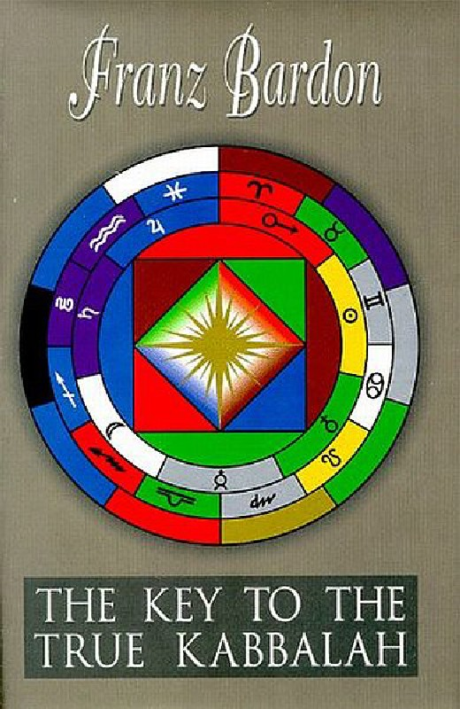
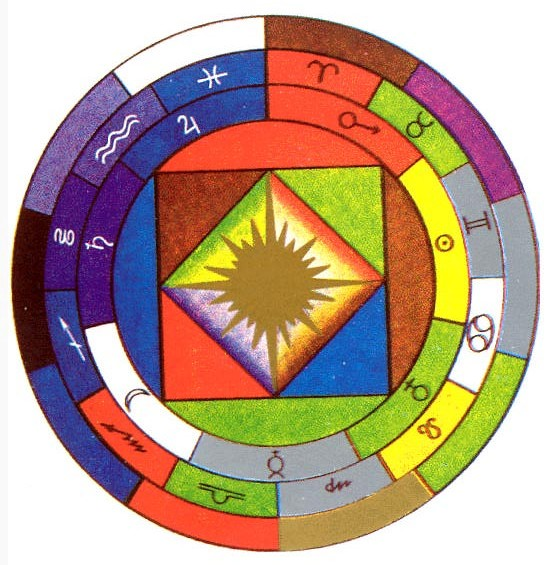
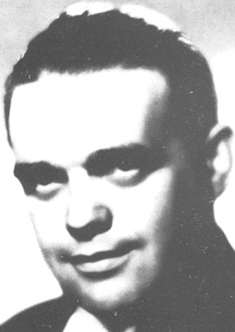

<!DOCTYPE html PUBLIC "-//w3c//dtd html 4.0 transitional//en">
<html>
<head>
 <meta http-equiv="Content-Type"
 content="text/html; charset=iso-8859-1">
 <meta name="Author" content="Robert Nelson">
 <meta name="GENERATOR"
 content="Mozilla/4.8 [en] (WinNT; U) [Netscape]">
 <title>Franz Bardon: Key to the True Quabbalah -- color enhanced
notebook</title>
</head>
<body style="font-family:verdana;background-color:#000;color:#fff;">
 
<blockquote>
 <center>

 <hr width="62%"><br>
 <a name="_top"></a><br>
 <b><font size="+2">Franz BARDON</font></b>
 <p><b><i><font size="+2">The Key to the True Quabbalah</font></i></b>
 </p>
 <p><b><font size="+2">[ Enhanced Workbook ]<br>
 <br>
 </font></b></p>
 </center>
 Contents<br />
 <h4>Part I ~ Theory</h4>
 Symbolism of the 3rd Tarot Card<br />
 Theory - The Quabbalah<br />
 Man as Quabbalist The Laws of Analogy<br />
 Esoterics of Letters <br />
 The Cosmic Language The Magic-Quabbalistic Word -- Tetragrammaton<br />
 The Mantras The Tantras<br />
 Magic Formulas Theory of Quabbalistic Mysticism Quabbalistic Magic<br />
 <h4>Part II ~ Practice ~ Preconditions</h4>
 Practice -- Preconditions<br />
 Step I -- Mysticism of Letters Step II -- Quabbalistic Incantation<br />
 Step III -- Aqua Vitae Quabbalisticae<br />
 Step IV -- Quabbalistica Elementorum<br />
 Step V -- The Ten Quabbalistic Keys<br />
 Step VI -- The Tetragrammaton -- Jod-He-Vau-He -- The Quabbalistic Fourfold<br />
 Key Step VII -- The Quabbalistic Mysticism of the Alphabet -- First key -- Simple<br />
 Letters<br />
 <h4>Part III ~ Practice ~ The Magic of Formulas</h4>
 Step VIII -- The Quabbalistic Alphabet -- Twofold Key<br />
 Step IX -- The Use of the Threefold Key <br />
 Step X -- The Use of the Fourfold Key -- Formula of Elements<br />
 Step XI -- Quabbalistic Use of Divine Names &amp; Beings<br />
 Step XII -- The Quabbalist as Absolute Master of the Microcosm &amp; the<br />
 Macrocosm<br />
 Epilogue<br />
 <hr width="62%">

<h3>Preface</h3><p>As promised in the two foregoing works Initiation Into Hermetics and The Practice of Magical Evocation, the author Franz Bardon has now published his third textbook, dealing with the cosmical language, called Quabbalah by the initiates.<br/>Those who are already well advanced in their studies of the spiritual, i.e., the hermetic science, by practical work on themselves will naturally be seized with great pleasure and, on account of their having already acquired practical experience, strengthened in their confidence that the road they have taken is virtually the most reliable one and will, without exception, meet all their expectations.<br/>Many scientists who have been induced, by their great interest in Quabbalah, to take up the studies of this science in accordance with diverse theoretical pieces of advice will be lost in amazement at the contents of this textbook. If not at once, then certainly very soon will they have to admit, whether they like it or not, that all the specified and widely approved quabbalistic methods in their richness, variety and truthfulness differ widely from those contained in the quabbalistic books hitherto published.<br/>Not even the most concealed, most secret libraries of the completely secluded monasteries in the Far East, the so-called ashrams, which are inaccessible to any ordinary earthly being, can pride themselves on possessing the true Quabbalah in one single secret script of such clear and distinct diction.<br/>After a perusal of this book even those who have already a good knowledge of the Quabbalah will admit that they have to bring up a good deal until they can call themselves a true Quabbalist. Upon mature consideration the reader can come to the conviction that it counts to drop all incomplete teachings and keep on going with the methods in this textbook.<br/>In the history of man, many a Quabbalist has devoted all his life to the untiring but fruitless search for the unpronounceable name of God lost by mankind in the days of yore. Having also gone through this third work conscientiously, the Quabbalist will suddenly have the impression of a miracle, of an immense treasure put into his lap by Divine Providence when, as a reward for his untiring, honest efforts, the true name of God, apart from many other things, will be revealed to him spontaneously. And this exceedingly high reward is being provided for all seekers of truth for whom the three volumes, which are unparalleled in the occult literature, are not merely interesting reading, but a valuable impulse towards the practice of Magic and Quabbalah.<br/>Otti Votavova<br/></p>
<h3>Introduction</h3><p>To my third volume of initiations into hermetics I have given the title of Key to the<br/>True Quabbalah, which, strictly speaking, is a theology dealing with the Knowledge<br/>of the Word. When engaged in Theurgy, one must, in any case, have gone through a magic development; i.e., one must at least completely master the practices described in my first volume Initiation Into Hermetics. Like my first two works, the present book, too, consists of two parts. In its first part, the theory, I prepare the reader for the difficult field of the Quabbalah, whereas the second part contains the actual practice.<br/>Much has been written about Quabbalah, a hard nut in hermetic literature, but in practice only little can be used of all this. Nearly always it is claimed that the person engaged in Quabbalah must have a command of the Hebrew language, without which it is impossible to study Quabbalah. The academic Quabbalah, in most books, is usually of Hebrew origin and is said to convey to the scholar a philosophy of life on the line of a quabbalistic paragon. But the number of books also indicating the practice and the use of the true Quabbalah is very limited. A few Jewish clergymen (rabbis) had a knowledge of Quabbalah, but, probably due to their orthodox thinking, kept it strictly confidential, thus not even fragments of quabbalistic practices have become known to the public.<br/>The many descriptions of Quabbalistics do not even offer any theoretical details to the seriously interested student, to say nothing of any true hints for the practice. They<br/>only supply at the most, a philosophical representation of the micro-and the<br/>macrocosm. The student of Quabbalah cannot get any idea of the Quabbalistic philosophy of life at all, since, on the one hand, he will not be able to see his way in this great confusion of ideas and since, on the other hand, he will still be left in darkness due to the contradictory statements made in different books.<br/>My present volume contains the theory as well as the practice, the latter being especially ample, as the diligent student of Quabbalah will see for himself. To represent the whole, comprehensive Quabbalah in one book is, of course, impossible for mere technical reasons. However, I have taken pains to string together the pearls<br/>of this wonderful science to an extremely beautiful chain. In doing so, I have naturally<br/>taken into account the laws of analogies referring to the micro- and macrocosm, for it could not be done otherwise, if the total aspect of the Quabbalah is to be done without any gaps. I make as little use as possible of the numerous Hebrew terms which have commonly been used in Quabbalah up to now and prefer such terms which are easily understood by everybody. At any rate, the reader studying my book will get quite a different idea, i.e., the right idea of the Practical Quabbalah.<br/>He who wants to be successful in convincing himself of the reality of the Quabbalah in practice must go through my two first books Initiation Into Hermetics and The Practice of Magical Evocation systematically. Otherwise, the training to achieve perfection would take too long and any success would ensue very late. However, it is quite up to the reader to study my books merely theoretically. In doing so, he will acquire a knowledge which he would not be able to get from any philosophical book. But knowledge is not yet wisdom. Knowledge depends on the development of the intellectual features of the spirit; wisdom, on the other side, necessitates the equable development of all four aspects of the spirit. Therefore, knowledge is mere philosophy, which by itself alone can make a man neither a Magician nor a Quabbalist. A learned man will be able to say a lot about magic, Quabbalah, etc., but he will never be able to understand the powers and faculties rightly.<br/>With these few words I have explained to the reader the difference between the philosopher and the sage. It is up to him either to follow the more convenient path of mere knowledge or to proceed along the more arduous path of wisdom.<br/>Already the primitive people, no matter what race they belonged to and which part of our terrestrial globe they inhabited, had their special religion, i.e., an idea of God, and consequently also some kind of theology. Each of these theologies was divided into two parts: an exoteric and an esoteric part, the exoteric knowledge of God being the knowledge for the people and the esoteric knowledge, on the other hand, being the theology of initiates and high priests. Exoteric knowledge never contained anything of true magic or Quabbalah. Thus only magicians and Quabbalists could be the initiates of the primitive people.<br/>Since the days of yore it has been the most sacred commandment to keep this wisdom strictly confidential; firstly, in order to maintain the authority; secondly, in order not<br/>to lose the power over the people and, thirdly, in order to prevent any abuses. This tradition has been maintained up to the present days, and although my book will convey complete knowledge to my reader, it will only be able to make him know, but it will never give him wisdom. He will have to strive for the latter by honest practical work. The stage of wisdom he is able to achieve will again depend on his maturity<br/>and personal development. My book will make the highest wisdom accessible only to the really mature, i.e., the initiate, thus leaving a great gap between the learned one and the sage and not trespassing against the commandment of silence, in spite of my publishing the highest truths and secrets. To the learned man, wisdom will always remain occult; it will only be allotted entirely to the initiate.<br/>The science of Quabbalah, i.e, Theurgy, is very old and took its rise in the Orient. The sages of the dawn of history laid down the greatest secrets in the universal language, the metaphorical language, as can be seen from the hieroglyphs of ancient people, the Egyptians, and so on. The ancient sages could only pass on their wisdom in the metaphorical language, i.e., in a symbolic style. The absorption of this wisdom then always depended on the stage of maturity of the relevant scholar. All oriental wisdom was laid down in the symbolic language only. This wisdom remained a secret to the immature or, in other words, to the person who had not reached the necessary state of maturity by developing his individuality under the guidance of a master, a guru. That is why until today all true books of initiation are in agreement with one another on the point that without a personal guru initiation is not only impossible, but even<br/>dangerous. A true initiate had to explain the symbolic meanings of the writings to his scholar gradually, according to the development of the same and he taught him the symbolic, i.e., the metaphorical language. The scholar soon got used to his master&#39;s language and again was only able to pass on the wisdom in this symbolic language.<br/>Thus, up to the present day, this holy science was passed on from one person to another merely by tradition. Any explanation a master gave to his scholar was conveyed to the latter by inspiration, so that it suddenly became clear to the scholar what his master wanted to tell him. This enlightenment, i.e., initiation, had a number of names in the Orient, for instance &quot;abhisheka&quot;, &quot;angkhur&quot;, etc. Never did a master reveal the true mysteries of wisdom to the poorly prepared or the immature. There were, no doubt, also magicians and Quabbalists who left behind some writings about the highest wisdom. But, as already mentioned, the highest wisdoms were all laid<br/>down in the symbolic language and if, by chance, they came into the hands of an immature person, they remained inexplicable to him. However, sometimes it did happen that an immature person tried to explain these wisdoms from his own point of view. That such an explanation was far from any true interpretation goes without saying. Most writers who succeeded in getting hold of writings left behind by initiates of the Orient always made the same mistake, i.e., they translated these writings into the language of the intellect, interpreting them literally. Since they were usually not<br/>mature enough to interpret correctly the symbols of a mystery or a practice, a.s.o., due to their lacking the necessary training and the true understanding of the metaphorical or cosmic language, they gave rise to numerous errors in hermetics. Today hardly anyone can imagine how many absurd practices have been published in civilized languages.<br/>In my present book I have transformed the symbolic language into the language of the intellect, making accessible the path to true hermetics, to Quabbalah, i.e., the mystery of the word, in a manner in which the initiate may safely proceed.<br/>The Author<br/></p>
<h3>The Symbolism of the Third Tarot Card</h3><p>The picture on the opposite page is the graphic representation of the Third Tarot Card. The first (or outer) circle has ten sections symbolizing the ten quabbalistic keys.<br/>These ten quabbalistic keys (v. their color symbolism) are identical with the ten<br/>Hebrew Sephiroth.<br/>Since these ten keys, or Sephiroth, comprise the knowledge of the whole universe with all its ways of existence, methods and systems, they are placed in the outer circle.<br/>The fact that these ten keys refer to the micro- as well as the macrocosm becomes evident also by the fact that the next, i.e., the second circle, reflects the signs of the zodiac of the whole universe, again in the relevant color symbolism.<br/>The third circle (going from the outside to the inside) is the planetary circle, which is identified by the planetary symbols and the colors analogous to the planets.<br/>All three circles enclose a large square symbolizing the four elements represented in the relevant color symbolism. This square, indicating the realization of the elements, symbolizes the material world.<br/>The inner, smaller square signifies the tetragrammatonic mystery, the Jod-He-Vau-He or quabbalistic fourfold Key necessary for mastering the elements and their<br/>influences.<br/>The sun in the center of the picture represents Divine Providence, the Akasa Principle, the origin of all that exists.<br/>Thus not only man (i.e., the microcosm), but also the whole macrocosm is graphically represented by this picture. Furthermore, all keys are drawn in it, the fourfold key being especially dominant, since it is the key to the realization, the materialization of things. Everything that the quabbalah teaches us, i.e., its whole system, all analogies, follows clearly from this picture and its clear symbolism. The meditating quabbalist will therefore deduce all analogies from the Third Tarot Card.<br/><span></span><br/></p>
<h3>Part I Theory:</h3><h3>The Quabbalah</h3><p>Quabbalah is the science of the letters, the science of the word and the language, not though, of the intellectual, but -- mark you -- the universal language. The term &quot;Quabbalah&quot; derives from Hebrew. Some religious systems have a different term for<br/>this science. Thus, for instance, in India and Tibet, the science of the words is called<br/>&quot;Tantra&quot;. And again in other religious systems they talk of &quot;formulas&quot;, and so on.<br/>In my present work I keep to the term of &quot;quabbalah&quot;. To speak quabbalistically is to form words from letters; words analogous to this or that idea according to the universal laws. The use of the quabbalistic language has to be trained practically.<br/>Quabbalah therefore is the universal language by which everything was made, it is the incarnation of one or several divine ideas. By means of quabbalah, i.e., the universal language, God has created everything. The Evangelist St. John, in the Bible, is also referring to quabbalah when saying, &quot;In the beginning was the Word: and the Word was with God&quot;. Thereby St. John clearly says that God made use of the Word in order to create, by means of It, out of Himself.<br/>Only he who is really able to materialize the divinity within himself in such a way that he will speak, out of himself, as Deity in accordance with universal laws, may be regarded a true quabbalist. The practicing quabbalist therefore is a theurgist, a God incarnate, being able to apply the universal laws in the same way as the macrocosmic God.<br/>Just like the magician who, after his initiation and personal development towards perfection, has realized the connection with his Deity within him can now act accordingly, the quabbalist can do so, too, with the only difference that the quabbalist is making use of the Word Divine when expressing his divine spirit externally. Every true magician having command of the universal laws can become a quabbalist by appropriating to himself the knowledge of the practical quabbalah. The structures of the quabbalah cited in numerous books do certainly suit the theorist who wants to get an idea of the principles, but they are thoroughly insufficient for the practice which promises the correct application of the powers of the word.<br/>This clearly shows that a perfect quabbalist must be a man connected with God, a man who has realized God within himself and who, being a God incarnate, makes use of<br/>the universal language materializing everything he says the very moment he says it. In<br/>whatever sphere he wants his language to materialize, there it will be materialized. In India, for instance, a man who can at once materialize every word he says is called a &quot;Wag&quot;. In Kundalini yoga this power and ability is identified with the Visuddha center. A perfect quabbalist knows all the rules of the micro- and macrocosmic Word, by which the law of the Creation by the Word is meant, and he also knows what true harmony is. A genuine quabbalist will never violate the laws of harmony since he is representing -- with his microcosmic language -- the Deity. If he acted contrary to the laws of harmony, he would not be a genuine quabbalist but a chaote. From the hermetic point of view, a quabbalist, or theurgist, is, in his body, a representative of the macrocosmic Deity on our globe. Whatever he speaks in the original language, as God&#39;s representative, is done, for he has the same power as the Creator, as God has.<br/>To achieve this maturity and height of quabbalistic initiation, the theurgist must first learn the letters like a child. He must have a complete command of them to be able to form words and sentences with them and to speak, eventually, in the cosmic language. The practice involved in this is dealt with in the practical part of this book.<br/>Anyone can occupy himself with the true quabbalah, theoretically as well as practically, no matter what religious system he may adhere to. The quabbalistic science thus is no privilege for people who profess the Hebrew religious system. The Hebrews do maintain that the quabbalah is of Hebrew origin, but in Hebrew mysticism the knowledge of the quabbalah is of Old Egyptian origin. The history of the Hebrew quabbalah, its origin, development, etc., is to be found in the literature on the subject, for much has already been written about this field.<br/>In my book, the synthesis of quabbalah is dealt with insomuch as it is absolutely necessary for the practice. I refrain from all unnecessary burdens of historic and other structures of quabbalistic philosophy.<br/>The term &quot;quabbalah&quot; has often been abused by degrading it to a play with numbers, horoscopic assessments, name analogies and various other mantic purposes. Although numbers do have a certain relation to letters, as the reader will be able to gather from the practical part of this book, this is one of the lowest aspects of the quabbalah which we do not want to deal with in this place. True quabbalah is no mantic science which makes fortune telling possible, nor is it an astrolo gy facilitating the interpretation of horoscopes or an anagram, the construed names of which make forecasts possible.<br/>Since the true quabbalah, when applied correctly, represents the universal laws, relevant analogies of harmony in accordance with cosmic analogies are, up to a certain point, possible. This, however, is ordinary fortune telling and has nothing to do with the true science of the universal language.<br/>The reader will agree that this science is most sacred and will never dare to degrade the universal laws to fulfill ordinary mantic purposes. Each religious system had its own genuine quabbalah which it was gradually losing due to the various reforms of<br/>the religious systems; it is being fully maintained only in the Orient. The ancient Celts<br/>and Druids also had their genuine quabbalah which was well known to Druid priests. The practical use of the runic magic by the Druid temple priests originates from their ancient knowledge of the quabbalah. Today there are unfortunately only very few people who understand the runic quabbalah of the old Druids and can apply it practically. The practical runic quabbalah has been lost completely during the course of time.<br/></p>
<h3>Man as Quabbalist</h3><p>In my first volume, <i>Initiation Into Hermetics</i>, I divide man into three regions -- into body, soul and spirit -- and there I also mention the quadripolar magnet. It is clear to the meditating scholar that the mental body is connected to the astral body by the mental matrix and that the astral matrix is keeping the mental and astral bodies together with the material body. It is certainly also clear to him that the physical body is kept alive by food (condensed elemental matter), the astral body by breathing. The perceptive faculty of the senses is tied to the material and the astral body by the mental matrix. The future quabbalist must know all this well and must, in this connection, be able to gain a clear picture of the process in his own body if he honestly wants to go in for quabbalah. Apart from this fundamental knowledge, the<br/>quabbalist must find a deeper relationship to his own self, and these deeper relations are the actual fundamentals for studying quabbalah.<br/>The functioning and working between body, soul and spirit comes to pass automatically with every human being, no matter whether he has been initiated into the secrets of hermetic science or not. For the quabbalist this is the multiplication<br/>table: he knows all the processes and is therefore able to arrange his life in accordance with the universal laws.<br/>This knowledge distinguishes the initiate from the non- initiate, for the initiate having been taught the laws knows how to make practical use of them and is able to balance out any disharmony between body, soul and spirit. Apart from this, the initiate, by his conscious attitude towards the universal laws, is capable of leading a sensible life in accordance with these universal laws and to proceed along the path to perfection. Already when looking at it from this angle, one realizes that initiation is something quite special, offering a particular view of life. For the initiate looks at the world with quite different eyes than all other people. The various buffets of fate that an initiate might be exposed to can never hit him so hard, and he will never suffer so much. One can see that easily when considering what has been said above.<br/>From the quabbalistic point of view, man is a perfect embodiment of the universe, since he has been made the image of God. Man is the highest being on our earth and everything that takes place in the universe on a large scale also takes place in man on a small scale. Seen from the hermetic angle, man represents the miniature world, i.e., the microcosm, in contradiction to the universe, the macrocosm.<br/>A genuine quabbalist who really wants to wo rk practically within the scope of the universal laws, i.e., who wants to take an active part in the great work, must, at any rate, have undergone a magic development and must safeguard the genuine ideas in accordance with the universal laws. He who is content with mere theory will absorb quabbalistic knowledge and, apart from this, enrich the intellectual features of is spirit, but the other three fundamental principles of the spirit will lag behind. A theorist will never be able to grasp the essence of knowledge, to say nothing of his inability to bring about anything. He may become a quabbalistic philosopher if he is intellectually talented, but never a genuine, magically trained quabbalist whose spoken word becomes reality. A theorist may become a scientist, but never a sage. The difference between a learned man and a sage is very great. The magician, on<br/>account of this magic development, realizes his intention by the power of his will, but due to his ties to God he cannot make the same use of the magic word as can the quabbalist. A magician who is not engaged in practical quabbalah may use the powers which he has developed within himself and, apart from this, is able to call various beings to help him with his work, but a quabbalist achieves everything by his quabbalistic word, without the help of any beings, genii, and so on.<br/>Therefore, from the hermetic point of view, a genuine quabbalist is the highest initiate, for he acts for God in the miniature world, the microcosm and, applying the laws of analogy, he may become active also in the macrocosm. This is the difference between the magician and the quabbalist, and therefore anyone striving for perfection will want to occupy himself, in practice, with quabbalah. A quabbalist taking part in the great work is then usually selected by Divine Providence to carry out certain<br/>commissions. The genuine quabbalist thus is a representative of the Creation, but he remains the most obedient servant of the universal laws; the more he becomes an initiate, the humbler he is toward Divine Providence. He is, indeed in possession of the greatest power, yet he will never use his power for his own purposes, but only for the welfare of mankind. The genuine quabbalist is the highest initiate for whom nothing is impossible, and any word he pronounces will be translated into reality without exception.<br/>Finally, I should like to point out once again the difference between a perfect initiate and a saint. The genuine magician will not need this explanation, for he will be able to understand everything from what has been said here. Those readers, however, who go through my books only theoretically, may be told that a perfect human being adheres to all universal laws, duly takes them into consideration in the macrocosm as well as<br/>in the material, astral and mental plane and lives by them, whereas the saint is only<br/>interested in a particular religious system, translating the same into reality by following its dogmas and regulations, but is not keeping equal pace everywhere, i.e., in every sphere. The person only striving after saintliness usually neglects the body<br/>and the material world, regarding both as maya, a delusion, and realizes, after relevant training, within himself only very few aspects of the universal laws. Such people do<br/>attain a climax in the aspects they have put before themselves as their goal, be it the divine aspect of charity, mercy, kindness, etc., which they realize within themselves. These people then see the universal laws only from the angle of their mental training, but are not able to comprehend the complete image of the universal legality, nor can they interpret them. From the point of view of hermetics, such a way is not regarded<br/>as a perfect one and is termed &quot;the path of saintliness&quot;. A true initiate, a quabbalist, on the other hand, will seek to acknowledge all divine aspects equally and to realize them gradually. This way, of course, is longer and more arduous, and, usually, one incarnation is not enough to complete it. The most important thing for him is his being aware that he is proceeding along the right track.<br/>On the way to perfection there should not be any haste. Everything takes time and needs the necessary maturity for its perfection. From the hermetic point of view there are actually only two ways: the way to &quot;saintliness&quot; and the way to &quot;perfection&quot;. The way to saintliness has as many systems as there are religions on this earth. He who chooses the way to saintliness has decided to realize within himself only one or a few divine aspects and is usually regarded as symbolizing the relevant divine idea. With only a few exceptions, his saintliness then even becomes a hindrance on his way, considering the world or the less mature human beings, for because of the devotion of his disciples, worshippers, followers, etc., he is often impeded in his mission, task and rise.<br/>I do not want to deal here with such human beings who consciously decorate themselves with an aureola, in order to be respected, adored, worshipped, etc. Unfortunately, there exist a great number of such people in this world. A true saint retires to solitude, whereas a hypocrite will show off with his halo. But he who follows the course to perfection will never seek solitude; he will abide by the place which Divine Providence has allocated to him and will continue working at his personal development without attracting the attention of his environment. He will not do the least to show his state of maturity to the external world. On the contrary, he may even try to disguise it to be unmolested by curious and immature people. This<br/>goes to show that there is also a great difference in the attitude and behavior of a saint and a perfect human being. The saint will lose his individuality as soon as he has reached his goal; but this is not the case with the perfect human being. Not the individuality as a person is at stake, but the individuality as God incarnate.<br/></p>
<h3>The Laws of Analogy</h3><p>The laws of analogy have great significance in all true religious systems, including the science of hermetics, and therefore play a most important role. In the universe, everything was created under strict legalism, and that is why everything gears into another with astonishing precision, like a most precise clockwork. In hermetic science the study of the practical application of this legalism is called &quot;quabbalah&quot;. Any hermetic system and method, any philosophy of religion and religious system which does not, or does only partly, take into account the universal laws, is one-sided and therefore imperfect. Religious systems that acknowledge only one aspect of the law and neglect all others, or even oppose them, can only be of limited duration, though their decay may not come until after hundreds or thousands of years. Only the<br/>religious systems which take into account the absolute universal laws will be durable and last eternally.<br/>All original ideas, e.g., absolute harmony, order, periodicity, etc., are reflected in the absolute legality of the universal laws.<br/>The attentive reader cannot fail to notice that already in my first book, <i>Initiation Into Hermetics</i>, I illustrate a system for the development of the body, soul and spirit based on the universal laws which represents the first step of initiation on the road to perfection. As can be concluded from the absolute laws, true initiation is neither a privilege of sects, nor is it dependent on any religious belief. No special mention need be made that the comprehension of the fundamental truths, i.e., of the universal laws, necessitates a magic equilibrium in all three planes. he who strictly adheres to the universal laws in all three planes, who comprehends them clearly and masters them completely, is not only master of his own miniature world but also master in the universe. The practical initiation leads to this aim and especially the knowledge of the quabbalah.<br/>In the practical part of this book, I have published a system dealing with the practice of the quabbalah in strict accordance with the universal laws. This practical system of the quabbalah has been existing for thousands of years and was already taught from mouth to ear in the days of yore, and later it was passed on in the schools of the prophets and in the temples of initiation of various peoples and races. Knowing the laws of analogy, the initiate may relate the law of analogy to any science, and he will always hit the right thing. If, for instance, a doctor is a hermetic, he is forthwith also<br/>in a position to bring his knowledge into line with the universal laws and, in analogy<br/>to these, not only to find out disharmony (i.e., disease) and its cause, but also to prescribe the remedy for the removal of the nidus (seat of disease) by the aid of the key of analogies. With the unique possibilities in mind and the fact that these are open to the initiate, it may be worthwhile to do good not only unto oneself, but also to<br/>become active on behalf of suffering mankind. The same key of analogies can be used<br/>in any other field and renders equally good service to the individual as well as to mankind.<br/>The expression &quot;chaos&quot;, which people are so fond of using, is only a term of ignorance. In reality, God, the highest imaginable Creator, has formed everything precisely and lawfully in accordance with His principles, and it is in this legality and all its aspects that we can recognize God soonest. God, as the universal principle, is the Supreme Being, is incomprehensible and unimaginable. Only from Hissplitting process, from the creation of the universe, i.e., from His works, can one draw analogous conclusions to get, at least, some idea of God&#39;s greatness and eminence.<br/>Hebrew rabbis, in the Book of Creation, <i>Sefer Jezirah</i>, have tried to lay down the quabbalah, i.e., the legality of the creation. Although the Sefer Jezirah is of Hebrew origin, this does not mean that other people did not lay down the universal laws of creation, too. As in the book <i>Sefer Jezirah</i>, we find the history of creation laid down, in accordance with the universal laws, in the Bhagavad Gita. Also other documents, passed on in traditions, historical buildings, monuments, etc., give written and visual evidence of the universal laws of creation. In Egypt, for instance, already Hermes Trismegistus knew about the history of creation and the universal laws, which he perpetuated on the Hermes Plate with the motto, &quot;As above, so below&quot;. Hermes thus gives clear witness of the fact that the miniature world, man, was created analogous to the great world, the universe. Innumerable examples could be stated for the analogies of the universal laws, but these little hints may suffice.<br/>Most analogies are dealt with in the practical part of this book, in which the quabbalist is given exact information how, according to the universal laws, he gets a perfect command of the genuine language of the micro- and the macrocosm and how he<br/>learns its practical application. In the human body, the analogies become clearly visible and they may be identified by numbers.<br/>The fact that man has exactly ten fingers and ten toes, and not six or three, also represents an analogy which I will have to deal with in detail later in this book. The same is true of all other analogies which the reader may, for instance, find in the book <i>Sefer Jezirah</i>, and no practical analogy needed for quabbalah will be disregarded, but will be turned to account. In the practical part of this book I shall also discuss thoroughly, from the viewpoint of esoterics, the individual letters with regard to the mental, astral and material world, which do not only stand for sounds but also for numbers and ideas.<br/>The quabbalah expert becomes acquainted with a different sort of mathematics and will be able to express ideas by numbers and, reverse, to convert numbers into ideas, and, furthermore, to translate into number and to clothe letters in numbers. By doing this, he is enabled to get to know his own self, and thus also God. The quabbalist will understand the perfection of the laws, he will realize that good and evil, taken<br/>literally, are just religious expressions; but, in reality, both principles, i.e., the positive and the negative, are necessary, since the one cannot exist without the other. The quabbalist will always tend toward the good and never hold in disdain the negative, but learn to master it, for no useless things were created by the Creator.<br/></p>
<h3>Esoterics of Letters</h3><p>The mystery of the word, or, more intelligently spoken, the mystery of the knowledge of the word and the genuine use of it, requires the highest form of initiation that<br/>exists. At all times, he who has been called&quot;master of the word&quot; has always been the<br/>highest initiate, the highest priest, the true representative of God. Each religious system, each initiation, regards the knowledge of the word as the highest knowledge. Even with regard to Jesus do we find that his favorite disciple John is engaged in the word, and thus with quabbalah, which eventually is also laid down in his gospel, where as said before, you may read literally, &quot;In the beginning was the Word and the Word as with God&quot;, etc. No other disciple of Christ has been so profoundly initiated into the mystery of the word as was St. John. Being &quot;master of the word&quot;, he was able to work the greatest miracles, and as the gospel says itself, this disciple was the only one who died a natural death. He himself could effect this only because he was a quabbalist, a perfect master of the word. All other disciples suffered death as martyrs. As tradition tells us, many other initiates have also been masters of the word<br/>thousands of years before St. John.<br/>Each word consists of letters and each letter, from the esoteric point of view,<br/>expresses an idea and thus some kind of power, quality, etc., which, however, may not<br/>only be expressed by the letter alone, but also by the number analogous to the universal law. Thus legality is made clear by numbers, and ideas come to light by letters. The meaning of each letter is analogous to the three worlds known to us. Since the quabbalist is able to express the sense of an idea by means of letters, and since he knows very well each number standing for the relevant idea, the letters have quite a different meaning for him than they have in the intellectual language. Thus, under the universal laws, the letter gains a quabbalistic significance. This knowledge of the universal laws renders it possible for the quabbalist to express several trains of thoughts by the letters, and thus by the numbers analogous to them. A word that has reference to the absolute laws and that is composed in analogy to and by means of the relevant letters and numbers is a quabbalistic word; i.e., a word expressed in the universal or cosmic language. To be able to form a quabbalistic word, one must precisely know the complete analogy of letters and numbers.<br/>In the practical part of the book, the quabbalist will be taught to use exactly any word composed according to the universal laws with regard to the mental, astral and material worlds and with regard to the elements. He will learn to express words, and<br/>consequently also sentences, not only intellectually, i.e., by his intelligence, but by his whole personality. Only a word expressed in such a way will have a creative effect. The correct pronunciation of the letters in one&#39;s spirit, in one&#39;s soul, and later on also<br/>in one&#39;s body, is the actual foundation of practical quabbalistic mysticism.<br/>In order to become effective creatively, the quabbalist must learn to speak like a child that can only babble in the beginning and later learns to pronounce single letters and words. The letters have their analogous significance in the mental, astral and material world and likewise in the various planes and hierarchies, and the quabbalist must<br/>learn them and finally have command over them.<br/>From these words one can see that the theorist, who is only able to think intellectually and who only comprehends letters, words and sentences with his intellect, will never<br/>be able to become a genuine quabbalist. Corresponding to his state of maturity, he will only be able to comprehend the quabbalah merely from the intellectual, i.e., philosophical point of view. The practicing quabbalist, ho wever, will be able to understand and make use of the sense of every letter, of its idea and legality (number).<br/>The study of the quabbalah begins with the esoterics of the letters. When creating ideas out of His Own Self and arranging them to universal laws, God formed letters, and with the letters numbers which have an exact and analogous connection to one another and represent the whole universe from the highest to the lowest. The assertion by Hermes Trismegistus that &quot;as above, so below&quot; appears quite reasonable from the quabbalistic point of view. The letters which God used for creating from within His Own Self, the ideas that pleased Him, are clearly explained in the Book of Creation,<br/>in <i>Sefer Jezirah</i>.<br/>At the point of creation, above all things, ten principal ideas came into being, which, in quabbalah, are reflected by the so-called Sephiroth. Number ten, for instance, is a reflection of God in highest form and lowest emanation. Knowing the laws of analogies, the quabbalist will understand what I meant by pointing out that in relation to the ten principal ideas, man has ten fingers and ten toes. Already at this point, the quabbalist will conjecture a certain relation or an analogous connection between the divine principle ideas and the <i>Sefer Jezirah</i>. The fact that each mathematical number on our earth can be reduced to the figures 1 to 9 by addition (total of the digit) has also a quabbalistically analogous coherence. In the Hebrew quabbalah, for instance, numerical combinations were known as gematra. Ho wever, I shall only mention the essentials that are necessary for the practical application of quabbalistic mysticism, i.e., for the use of the quabbalistic word. He who is only anxious to learn about the special numerical combinations regarding the verse lines in Hebrew literature may, if he so wishes, resort to the relevant literature on numerical combinations.<br/></p>
<h3>The Cosmic Language</h3><p>In their books, some writers make mention of the cosmic language, which they sometimes even call the Uranic language. It may well be that some letters of the cosmic language are known and intelligible to them, but up to this day nobody has dealt with it in detail. The hermetic will know from what has been said that by &quot;cosmic language&quot; the language of God, or Divine Providence, is meant. By this, God, as Universal Spirit, has created everything that exists in the universe, starting from the tiniest up to the greatest and highest, i.e., according to the unshakable laws<br/>by which God is expressing His Own Self. Therefore we can only understand God via His legality in the universe and clothe the synthesis of His laws into words to reveal him as the Highest Original Principle which may ever be intelligible to man.<br/>To understand the quabbalah and to use it practically means comprehending the cosmic language on the basis of universal legality. Thus, the cosmic language is a language of the law, a language of power and authority, and at the same time also a language of dynamics, i.e., of condensation, materialization and realization. Seen from the quabbalistic angle, to speak the cosmic language means to form and create within the scope of the universal laws. Only the initiate who understands and masters<br/>the universal laws in their absoluteness may avail himself of the cosmic language when dealing with human beings and beings of other spheres. To speak the cosmic language, to be truly creative, i.e., to deputize for God as His true image, is something that is only possible for someone what is able to concentrate quadripolarly. Why quadripolarly? -- I shall explain that in detail in the next chapter.<br/>Consequently, the cosmic language is not the language by which spiritual beings make themselves understood to one another. The communication between spiritual beings, no matter of whatever hie rarchy, is effected intellectually by means of the so- called metaphorical language. The thoughts are transferred by symbolic images -- acoustically, telepathically and by emotion -- from being to being. The language or the spiritual beings, being imperfect, therefore is only a partial aspect of the cosmic language; it is, magically speaking, not so effective since the beings do not make use of quadripolarity when making themselves understood. The cosmic language is the most perfect language that exists, for it is analogous to the laws, that is, it expresses<br/>the universal laws in their cause and effect. The cosmic language is therefore the great<br/>fiat, &quot;it shall be&quot;.<br/></p>
<h3>The Magic-Quabbalistic Word</h3><h3>Tetragrammaton</h3><p>In many writings of the freemasons and the secret societies, the lost key, the lost Word of God is much discussed. Rituals which were practiced by these societies are now largely just imitated traditionally without their deeper sense in relation to the cosmic laws being understood. Therefore the rituals which, in the days of yore, had been introduced and practiced by genuine initiates are, naturally, quite ineffective today since the key to their correct interpretation has been lost. The key to all the rituals of each society was bound to get lost since the rituals were lacking the mystery of the quadripolar magnet. Actually, the magic word Jod-He-Vau-He is the quadripolar magnet which has been lost and which has usually been paraphrased by the word &quot;Tetragrammaton&quot;. By the use of this key, the oldest mysteries of the freemasons and other esoteric societies which had been founded by genuine initiates long ago were said to draw their magic power and authority. However, the true initiates realized that the mysteries were, in many cases, being desecrated, that some<br/>people even abused them and therefore they withdrew and confided the lost word only to the really mature. Thus the genuine use of the word Jod-He-Vau-He has been lost<br/>gradually.<br/>Regarding the creation, God has given expression to the whole universe, and thus also to His being, by His legality, i.e., by the quadripolar magnet, by four letters. The Hebrew quabbalah chose, for those four letters, the expression Jod-He-Vau-He, which was never allowed to be said aloud and was quite often paraphrased by the expression &quot;Tetragrammaton&quot; or &quot;Adonai&quot;.<br/>Therefore also the spirit of a man, who represents the perfect image of God in the Creation, is quadripolar and has, as we have already pointed out repeatedly, four principles analogous to the name of God. The first active principle, which is subject to the fire element, is the will (Jod); the second principle, subject to the air principle, is<br/>the intellect (He), the third principle, subject to the water element, is the feeling (Vau); and all three principles of the spirit, that is, all three elements together, for the fourth active principle, which finds expression in consciousness and is analogous to the earth element. In quabbalistic terminology the fourth principle is expressed by the second He.<br/>The quabbalist will now gain perfect clarity regarding the legal consecution and realize that in hermetic science all systems of development which do not take into consideration the gradual unfolding of the four basic principles of the spirit cannot be regarded as universal and are therefore imperfect, irrespective of the substance of<br/>each of their methods. It will be clear to the quabbalist why I already mentioned, in<br/>my first book Initiation Into Hermetics, the quabbalistic Jod-He-Vau-He with reference to the development of body, soul and spirit and, at the same time, he will gain the conviction that the system of development recommended by me and containing the absolute legality, is perfectly right.<br/>The symbolic or talismanic interpretation of the word Jod-He-Vau-He is only a graphical representation of the emanation of God in His highest manifestation and represents the use of the universal laws. The application of the name of God, expressed in four letters, I describe in the practical part of this book. The quadripolar magnet, i.e., the Jod-He-Vau-He, is the master key, the highest word of the creation representing the number of realization -- four. From number four emanates the legality in every science, and every science is therefore analogous to this number.<br/>The quabbalistic Jod-He-Vau-He, i.e., the quadripolar magnet in the universe, is usually symbolized by an equilateral quadrangle, i.e., by a genuine square. Seen from the hermetic angle, the square is thus a symbolic record of the realization, or the creation, by God. With its number four it indicates many analogies, the plus and the minus, the four created elements, the quabbalistic four which is attributed to the planet Jupiter and which symbolizes wisdom, or the four points of the compass. Whatever analogie s the quabbalist may draw, he will always come to the surprising<br/>conclusion that number four can be brought into relation to everything in the world as<br/>far as realization is concerned.<br/>I refrain from quoting any further analogous relations of number four and point out once more that the quabbalist adhering to my teachings and explanations may apply the key word four in all cases where the realization or the expression of legality is concerned. There is no doubt that in the quabbalah number four is also indicating the material plane. Not only the hermetic science of the West uses number four as a basis; the same also finds expression in the wisdom of the East. For instance in Kundalini yoga, the Muladhara Chakra, the roughest center of human resuscitation, is<br/>symbolized by a square, in one corner of which an elephant is symbolized as the<br/>greatest and strongest animal in the world. By this it is pointed out, in a veiled way, that number four is the idea which serves as the starting point for a yogi&#39;s personal development. I devoted a special chapter to the Muladhara Chakra in my book Initiation Into Hermetics. This I mention again only to make the quabbalist remember that the original wisdom of all the earth, no matter whether in the Orient or in the Occident, was always -- when understood rightly -- in full harmony with the Jod-He- Vau-He.<br/>Thus Divine Providence has used the quadripolar magnet in the highest word of the creation and by doing this expressed the legality with regard to His Own Self. Taken numeric ally and quadripolarly, Jod-He-Vau-He is the highest word that can be pronounced; from it God has created also other basic principles whereby multinumerical magic-quabbalistic words came into existence, which again have further basic principles and consist of further numbers, but which always have<br/>relation to number four. Of course, there are also quabbalistic words with the numbers<br/>5, 6, 7, 8 and 9 as basic principles of divine emanation. Apart from the name of God compiled of the four letters Jod-He-Vau-He, there are other quabbalistic key words consisting of 5, 6, 7 and 8 letters representing a basic principle each. In the Hebrew quabbalah there exist (apart from the name of God expressed by the 4 letters Jod-He- Vau-He) also names for God consisting of 5, 6, and 7, and even 12 letters which, however, can be reduced to a single basic idea by adding. The so-called Schem-Ham- Phoras of the Hebrew quabbalah, which expresses the name of God consisting of 72 letters and may be used in various directions, is reduced to number 9 by adding the figures of number 72, for 7 + 2 = 9. Also cardinal number 9 has an analogous relation to the Jod-He-Vau-He, i.e., to number 4. Its quabbalistic analogy will at once be clear to the quabbalist.<br/>The Schem-Ham-Phoras, however, is not only of Hebrew origin; it is also mentioned in Egyptian and Indian records. This is verified in the book Toth, the book of old Egyptian wisdom which is veiled in the Tarot. Also Hermes Trismegistos, being one of the oldest sages and best initiated human beings of Old Egypt, clearly shows this in his Hermes-plates and in the Book of Laws. Likewise, the Christian hierarchy had respect for the quabbalistic at the point of its foundation and brought Christian<br/>religion with all its representations into analogous connection with the universal laws.<br/>Thus number 4, i.e., the Jod-He-Vau-He, is symbolized by the 4 evangelists, the 12 disciples and the signs of the Zodiac, by which number 3 is expressed at the same time, for 3 x 4 = 12. Furthermore, the 72 disciples of Christ are related to the Schem- Ham-Phoras and have a secret connection to the highest number of primeval divine emanation 9 (7 + 2 = 9). It would be too comprehensive if I mentioned all the religions which have existed, and are still existing, in our world nowadays, and if I tried to draw up their analogous connection to the 10 principle ideas. It is up to the quabbalist to make his own investigations, should he be interested in the details. I have just given him a hint of some importance which he should not leave out of account.<br/></p>
<h3>The Mantras</h3><p>Many readers will certainly be interested in the question whether by mantra- mysticism some kind of oriental quabbalistic science is meant. Even those readers who have already occupied themselves with yoga and who have already studied some yoga systems have no clear picture of the mantras and the tantras and of oriental quabbalistic science. It would, however, be too comprehensive to publish a complete treatise on the mantras and therefore I must confine myself to enlighten the anxious reader accordingly on the mantras merely from the hermetic point of view.<br/>All varieties of the mantras have nothing to do with the cosmic language, which the quabbalist is introduced to in this book. The mantras are sentences which contain an idea or even a number of ideas in only one sentence, in the so-called mantra-formula, and which display the power or characteristics of a worshipped deity. We may regard therefore all mantras as sentences of prayer and make practical use of the m as aids for meditation. The mantras are not magic formulas and do not evoke such or similar powers. The mantas are expressions of ideas which serve the devotion of, or the connection with, the relevant power, being, authority, characteristic, etc. In the Orient, everyone using the mantras is called a Mantra yogi, no matter what way of cognition he has chosen, whether he is engaged in Hatha yoga, Raja yoga or some other yoga system. The Mantra yoga is the application of devotion formulas for deities and their aspects. Not only Indian philosophy teaches mantras, but also every other religion. In Christian religion, for instance, the mantras are represented by the litanies. The<br/>mantras do not merely serve the devotion but also the creation of a deep connectio n to<br/>the relevant deity or the expression of a divine idea with a few words. What being is worshipped is up to the individual and will depend on his mental, psychic and karmic development. It is all the same whether the initiate worships Brahma, Vishnu, Buddha, Adi- Buddha, Christ, Allah, a.s.o., for the names play no role at all. It is,<br/>however, important that he acknowledges and devotes the basic principles of his deity<br/>in the form of their universal features irrespective of the aspect. The mantras are thus adjusted to the religious attitude of the individual. From the hermetic point of view, it is not recommended to use mantras of religions that are unknown to the hermetic. If someone were to use the mantras of a deity that is alien or unappealing to him, such an application would be useless. It is usually always the unattainable, the<br/>inconceivable, the unapproachable, the unknown that will attract a European, and thus he throws himself on the Mantra yoga and worships, by repeating a mantra, a deity who does not appeal to him at all. He is usually induced to this practice by the assertions contained in quite a number of books writing on mantras and saying that<br/>the relevant deity will shower the person adoring him with gifts, providing he uses<br/>this or that mantra.<br/>If a religious Christian somehow decides that the mantras of the Indian kind could be if use to him, but lacks the proper religious attitude to the divine characteristic expressed by the relevant mantra, he will maneuver himself into an inconsistenc y and be unable to penetrate into the power sphere of the relevant deity, and he will only little or no success at all. If, however, a Christian mystic has a strong religious belief,<br/>he will be able to form his own mantra which will contain the power, quality, personal features, etc., of the deity devoted by him, no matter whether he repeats this mantra in an Oriental language or in his mother tongue. In mantra-mysticism it is, above all, important that the symbolic idea of God is expressed in only one sentence. Should, however, a hermetic find an oriental deity appealing to him so that he is not able to devote himself sufficiently to a religious system and its deity, existing on our continent, he is free to devote himself to an oriental deity. This might also be an indication of the fact that the respective individual must have already lived, in one of his former incarnations, in the religious sphere that he now wants to choose. Since the genuine magician is clairvoyant, he can, by looking back with his spiritual eye into his former incarnations, make sure that this is true, should he be interested in doing so.<br/>There are two types of mantras, i.e., firstly the dualistic and, secondly, the monistic type, depending, in each case, on the mental development and the purpose aimed at.<br/>Dualistic mantras are mantras that make the person revering a certain deity, assume an attitude by which he is the adorer and the deity or being adored by him is outside his personality. Mantras of monistic substance make it possible for the adorer to unite<br/>with the deity or idea that he adores, not externally but within himself, so that the<br/>adorer has a sense of being a part of or even the adored deity himself.<br/>Dualistic mantras, however, may have monistic traits by personifying the adored deity either within the individual or outside the same. Such mantras are called Saguna- mantras in India. On the other hand, mantras expressing abstract ideas, i.e., universal characteristics with which the adorer identifies himself, are called Nirguna- mantras in India. There the beginner is first introduced to the Saguna- mantras before he comes into the position of forming abstract ideas and learns to use them in a mantramistic, i.e., nirgunistic sense.<br/>Indian as well as other oriental records point out that one should not deal with mantra- yoga unless one has chosen a suitable teacher (guru) for this purpose. Only the<br/>genuine guru who is an expert in mantra- mysticism is capable if teaching his pupil a<br/>mantra adequate to his state of maturity. At this occasion, the teacher will also give<br/>his pupil the proper explanation of a mantra and of its power of the word, i.e., of the mantra, and explain to him the practical analogous relations of the mantra to its relevant deity. When being given the explanations of the mantra by his guru, the pupil will suddenly comprehend its meaning fully and learn to understand the deity he adores. This enlightenment or initiation into the relevant mantra is called Abhisheka<br/>in Mantra yoga in Indian terminology. On receiving the abhisheka from his guru, i.e., on learning to understand the connections, he at once becomes capable of contacting the deity designated to him by mantra mysticism, be it the sagunic, i.e., the dualistic, or the nirgunic, i.e., the monistic type of mysticism. This is not to say that the mature pupil would not be able to work with the relevant mantra of adoration without the<br/>help of a teacher familiar with mantra mysticism. It would, however, takes some time until he could comprehend the universal connections and work successfully in practice.<br/>In mantramistic books, mention is also made of the guru- mantras. The word guru- mantra has a double meaning: firstly, a mantra which is explained to the mature pupil by a guru and with the help of the abisheka. Various types of mantras might be in question, all aiming at achieving a certain goal. Secondly, the expression &quot;guru- mantra&quot; may indicate a type of mantra which the guru himself once used for a certain purpose and which he has made especially effective through years of repetition. That such a mantra, when confided to the pupil, is as powerful and mighty for him as for the guru cannot be doubted. Such a mantra will, of course, only be transferred from guru to pupil orally, i.e., from mouth to ear, and never confided to anyone else.<br/>To describe in detail each mantra, no matter whether sagunic or nirgunic, whether Indian, Buddhistic or otherwise oriental, and its application, its purpose, etc., is not the purpose of this book, and anyone interested in this will find ample instructions in the oriental literature on Mantra yoga which has been translated into different languages.<br/>Many mantras have to be repeated after having taken up special positions, the so- called asanas, either aloud, or by whispering, or only in spirit, and have no other<br/>purpose but to retaining one&#39;s spirit, by repetition, the idea expressed by the mantra and not to be diverted from it. Many books also recommend that the mantra is to be spoken aloud in case of any diverting influences, thus enabling one to concentrate better on the mantramistic idea. Repeatedly whispered mantras have, of course, a greater effect than the ones said aloud. However, the greatest effect is achieved by the mantras that are only repeated in thoughts.<br/>To get a survey over the number of repetitions in training a mantra, a rosary, string of pearls or beads (Tesbik-string) may be used as an aid, and each time a bead of the rosary is pushed forward between two fingers and the thumb. The going through an Indian rosary with 108 beads is called a &quot;lhok&quot;. It is of quabbalistic significance that a lhok should have 108 beads, and not just 100. 108 may be added up to 9 (1 + 8 = 9), number 9 being the number of rhythm and rhythm being uninterrupted motion. In oriental terminology number 108 has still another meaning; it is, at any rate,<br/>analogous to hermetic science. Anyone can refer to oriental literature, should he be interested in this. It is a well known fact that mantras may be brought into relation with diverse rituals and ideas, either of the sagunic or the nirgunic type, and therefore I need not deal with the details here. Every religious system makes use of the same methods for its rituals, prayers and mantras which serve the purpose of devoting the divine ideas, qualities, etc., or of absorbing them or applying them practically for other ends.<br/>In some books dealing with mantras, bidju-mantras or bindu- mantras also are discussed. These mantras do not express any divine idea in the intellectual language, but are letters composed in accordance with the universal laws and formed to a word expressing, cosmologically, an idea in analogy to the laws. Hence a bidju- mantra is of tantristic origin and quabbalistic from the hermetic point of view. The correct pronunciation of a bidju- mantra is confided to the pupil by his guru by means of an abhisheka, like, for instance, the well-known bidju- mantras of the elements, the so- called &quot;tattwas&quot;: Ham, Ram, Pam, Vam, Lam, Aum, etc. If the teacher imparts the abhisheka, he will, at the same time, show his pupil how to dynamize a mantra and how to use it quadripolarly later on. The same is the case with the Buddhist religion, where the tantras of the five elements are symbolized by the bidju- formulas kha, ha, ra, va, a, and explained to the mature pupil for practical use. When applying the mantras, one can resort to many other aids to make things easier, for instance, to prayers, purifications, offerings, which all serve the purpose of elevating the pupil&#39;s mind to the plane corresponding to that of the deity<br/>From what has been said, it follows clearly that the initiate will conceive what the mantras really are, whereas the layman may see in them anything else but the real thing.<br/>Finally I should like to direct the reader&#39;s attention to those Oriental monks who use so-called prayer-mills for their meditations. These prayer- mills are devices similar to gramophone records on which mantras, possibly also tantras, have been recorded which are repeated a thousand times, occasionally over a hundred thousand times, by simply turning the mill. These monks believe that their progress on the way to supreme happiness will be the greater, the oftener they rattle off the mantra or tantra by turning the mill. If, however, such a prayer- mill is only an id for the Buddhist or monk in his concentration exercises and if the mill is used like the rosaries or lhoks,<br/>this might serve the purpose from the hermetic point of view. But when a monk rattles off his mantra without thinking, his mind being engaged in something else, this fails<br/>of its object, and the genuine initiate will only see a religious fanatic, a sectarian in such a person and pity him.<br/></p>
<h3>The Tantras</h3><p>What the quabbalah is for the Occident, the tantra-science is for the Orient, especially for India, Tibet, etc. The white man can only understand this science fully, if he entirely assumes the oriental way of thinking and behaving, but this will most seldom be the case. For the initiates of the Orient keep their secrets carefully hidden and are very taciturn people to the white race. If it is now and then possible to meet an<br/>initiate, he will usually say nothing about his secrets or he will, at the most, express himself symbolically, or every once in a while give small hints. But it very seldom happens that an Occidental is given an ankhur or even an abhisheka by an initiate of the Orient. However, it was more likely to happen, in the past, that the Yoga science was made accessible to the white man than was any knowledge of the tantras. Especially their practical use is strictly being kept a secret by initiates, since the tantra yoga is the most secret science, the manuscripts of which are concealed to the public, like a shrine, in certain monasteries, in the so-called ashrams. Thousands of written records of the tantra science have accumulated in some monasteries in the course of time. The students, however, are only sporadically allowed to see them after passing difficult maturity tests.<br/>Since I have set out to describe the practical quabbalah in this book, and since it is not possible for technical reasons also to deal with the tantra science in detail, I will just mention some principle aspects of the same. An experienced quabbalist, however, will be able to achieve practical results also in oriental tantristics on account of his knowledge of the laws of analogy and the tetragrammatonic key, should he be especially interested in the tantra science. The study of the tantra science, however, is no fundamental condition, and in case the oriental way of thinking regarding religion, philosophy, etc., is alien to him, the quabbalist will pay no special attention to tantristics. Anyhow, what the tantra expert will achieve by means of his tantras, the experienced quabbalist will be able to achieve by the use of the quabbalah. There are no differences in this.<br/>It should, however, be noted that the oriental, and especially the Buddhist tantra schools, for instance in Tibet, use the tetragrammatonic key when applying tantras. Thus the quadripolar magnet that I have described is also used there. The five adored Dhyani Buddhas are nothing else but relations to the five elements and their principles. The Buddhistic tantra expert who has put up his &quot;mandala&quot; to work with it tantrically knows that each deity, i.e., each Dhyana Buddha symbol, represents an<br/>element but also an abstract divine idea, or even a number of such ideas, in analogy to<br/>the elements. In the tantric school there exists a special tantric formula for each element which is known to the tantra expert working with elements. In the Buddhistic school the so-called Vairocana mantra (a-va-ra-ha-kha) is quadripolar, i.e., tetragrammatonic: A is attributed to the earth, Va to the water, Ra to the fire, Ha to the air, and Kha to the ether. [A, earth; Va, water; Ra, fire; Ha, air; Kha, ether<br/>In Indian tantristics the elements have the following tantristic formulas: Lam = earth, Vam = water, Pam = air, Ram = fire, Ham = akasa.<br/>The tantra student will be taught by an experienced tantra guru how to use a universal tantra quadripolarly in all planes and spheres. Only such a guru is able to impart the student the true abhisheka, i.e., to initiate him into it genuinely.<br/>In order not to cut short the description of the quabbalistic teachings I must refrain from detailed explanations of the abhisheka in Tantra yoga.<br/>Eventually, the quabbalist realizes from all these hints that the tetragrammatonic key plays a very important role everywhere, even in the most secret mysteries, and, furthermore, that it is applied by all systems and therefore is the absolute key to genuine realization.<br/>In Indian teachings the elements are symbolized by deities, Also the goddesses Maha- Swari, Maha-Kali, Maha-Lakshmi and Maha-Saraswati are universal abstract symbols of ideas which, in certain aspects, have reference to the elements. The details about each symbol for the different deities with regard to the tetragrammatonic key will be found by the quabbalist interested therein in any book on oriental iconography. Consequently, the tantras are the same thing as the quabbalah, i.e., the practical application of the letters, of their laws and analogies with regard to the different<br/>planes. Like the quabbalah, also the Tantra yoga has simple and compound tantras, which considering cause and effect, may be used in all planes and applied in practice. Thus there also exist tantra formulas that can be used for evoking mental, astral and material powers, for creating causes or for other magic tasks. to go into details would exceed the scope of this book. Each true name of a higher being, deity, etc., has -- in consideration of its qualities, ideas and effects -- its tantric or quabbalistic analogy<br/>and is usually expressed symbolically by the picture of the deity. Therefore you will<br/>find that some goddesses have several hands and in each hand the symbolic representation of a quality. Thus, for instance, the goddess Maha-Lakshmi has four hands and what she holds in each hand expresses an idea that appeals to her. In one of her right hands she is holdinga lotus flower being the symbol of purity, beauty, love and divine knowledge. The front right hand is displaying a blessing gesture, as<br/>symbol of protection, but at the same time also of will-power and might. In one of her left hands she is holding a sheaf of ears expressing the idea of abundance. In the<br/>fourth hand she is holding a money bag symbolically expressing the idea of riches and<br/>wealth. The tantric name of each deity is only revealed to a tantra apprentice by a genuine guru. This is done by means of the abhisheka and under the seal of secrecy. With the help of tantras, the tantra student may then be connected with the deity he has chosen and work practically with the powers assigned to her.<br/>Tantra exercises must be practiced for years, if they are to have true magic power, until the student becomes qualified to apply the tantra practically and release the desired magic effect.<br/>In the whole of the Orient there are only few yogi who are genuinely initiated into tantra science. On the other hand, many tricks are played and much false mysticism is done with the tantras. Only someone who has been initiated into tantra yoga can fully explain a tantra to a student by making him acquainted with all analogies of the<br/>respective ideas and by teaching him gradually how to pronounce the tantra correctly with the full spiritual consciousness. He teaches his student the same thing that also a quabbalist must be able to do, i.e., to apply the tantra quadripolarly. Each tantra expert, no matter if Oriental or Occidental, must be capable of &quot;pronouncing&quot; the tantra with the four fundamental qualities of his spirit, i.e., with the will, the intellect, the feeling and the consciousness -- the getting aware of the respective idea. How it has to be pronounced in its quabbalistic form by a man who does not adhere to any oriental religion or philosophy will be taught in detail in this book.<br/>In the Orient the credulity of the people, who are, at any rate, strongly predisposed to religion, is often misused. There are many so-called masters who pretend to be tantra or yoga experts but who, in reality, have not the faintest clue of the true laws and analogies and who drag this high science into the dust. Many a European, deluded by such mystifications, has made the biggest mistake by taking everything literally whereas it as only meant symbolically. If such oriental instructions which were only to be understood symbolically were later translated into an intellectual language<br/>without commentary and without an abhisheka, big errors were caused, apart from all the mischievous tricks that have been played with the hermetic science during the course of time. The genuine oriental books therefore rightly warn each student no to go the road of his spiritual development without a guru, for only a true guru is in a position to explain to the student the secret sense of the yoga systems and the tantric methods.<br/></p>
<h3>Magic Formulas</h3><p>In this book, magic spells are also dealt with in the following short treatise. I am<br/>doing this because, firstly, they have a certain relation to the quabbalah and, secondly, because I want the true quabbalist to know what a magic formula really is and how it differs from tantric, mantric and other formulas. There are tantric spells which are based on the universal laws, but which are primarily used for selfish purposes on the material plane. The tantric spells are compiled strictly in accordance with the<br/>universal laws and each letter contains its adequate legal basis regarding cause and effect. Also the sorcerer must use the formula confided to him quadripolarly if he wants to bring about the desired effect.<br/>Furthermore, there are magic formulas which have been confided to the sorcerer by certain beings, but which have nothing to do with true tantra formulas. Such formulas are not necessarily analogous to the universal laws since the sorcerer got them from a being. Usually, when the magic formula is used, it is not the formula itself which brings about the desired effect but the respective being and the servants subjected to<br/>it. I ha ve written in detail about this in my second book, <i>The Practice of Magical</i></p><p class="s4">Evocation<span class="p">.</span></p><p>Another type of magic formula is the one used ritually by several people for a certain purpose, and thus charging a battery or volt within the invisible world. This type of magic formula can also be used by people with no spiritual training. But it has the disadvantage that the person using it will be spiritually tied to the respective power<br/>sphere so strongly that he will hardly be able to free himself of it again. The use of such spells is therefore dangerous and is not recommended to any quabbalist.<br/>There exists still another type of magic formula: it is the type by which a single word<br/>-- no matter whether it expresses a legality or whether it appeals to the respective idea<br/>-- is so often repeated that it becomes dynamically effective and releases the desired<br/>effect. No special mention need be made in this connection that such a dynamization will require much time and patience.<br/>Thus there are tantric, that is, universal magic formulas of a legal character and relative magic formulas created by an individual, or by several people. As already mentioned before, a magic formula usually serves personal purposes, all the same whether the accumulation of riches and power or the supremacy over beings, etc., is in question. That the magic formulas may also be used in other plans to carry out tasks of egotistical motives, is a matter of course, irrespective of the effect being brought about by a being, a volt, or any other power.<br/>There exist no magic formulas for high spiritual purposes as such. For these there only exist quabbalistic or tantric compilations which may also be regarded as some<br/>sort of formulas, but which contain a certain universal legality, and for the application<br/>of which the tetragrammatonic key must naturally be made use of.<br/>The numerous conjuring formulas indicated in the grimoires on the conjuration of demons and other negative beings have nothing to do with the true quabbalah or the pure and true tantra science. These magic formulas either originate from beings or they were formed by ritualistic, voltic powers. Any true magician or quabbalist will regard it beneath his dignity to occupy himself with magic formulas of any kind. I have made it my duty to write about this for the reader&#39;s information and to explain<br/>the difference between a tantra and a magic formula in order to prevent mistakes. The<br/>magic formulas contained in fairy tale books, in connection with sorcerers, witches, etc., naturally also embody a bit of true hermetics, for fairy tales are not just tales; they are symbolic reproductions of many hermetic mysteries. For someone initiated into magic and quabbalah who understands the symbolic language, fairy tales reveal<br/>many mysteries, since he is used to looking at all events with quite different eyes than<br/>common people do. A hermetic will not be surprised to realize that he was already fond of fairy tales in his childhood, and that he still likes to reflect on their content in later years, since he understands their high and true sense which can only be read between the lines.<br/></p>
<h3>Theory of Quabbalistic Mysticism</h3><p>I have already pointed out several times that the interpretations of Oriental books on yoga, tantra and other spiritual fields is insufficient, and I have emphasized that nearly al writers who translated these works from an Oriental language into a language of the Occident did not consider the fact that the contents of these writings are to be understood symbolically. A true hermetic finds it easy to tell a symbolic language<br/>from an intellectual one. He will never translate Oriental writings literally and will<br/>always beable to comprehend the true sense of the teachings, especially of the<br/>hermetic science, and to elaborate it for practical use. Therefore, the many books written on quabbalah, mysticism, etc., were partly, if not completely, misunderstood and passed on that way. Since numerous works during the many centuries have been written o the hermetic science, most of them of Oriental origin, and one translator has taken over the science from another, sometimes changing it speculatively, it is easy to see that the true laws and the true science became occult, or has been lost nearly completely during the course of time.<br/>Naturally, many mystic societies have been founded in the course of time which all claim to have been initiated into the true science. A true magician, however, will never tie himself to any society -- whatever name it might have -- by oaths and the like; he will remain free from any fetters of the world in order to make his spiritual way without any compulsion and appreciation of his authority. In all genuine circles of initiation, the master is the teacher and friend of the pupil and will never try to influence his student&#39;s spiritual way by his authority or try to force him to acknowledge his supremacy. Wherever some kind of compulsion is exercised upon the seeker, either by means of oaths or by other obligations, one can hardly assume<br/>that true science is being taught. Much could be said about this, but this reference may suffice to make the reader realize that the numerous mystic societies that exist in our<br/>world are not always the place where one may gain the purest and most perfect knowledge and that a student must always strive after his own way to initiation. The first beginning of many societies as usually established on financial motives, and their members will sooner or later make the sad experience that they can achieve there anything but genuine knowledge.<br/>Above all, the quabbalist is interested in the practical application of the word, i.e., the use of letters, which leads to the comprehension of the cosmic language. The origin of the quabbalistic mysticism is to be found in the Far East and dates back to the days of yore. Right from the beginning of mankind, initiates have passed on, by tradition, the quabbalistic mysticism from one race to another. Recently, the mysticism of letters as propagated by J.B. Kerning has roused the interest of many. The concept of this mysticism also originates from the Orient. Kerning refers to the Bible from a religious point of view when he interprets the washing of the disciples&#39; feet by Christ symbolically, by spelling.<br/>It is not my intention to criticize Kerning&#39;s system. Everybody should act according to his personal conviction and stick to the system he has chosen, if nothing better is accessible to him. A genuine hermetic will not want to combine letter- mysticism with the washing of the disciples&#39; feet by Jesus, for this has quite a different meaning from the hermetic point of view; it indicates that each individual has to begin his personal development from the lowest sphere or plane, that of the earth.<br/>Only very little has been written about the mysticism of letters in the civilized world so that nobody has a clear idea about its right use. The teachings of Kerning which recommend spelling letters in one&#39;s feet cannot be recommended from the hermetic point of view. The hermetic will see at once the reason for this, for by concentrating the letters in one&#39;s feet the transfer of one&#39;s consciousness has to be trained and any transfer of consciousness, whether into the feet or into any other part of the body, leads to an unnatural vascular congestion. Whether the means to this end be letters or simple or compound words, names of deities a.s.o., is of no consequence. By<br/>transferring one&#39;s consciousness into the feet, and by concentrating on them, heat is produced which is erroneouslyregarded as the fire of mysticism by the mystics. This transfer of one&#39;s consciousness has its psychological and physiological attendant symptoms and the like which are also erroneously taken for mystical experiences, special states of the soul and the spirit.<br/>A person having good character and strong moral virtues and striving after high ideals need not lose his mental equilibrium or perceive within him any psychological disharmonies, a.s.o., at the moment of doing exercises in accordance with Kerning&#39;s teachings. But people lacking a strong character and good health, thus having little power of resistance, may suffer great injuries of body, soul and spirit.<br/>Should a student want to apply Kerning&#39;s mysticism of letters practically, in a hermetic way, he would first have to be in perfect physical, psychological and mental equilibrium, and would have to have his will, his intellect and his feelings trained and strengthened by long and deep concentration exercises so that he fully masters the three elements, fire, air and water, in order to be able to operate consciously without any danger. He who has balanced out the three elements in his body, soul and spirit, and has attained a certain grade of personal stability will not be content with such an inadequate system. Equipped with these virtues, he is already on the way to perfection so that he would find the way of legality by his intuition.<br/>The danger of imbalance by one-sided mystical exercises (exercises with letters) is so much the greater with fanatics. I have met many people whose exercises in the mysticism of letters sooner or later resulted in mental disturbances due to this one- sided transfer of consciousness. I was able to restore to these people their equilibrium by the power of magic and to save them from suffering any further damages to their health. These exercises with mysticism of letters in one&#39;s feet, cause a splitting of the personality, schizophrenia, with all its serious consequences. A true seeker will not deal with the mysticism of letters unless he has fulfilled the required preconditions necessary for the success.<br/>This clearly shows how inexcusable it is if writings of oriental origin are interpreted incorrectly and translated literally into an intellectual language.<br/>The true quabbalistic mysticism of letters, a described by me in this book, is very old and rests on the analogies of the universal laws. The universal quabbalistic mysticism<br/>I something quite different from mere exercises in the transfer of one&#39;s consciousness,<br/>all the same if you only use single letters or mantras. When working practically, one<br/>has to take consideration of the universal laws and their analogies in one&#39;s spirit, soul and body. In true quabbalistic mysticism the quabbalist does not only operate with his consciousness alone, but learns to apply letters practically, and at a later stage also compound words, i.e., formulas, with the four basic qualities of his spirit, i.e., with his will, intellect, feeling and consciousness (imagination). It corresponds with the construction of genuine quabbalah, of true quabbalistic mysticism, that these four<br/>basic qualities of the spirit be first kept apart by the quabbalist to enable him later to<br/>project a letter, with its powers and analogies, practically into the spheres of the spirit, the soul and the physical matter within himself and outside of himself, now using all four basic qualities of the spirit.<br/>In the practical part of this book, the future quabbalist will be given details of this mysticism in a systematic course consisting of stages, apart from the details on the use of the quadripolar magnet in spirit, soul and body.<br/></p>
<h3>Quabbalistic Magic</h3><p>Before finishing the theoretical description of quabbalistic mysticism and starting to write on the practical quabbalah, I want to make a few short remarks on quabbalistic magic to enable the quabbalist to get the right idea about this, too.<br/>Summing up what has been said, it is the aim of quabbalistic mysticism to prepare the microcosm, i.e., body, soul and spirit, for the application of the letters so that the quabbalist is able to serve the Creator, i.e., to act creatively by power of the word.<br/>Due to systematic exercises aided by will-power, intellect, feeling and consciousness,<br/>together with imagination, each letter gets quite a different meaning in comparison to its mere intellectual utterance. Words combined in a quabbalistic way, in strict analogy to the universal laws, are words of creation with the same effect as the ones pronounced by God Himself.<br/>To speak quabbalistically means to create something of nothing. This is the greatest mystery ever revealed to, and understood by, a human being. Like God, he is in a position of making the universal laws work. Each word which is uttered in the right magic-quabbalistic way will become reality at once. Never will someone not initiated succeed in releasing the power of the letters quadripolarly, since he does not possess the abilities of the spirit, soul and body to utter quabbalistic letters in a creative way.<br/>Mere theoretical knowledge does not enable anyone to make the powers work which are contained in the individual letters and words. Therefore I have repeatedly recommended to go through my first book Initiation Into Hermetics practically, since a certain grade of maturity is attained by gradually training body, soul and spirit and since, on the way to perfection, the four fundamental qualities of the spirit are trained accordingly by the preparatory exercises.<br/>Someone who starts immediately with the studies of quabbalistic mysticism without having gone through the first course will have to develop each fundamental quality gradually by very long training. This is much more difficult than going through my first book practically.<br/>Consequently, quabbalistic mysticism is preparing the body, soul and spirit to understand, and make practical use of, the magic word, the cosmic language. The quabbalistic magic is not practicable unless body, soul and spirit have been prepared accordingly in conformity with the universal laws, i.e., by the tetragrammatonic key.<br/>Indian terminology has chosen the word Wag to denote the quabbalistic magic. By this word the state of maturity of the Visuddha chakra, which is located in the larynx, is indicated. The difference between a magician and a quabbalist is that the magician is indebted, for the effects he achieves, to the spiritual beings which cause them, whereas the magician trained in quabbalah, i.e., the genuine quabbalist, causes all the<br/>effects by his creative word, irrespective of the sphere or plane, without needing the help of any being.<br/>There exist many systems of quabbalistic magic, and many keys can be used in practice. To describe them all would fill volumes. If, for instance, one considers that a basic quality of the spirit may become effective by the help of 32 different systems<br/>and since the human spirit has four fundamental qualities, this already results in 128 systems which would have to be divided into 10 stages each in accordance with the sephirothic scale of keys.<br/>I will describe the systematic use of only one key, namely the tetragrammatonic key, this being the key of absoluteness and realization. In quabbalistic magic the tetragrammatonic key is one of the most important universal keys by the help of which the studies of the quabbalah are started everywhere. It is reserved to Divine Providence alone to decide whether I shall be allowed to publish systematically any further keys relating to the micro- and macrocosm. This, of course, depends, above all, on the question of how much longer I shall have to remain on this planet. With<br/>this book, I will initiate the quabbalist into the secrets of the unutterable name, that is,<br/>into the use of the tetragrammatonic key, in a way which will enable him to use the universal language and act creatively by power of the word.<br/>Finally, I will mention in this chapter the quabbalistic-magic talismanology. Magic- quabbalistic talismans are either signs, symbols or letters, engraved or written in analogy to the universal laws. Each letter or sign is charged with the help of the creative word, or, speaking in a strictly quabbalistic sense, by means of the four fundamental qualities of the spirit. Such a magic-quabbalistic talisman will never fail to produce its effect since the quabbalistic word is banished into the respective sign or seal, the talisman or the pentacle, etc., for the purpose of becoming effective, and therefore it represents a true magic tool. Of course, only an experienced magician,<br/>who is an expert in magic and quabbalah, may occupy himself with quabbalistic-<br/>magic talismanology.<br/></p>
<h3>Part II</h3><h3>Practice: Preconditions</h3><p>Already the theoretical part dealing with quabbalistic mysticism will have advised the keen reader otherwise than all the relevant books accessible to him up to now. The quabbalistic mysticism is the most difficult subject of the hermetic science, since it does not just require knowledge, but also practical experience and cognition. Therefore much will remain incomprehensible to him who reads my books just to study its contents theoretically, for he will lack the necessary practical requirements. This is why I pointed out at the beginning of my third volume that it is absolutely necessary to completed the practical side of my first volume, Initiation Into<br/>Hermetics, at least up to step eight, to be able to attain satisfactory results in the quabbalistic mysticism. Having trained his spirit, soul and body quadripolarly step by step, the student has been given -- apart from many magic powers and abilities -- a<br/>high grade of intuition by the akasa principle. Consequently, he will not only be able<br/>to comprehend the profoundness of the universal laws, and thus also of quabbalah, but<br/>he will also be able to apply the same practically. Without a quadripolar training of spirit, soul and body, it would be impossible to become master of the quabbalistic, i.e., the universal language. To speak quabbalistically does not mean speaking with one&#39;s mouth or intellect, but speaking a quadripolar language. And the ability of quadripolar expression is thus called the &quot;true quabbalah&quot;.<br/>If someone wanted to study the quabbalistic science only by his intellect, he would never be able to get the right idea of the same, so much less would he be able to make practical use of it. The future quabbalist must learn to speak almost like a little child by acquiring, little by little, the quadripolar use of a quabbalistic letter, and later of a quabbalistic word, sentence, a.s.o. To occupy oneself with quabbalah without having undergone a magic training would naturally require a gradual development of the quadripola r ability of spirit and soul necessary for the genuine utterance of the quabbalah. However, this would mean losing a lot of time and exerting oneself extremely, as any reasonable man will admit. Therefore, nobody should start the practice of quabbalistic mysticism unless he has gone through my compendium of the first Tarot card, my Initiation Into Hermetics, practically. Someone who masters the<br/>steps described in my first book in practice will soon be pleased about his good results in the quabbalah science. But someone who wants to apply the methods on the use of the genuine quabbalah at once, out of mere curiosity or inconsiderateness, exposes himself to various dangers. For in practice he would get in contact with various<br/>powers which he would not be able to control and thus he would be in danger of<br/>ruining his health Therefore, anyone not sufficiently prepared for this step is herewith warned in time. People of high moral and ethical standards with noble qualities of spirit and soul may engage in practical quabbalah, but also they, like anybody else, would have to acquire the abilities necessary for this.<br/>The teaching method of quabbalistic mysticism aims at the use of letters enabling one to speak quabbalistically, i.e., creatively. Just as the visionary, acoustical and emotional exercises laid down in my first volume Initiation Into hermetics contributed to the development of the spirit, the future quabbalist must now drill the individual letters first visionarily, later acoustically and finally emotionally, in order to be able to pronounce a letter quabbalistically in a fully conscious way. The first step is therefore the visionary practice of pronouncing a letter. The visionary aspect of a letter refers to its light, its color, i.e, to the eye, and is analogous to the principle of volition. Thus the student again starts with the first characteristic of the spirit, the principle of volition.<br/>Before describing the exercises with the individual letters, I should like to premise once more that I do not ascribe to any religion of the world the right of claiming to be the original source of this high science. The student of the practical quabbalah need not have any knowledge of Hebrew or any other language. The universal expression<br/>of a letter is not its form but its color or, to be more exact, its color oscillation. Since<br/>the color oscillation of the letters is their best perceptible form of expression, anyone<br/>can engage in quabbalah irrespective of the intellectual language he speaks. An Occidental is just as capable of imagining the right color of a letter as an Oriental. Imagining a letter in its true color is, at the same time, pronouncing it with a certain oscillation of light in the mental world, the mental sphere.<br/>Someone might argue in this connection that there exists different shades of color and that therefore color cannot be the most decisive form of expressing a letter. Objections like these, however, will only be made by non- initiates, since an initiate knows very well that the idea of color one has depends on one&#39;s state of maturity. Depending on your individual voice, you pronounce an &quot;A&quot; with a higher, or a deeper voice, causing a typical sound oscillation which is different from anyone else&#39;s, but in reality you are just pronouncing an &quot;A&quot; which will be perceived as an &quot;A&quot; by everybody who hears<br/>it. The same is true of a color imagination. Whether you get a darker or a lighter color oscillation is not so important; the basic tone of the color always plays the most important role and will denote the respective letter. Though it is possible to record color oscillations by the aid of physical instruments, it must be stressed that the<br/>human eye&#39;s susceptibility for colors depends on one&#39;s individual sensibility. Thus the<br/>above objection goes amiss for, depending no his individuality, the future quabbalist will learn to pronounce each letter accompanied by its respective color, i.e., with his own plastic imaginative faculty. Since he has practiced the principle of volition, he will be able to transfer into the color the power that is due to the respective letter. The exercises of the first step of the quabbalah course consist of learning to express the whole alphabet by colors.<br/></p>
 <center>
 <p><font size="+4">
 <font color="#00ffff">A </font> <font color="#ee82ee">B </font> <font color="#fe0002">C </font>
 <font color="#000080">D </font> <font color="#9400d3">E </font> <font color="#808000">F </font>
 <font color="#7cfc00">G </font> <font color="#ee82ee">H Ch</font> <font color="#c6f7e6">I </font>
 <font color="#b5c6e7">J </font> <font color="#c0c0c0">K </font> <font color="#006400">L</font>
 <font color="#2e8b57">M</font>
 <br>
 <font color="#dc143c"> N</font> <font color="#7fffd4"> O </font> <font color="#778899">P </font>
 <font color="#ffd700">R</font> <font color="#800080">S </font> <font color="#ff0000">Sh </font>
 <font color="#a52a2a">T </font> <font color="#000000">U </font> <font color="#8484ce">W </font>
 <font color="#ff1493">Y </font> <font color="#ffff00">Z </font> <font color="#f4a460">&AElig; </font>
 <font color="#ffa500">&Ouml;</font>
 </font>
 </p></center>
 <hr width="62%">


<h3>Step I Mysticism of Letters</h3><p>I begin the first step with the description of the exercises in the normal, not the Hebrew, alphabet for quabbalistic use, starting with the first letter &quot;A&quot; which the quabbalist will practice either seated in an asana or standing up. The color oscillation of letter &quot;A&quot; is light blue. The mode of practice is up to the individual and -- as just mentioned -- it may be carried out either by assuming the position of an asana seat or by taking up a standing position.<br/>You pronounce the &quot;A&quot; very long in spirit, at the same time imagining that by pronouncing it in spirit it takes on a light blue color and in this color extends to the whole room. After some practice you will not only fill the whole training room with this mental &quot;A&quot;, whose light blue color must shine like a light, but the whole universe.<br/>The experienced magician will not find this exercise difficult since he has learned to work with the elements and the light. If, by this exercise, you have attained some practice so that whenever you pronounce the &quot;A&quot; in spirit a light blue color at once fills the whole universe, you may proceed to the next exercise. This consists of<br/>uttering letter &quot;A&quot; into your body, i.e., into your microcosm, and filling up your whole body, which you must regard as a hollow space, with letter &quot;A&quot; colored light blue. Having achieved the necessary practice in this, you learn to pronounce letter &quot;A&quot;, before your mind&#39;s eye, through your mouth so that it will at once fill the whole universe with a light blue color oscillation. Now you teach yourself the contrary, i.e., you sense the whole universe in a light blue color being letter &quot;A&quot; which you breathe or suck into your body, or microcosm, which is like a hollow space.<br/>You must get quite familiar with this deductive and inductive way of speaking by your mouth and your whole body. In these exercises you never pronounce the letter materially, but the whole process takes place in your spirit, that is only in your mind. As soon as you have sufficient practice in this, you will proceed to cause an accumulation and resolution of light in the universe similar to what I have described in my first book, Initiation Into Hermetics. In this exercise you learn to pronounce a letter, in this case it is letter &quot;A&quot;, spiritually giving it simultaneously a special shape. In doing so, you may imagine that the whole universe is filled with a light blue color. When pronouncing letter &quot;A&quot;, the light blue color will shrink to the size and shape that you want it to have.<br/>In this intellectual process of plasticizing, one may first imagine the &quot;A&quot; mentally several times and with every repetition intensify the imagined plastic color until the desired shape is attained. The question of the actual shape attained is not so important. It is up to the student himself to have the light blue color condensed either to a little ball or flame, a small cloud or any shape he wants. At any rate, you will have to learn to condense the letter in its relevant color by your imaginative faculty of plasticizing<br/>in the micro- as well as the macrocosm and to resolve it again later. By this process of condensation you will learn to give the letter the dynamics and power of expansion<br/>suiting it. The quabbalist will realize how important this is if he has learned how to get a formula to work dynamically.<br/>If the quabbalist masters the exercises with letter &quot;A&quot; perfectly in the way described, he will pass on to doing the same exercises with the next and each subsequent letter. The practice is the same, and I will therefore not repeat it, but just give the color oscillation pertaining to each letter that is to be used in practice.<br/>The quabbalist imagines the 2nd letter, i.e., letter &quot;B&quot;, to be in a wonderful light violet color and does the same exercises as with letter &quot;A&quot;, i.e.: 1. in the experimenting(training) room, 2. in the whole universe, 3. in the body as internal hollow space, 4. inductively and deductively, materializing and dematerializing it.<br/>The 3rd letter is letter &quot;C&quot;, which has to be practiced in a vermilion color.<br/>The 4th letter, i.e., letter &quot;D&quot;, has to be practiced in a dark blue color oscillation. The quabbalist will realize that these exercises become easier the more frequently he repeats them, so that he will have no difficulty at all doing the exercises with all the letters that follow. He need only change the color with each letter.<br/>
&quot;E&quot; is the 5th letter. It is expressed by a dark violet color.<br/>Letter number 6, the &quot;F&quot;, is to be practiced in a light green color. &quot;F&quot; thus oscillates in a light green color and has always to be differentiated from:<br/>&quot;G&quot;, the 7th letter of the alphabet, which must be practiced in a grass green color. The 8th letter is the &quot;H&quot;. It must be practiced in a silver violet shade. You must not<br/>confound it with letter &quot;B&quot; which must have a light violet color, whereas the &quot;H&quot; is to<br/>be practiced in a somewhat darker violet shade with a silvery glitter. The same applies to the &quot;Ch&quot;<br/>The 10th letter is letter &quot;I&quot;, the cosmic color of which is light opal. Opal colors have a hue of green, red, blue and violet, that is they have a light spectrum. Each quabbalist should commit this complex of colors well to his memory to be able to work the<br/>easier with the &quot;I&quot;. Since opal colors represent nearly all colors, in the Hebrew<br/>quabbalah the &quot;I&quot;, or &quot;Jod&quot;, was regarded as the first letter from which all other letters have been derived.<br/>The &quot;J&quot;, the 11th letter, also has an opal color oscillation which is, however, somewhat darker. The difference in color between the &quot;I&quot; and the &quot;J&quot; is easy to perceive.<br/>In the 12th place is the &quot;K&quot;, which has to be imagined in a silvery blue color.<br/>The 13th letter, the &quot;L&quot;, is to be practiced in a dark green color oscillation. The dark green of this letter is an intense green which reminds one of the green of an olive.<br/>The &quot;M&quot; is letter number 14, with a blue-green color oscillation. The blue-green of &quot;M&quot; reminds one of the color of the sea, and it is not without good reason that in the analogy of the elements the &quot;M&quot; is attributed to the water principle.<br/>The &quot;N&quot;, being the 15th, is to be practiced in a red,flesh-colored oscillation. The color oscillation of the &quot;O&quot;, the 16th letter, is a dark ultramarine.<br/>The &quot;P&quot;, the 17th letter, has a dark gray color oscillation.<br/>In quabbalah, the &quot;Q&quot; is not regarded as an individual but as a combined letter, consisting of &quot;K&quot; and &quot;U&quot;. Therefore, &quot;Q&quot; is not to be practiced.<br/>
The 18th letter of our alphabet is the &quot;R&quot;, which the quabbalist has to imagine in a golden color, shining wonderfully.<br/>The &quot;S&quot; is the 19th letter. It has to be practiced in a purple red color until it is mastered perfectly.<br/>The &quot;Sh&quot;, the 20th letter is a combined letter as far as spelling is concerned, but it plays an important role in the quabbalistic language. &quot;Sh&quot; has a blazing red color oscillation and is attributed to the pure fire element in quabbalah.<br/>The 21st letter, letter &quot;T&quot;, is to be practiced in a brown-black color.<br/>Letter number 22, the &quot;U&quot;, will be practiced in an ivory black color, but the black has to be sensed as color and not as a vacant space.<br/>The 23rd letter, the &quot;V&quot;, is a variety of the &quot;F&quot; and is therefore also practiced in a light green color.<br/>The &quot;W&quot;, the 24th letter, must be practiced with a lilac color oscillation. &quot;V&quot; is only a phonetic variety of &quot;W&quot; and is no letter of its own, seen from the quabbalistic angle.<br/>The same is true of the &quot;X&quot;, the 25th letter, for it is a combination of &quot;K&quot; and &quot;S&quot; and is not regarded as a single letter from the quabbalistic point of view.<br/>
The &quot;Y&quot; or &quot;UE&quot;, the 26th letter, has to be practiced in a pink color oscillation. Letter &quot;Z&quot; is to be practiced in a lemon-yellow, i.e., a light yellow color oscillation.<br/>Finally, the umlaut &quot;Oe&quot; (��) and the &quot;��&quot; are dipthong combinations of letters in spelling but only single sounds (monopthongs) when spoken, namely &quot;er&quot; (like in pert) and &quot;a&quot; (like in rack). The &quot;O e&quot; has to be practiced in a dark orange shade and<br/>the &quot;��&quot; in a light brown hue (color of loam).<br/>If the quabbalist has gone through all the letters in the way described, so that he is able to evoke each letter that he pronounces in his spirit in its respective color oscillation, he may begin with the next exercises.<br/>As soon as the student of the quabbalah has gone through all the letters in the colors indicated and has learned to apply them deductively, i.e., to project them from his body into the universe and, vice versa, to lead them from the universe into his body<br/>and condense them, he carries on as follows: He conducts the letters, in the same way, into the different regions of his body, taking into consideration their analogous<br/>relationship to the elements.<br/></p><h4>Note of the Publisher:</h4><p>Unfortunately this textbook contains some mistakes, particularly concerning the relation of the elements to some letters. The original manuscript is no longer<br/>available; therefore a correction cannot be undertaken at present. Since the practice of Quabbalah should only be started by magicians of the 8th step of <i>Initiation Into Hermetics </i>real dangers are not to be feared. Nevertheless, it is recommended as a precaution to consult a suitable head of the Earth-zone before stepping into practice.<br/>
Dieter Ruggeberg</p><h4>Note of the Editor:</h4><p>The following tables offer a comparison of the elemental attributes listed by Franz Bardon in three sections of The Key to the True Quabbalah (1986 edition). The student can make his own determinations of the correct allocations:<br/>pp. 72-75:<br/>Fire: C E K N O Oe Sh S Y<br/>Air: A F K L W L Water: B F H M R Earth: D G I J P T U Akasa: Ch R U<br/>pp. 87-91:<br/>Fire: C D H K S Sh T<br/>Air: A C L Z<br/>Water: G Ch J M N W<br/>Earth: B F I O Oe P Y Akasa: E Oe U Y<br/>pp 94-96:<br/>Fire: C D H K S Sh T<br/>Air: A H L Z<br/>Water: G Ch J M N W<br/>Earth: B F I O P R Y Oe �� Akasa: E U<br/>pp. 250:<br/>Fire: H S Sh T Air: A Ch L Water: G M N W Earth: F I R Ae<br/><br/>The student start again with letter &quot;A&quot;, appertaining to the air element, and conducts it to the air regions of the body, i.e., into the chest, where he pronounces it intellectually and imagines it to be there in a light blue color. Having imagined the existence of the light blue color in his chest for a longer period, he may resolve it again by his imagination. He must have the impression that the light oscillation of the blue color has completely disappeared from his chest.<br/>In a further exercise, he starts to speak the &quot;A&quot; in his mind and to invoke the light blue oscillation in his chest. Whenever pronouncing the &quot;A&quot; in his mind, the light oscillation of the blue color will be intensified in the region of his chest. However, this condensation must not have any influence on the color. It must only retain its<br/>power of expansion, which will increase from exercise to exercise. All these exercises<br/>must, of course, not affect his breath. They must not make the student try to hold his breath at the moment of accumulation. The student will be overcome by this temptation only at the beginning. Later, when he has got used to evoking dynamics of whatever type inside or outside of his body, obstructions like irregular breathing or undesirable muscle tension, a.s.o., will not occur any more. After having condensed the &quot;A&quot; in its light blue colo r to a point where it resembles a pneumatic tire pumped full, he makes it resolve again in the universe by pronouncing it.<br/>In a further exercise, the student imagines the cosmic &quot;A&quot;, in its light blue color, expanded into the whole universe and tries to get it into the region of his chest by breathing it in through his mouth or nose. A few quiet breaths will suffice and the student will have filled the chest region with the light blue color oscillation. When breathing in the color oscillation of the letter &quot;A&quot;, one has to breathe in the normal manner, i.e., without any special effort or holding of one&#39;s breath. Also deep breathing has to be avoided, for the student would find this disturbing later on.<br/>Having succeeded in doing this after a number of exercises, the student passes on to no longer getting the light blue color oscillation of letter &quot;A&quot; into his chest by breathing it in through his mouth or nose, but through the circumference of his chest region, similar to breathing through the pores. Also in this case, the student must try to achieve sufficient dynamics by repeatedly using his imaginative faculty. In short,<br/>the student must be capable of drawing any letter oscillation into the respective region of the body and emitting it again, inductively and deductively, in a simple or<br/>condensed state. These exercises have to be repeated until such a proficiency is achieved that the student can do all the quabbalistic tasks mentioned so far with effortless ease.<br/>Umlaut &quot;��&quot; with its loamy-brown light oscillation appertains to the to the earth element and is to be practiced in the earth region of the body, which starts from the coccyx, expanding over the thighs and shanks down to the soles of the feet, until it is mastered completely.<br/>Letter &quot;B&quot; with its violet light oscillation is analogous to the water element, which influences the whole region of the abdomen. The exercises are similar to the ones described for letter &quot;A&quot; concerning the region of the chest and have to be repeated until mastered faultlessly.<br/>The &quot;C&quot; with its vermilion light oscillation is assigned to the fire element, to which pertains the head region. It has to be practiced in the same way as letter &quot;A&quot;.<br/>I may point out once more that the student must charge the relevant region of the body with the respective color oscillation dynamically and must later resolve it again into the universe. If he omits the dissolution, he will cause a disturbance in the harmony of the elements in his microcosm, and the dynamics, the power of expansion, may have discordant effects in him, which could have detrimental consequences not only for his mental and astral, but even for his material existence. He need not become ill right away, but he would certainly get the feeling of disharmony. This remark is to warn and, at the same time, to encourage the student that he should always carry through<br/>his exercises conscientiously. The future quabbalist is dealing with powers whose full scope he will learn to know at a later date.<br/>The next letter to be practiced is letter &quot;D&quot; with its dark blue color oscillation. &quot;D&quot; is subjected to the earth element and has to be trained like umlaut &quot;A&quot;, i.e., from the coccyx down to the soles of the feet.<br/>The &quot;E&quot; with its dark violet oscillation is analogous to the fire element and has therefore to be practiced (like &quot;C&quot;) in the fire region, i.e., in the head.<br/>Now follows letter &quot;F&quot; with a light green color oscillation. Since it appertains to the water element, it is therefore practiced in the water region, in the whole abdomen, as is letter &quot;B&quot;<br/>Letter &quot;G&quot; oscillation is a grass green color and belongs to the earth element. Like &quot;AE&quot; and &quot;D&quot;, it is therefore practiced in the described manner in the earth region of one&#39;s own microcosm, i.e., from coccyx to soles.<br/>The difference between &quot;F&quot; an &quot;G&quot; is that &quot;F&quot; is light green, one should say almost yellowish- green, whereas &quot;G&quot; has a grass green, a rich green color light oscillation.At all events, the student must at once be able to tell the &quot;F&quot; from the &quot;G&quot; by the different color oscillation.<br/>The &quot;H&quot; with its silver-violet light oscillation corresponds to the water element and is therefore practiced in the abdominal region, like the letters &quot;B&quot; and &quot;F&quot;.<br/>The &quot;Ch&quot; has a violet color oscillation and thus appertains to the akasa principle and is to be practiced in the region between abdomen and chest, in the so-called pit of the stomach or solar plexus. This region is also called the medial section and forms some sort of intermediate region.<br/>The student imagines letter &quot;I&quot; in an opalescent color light oscillation in which the light hues are dominating. The &quot;I&quot; appertains to the earth element and therefore belongs to the earth region, just like the letters &quot;AE&quot;, &quot;D&quot; and &quot;G&quot;, i.e., coccyx to soles of feet, but it is to be trained specially in both feet.<br/>Similar to letter &quot;I&quot;, also the &quot;J&quot; has an opalescent color oscillation; its shade, however, is somewhat darker than that of the &quot;I&quot;. The &quot;J&quot;, too, appertains to the earth element and therefore belongs to the earth region of the microcosm, where the exercises with it have to take place.<br/>Letter &quot;K&quot; has a silver-blue color light oscillation and does not appertain to just one pure element, but is controlled by two elements, namely the fire and the air principle. The relevant regions of the body are the head and the chest. Exercises with &quot;K&quot; have therefore to be concentrated on these two regions.<br/>Now follows letter &quot;L&quot;, which has a dark green, let&#39;s say, olive-green color light oscillation. It appertains to the air element and thus belongs to the air region, like the &quot;A&quot; and the &quot;K&quot;; that is, it has to be trained in the chest.<br/>Going by the alphabet, the exercise with letter &quot;M&quot;, which must have a blue-green light oscillation analogous to the water element, come next. Like the letters &quot;B&quot;, &quot;F&quot; and &quot;H&quot;, the &quot;M&quot; has to be practiced in the abdominal region.<br/>Then follows letter &quot;N&quot; in dark red color light oscillation. The &quot;N&quot; is subject to the fire element and, like &quot;C&quot;, &quot;E&quot; and &quot;K&quot;, must be practiced in the head region until mastered perfectly.<br/>Also letter &quot;O&quot; with its ultramarine color light oscillation appertains to the fire<br/>element and is practiced in the headregion like &quot;C&quot;, &quot;E&quot;, &quot;K&quot; and &quot;N:&quot;. Its ultramarine color has to be discriminated from light blue and dark blue.<br/>The &quot;Oe&quot; (��) is the second umlaut and has a dark orange colored light. It is subordinated to the fire element and is practiced in the fire region, i.e., in the head, like &quot;C&quot;, &quot;E&quot;, &quot;K&quot;, &quot;N&quot; and &quot;O&quot;.<br/>The next letter in the alphabet is &quot;P&quot;, which has a dark gray color light oscillation and appertains to the earth element. Like the letters &quot;��&quot;, &quot;D&quot;, &quot;G&quot;, &quot;I&quot; and &quot;J&quot;, &quot;P&quot; is to<br/>be practiced in both legs starting from the thighs and down to the soles of the feet.<br/>The &quot;R&quot; with its golden light oscillation has first to be practiced in the akasa principle, i.e., the intermediate region or solar plexus, and later, when this is mastered perfectly, in the water region, the abdominal region, like the letters &quot;D&quot;, &quot;F&quot;, &quot;H&quot; and &quot;M&quot;.<br/>Letter &quot;S&quot; with its purple light belongs to the fire element and must therefore be practiced in the fire region, the head, like the letters &quot;C&quot;, &quot;E&quot;, &quot;K&quot;, &quot;N&quot;, &quot;O&quot;, and &quot;OE&quot; (��).<br/>&quot;Sh&quot; has a blazing -red light oscillation and is subordinated to the fire element. Like the &quot;S&quot;, it is to be practiced in the head. There is a difference between &quot;S&quot; and &quot;SH&#39; in color. The &quot;S&quot; has a purple color coming very near to brick red, whereas &quot;Sh&quot; has a blazing red, or glowing red, shade. In the Sefer Jezirah, &quot;Sh&quot; is attributed to the pure fire element. In the akasa principle, that is, God in His creativeness, has created the fire element by this letter.<br/>The following letter, the &quot;T&quot;, has to be practiced in a dark brown light oscillation. &quot;T&quot; appertains to the earth element and must therefore be practiced in the earth region of the microcosm, i.e., both legs, like with letter &quot;��&quot;, &quot;D&quot;, &quot;G&quot;, &quot;I&quot;, &quot;J&quot; and &quot;P&quot;.<br/>Next in this series is letter &quot;U&quot; with its shining black, velvet black, light oscillation. The location of the exercises is first in the intermediate region, the solar plexus. After the exercises in the akasa region, letter &quot;U&quot; has to be practiced, like &quot;AE&quot;, &quot;D&quot;, &quot;G&quot;, &quot;I&quot;, &quot;J&quot;, &quot;P&quot; and &quot;T&quot;, in the earth region.<br/>&quot;W&quot; with its lilac light oscillation is subordinated to the akasa principle as well as to the air principle. Therefore, this letter has to be practiced first in the akasa region, i.e., the intermediate region or solar plexus, and after having learned to master this, in the air region, i.e., the chest, as has been done with letter &quot;A&quot;, &quot;K&quot; and &quot;L&quot;.<br/>The &quot;Y&quot; stands also for the umlaut &quot;Ue&quot; in quabbalistic pronunciation and is practiced in a pink colored light oscillation in the fire region, the head, like letters &quot;C&quot;, &quot;E&quot;,<br/>&quot;K&quot;, &quot;N&quot;, &quot;O&quot;, &quot;Oe&quot;, &quot;S&quot; and &quot;Sh&quot;, since it is subordinated to the fire element.<br/>The last letter of the alphabet, the &quot;Z&quot;, has a light yellow or lemon light oscillation. It is controlled by the air element and must therefore be practiced in the air region, the chest. &quot;Z&quot; must not be confused with &quot;C&quot;, which has a vermilion light oscillation. &quot;Z&quot; with its light yellow or lemon light oscillation has to be pronounced with a humming, i.e., a soft voice, similar to &quot;S&quot;.<br/>Having completed all the exercise described here with each letter of the alphabet, the student of the quabbalah has concluded one full stage in quabbalistic practice and may pass on to the following exercises. These presuppose that the student has at least some fundamental knowledge of human anatomy. If this is not the case, he will have to<br/>catch up on this. He may gain this knowledge from any book teaching the anatomy of<br/>man. It would be ridiculous if a student of quabbalistic mysticism did not know where in the human body the liver, kidney, a.s.o., are to be found.<br/>In the exercises that follow, occult anatomy is taken into consideration. The procedure is the same as with the exercises with each letter and elemental regions. If the student of the quabbalah would want to do the exercises next to these without having the faculty of transferring his consciousness into the organ that he is practicing with, his efforts would be without success. Therefore, the quabbalist will find it quite justified that I now make mention of my first book if introduction, Initiation Into Hermetics, by which he was taught how to practice the transfer of his consciousness, and therefore it will not now be difficult for him to deal with the individual organs also quabbalistically.<br/>Someone who wants to follow quabbalistic mysticism without any preparation must practice the transfer of his consciousness before taking up any quabbalistic exercises. Otherwise he would never succeed in mastering visionary quabbalistic exercises leading to a manifestation of the principle of will in the micro- and the macrocosm.<br/>The second and last stage of the first step deals with this practical manifestation, i.e., the use of the letters in each organ, which then has to be enlivened and brought under control in analogy to the universal laws. The practice is as follows:<br/>You begin again with the first letter of the alphabet, with letter &quot;A&quot;, which now has not to be practiced in the whole region of the chest but in the lungs alone. The student transfers himself with his whole consciousness into each lobe of the lungs and feels and senses like a lung and does his exercises there. The &quot;A&quot; in its light blue color is again breathed in imaginatively from the universe into each lobe of the lungs and later again resolved into the universe. If the experiment is a success, the dynamics is also formed in this exercise by condensation of the light blue color oscillation, i.e., in the beginning, by the help of the breath drawn in through mouth or nose and, by imaginative breathing through the pores. One does not pass on to the second or any following letter unless the &quot;A&quot; has been treated in the lobes of the lung in full accordance with the way and manner described.<br/>The next letter is umlaut &quot;��&quot;, which has to be practiced in the same way as the &quot;A&quot;, but with loamy brown light oscillation and in the anus.<br/>The &quot;B&quot;, in its light violet color oscillation, is to be practiced in the right eye filling the whole eyeball.<br/>The &quot;C&quot;, in a vermilion color oscillation, is to be practiced in the stomach.<br/>The exercises with letter &quot;D&quot; have to take place in the right ear in a dark blue color oscillation. Exercises in the ear do not merely extend over the external ear, but over the whole auditory organ.<br/>The &quot;E&quot;, in a dark violet color, akasa violet, light oscillation is practiced in the whole spine, i.e., from coccyx upwards to the back of the head.<br/>Letter &quot;F&quot;, with its light green color, is practiced in the left hand.<br/>The &quot;G&quot; has a grass green, deep green, color light oscillation and is practiced in all the phases in the left eye.<br/>Letter &quot;H&quot;, with a silvery violet light color oscillation, is to be practiced in the whole right are, i.e., starting from the shoulder down to the finger tips.<br/>Now follows letter &quot;Ch&quot;, with whose violet light color oscillation the exercises have<br/>to be carried out in order to enliven, and get under control, the whole left leg, from the thigh down to the tips of the toes.<br/>The location of the exercises with letter &quot;I&quot; and its light opalescent color light is the left kidney, into which one&#39;s consciousness has to be transferred.<br/>It is somehow more difficult with letter &quot;J&quot; with its dark opalescent light, which must be practiced in the midriff (diaphragm). The midriff consists of a thin-walled skin into which the quabbalah student has to transfer his consciousness in order to enliven it.<br/>He should not pass on to the next letter unless he is sure that he also masters the exercises in the diaphragm.<br/>Letter &quot;K&quot; with its silvery blue color light oscillation, is trained in the left ear. Since the student is already experienced in this, having learned to enliven his right ear with letter &quot;D&quot;, it will not be difficult for him to enliven his left ear.<br/>In order to enliven the spleen, letter &quot;L&quot; is practiced with a dark green [olive] colored light oscillation.<br/>The location of the exercises with letter &quot;M&quot;, in a blue-green light oscillation, is in the hollow space of the abdomen, but on no account in the gut. To make the exercises<br/>with the &quot;M&quot; easier for him, the student must imagine the abdomen to be a hollow space without intestines and any other organs like the gut, gall, etc.<br/>The next letter to be practiced is the &quot;N&quot; with its dark red color light oscillation. After having transferred one&#39;s consciousness into the liver, this organ will be enlightened.<br/>The pharynx is the location of the exercises with letter &quot;O&quot; and its ultramarine light oscillation. Quabbalistically seen, the pharynx includes the whole throat including the windpipe.<br/>Umlaut &quot;Oe&quot; (��), in dark orange oscillation, is to be practiced like all other letters, its location of practice being in the testicles of men and the ovaries of women respectively. It rests with the student either to enliven one testicle alone or both testicles at the same time. With regard to the female genitals, however, it would appear to be of advantage to enliven and master the left ovary first and then the right one.<br/>&quot;P&quot; is practiced in dark gray color light oscillation in the right side of the nose.<br/>The left side of the nose is reserved to exercises with letter &quot;R&quot;, in a golden color light oscillation.<br/>Now follows letter &quot;S&quot; in purple light color oscillation. It is to be practiced in the gall.<br/>With letter &quot;Sh&quot; -- blazing red color light oscillation -- the brain is enlivened, i.e., the cerebellum as well as the cerebrum -- that means the whole inside of the head.<br/>The right kidney is worked at by letter &quot;T&quot;, in brownish-black light color oscillation. Letter &quot;U&quot;, with its velvet black, or shining black, light oscillation, is provided for<br/>enlivening the pancreas, situated in the solar plexus, the pit of the stomach.<br/>Using the lilac colored light oscillation of the &quot;W&quot;, the student has to enliven the whole gut, starting from the duodenum and including the great gut up until the rectum.<br/>Letter &quot;Y&quot; or umlaut &quot;Ue&quot; is to be practiced in pink colored light oscillation in the heart.<br/>Finally, the last letter of the alphabet, letter &quot;Z&quot;, with its light yellow color oscillation, is also practiced in the heart.<br/>In this way, the student of quabbalah has gone through the whole alphabet and its analogies to the body and has learned, in practice, to transfer his consciousness into any organ of his body, and to be active in it in a magic quabbalistic manner. By these practices, the quabbalist attains the ability to know, enliven and master any organ in his own body as well as in the body of somebody else.<br/>The exercises in transferring one&#39;s consciousness into each organ usually cause blood congestion in the organ concerned, which is generally sensed as warmth, sometimes even as heat, since by transferring his consciousness into it, all the quabbalist&#39;s attention is concentrated on it. The blood congestion sensed as warmth, is erroneously regarded by many mystics as a certain divine power; however, it has nothing to do with this, for it is just a physiological and psychological reaction. The quabbalist will therefore pay no attention to this overpressure with blood and regard the warmth as a natural attendant symptom of his exercises. The expansiveness of the power<br/>congested in the organs will not do him any harm; it will be completely innocuous for him. After all, the quabbalist has learned to cause condensation or accumulations of the various types: electrical, magnetic, of elements and of light, so that his body already possesses a certain grade of elasticity and resistance, thanks to the individual powers. Anyone to whom the above words apply, may do all the exercises described so far, which he will even regard as a blessing in every respect.<br/>The student may query why the exercises are not carried through in the body, taking one organ after another, i.e., from head to foot, or vice versa. The answer is that it is more advantageous for the practicing quabbalist if he follows the sequence of letters, and thus changes over by bounds from one organ to another, evading a gradual congestion of blood in the organs of his body.<br/>By changing over from one organ to another, for instance to an opposite one, the feeling of congestion will drop in the preceding organ. It may happen now and again that by transferring one&#39;s consciousness into a certain organ and enlivening it, apart from a feeling of warmth, there arises a feeling of pain. This would be a signal that the respective organ or part of the body is either oversensitive or even diseased,<br/>without a symptom showing or the disease being otherwise detectable. In such a case, before proceeding any further, the quabbalist had better effect repeatedly a congestion of light energy in the diseased organ with the imagination for a complete recovery of the same. By the help of his imaginative faculty, the diseased organ will be healed by repeated accumulation of light energy in such a way that the quabbalist can carry on with his exercises in it.<br/>A second question may arise: namely, what would have to be done in cases where an organ had to be removed by an operation. In such a case only the mortal frame, i.e., the material form, has been removed, but the astral function of the organ still exists,<br/>and the student has to enliven the organ in the same way as if he still had it physically.<br/>In the exercises, he just imagines the organ to be in the place appertaining to it. In this connection, people who have had an arm or a leg amputated will sometimes have the same pains as if they still possessed that arm or leg materially. Such sensation of physical pain in the amputated places physiologists call &quot;subjective overstrain of the nerve cord&quot;. The hermetic knows, however, that in the astral world the missing material organ still exists in its astral shape.<br/>It may well be that some of those readers who are engaged in astrology take offense at the fact that the colored light oscillation described by me in respect to each letter sometimes do not agree with astrology. I should have to oppose such a remark with<br/>the statement that quabbalistic mysticism has nothing to do with mantic astrology.<br/>All the quabbalistic exercises of Step I of this book will strengthen the principle of volition in the quabbalistic mystic to the highest degree. Furthermore, they will make him acquire the ability of using the letters in a quabbalistic sense, in the micro- and macrocosm, by the help of their color oscillation, this being the aim of all the exercises of Step I.<br/></p>
<h3>Step II Quabbalistic Incantation</h3><p>In Step I of the quabbalistic mysticism, the student has learned to pronounce each letter inductively and deductively in his own body, the microcosm, by means of the respective color oscillation. He is now also able to give each letter any shape he likes and to pronounce it in the language of colors in the same way and manner, i.e., to charge any object with the respective letter oscillation. Already at this point he is able to see -- maybe not quite clearly -- the scope of effects on body, soul and spirit since he has learned to pronounce each letter quadripolarly.<br/>This way of using words to make them magic-dynamically effective can only be taught to a student by a genuine initiate. The student will now realize that everything he has had to learn up to now has been absolutely necessary: 1) for mastering the use of the cosmic language, and 2) for attaining the ability to actually speak quadripolarly later on.<br/>42<br/>Upon completion of Step II of this course, the student will have taken a further step forward, since he will have learned to make use of the second aspect of his personality, his intellectual faculty, i.e., the air principle. When learning the cosmic language and using the letters in connection with tones, the letters come to life by the tone, and it will be the student&#39;s next task to use, i.e., to pronounce each letter, by means of the sound note analogous to it.<br/>The practice is just the same as with the visionary exercises, i.e., the exercise is just the same as with the visionary exercises, i.e., the exercises with the colored light oscillations, with the only difference being that each letter does not have its own note, but instead one and the same note is repeated with a number of letters. Only in connection with the colored light oscillation does each letter get its respective peculiarity. In the following exercises with letters and notes, the color oscillation is to be brought in harmony with the sound vibration in order to be able to express the letter. The exercises with the sound vibrations, in connection with colored light oscillations, have also to be carried out inductively and deductively in the micro- and the macrocosm.<br/>The student starts with the exercise extended over his whole body, then he concentrates them on the individual organs of the body, proceeding in the same way as he did in respect of each letter with its colored light oscillation.<br/>In his body, which he thinks to be hollow space, he imagines simultaneously, the light blue color, thereby repeating in his mind, letter &quot;A&quot; on the pitch of tone G (G-major) several times. It is quite up to him either to work with all the letters in their alphabetical order, inductively and deductively in his whole body, or to choose the second possibility, i.e., to work quabbalistically with each letter, first in the whole body, then in its respective elemental region and finally in the respective organ of the body. It is the aim of all the exercises of step II to connect the intellectual aspect, i.e., the air principle, with the color principle and the respective note vibrations.<br/>The list below is to indicate to the student the notes of the letters with which he has to work:<br/>Letter vibrates in Note A .............................. G &AElig; .............................C B .............................. A C .............................. D D .............................. C E ............................... D<br/>F ............................... F# G .............................. F<br/>H .............................. A<br/>Ch ............................ D# I ............................... G<br/>J ............................... G# K .............................. B<br/>L .............................. F<br/>M ............................. D<br/>43<br/>N ............................. A O ............................. C Oe ........................... D# P .............................. B R .............................. C<br/>S .............................. G# Sh ............................ C<br/>T .............................. F U .............................. B W ............................. G Y .............................. C# Z .............................. G<br/>When practicing the combinations with notes, it not a basic condition that the student should be musically gifted. It suffices if he has some kind of musical instrument, or at least a tuning fork to be able to give the key notes. In the last resort, it may also<br/>suffice if the student just hums the scale of notes to find out the pitch of the respective note. The reproduction of the notes need not be so exact, for not everybody is musically gifted. The main thing in the application of notes is to evoke the letter in the relevant light oscillation and sound vibration.<br/>Later on, it will be quite clear to the student, and he will appreciate it, that the sound causes a special effect on the mental world with each letter pronounced in his mind; furthermore, that sound vibration and color oscillation, when applied together and pronounced low, i.e., in an undertone, as a letter, have their influence on the astral senses, i.e., on the astral body, and when pronounced aloud, affect the material world, i.e., the physical body. This knowledge will be of great advantage to the student at a later point when he will want to cause certain effects either in the mental, the astral or the material world. [Mental pronunciation = mental plane; low pronunciation = astral plane; loud pronunciation = physical plane]<br/>Having conscientiously gone through the whole alphabet in all phases and thus completely mastering each letter (1) in the whole body, (2) in the elemental region, and (3) in each organ of the body, and being able to repeat these tasks without special effort at any time, the student may regard the exercises of step II as completed. It is recommended not to do the exercises in a rush, for conscientiousness is very<br/>important in this case, and the greater the perseverance of the student in his work, the<br/>greater will be the success that will crown his diligence.<br/>By following the exercises indicated here, the quabbalah student will not only learn to use the powers but, in accordance with the analogous laws, he will make his spirit, soul and body resistant and elastic and will be spared various influences, which is absolutely necessary when working with quabbalah, i.e., with the magic of words. Every student who has prepared his body, soul and spirit quabbalistically will never<br/>be influenced by any beings of any kind whatsoever, and he will be able to get into contact with beings, no matter whether positive or negative, without a circle and without any other means of protection. Also when applying certain formulas which release certain powers in the universe, the quabbalist will always remain protected from any unwholesome influence, providing his soul and spirit have been prepared accordingly.<br/>44<br/>Therefore, the student should not proceed any further unless he has conscientiously completed just these exercises. Furthermore, he must differentiate between the intellectual and the cosmic language and, when doing his exercises, must always bear in mind that he is working quabbalistically. Being constantly aware of this, the<br/>sounds, colors and any other analogies will never enter his consciousness when he just uses his normal speech. Therefore, the quabbalist must never confound his normal language with the quabbalistic one, nor connect the two.<br/></p>
<h3>Step III</h3><h3>Aqua Vitae Quabbalisticae</h3><p>In the two preceding steps the quabbalist has been taught how to pronounce each letter quabbalistically, one after the other: (1) in their color oscillation, i.e., by the principle of volition which is subject to the fire element, and (2) in the vibration of the air principle, i.e., how to dynamize each letter bipolarly. The inductive and deductive procedures enable the quabbalist to apply the oscillations and vibrations of a letter outside of himself in the universe, or any other place, or inside himself. By learning how to condense the power of expansion gradually, he attains the necessary resistance and toughness to resist and withstand these oscillations and vibrations. That this<br/>ability is of great importance from the hermetic point of view, will be quite clear to<br/>any quabbalist who has got so far.<br/>Now I am going to introduce the student of the quabbalah to a third oscillation of the letters which he must also learn to master by the help of the suitable exercises. In this third type of oscillation, the elemental features of the letter plays an important role, which the quabbalist has to appropriate to himself by feeling.<br/></p><h4>Editor&#39;s Note:</h4><p>Before proceeding, please refer to page 36 above to compare the elemental attributes given in this section with those in other parts of the book. There are some discrepancies which the student must figure out for himself.<br/><br/>One again starts with letter &quot;A&quot;. The quabbalist utters the &quot;A&quot; in his mind, into his body, which he imagines to be a hollow space. In doing so, he must have a feeling of ease [air]. As soon as he has succeeded in doing this after a few exercises, really having this certain feeling of ease whenever he gives an utterance in his mind, he may eventually pronounce the &quot;A&quot; in a low voice and imagine that the &quot;A&quot; evokes this feeling of ease also in his workroom. After repeatedly successful trials he extends his exercise of transferring the sensation of ease to the whole universe.<br/>If by pronouncing the &quot;A&quot; spiritually and physically, the student succeeds in evoking that feeling of ease inside and outside of himself at will (even though he might not be<br/>45<br/>thinking quabbalistically of the sensation of ease, but the feeling, nevertheless, arises automatically) he may regard these exercises as completed and pass on to the next letter, to &quot;&AElig;&quot;.<br/>The exercises with the &quot;&AElig;&quot; are the same as with letter &quot;A&quot;, but instead of the feeling of ease, the student must have an opposite sensation: he must have the feeling of a leaden weight [earth], and stand it through. He must be able to extend the feeling of weight to the whole universe and vice versa, pass through this feeling of weight, represented and effected by letter &quot;&AElig;&quot; from its expansion over the whole universe down to a very small dot. When mastering the exercises with letter &quot;&AElig;&quot;, the student may go on to letter &quot;B&quot;.<br/>Letter &quot;B&quot; also has to do with the earth element, with gravity. The exercises have to be repeated until they are perfectly mastered.<br/>The &quot;C&quot; is subordinated to two elements, i.e., to the fire and air principles. Thus, the student must sense and pass through two different sensations, the feeling of ease combined with a feeling of warmth. This means that he learns to evoke letter &quot;C&quot; &quot;double-elementally&quot;, by causing a sensation of warmth and ease inside and outside of himself when pronouncing this letter.<br/>Letter &quot;D&quot; is controlled by the pure element of fire, thus the quabbalist must have a feeling of warmth when he utters it. Depending on his ability of concentration and imagination, he must intensify this feeling up to a sensation of heat.<br/>The &quot;E&quot; has the specific characteristic of the akasa principle which is revealed, in its elemental effect, in a feeling of power of penetrating all.<br/>&quot;F&quot; appertains to the earth principle and thus has the elemental characteristics of gravity. The exercises have therefore to be combined with the oscillation of the feeling of weight.<br/>&quot;G&quot; is subject to the water principle and the exercises have to be combined with a feeling of chill, which has to be increased to a feeling of iciness.<br/>Letter &quot;H&quot; appertains to the fire principle, and the oscillation of feeling is that of warmth<br/>The &quot;Ch&quot; is a letter of the water principle, to be practiced with a feeling of chill.<br/>Letter &quot;I&quot; is a letter of the earth element and must therefore be practiced with a feeling of weight.<br/>The &quot;J&quot; -- the quabbalistic Jod -- is attributed to the fire principle in nearly all quabbalistic writings. Only few people know that it is not &quot;J&quot; that appertains to the fire element but the key-word &quot;JOD&quot; which represents Number One, i.e., Omnipotence, in the creation. In Malkuth the one is reflected as key-word of number<br/>10, by which the Kingdom of Earth is meant. The experienced quabbalist will take this for granted.<br/>46<br/>The &quot;J&quot; of the alphabet is therefore not controlled by the fire principle but by the water principle and must consequently be practiced with a feeling of chill.<br/>The &quot;K&quot;, with its fire principle, has to be connected with a feeling of warmth.<br/>Like letter &quot;A&quot;, the &quot;L&quot; is analogous to the air element and requires a sensation of ease.<br/>Letter &quot;M&quot; corresponds to the original principle of water and is to be practiced with a feeling of chill. In the Sefer Jezirah (The Book of Creation), it is said that the Creator made the water with letter &quot;M&quot;.<br/>The &quot;N&quot;, like letter &quot;M&quot;, is subject to the water principle and must therefore also be connected with a feeling of chill.<br/>The &quot;O&quot; is a letter of the earth element and must be trained with a sensation of weight. The work with umlaut &quot;Oe&quot; is most difficult. This umlaut seems to have two<br/>elemental features opposing each other, requiring the feeling of penetrating all [akasa]<br/>and the feeling of weight [earth]. The all-penetrating feeling is caused by the grade of<br/>condensation of the akasa principle. The akasa principle corresponds to our ether, which is the carrier of electrical and magnetic waves. The intuitional perception of the akasa principle is that of penetrating all, which may even be condensed, and is expressed, in its stability, by umlaut &quot;Oe&quot;. In the beginning of this exercise, the quabbalist will find it somewhat difficult to find the right harmony between these two opposing feelings. To make things easier in practice, the student should first practice the feeling of penetrating everything with the consciousness that, by the oscillation of letter &quot;Oe&quot;, stability and its concentration is expressed.<br/>Next is &quot;P&quot; with the earth principle, which is connected with the feeling of weight. [The letter &quot;R&quot; is missing in the original German edition. The original manuscript is<br/>no longer available. D.R.]<br/>Letters &quot;S&quot; and &quot;Sh&quot; are controlled by the fire element and, consequently, they have to be practiced with sensations of warmth, one after the other. According to the <i>Sefer Jezirah </i>(Book of Creation), the active principle of the fire element was originally created by means of letter &quot;Sh&quot;, or Schim.<br/>Letter &quot;T&quot;, appertaining to the fire principle, too, is connected with a feeling of warmth.<br/>The &quot;U&quot; is analogous to the pure akasa principle and, when practiced, is connected with a feeling of penetrating everything.<br/>Letter &quot;W&quot; which, in principle, comes under the water element, is to be connected with a feeling of chill in the exercises.<br/>Letter &quot;Y&quot; [&quot;Ue&quot;] pertains to both the etheric earth principle and the feeling of penetrating everything [akasa].<br/>47<br/>Finally, letter &quot;Z&quot;, which is analogous to the air principle, must be practiced with a feeling of ease.<br/></p>
<h3>Step IV Quabbalisticae Elementorum</h3><p>Only when perfectly mastering the three preceding steps, by which the quabbalist has learned to practice the letters in accordance with the elements one after the other, may he start through the letters tripolarly in their alphabetical order. This means that he<br/>first does bi-elemental and later tri-elemental exercises with all the letters. The student<br/>must be able to utter the letters by imagination of their colors, their phonetic pitches, i.e., their notes, and, at the same time, with the feeling [element] connected with them, as laid down in the third step. When, after the exercises of adequate length, he has achieved the ability to pronounce each letter in a tri-elemental way, he is capable of using the letter quabbalistically, i.e., creatively.<br/>Already the exercises in the tri-elemental pronunciation of each letter make the student of the quabbalah attain very great magical faculties. For instance, he becomes absolute master of the elements, achieves magic toughness and can resist any planetary oscillation, even the densest one. He is invulnerable to any magic attack.<br/>His consciousness is thus enlarged so that he fully understands any term or any idea in<br/>the field of hermetic science, not only intellectually but also easily from the point of view of the akasa principle in accordance with the universal laws, being able to recognize them in their profundity. Not only does the quabbalist thereby attain a higher magic knowledge, but, by his profound cognition, he learns to reach the highest wisdom. Thus he develops not only into a learned man, but, what is more, becomes a real sage.<br/>In the steps that follow, the student of the quabbalah is taught to make practical use of each quabbalistic letter with its basic ideas, in various planes as well as in the various spheres, first individually and, later on, in combinations a words of power, of creative words. He who only goes through the quabbala h theoretically will be able to understand the paragraphs that follow possibly from a higher intellectual point of<br/>view -- speaking hermetically: from the philosophical point of view -- but in cognition and wisdom he will not be able to keep pace with the quabbalah expert. Profound wisdom cannot be expressed by words, for only mere hints are possible.<br/>Thus the following exercises and the practical application of various quabbalistic words of power only concern the practical quabbalist; if a man of theory wanted to apply the analogies indicated in the following chapter, they would remain ineffective for him.<br/>Once more the quabbalist will realize how extremely important the concentration exercises with three senses indicated in my first book, <i>Initiation Into Hermetics</i>, really were. For by them he learned to evoke, at will, the expansiveness of the elements within himself and outside of himself. Someone who faultlessly masters these concentration exercises with three senses will have great success in the practical<br/>48<br/>quabbalah and will easily complete the tri-elemental exercises indicated here. But he who did not follow my course with the first Tarot card, i.e., my first book, practically and now rushes into quabbalah, and quabbalistic exercises without special preparation will, of course, need much time for the completion of the exercises, since he has to achieve the necessary ability of three-sense concentration.<br/>In Step IV the quabbalist begins with practicing each letter, one after another, tri- polarly, i.e., visionarily, acoustically and emotionally, in his whole body, like a hollow space, by making them vibrate in their full resonance, by condensing them and, finally, by resolving them again.<br/>After having practiced the whole alphabet in his body, the exercises in the individual regions of his body will follow by pronouncing tri-elementally: (1) the letters of the fire element in the head, (2) the letters of the air element in the chest, (3) the letters of the water element in the abdomen, and (4) the letters of the earth element in the legs and feet. It will be his next task to detach the regions of his microcosm one by one in the consciousness.<br/></p><h4>Editor&#39;s Note:</h4><p>Before proceeding, please refer to page 36 above to compare the elemental attributes given in this section with those in other parts of the book. There are some discrepancies which the student must figure out for himself.<br/><br/>(1) The letters of the fire element have to be practiced, inductively and deductively, in the head region in the following order:<br/>First letter &quot;Sh&quot; and then letter &quot;S&quot; are pronounced phonetically, i.e., as hissing sounds. Then follows the &quot;H&quot;, which must be sensed and practiced as hot breath.<br/>After that comes letter &quot;D&quot; with the accompanying sensation of expansion, and finally<br/>the letter &quot;K&quot; and &quot;T&quot; with the feeling of a strong, explosive power.<br/>As already remarked before, the head must be imagined as an infinite hollow space in which the letter is pronounced, in the mind, a number of times and condensed to a small dot in the color appertaining to it. The dot in its respective color must be similar to a shining dot of the sun. Each exercise must be accompanied by a sensation of enormous tension, or power of expansion. This tension and the imagined threefold concentrated form are to be held as long as possible. The duration will depend on the student&#39;s faculty of concentration and will be a scale for his maturity. On resolving the sparkling letter dot in the imagined hollow space of the head region, the exercise will be over. Also, during the procedure of dissolution, the three-sense concentration is to be adhered to until the end.<br/>You may not begin with the next letter unless you have achieved a perfect mastery of the one you are working with. After finishing the exercise the student must not feel or sense any unpleasant concomitant phenomena within himself.<br/>49<br/>Someone who would want to do the three-sense concentration exercises without sufficiently preparing himself, would already get dizzy when trying to transfer himself into the middle of his head region, and he would get a headache, would get tired, drowsy, etc.<br/>(2) Now the letters analogous to the air element follow and have therefore to be practiced in the chest region by the help of the three-sense concentration. The inductive and deductive procedures have also to be adhered to in this case.<br/>As the first letter, the &quot;A&quot; is long drawn exercised in the air region. After the &quot;A&quot; is mastered, letter &quot;Z&quot;, pronounced with a hissing voice, is next, and finally letter &quot;L&quot; is uttered.<br/>The rest of the procedure is as described when dealing with the head region.<br/>In the three-sense concentration exercises, there is no holding of the breath. The breath must remain uninfluenced with this as well as with any other three-sense concentration, i.e., it must proceed regularly.<br/>If someone not prepared for this or not trained in three-sense concentration began doing such exercises in the chest region, interruptions of the respiration would be noticed by him at once and several injuries to his health, for instance, emphysema, asthma, a.s.o., would be the consequence. Even various heart diseases could ensue. A conscientious student, however, having gone through all the exercises, one after the other, has to fear nothing; on the contrary: he will soon content himself with the strengthening and harmonizing effects of the powers of each letter.<br/>(3) As soon as the student of the quabbalah also perfectly masters the air region with its three letters inductively and deductively, he can approach the region of the water element, which is the abdominal region in man. He must imagine the whole abdominal region to be a hollow space, too, in which he will go through the letters appertaining to the water element one after another, inductively as well as deductively.<br/>The &quot;M&quot; is the first letter of the abdominal region, which has to be practiced with a grumbling voice; the second letter being the &quot;N&quot; which you pronounce with a humming voice. The third letter is letter &quot;W&quot;, to be pronounced softly; the fourth one is letter &quot;J&quot;. Then follows the palatal sound &quot;Ch&quot; in the fifth place and the palatal plosive &quot;G&quot; as the sixth letter.<br/>(4) Finally, the student deals with the letters of the earth element, which have to be practiced in both legs, from the thighs to the tips of the toes, in the same manner. The letters of the earth element are the letters: I, O, F, R, B and P.<br/>After having completed the exercises in the fourth region, the student has to deal with &quot;C&quot; in the head and chest region at the same time, by imagining both regions to be an infinite hollow space in which the &quot;C&quot; has to be practiced, just like the other letters, inductively and deductively.<br/>50<br/>Then the student should transfer his consciousness into the middle of his body, into the so-called medial section, the solar plexus, and imagine that his whole body is a hollow space in which he practices letter &quot;U&quot; by imagination and by the help of the three-sense concentration. Since the solar plexus is in the akasa region, the student works neither inductively or deductively, for he will know from my first book that the akasa cannot be condensed. Letter &quot;U&quot; is the original sound of the akasa principle.<br/>When this exercise is mastered, letter &quot;E&quot;, which is also analogous to the akasa principle, will be practiced. In these exercises there will be a difference in vibration between the &quot;U&quot; and the &quot;E&quot;.<br/>The last three letters remaining are to be practiced in the earth region, namely umlaut &quot;Oe&quot; and umlaut &quot;Ue&quot; (&quot;Y&quot;) and umlaut &quot;&AElig;&quot;. These letters have an akasa effect on the earth region, and the student will be able to tell one from the other and find out their specific akasa characteristics easily; thus, for instance, that the &quot;&AElig;&quot; has a direct connection to the ether of our material world, a.s.o.<br/>The exercises indicated in this books serve the purpose of getting the microcosm into harmony with the macrocosm by means of genuine quabbalistic mysticism and to prepare the microcosm for creative activities.<br/>If the student now perfectly masters all the exercises hitherto indicated in this course, he has covered a great distance on the way of quabbalistic mysticism. A microcosm, i.e., a man, quabbalistically prepared by these exercise, is not only similar to a creator in miniature but, by virtue of the laws of analogy, is invisib ly connected with his own microcosm, i.e., his miniature world, to all spheres of our planetary system. These exercise make man achieve the perfect consciousness of the micro- and macrocosm, which in the Orient is often called the &quot;nirvi-kalpa-samadhi&quot;. Most Europeans unfortunately misinterpret this expression. Virtually, the nirvi-kalpa-samadhi is, as already indicated, the micro- and macrocosmic consciousness, and thus a state of maturity of the highest quabbalistic development, which can only be attained after decades of practicing on the way to perfection. Usually, one incarnation is not sufficient for this. However, since time and space do not exist for an initiate on his way to perfect development, he may go on, and attain, in his next incarnation what he has not been able to achieve in one incarnation of untiring work.<br/>In the next steps, the quabbalist will be taught the application of the different letters.<br/></p>
<h3>Step V</h3><h3>The Ten Quabbalistic Keys</h3><p>The preceding four steps of this course may, so to speak, be regarded as a preparation of the quabbalistic, i.e., the creative mode of action. The fifth step is to teach the quabbalist, in detail, the ten quabbalistic keys by which the numbers from 1 to 10 are to be understood, whereby their analogous relations will also be pointed out. But, of course, I cannot specify all the analogies that have references to numbers 1 to 10 since these alone would fill a whole book. Therefore, I confine myself to giving some<br/>51<br/>examples which will enable the intuitive student to find further relations himself. The numbers 1-10 are quabbalistic cardinal numbers corresponding to the original divine ideas by which the visible and the invisible world were created.</p><h4>Number One ~ 1</h4><p>Number one is the first number in the universe and represents the highest form, i.e., God Himself. The manifested light, and everything that was made of it, is God in His oneness, which is also reflected in all other numbers in all possible states of manifestation. Very wisely, in Hebrew quabbalah, the one is called &quot;kether&quot;, that is, crown. Whenever the Deity was to be identified, this was done by number one. Some systems, especially the quabbalistic system, also mention the zero, the so-called ain- soph, but this is incomprehensible, unimaginable for man and only serves as a hint that apart from the one nothing else and nothing higher can exist that would be comprehensible to a man&#39;s spirit. Graphically speaking, number one is symbolized by a dot which represents, in the different systems, the symbol of divine unification, of becoming one with God.<br/>Someone who starts his spiritual development, from ignorance, at once with number one will sooner or later end with number ten, for &quot;one&quot; represents the omnipotence and &quot;ten&quot; the deepest humility. The systems of initiation which begin with number one are indiscriminately called monistic systems in hermetic science. The quabbalist should always be aware of the fact that number one means highest cognition, highest unity, highest wisdom. All original ideas taken together form the One; God in His Revelation. According to the Bible, number one is identified with the first day of creation, on which God said &quot;Let there be light&quot;. Apart from many other things, all evolution starts with this number.</p><h4>Number Two ~ 2</h4><p>Number two is the number of duality, of polarity, of the positive and the negative principle; thus, for instance, of the good and the evil, of truth and lie. In the material world, the two indicates electricity and magnetism, love and hate, light and shadow, in short: it is always a pole and its anti-pole, of which one could not exist without the other, or could not be told from the other. Quabbalistically seen, it refers to God and man. Number two appertains to those religions which regard God as something separate, no matter whether in respect to form, shape, a specific quality or in an original idea, whereby the dualistic principle is to be found in all forms of existence. Number two also indicates the attitude towards the micro- and the macrocosm, equal of whatever kind. Graphically, number two is represented by a horizontal line.</p><h4>Number Three ~ 3</h4><p>This number is graphically symbolized by a triangle. The three is the number of akasa principle, of fate, of karma, and, planetarily seen, the three is attributed to the sphere of Saturn. Everything that was, that is and that will be, the mental as well as the astral and the material, originates from the akasa principle, wherein the three is also to be found. Number three is the original idea of procreation, which manifests itself in the plus and the minus, i.e., in man and woman who, in unification, beget the third, i.e., the child. In man himself, the three is represented by spirit, soul and body. The three<br/>52<br/>is also the number of intuition. All religious systems, in their fateful manifestation, have derived from this number. Three is the number of life and death. It is the number of cognition in its highest form.</p><h4>Number Four ~ 4</h4><p>This number is the highest number for the quabbalah expert as far as his practice is concerned, for it is a perfect representation of the Tetragrammatonic principle. In the planetary system, number four is attributed to Jupiter. This number represents all four basic elements: fire, air, water and earth; the four points of the compass: east, west, south and north, the four fundamental features of God: omnipotence, wisdom, love and immortality, perfect consciousness. Four, therefore, is the number by which everything was made and realized in the micro- and macrocosm; it is the number of law, order, justice and realization. At the same time, four is the number of everything that was created in the visible and the invisible worlds. As a divine original idea, number four means highest wisdom. It is also the number of length, width, height and depth. Graphically, or symbolically, number four is represented by a cross whose<br/>arms are of equal length, or by an equilateral quadrangle.</p><h4>Number Five ~ 5</h4><p>This number is the perfect representation of the microcosm, that is, of man in all his phases and forms of existence. In number five, the working of the four elements is reflected, which is directed by the fifth element, the akasa principle. The intuitive quabbalist will know why it is the five that not only symbolizes man by the elements ruling within, but also by its quabbalistic numerical order; for five is the half of ten and ten stands for the whole creation. The microcosm, i.e., the miniature world, man, must be represented in its completeness by half of ten. Since the working of the four<br/>elements, ruled by the akasa principle, is represented by number five, this number also<br/>represents the power and the might, appertaining to the planet Mars. Consequently, everything that expresses an active power or might is in harmony with number five. All influences that are effected by the power and might of a human being appertain to this number. The whole active magic belongs to this numerical order. Number five is graphically represented by an equilateral pentagram, also called a pentagon.</p><h4>Number Six ~ 6</h4><p>In comparison to number five, representing the microcosm, i.e., man in his perfection, number six, on the other hand, represents the macrocosm in its perfection.<br/>Graphically, number six is expressed by an equilateral hexagram. Seen from the<br/>quabbalistic angle, the two interlacing triangles point to the manifested light, to life, but also to the possible connection to God. The hexagram is also the symbol of the magician who, after having struggled through to the sixth sphere, the sphere of the Sun, may attain the connection to God. This means that the quabbalist must rise aloft to the quabbalistic six, the Sun sphere, spiritually as well as psychically, if he wants to achieve a connection to number one, i.e., to God. Six is the visible symbol of the Hermes plate, which starts with the words saying &quot;that which is above is also that which is below&quot;. The lower triangle of the hexagram denotes, in the magical sense, man with his three dimensional aspect of body, soul and spirit. The upper triangle of the hexagram points to the three dimensional unification and influence of divine<br/>53<br/>power, divine virtues, etc., mentally, astrally and physically, in their connections from above.<br/>As already mentioned, number six represents the Sun, called &quot;Tipareth&quot; in quabbalah. From the physical point of view, it is our sun, around which the planets circle. Apart from this, macrocosmic magic, the magic of the spheres, is also expressed by number six. Many more analogies to number six could be indicated, but the examples given above will be sufficient for the quabbalist.</p><h4>Number Seven ~ 7</h4><p>Seven is the number of harmony, fertility, propagation and growing. It is also the number of love with all its phases, no matter whether the lowest form of love or the highest cosmic aspect of love is in question. Mercy, benevolence, virtuousness and happiness are also aspects of love and therefore appertain to number seven. Apart from this, seven is the number of beauty, purity and harmony. With regard to astrology, seven is the number of Venus so that all methods and practices of the Venus magic, scale magic, also belong to this numerical category. Amongst other things, the seven basic notes (octave) are also analogous to number seven, and so are the seven tattwas, the seven states of maturity (chakras), etc. The graphic representation of number seven is an equilateral heptagon (septangle). There are, however, also other symbols for number seven; for instance, a great triangle with a<br/>square in its middle or, vice versa, a square with a triangle in its middle, depending on the number to be entered graphically. The square is sometimes replaced by a cross with arms of equal length which is drawn in the middle of a triangle. By doing this, one gets seven points alluding to number seven. Many other things are analogous to this number, thus, for instance, the seven spectral colors, the colors of the rainbow, etc.. It will be the student&#39;s task to find out most of the analogies himself.</p><h4>Number Eight ~ 8</h4><p>This is the number of the mind, the intellect, and thus the number of knowledge. Everything that comes under the scope of the intellect appertains to number eight. It is also the number of the spirit, of the mental body. In astrology, number eight is analogous to Mercury. Its symbolic representation is the octagon formed by two interlacing squares. One square symbolizes the legality of the activity of the four elements, and the other square represents man with his quadripolar attitude, the quadripolar magnet, which is equipped with the four fundamental features of the<br/>spirit: volition, intellect, feeling and consciousness, without which there is no<br/>knowledge. The octagon is also a symbol of the positive and the negative effects of the elements in the micro- and macrocosm. It stands to reason that all theoretical knowledge, besides any knowledge of magic, quabbalah or any other science of this type, appertains to this number.</p><h4>Number Nine ~ 9</h4><p>Number nine is graphically symbolized by three equilateral triangles interlacing one another. It represents the original idea of the astral world, and everything else appertaining to the astral, including all its analogies, characteristics, etc. At the same time, nine is the number of motion, of rhythm and thus, of life in its most subtle form.<br/>54<br/>Under its aspects come all practices of astral magic, of the magic of nature and mummies. The nine is the number which prepares every situation in the astral world for the material world. Number nine is analogous to the Moon, and everything coming under the Moon sphere and its influence is symbolized by it. Nine is, of course, the highest number, too; and any number can be brought to the units one to nine by addition. Although number nine has also many analogies, these few indications will have to do for the student of the quabbalah.</p><h4>Number Ten ~ 10</h4><p>In the order of the ten quabbalistic keys, which correspond to the numbers 1-10, number ten is the last number. It is the reflection of number one in its roughest form. Ten is the number of physical matter, the number of realization, of the cohesion of the earth element with all its aspects. Not without good reason is number ten called &quot;the Kingdom&quot; in Hebrew quabbalah. Ten is the number by which everything that has<br/>been created physically, i.e., the mater in its densest form in the micro- and macrocosm, is to be understood. The whole human body in its material form is subject to number ten, logistically also the mineral kingdom with all its states of density, raw materials, iron ore, etc.; furthermore, also the vegetable kingdom and the animal kingdom; in short: everything that we can perceive with our material senses. Number ten points to the beginning of physical matter. It is the starting point on the way to God. All the influences of the original ideas described earlier in this book, starting from the incarnation of God on earth down to the deepest materialization, i.e., condensation, are expressed by number ten.<br/>Number ten is graphically figured by the alchemical symbol of a circle with a cross consisting of eight arms in its middle, contrary to number one which is usually<br/>symbolized by a dot or a circle as a sign of infinity. However, number ten may also be expressed symbolically by a square with a circle drawn in its middle.<br/>Each science, including hermetics, proceeds from number ten. Quabbalistically seen, ten is not only the number of the material world, but also of the &quot;zonegirdling the earth&quot;. These few analogous conclusions must be sufficient examples for the quabbalist to enable him to find further analogies himself.<br/>The ten Sephiroth which are mentioned in any quabbalistic book and which also have reference to the numbers one to ten, are attributed to the original divine ideas. The experienced quabbalist will see that all religious systems, all magical working systems and all quabbalistic keys may be reduced to the numbers 1-10.<br/>To count quabbalistically means to understand, and master perfectly, all these keys, i.e., all these numbers and their analogies. How great this science of the quabbalistic numbers from one to ten must be and what profound wisdom must be packed into them, will become clear from the words that have been said.<br/>When the Creator made his perfect image, i.e., man, he gave him the shape by which the ten fundamental ideas become visible, i.e., by the ten fingers on his hand and the ten toes on his feet, which are the evidence of his perfection. The quabbalah therefore justly regards the numbers from one to ten as the most perfect of numbers. It has already been said in one of the preceding chapters that man&#39;s ten fingers have a certain relation to the original ideas of the ten Sephiroth. The five fingers on his right hand<br/>55<br/>have reference to the numbers one to five and the five fingers on his left hand to numbers six to ten. The hands with their ten fingers are, therefore, analogo us to the original ideas expressed by the numbers one to nine, and the ten toes alone refer to number ten, by which the lowest plant, i.e., the earth, is expressed symbolically.<br/>There are gesticulations [mudras], with the fingers held in certain positions, accompanied by quabbalistic words of power, by which one can work magically, in analogy to the ten original ideas. From what has been said, a well experienced quabbalah expert is able to compile his own working methods for magic quabbalistic practices by the help of finger positions.<br/>These short hints are sufficient for him. If anyone should be especially interested in quabbalistic gesticulation magic he is, of course, able to get the detailed methods on this from spiritual beings who know about it. This is just to draw his attention to this possibility.<br/></p>
<h3>Step VI</h3><h3>The Tetragrammaton</h3><h3>~ Jod-He-Vau-He ~</h3><h3>The Quabbalistic Fourfold Key</h3><p>After adequate completion of all five steps of this course, the quabbalist will certainly have to assent that it is important to master the indicated numerical analogies well if he wants to comprehend, by numbers, not only all ideas, but also everything that seems desirable to him; for due to analogous connections, the legality of an idea is<br/>expressed by a number. Quabbalistically seen, numbers are laws! The quabbalist must<br/>be able to arrive at the numbers 1-10, i.e., at the relevant original idea by<br/>combinations of numbers called gematria in the Hebrew quabbalah. The individual numbers 1-10 represent all original ideas in their purest and highest form. Two-figure numbers stand for everything astral. Three and more than three-figure numbers refer to the material world with its legal effects. When compiling quabbalistic words of<br/>power, formulas, etc., this knowledge is of utmost importance, for words expressed by<br/>numbers represent legality and the powers connected with it.<br/>The quabbalist will learn more about this legality when applying certain letters and letter combinations to serve certain purposes and bring about certain effects.<br/>As soon as the quabbalist, after diligent studies, has learned to count quabbalistically from one to ten, so that he is able to classify, in a quabbalistic sense, each thing, each idea, each cause and effect with regard to their respective basic idea, he has achieved a lot. However, unless the quabbalist has attained this faculty, he should not proceed. By assiduous comparisons and analogous conclusions, he will learn to reduce combinations of letters to their original ideas and to comprehend their effects and their legality fully. In doing this, his intuition will help him a great deal. By speculative procedures and mere knowledge, i.e., by intellect alone, he will hardly be<br/>56<br/>successful in trying to conceive the legality of the numbers from one to ten with all their analogies.<br/>In the passages that follow, we are going to reflect on the alphabet, in its known order, from the quabbalistic point of view. The quabbalistic application of the letter and their analogies will depend on the understanding of the quabbalistic keys, i.e., the numbers from one to ten, indicated earlier in this book. The reader and quabbalist will find it understandable that, merely for technical reasons, I am not able to deal with all the analogies of all of the letters, he will the n, of course, be able to be creatively active with all these letters, by the help of three-sense concentration.<br/>The application of the first key serves the purpose of pronouncing letters quabbalistically out of the akasa principle so that they are realized either in the mental, astral or material plane. When the quabbalist transfers his consciousness into the akasa principle and, by the help of three-sense concentration, utters a letter combined with the wish that a timeless and spaceless cause be created, the effect analogous to this letter will be released in the mental world -- the spirit or mental body -- where neither time nor space exist.<br/>If, on the other hand, the quabbalist pronounces a letter in the akasa principle giving it a certain shape, the cause created in analogy to this letter will take a shape and the analogous effect will be released in the astral plane, i.e., in the astral body of man, since the astral plane and astral body are dependent on space, i.e., on shape.<br/>In case the effects are not only to show in the astral world but also to influence, at the quabbalist&#39;s will, the material plane, the created causes will bring about situations in the astral world which then will release material effects. By this the quabbalist sees that shapes and situations are analogous to the astral world and that effects on the material plane can be called forth from the astral world.<br/>Now, if the quabbalist pronounces a letter in the akasa principle in the quabbalistic way and thereby creates causes which he measures to time and space, thus giving it a temporal and spatial termination, then these causes will have their effect on the material plane directly over the mental and astral world. This occurs in analogy to the akasa principle, without having to form relevant situations in the astral world for the purpose of their realization.<br/>Repeated in a few words, the quabbalist has the possibility of directly influencing, by just one letter, the mental, astral and material plane from the highest authority, i.e., from the akasa principle, thus exerting his influence quabbalistically. This influence is always effected by just one letter. From the quabbalistic point of view such letters are called simple letters.<br/>Many books claim that the first ten letters correspond to the ten original ideas of God. However, it is not the ten letters that are the key, but the use of the whole alphabet; although, in each case, the akasa principle is stimulated by just one letter and from there the realization is effected in accordance with the respective wish concentration. The space and time relation is thus the first key ( when creating causes by means of only one letter ( with which the quabbalist can work creatively in all three planes of<br/>57<br/>the small and the great worlds, i.e., in the micro- and the macrocosm and in all planetary spheres.<br/>Only when the quabbalist can work faultlessly with this first key, may he proceed to appropriate to himself the practical application of the second. In his work with the second key, the quabbalist will not start from the akasa principle, but directly from the mental world; and he will first work quabbalistically in the mental plane, then in the astral plane and finally also in the material world.<br/>The second quabbalistic key requires the use of two letters at the same time which<br/>will then evoke the desired cause and release the effect. In the mental world, the cause is not charged with any idea of time and space. In the astral world, the cause is likewise created by two letters, but there the shape, i.e., the form of expression at the point of the quabbalistic utterance of the letters is also given, in order to cause direct effects on the astral world or the astral body. If, however, a realization in the material world is intended, then the situations necessary for such a realization are created directly in the astral world by the elements, which then release the desired effect on<br/>the material plane. When, in the quabbalistic application of two letters analogous to<br/>the planned effects, the letters are transferred into their causes in the mental world, at the same time being given a certain form of expression and termination of time, the realization will take place in the mental world and the effect will become evident in the material world after directly passing through the astral world, without having caused the necessary situation in the astral world. It stands to reason that by this way direct quabbalistic effects can be caused also in all three kingdoms, the mineral, vegetable and animal kingdoms.<br/>If the quabbalist perfectly masters the second quabbalistic key, he may try the third key, by the application of which causes in the astral world will be created which then will have their effects on the mental as well as the astral and the material worlds. With this key, three letter are applied inquabbalistic manner. It should be remembered that &quot;quabbalistic manner&quot; means pronouncing letters by the help of the three-sense concentration.<br/>In the work with three letters the same procedure is to be followed as with the application of only two letters. If the quabbalist utters three letters in the astral world without any indication of time or space, the cause will be created in the astral world; they will, however, have no effect on the astral nor on the material world but only, and directly, on the mental plane.<br/>If, in the use of three letters, space considerations are also included in the quabbalistic utterance, there will be no effect on the mental world, and cause and effect will only evolve in the astral sphere, or astral plane, or, if desired, in the astral body. If three letters are transferred into the astral world, taking into consideration that the space relations and the analogous effects of the created causes are not of an astral, but of a material nature, then their realization in the material world is brought about by the elements and their fluids.<br/>If three letters are quabbalistically transferred into the astral world and, in doing so, time and space relations are taken into consideration, then the influence will be<br/>58<br/>exerted directly from the astral world on the material plane without the necessity of creating the situations otherwise required for the realization.<br/>The use of the third quabbalistic key is herewith repeated in a few words: using the same is to work quabbalistically with three letters, i.e., with effects on the mental world without time and space relations, with effects on the astral world with space relations or situations, and finally with effects on the material world simultaneously with space and time relations.<br/>Not before mastering the third quabbalistic key perfectly, is the quabbalist able to make use of the fourth and last key to be described.<br/>The last, the so-called fourfold key, is the work with four letters by means of which direct effects from the material world become possible. Also in this case the same procedure as with the aforesaid keys is to be adhered to, either when influencing the mental world from the material world, working without the conception of space and time, or when causing effects on the astral plane, using the conception of space situations, or when directly influencing the material world, simultaneously using the conception of time and space.<br/>Thus I have described the practical application of the fourfold key, the secret of the Tetragrammaton, the so-called Jod-He-Vau-He, as seen from the quabbalistic point of view. The name of God expressed by the four letters is herewith explained in practical use. The quabbalist who has honestly fought himself through to this point is now virtually able to work creatively, by use of the fourfold key ( i.e., the Tetragrammatonic key ( in all spheres, all planes, in the microcosm and the macrocosm. From the quabbalistic point of view, he has attained the same power that was applied by the Creator Himself in His act of creation, i.e., when creating the<br/>world in all three kingdoms.<br/>Having arrived at this stage, a quabbalist will usually be destined, by Divine Providence, and as his servant, to undertake a mission appealing to him. The best service becomes evident by the highest devotion to Divine Providence and by the humblest submissiveness to Him that a human being might be able to express. He who has achieved this state of maturity will never abuse his power and his creative faculties.<br/>This fourfold key is the lost word, the key to the name of God that has been lost; it is the genuine and correct pronunciation of the divine name, and, as justly claimed by the quabbalists, this key is the secret of creation, it is God in His revelation.<br/>There exist six more keys, which are, however, not apt for a quabbalistic application on our earth or in our &quot;zone girdling the earth&quot;, but which only serve the spheric quabbalah. I have not been allowed by Divine Providence to give any details on these keys. However, the quabbalist who masters the fourfold key, i.e., the tetragrammatonic key, the true Jod-He-Vau-He, and is able to apply it will also be trusted with the other keys by Divine Providence, especially in the case of the quabbalist&#39;s designation for certain missions that have to be carried through in the spheres lying outside our &quot;zone girdling the earth&quot;.<br/>59<br/>To give a better survey, it is pointed out once more that the single key is the simplest key, the key that you will be able to make your own most easily of all. When applying it, the quabbalist need only pronounce the letter quabbalistically in his spirit, i.e., with the consciousness of his spirit. In case of the twofold key, or the threefold key, the letters will have to be pronounced with the consciousness of the spirit and of the astral body. When the fourfold key is used, the letters have to be pronounced<br/>quabbalistically with the consciousness, i.e., concentration, of the spirit, the astral and<br/>the material bodies. The quabbalist must thus be aware of these three forms of existence in his body.<br/>In this step I have put the greatest secret into the quabbalist&#39;s hands, i.e., the practical application of the fourfold key, the key of realization by the word. For thousands of years this secret has been guarded. With the permission of Divine Providence, this secret of how God has created the earth, of how He works creatively, may now be confided to the mature man. He who will deal with this book not only theoretically will conceive the depth of its power.<br/></p>
<h3>Step VII</h3><h3>The Quabbalistic Mysticism of the Alphabet</h3><h3>The First Key (The Simple Letters)</h3><p>In this step I shall indicate some analogies of letters which are most important for quabbalistic and magic purposes. If I wanted to describe all the analogies of letters that have reference to the mental and astral kingdoms and to the material world, I<br/>should, at the same time, have to give an account of the whole world in all its forms of existence; but, of course, this would be impracticable. However, by the keys he has<br/>been given so far, the quabbalist has already reached a point where he is able to find out further analogies himself by logical conclusions, depending on the powers that he wants to get into contact with, or that he wants to work with. The advanced quabbalist also knows that the letters may be related to everything that has been created. the following details may therefore serve him as further guiding principles for his studies of the quabbalah and allow him to penetrate even deeper into the correlations.<br/>A description of all the letters of our alphabet follows:</p>


 <hr width="62%"><center><p><font color="#00ffff"><font size="+4">A</font></font> </p><p><b></center><font size="+2">A</font> (Aleph) ~ Tone: G ~ Color: Light Blue ~ Element: Air ~ # 1 ~ Organ: Lungs,Breasts</font></b></p>
 <b>Akasa:</b> Highest wisdom... The purity of all ideas in all forms of existence.</font><br>
 <b>Mental:</b> Enlightened mind... Reasoning, perception, cognition of truths, highest knowledge, high intelligence, intellectual faculties, &amp;c...</font><br>
 <b>Astral:</b> Musical gift, eloquence, poetic talent, &amp;c... Clairvoyance, clairaudience, levitation, the control of the air element and its beings... Control of all powers analogous to the air principle in the astral world... The language of symbols....</font><br>
 <b>Material:</b> Control of the air principle ... Treat any chest trouble.</font>
<h3>A</h3><p class="s5">A A A A A A A A A A A A A A A A A A A A A A</p><p>[Tone: G... Color: light blue... Element: Air... #: 1... Organ: Lungs, breasts...]</p><h4>Akasa: <span class="p">In the akasa principle, &quot;A&quot; symbolizes the highest wisdom and the highest illumination that may ever be lavished on a human being. At the same time, it represents the purity of all ideas in all forms of existence.</span></h4><h4>Mental: <span class="p">In the mental plane, the &quot;A&quot; represents, as a fundamental feature, the enlightened mind. All the parallels that may be drawn to the enlightened mind such as</span></h4><p>60<br/>reasoning, perception, the cognition of the most profound truths, highest knowledge, high intelligence, the arousing of all intellectual faculties, etc., are expressed, in the mental world, by the &quot;A&quot; and its oscillation.</p><h4>Astral: <span class="p">All talents, qualities and abilities that are subject to the air principle, e.g., musical gift, eloquence, poetic talent, &amp;c., may be evoked in the astral kingdom by the use of letter &quot;A&quot;. In respect to the occult faculties there are, apart from others, clairvoyance, clairaudience, the art of levitation, the control of the air element and its beings, i.e., in the kingdom of the elements as well as in the astral kingdom; further, the control of all powers analogous to the air principle and occurring in the astral world. Also the language of symbols and its command and power may be attained by letter &quot;A&quot;.</span></h4><h4>Material: <span class="p">In the material world, the control of the air principle and all its analogies may be achieved by letter &quot;A&quot;, no matter whether it is the control of the air spirits or the command of storms, &amp;c. By the quabbalistic utterance of letter &quot;A&quot;, a doctor or non- medical practitioner may successfully treat any chest trouble.</span></h4><h4>Practice: <span class="p">The practical application of letter &quot;A&quot; is started from the akasa principle; that is, the quabbalist first pictures to himself his material body, then his astral body, which has the same shape as his material body, then the spirit dwelling in the astral body, i.e., the I, the ego. At the same time, he meditates on there being a connection between his material body and the physical worlds, his astral body and the astral world and his mental body and the mental world. In his meditations, he further goes on with the consciousness that he is not only pronouncing letter &quot;A&quot; with his physical voice, but simultaneously with his spirit, his soul and his body. Then he meditates on the qualities and the analogies of the &quot;A&quot; as indicated by me by emotionally comprehending the original ideas, i.e., with his consciousness, in the akasa principle; and further, that parallel to the akasa principle and emanating from it, the mental is</span></h4><p>manifested in the intellect and from there it is realized in the astral and in the material<br/>world. After these meditations he transfers himself, with his consciousness, into the akasa principle by sensing that he is a dot in his solar plexus, i.e., his own microcosm, evoking a space- and timeless state, i.e., a state of trance.<br/>The practice of transferring oneself into the akasa principle, i.e., a state of trance, was already described by me in my first book, Initiation Into Hermetics. As soon as the quabbalist feels himself to be the center, the focal point of gravity, of his microcosm and senses his whole body to be an infinite space, he utters in the 3-dimensional way, letter &quot;A&quot; into the whole universe. The whole universe is filled, in the microcosm, with the relevant color ( with letter &quot;A&quot; it is the light-blue color and the G tone ( and the consciousness of all-penetrating wisdom and enlightenment.<br/>Doing this, the quabbalist may repeat the &quot;A&quot; a few times in his spirit. In these exercises, however, not such a great emphasis need be placed on the color and the tone, for the quabbalist has already taken the analogies into consideration by his 3- sense concentration, but the greatest care must be devoted to the virtues and the qualities, and the analogous ideas. On finishing this exercise, the quabbalist has to return, with his consciousness, into the state of normal consciousness and thereafter to meditate on the connection of the &quot;A&quot;.<br/>61<br/>The quabbalist who repeats these exercises will realize that, depending on his maturity, his diligence and his perseverance, the virtues analogous to each letter will somehow be expressed in the mental, i.e., in his spirit, as well as in his astral body and material body in a mental, astral and material manner.<br/>Only when perfectly mastering one letter ( which will take a longer period of practicing ( should the quabbalist go on to the exercises with the next. It would be useless to do exercises with any further letters unless the preceding letter is mastered perfectly and unless the quabbalist is able to evoke, at will, any letter in the akasa principle. Persistent exercises will teach the quabbalist to perceive the connections, oscillations, powers and spheres of influence more and more clearly, and he will later be able to apply each letter from other planes, too. The more perseverance he will show with the exercises ( not making any haste ( the better will be his progress.<br/>I remember having students who were practicing one single letter for half a year in the manner described but who were very successful later on. &quot;Haste makes waste&quot; is especially applicable in the beginning of the exercises, before the quabbalist has learned to transfer his consciousness into all regions and to speak there in a quabbalistic, i.e., 3-dimensional manner; and, furthermore, before he has learned to perceive and comprehend the ana logous ideas, abilities and powers and to understand fully, and live through, the correlative connections.<br/>The mastery of each subsequent letter will then be so much the easier. However, a quabbalah expert is able to make use, in a few moments, not only of one letter but<br/>also of whole formulas, either out of the akasa principle or out of a subordinate plane,<br/>just as he pleases. In the beginning, difficulties will arise with regard to the imagination, or the conscious sensation, of the analogous virtues, powers, authorities, a.s.o., of the respective letter in the akasa principle. Frequent repetitions of exercises will enable the quabbalist to picture to himself the relevant virtues and to perceive them consciously. Later on, when he will have sufficiently expanded his consciousness, it will be easy for him to absorb consciously any abstract idea, no matter how profound and penetrating it may be; in short: he will be able to digest it spiritually.<br/>It was already said earlier in this book that letter &quot;A&quot; appertains to the air element and is controlled by the electrical fluid, influencing breast and lungs in the material world.<br/></p>

 <hr width="62%"><center><p><font color="#ee82ee"><font size="+4">B</font></font></p></center><p><b><font size="+2">B</font>&nbsp;(Beth ) ~ Tone: A ~ Color: Violet ~ Element: Earth ~ # 2 ~ Organ: R Eye</font></b><br>
 <b>Akasa:</b> The perception of universal life... Cognition of polarity (+/-) in all forms of existence...<br>
 <b>Mental:</b> Control of the electric and the magnetic fluids in all the spheres and planes.... Mastery of life and death... Change any fate (with divine approval)....<br>
 <b>Astral:</b> Evoke volts by magic and QBL, charge quabbalistic talismans... Sexual-magical effects... Polarity in the astral kingdom... Intuition...<br>
 <b>Material:</b> All laws of polarization in matter... Mastery over the physical world... Cure any disease, and charge analogous remedies quabbalistically...Control of life and death in the three kingdoms of the material world.</font> </p>
<h3>B</h3><p class="s6">B B B B B B B B B B B B B B B B B B B B B B B B B</p><p>[Tone: A... Color: Violet... Element: Earth... #: 2... Organ: Right eye]</p><h4>Akasa: <span class="p">In the akasa principle, letter &quot;B&quot; indicates the perception of universal life; furthermore, the cognition of polarity (+/-) in all forms of existence which will lead to the profoundest wisdom. By letter &quot;B&quot; the quabbalist will learn to perceive fully the plus and the minus; it will become quite clear to him that nothing has been made in vain and that the negative as well as the positive must exist, for without these contradictions the one could not be told from the other.</span></h4><p>62</p><h4>Mental: <span class="p">His mastery of letter &quot;B&quot; will give the quabbalist perfect control of the electric and the magnetic fluids in all the spheres and planes. The quabbalist will thereby become master of life and death and will be given the power to change any fate. But he will never cause a change in the planned karma of a human being without good reason and approval by Divine Providence; he will not cause any chaos.</span></h4><h4>Astral: <span class="p">The mastery of the letter &quot;B&quot; in his astral body will impart to the quabbalist the faculty of evoking volts by magic and QBL, of charging quabbalistic talismans and of bringing about sexual- magical effects. Everything that is connected to polarity</span></h4><p>in the astral kingdom will become quite clear to the quabbalist. He will get acquainted with the profoundest mysteries and attain a faculty of intuition that cannot be<br/>described by words.</p><h4>Material: <span class="p">Letter &quot;B&quot; represents all laws of polarization on our earth and gives expression to them in matter. The quabbalist thereby becomes perfect master over the physical world. Apart from that, by mastering letter &quot;B&quot;, he is given the power to remedy any disharmony in the human body, that is, to cure any disease, and to charge analogous remedies quabbalistically. Furthermore, he obtains the power of controlling life and death also in the three kingdoms of the material world.</span></h4>

 <hr width="62%"> <center> <p><font color="#fe0002"><font size="+4">C</font></font></p> </center> <p><b><font size="+2">C</font> ~Tone:D ~ Color: Vermilion ~ Element: Fire/Air ~ # 3 ~ Organ: Stomach</font></b> <br>
 <b>Akasa:</b> Eucharist ... Self-spiritualization... The transformation or incorporation of a divine idea, a higher virtue,into form.<br>
 <b>Mental:</b> Influence of mental body or spirit by a divine idea, virtue, quality, power, might, etc....<br>
 <b>Astral:</b> Eucharist... Astral impregnation with virtues, qualities, &amp;c... Astral mummification ... Control of the astral aura.<br>
 <b>Material:</b> Enliven matter with mental and astral virtues, powers, etc.... True quabbalistic alchemy: "modification of matter by the word"( giving it another quality).</font> </p>
<h3>C</h3><p class="s7">C C C C C C C C C C C C C C C C C C C C C C C</p><p>[Tone: D... Color: Vermilion... Element: Fire/Air... #: 3... Organ: Stomach]<br/><b>Akasa: </b>In the akasa principle, letter &quot;C&quot; embodies all the mysteries of the Eucharist with all its aspects. The &quot;C&quot; oscillation symbolizes the mystery of self- spiritualization. He who masters this mystery well, will comprehend and understand the profundity of the Eucharist and its aspects well and will master all the practical methods relating to the Eucharist. From the hermetic point of view, the practices mentioned in my first book <i>Initiation Into Hermetics</i>, in the chapter dealing with the &quot;magic of water&quot;, belong to the practical application of the Eucharist in its lowest sense. In the quabbalistic use of letter &quot;C&quot;, however, a higher aspect of the Eucharist is the point in question, for it has to do with the transformation or incorporation of a divine idea, a higher virtue, into a certain form.</p><h4>Mental<span class="p">: All practices dealing with the question of influence of one&#39;s own mental body or the spirit of somebody else by a divine idea, virtue, quality, power, might, etc.,</span></h4><p>come into the field and the oscillation of letter &quot;C&quot;.</p><h4>Astral: <span class="p">In the astral body and the astral plane, the quabbalist learns to know the profound mystery of the Eucharist, that is, the astral impregnation with one of the said virtues, qualities, &amp;c., by the oscillation of letter &quot;C&quot;. However, the oscillation of the &quot;C&quot; does not only influence the impregnation of the astral body but also the mummification of the same and the control of the astral aura.</span></h4><h4>Material: <span class="p">By the &quot;C&quot; oscillation, the quabbalist learns to enliven the whole of the matter and to equip it with mental as well as with astral virtues, powers, etc. By this</span></h4><p>63<br/>letter, he also learns to impregnate quabbalistically any material form at will. Furthermore, the true quabbalistic alchemy is also influenced by this letter oscillation. By the term &quot;quabbalistic alchemy&quot; the &quot;modification of matter by the word&quot; is to be understood, which is equivalent to giving it another quality.<br/></p>
 <hr width="62%"> <center> <p><font color="#000080"><font size="+4">D</font></font></p> </center> <p><b><font size="+2">D</font> ( Daled ) ~ Tone: C ~ Color: Dark blue ~ Element: Fire ~ # 4 ~ Organ: R Ear</font></b> <br>
 <b>Akasa:</b> Creation... All knowledge...<br>
 <b>Mental:</b> The mental matrix... Ego-consciousness in all elemental analogies<br>
 <b>Astral:</b> Eros... Magic of love... Sex magic<br>
 <b>Material:</b> Fertility... Procreation...</font> </p>
<h3>D</h3><p class="s8">D D D D D D D D D D D D D D D D D D D D D D</p><p>[Tone: C... Color: Dark blue... Element: Fire... #: 4... Organ: Right ear]</p><h4>Akasa: <span class="p">Letter &quot;D&quot;, or rather its oscillation, influences, in the akasa principle, all mysteries of creation, especially the mysteries of the art of creation in the micro- and macrocosm. Not only are the laws of creation expressed by this letter, but the quabbalist is also revealed all knowledge when mastering the &quot;D&quot; oscillation. Since the macro-and microcosms fall within the scope of the same laws, the quabbalist learns to know, and to master, the micro- as well as the macrocosm from the standpoint of the profoundest wisdom with regard to the creation and all its analogies.</span></h4><h4>Mental: <span class="p">By this letter oscillation, the quabbalist learns to know and master perfectly in the mental plane, or rather the mental body, the mental matrix of himself and other people with the full ego-consciousness. The profoundest wisdom of the spirit in all the phases --- elemental analogies --- and the profoundest cognition with regard to the</span></h4><p>ego-consciousness will be revealed to the quabbalist by the oscillation of letter &quot;D&quot;.</p><h4>Astral: <span class="p">All erotic aspects that are analogous to the astral body will be revealed to the quabbalist by the &quot;D&quot; oscillation. All the methods of the magic of love, of sex magic, in every aspect of the four elements are accessible to him, not only theoretically but also practically, by this letter oscillation, so that he becomes a perfect master of love in all its phases and aspects.</span></h4><h4>Material: <span class="p">In the material world, the oscillation &quot;D&quot; controls everything related to fertility... Thus, for instance, a seed may be fertilized by the mastery of the oscillation of letter &quot;D&quot;; furthermore, the shape may be recognized already from a part of a semen, a grain of seed may be influenced, improved; the male semen may be impregnated with the virtues, qualities, &amp;c., that the future baby is to have; the future fate may not only be judged from the growing semen, but ma y also be influenced. All progenitive acts, i.e., everything that is given life by procreation, falls under this letter oscillation.</span></h4>
 <hr width="62%"> <center> <p><font color="#9400d3"><font size="+4">E</font></font></p> </center> <p><b><font size="+2">E</font> ~ Tone: D ~ Color: Violet ~ Element: Akasa ~ # 5 ~ Organ: Spine</font></b> <br>
 <b>Akasa:</b> Universal consciousness ... Omnipresence ... Nirvi-Kalpa-Samadhi.<br>
 <b>Mental:</b> Intuition... Universal transference of consciousness...<br>
 <b>Astral:</b> Astral consciousness ... Special clairaudience: humans, animals, past, present, future...<br>
 <b>Material:</b> Materialization / condensation - dematerialization / refinement...</font> </p>
<h3>E</h3><p class="s9">E E E E E E E E E E E E E E E E E E E E E E E E E</p><p>[Tone: D... Color: Violet... Element: Akasa... #: 5... Organ: Spine...]</p><h4>Akasa: <span class="p">In the akasa principle, this letter oscillation represents the universal consciousness which, on the other hand, represents, as a divine idea and virtue, its</span></h4><p>64<br/>omnipresence in everything that has ever been created. This letter oscillation will unite the quabbalist&#39;s normal consciousness with the universal consciousness, i.e., with the cosmic consciousness, so that the quabbalist who evokes this letter oscillation in the akasa principle is, at the same time, omnipresent himself. In<br/>hermetic terms, the union with universal consciousness, i.e., with the omnipresence, is called cosmic consciousness, and in the relevant oriental wisdom it is called the Nirvi- Kalpa-Samadhi.</p><h4>Mental: <span class="p">In the mental kingdom, in the mental body or the spirit, this letter oscillation will evoke the highest form of intuition. It confers upon the quabbalist the mental quality of the universal transference of his consciousness. In this state there exists no sense of time and space. Divinity in His highest form is speaking through this letter oscillation.</span></h4><h4>Astral: <span class="p">In the astral body, the oscillation of letter &quot;E&quot; represents the control of the astral consciousness of oneself and of other people. It is especially easy to achieve special clairaudience by this letter oscillation. By &quot;special clairaudience&quot; is meant not only the hearing of being, etc., but also the understanding of the language of all animals and the perception of the remotest past, the present, and even the future, indiscriminately of distance or kingdom, i.e., human kingdom or animal kingdom.</span></h4><h4>Material: <span class="p">By mastering this letter oscillation, the quabbalist will be able to reveal the profoundest mysteries of materialization --- condensation --- and dematerialization -- refinement. The quabbalist will learn to intensify any idea, concept, mental or astral form in such a way that they will become physically visible. The condensing capacity of this letter gave existence to everything material --- to physical matter --- and also to the mysteries of the opposite procedure, by which everything material may be transferred back into its refined and most subtle form. All the mysteries relating to materialization and dematerialization will become quite clear to the quabbalist who uses this letter. At the same time, he is given the ability to apply this knowledge in practice.</span></h4>
 <hr width="62%"> <center> <p><font color="#808000"><font size="+4">F</font></font></p> </center> <p><b><font size="+2">F</font> ( Vav ) ~ Tone: F# ~ Color: Light green ~ Element: Earth ~ # 4 ~ Organ: L Hand</font></b> <br>
 <b>Akasa:</b> Legality and harmony of micro- / macrocosm ... The laws of analogy of the macro- and microcosms in true form...<br>
 <b>Mental:</b> Unification will-power, intellect, feeling (life), and consciousness...<br>
 <b>Astral:</b> The quadripolar magnet and the sphere of influence of the four elements in the astral kingdom.... Mastery of any character quality/ virtue by its respective element.... Magic equilibrium... Comprehension of all the universal laws, all abstract ideas in their purest state.<br>
 <b>Material:</b> The quadripolar magnet... Relation to the human body &amp; intellectual knowledge, physics, metaphysics... Tetragrammaton, Jod-He-Vau-He</font> </p>
<h3>F</h3><p class="s10">F F F F F F F F F F F F F F F F F F F F F F F F F F F F</p><p>[Tone: F#... Color: Light green... Element: Earth... #: 4... Organ: Left hand]</p><h4>Akasa: <span class="p">In the akasa principle, letter &quot;F&quot; represents the legality and harmony of all visible worlds, i.e., the micro- and the macrocosm. By using this letter, the quabbalist will come to know legality as the most perfect harmony, and furthermore, to see the operation and the laws of analogy of the macro- and microcosms in their truest form. Someone who perfectly masters this letter in the quabbalistic sense will be able to find at once the analogous legality of any idea.</span></h4><h4>Mental: <span class="p">In the mental kingdom, this letter oscillation represents the unification and the interdependence of the four basic qualities of the spirit, namely: will-power, intellect, feeling (life), and consciousness in their entirety. By this oscillation of the</span></h4><p>65<br/>letter &quot;F&quot;, the quabbalist learns to understand this legality, in the mental kingdom, of these four basic qualities, as well as their analogous correlations.</p><h4>Astral: <span class="p">The mastery of this letter oscillation makes the quabbalist perceive an control the mysteries of the quadripolar magnet and the sphere of influence of the four elements in the astral kingdom. The quabbalist acquires the ability of mastering any characterological quality, any virtue, by its respective element. Also, the mystery of magic equilibrium will become entirely clear to the quabbalist, and he will be able to comprehend all the universal laws, all abstract ideas in their purest state.</span></h4><h4>Material: <span class="p">In the material world, the mystery of the magic quadrature of the circle, i.e., the quadripolar magnet, is revealed to the quabbalist by the oscillation of this letter. The quabbalist not only gets to know this in its relation to the human body, but he also learns how to apply it indiscriminately, whether he wants to bring this mystery into relation with intellectual knowledge, with physics, or with metaphysics. The quabbalist also acquires the ability of understanding, and applying in practice, the mystery of the Tetragrammaton, the Jod-He-Vau-He, with all the methods and</span></h4><p>systems that require the use of the quadripolar magnet.<br/></p>
 <hr width="62%"> <center> <p><font color="#7cfc00"><font size="+4">G</font></font></p> </center> <p><b><font size="+2">G</font> (Gimel ) ~ Tone: F ~ Color: Grass Green ~ Element: Water ~ # 7 ~ Organ: L Eye</font></b> <br>
 <b>Akasa:</b> Divine grace and mercy<br>
 <b>Mental:</b> Peacefulness... Divine blessing.<br>
 <b>Astral:</b> Happiness, satisfaction, wealth by elements and electro-magnetic fluid...<br>
 <b>Material:</b> Wealth, happiness and satisfaction... Abundance</font> </p>
<h3>G</h3><p class="s11">G G G G G G G G G G G G G G G G G G G G G G</p><p>[Tone: F... Color: Grass green... Element: Water... #: 7... Organ: Left eye]</p><h4>Akasa: <span class="p">This letter oscillation makes the quabbalist discern, in the akasa principle all spheres and planes, the profundity of divine grace and mercy in all their aspects. It enables him to realize ho w far divine legality goes and how divine grace and mercy affect man and animal.</span></h4><h4>Mental: <span class="p">The virtue of divine peace in the spirit, the experience of peacefulness, is attainable by this letter oscillation, and so is the blessing by Divine Providence in all its aspects. If the quabbalist masters this letter oscillation, he acquires the faculty of giving true divine blessing.</span></h4><h4>Astral: <span class="p">In the astral body, the astral kingdom, the feeling of happiness, of complete satisfaction, may be obtained by this letter oscillation. Likewise, when mastering this letter oscillation, situations may be created by means of the elements and the electro- magnetic fluid in a quabbalistic manner causing happiness, success and wealth in the material world.</span></h4><h4>Material: <span class="p">In the material world, this letter oscillation represents all the phases of riches and wealth, of happiness and satisfaction. By this letter oscillation, Divine Providence has created abundance and, like the Creator, the quabbalist may also bring about, for himself or other people, abundance in everything, should he wish to do so.</span></h4><p><br/>66</p>
 <hr width="62%"> <center> <p><font color="#ee82ee"><font size="+4">H</font></font></p> </center> <p><b><font size="+2">H</font> ( He ) ~ Tone: A ~ Color: Silver Violet ~ Element: Fire ~ # 8 ~ Organ: R Arm</font></b> <br>
 <b>Akasa:</b> The power of the word... Cosmic language [QBL]...<br>
 <b>Mental:</b> Understanding the work of Divine Providence... Purest clairvoyance.<br>
 <b>Astral:</b> Influence fate... QBL<br>
 <b>Material:</b> Quabbalah... Masteryof the material world...</font> </p>
<h3>H</h3><p class="s12">H H H H H H H H H H H H H H H H H H H H</p><p>[Tone: A... Color: Silver violet... Element: Fire... #: 8... Organ: Right arm]</p><h4>Akasa: <span class="p">In the akasa principle, this letter represents the power of the word. The quabbalistic application of it in the akasa principle makes the quabbalist understand and use the cosmic language [QBL]. The high value of such a possibility was already pointed out in the theoretical part of this book. The mastery of the &quot;H&quot; oscillation in the akasa principle enables the quabbalist to give each letter dynamic, i.e., creative power. And that, by doing this, he is capable of clothing any idea in quabbalistic words may not be doubted.</span></h4><h4>Mental: <span class="p">In the mental kingdom, this letter oscillation makes the quabbalist attain the ability to understand the work of Divine Providence, and not only is he able to perceive it with his intellect, but he is also able to receive it symbolically, in the form of pictures, by his spiritual senses. By fr equent repetition of the exercises with this letter oscillation, the ability of purest clairvoyance will also be achieved.</span></h4><h4>Astral: <span class="p">The mastery of the &quot;H&quot; oscillation makes the quabbalist attain the faculty of influencing each fate at will, and furthermore also the faculty of fully comprehending, understanding and applying all the quabbalistic systems, all the mantra and tantra practices in their truest forms. He who is able to evoke this letter oscillation also in</span></h4><p>the astral body, which is very difficult to master, may confidently believe that he becomes a perfect quabbalist.</p><h4>Material: <span class="p">In all the kingdoms and forms of existence of the material world, the quabbalist will learn to fully understand the practical use of the quabbalah, the cosmic language, by this letter oscillation, and apart from that, he will also be given the faculty of working creatively by it. He learns to understand the full meaning of the words &quot;it shall be&quot; indicated in quabbalah. That thereby the faculty of becoming perfect master of the material world may be attained, is quite evident.</span></h4>
 <hr width="62%"> <center> <p><font color="#ee82ee"><font size="+4">Ch</font></font></p> </center> <p><b><font size="+2">Ch</font> ( Chet ) ~ Tone: D# ~ Color: Violet ~ # 8 ~ Element: Water ~ Organ: L Leg</font></b> <br>
 <b>Akasa:</b> Clarity &amp; purity<br>
 <b>Mental:</b> Languages<br>
 <b>Astral:</b> Rhythm<br>
 <b>Material:</b> The water element...</font> </p>
<h3>Ch</h3><p class="s6">Ch Ch Ch Ch Ch Ch Ch Ch Ch Ch Ch Ch Ch Ch Ch</p><p>[Tone: D#.. Color: Violet.. #: 8..Element: Water.. Organ: Left leg]</p><h4>Akasa: <span class="p">In the akasa principle, the virtue of clarity and perfect purity is manifested by the oscillation of letter &quot;Ch&quot;. A quabbalist who masters this oscillation will achieve the faculty of differentiating the clear from the unclear, to eliminate any obscurities and to perceive and understand everything in its purest form. All that I meant by the word &quot;the purity of all ideas&quot; is expressed by this letter oscillation.</span></h4><h4>Mental: <span class="p">By the help of this oscillation, the spirit -- mental body -- will learn to consciously perceive and understand all the languages of the universe, i.e., all the languages of the spheres and planes in the utmost clarity, and gain the faculty not only</span></h4><p>67<br/>of understanding all spiritual beings, men and animals, but also of being understood by them all. That it will thereby be easy to understand all the symbols existing in the universe, goes without saying.</p><h4>Astral: <span class="p">Astrally, the quabbalist will attain, by the help of this oscillation, the faculty of understanding and practically applying rhythm in the macro- and microcosm in all its phases.</span></h4><h4>Material: <span class="p">In the material world, this letter oscillation is analogous to the water element. It bestows on the quabbalist the faculty of solving all the mysteries of the water element and the magnetic fluids in all analogies and of mastering them at his will. By this letter oscillation, the quabbalist will get the water element on our earth under his will, at his own discretion. If he so wishes, he can have water everywhere; he can calm the waves of the sea, walk over the water, make rain showers cease, or vice versa, cause rain; he can become master of all the water spirits and can achieve many other things.</span></h4>
 <hr width="62%"> <center> <p><font color="#c6f7e6"><font size="+4">I</font></font></p> </center> <p><b><font size="+2">I</font> ( Jod ) ~ Tone: G ~ Color: Opal ~ # 10 ~ Element: Earth ~ Organ: L Kidney</font></b> <br>
 <b>Akasa:</b> Fate, karma law, evolution...<br>
 <b>Mental:</b> Memory and conscience... Enliven anything...<br>
 <b>Astral:</b> The astral matrix ( the connecting link between the material body and the soul... the principleof life)... Breath (pranayama)...<br>
 <b>Material:</b> All laws of analogies between the micro-and the macrocosm.... Shape, measure, number and weight....</font> </p>
<h3>I</h3><p class="s13">I I I I I I I I I II I I I I I I I I I I I I I I I I I I I I I I I I I</p><p>[Tone: G.. Color: Opal.. #: 10.. Element: Earth.. Organ: Left Kidney]</p><h4>Akasa: <span class="p">In the akasa principle this letter oscillation is subject to fate, i.e., to the karma law, which is the law of cause and effect. All doings and all actions, all life, come under this letter oscillation. Likewise, the law of evolution of everything that has been created is expressed by it. At the same time, Divine Providence in His most subtle form is manifested in this letter oscillation. In the alphabet, letter &quot;I&quot; is the tenth letter and number 10 represents the one as its highest form in the akasa principle.</span></h4><h4>Mental: <span class="p">In the mental body, this letter oscillation is analogous to memory, remembrance and conscience. By the &quot;I&quot; oscillation, the rhythm of 10, the quabbalist is able to enliven everything as he pleases, and thus master it. At the same time, he achieves the spiritual ability to evoke any remembrance in his memory or the memory of someone else and, furthermore, to sharpen or weaken the conscience of a human being, i.e., the subtlest form of Divine Providence, depending, in each case, on what the quabbalist intends to achieve by the help of this letter oscillation. In short: all the</span></h4><p>faculties regarding memory and conscience in the mental plane may be comprehended and mastered by this letter oscillation.</p><h4>Astral: <span class="p">In the astral kingdom, this letter oscillation corresponds to the astral matrix with all its functions. As you know, the astral matrix is the connecting link between the material body and the soul. i.e., the astral body: it is the so-called principle of life. It is also a known fact that the astral matrix, and with it the whole body, is kept alive by breathing. By the help of this letter oscillation, the quabbalist is also in a position</span></h4><p>to get under his perfect control the breath with all its aspects and ways of application. Likewise by this letter oscillation, he is able to make a body that is already dead<br/>breathe again by banishing the astral matrix back into the dead body and by reuniting<br/>68<br/>body and soul. After this it will be easy for him to tie the desired spirit or mental body to the matter and to restore the human being to life again.</p><h4>Material: <span class="p">In the material world, this letter oscillation corresponds to all laws of analogies between the micro-and the macrocosm. Everything that has shape, measure, number and weight. has been created by the help of this letter oscillation. If the quabbalist can master this letter oscillation, he will be able to evoke the greatest miracles in the material world by using the respective analogies to shape, measure, number and weight. As one can see, shape, measure, number and weight are the chief components of the material world, and by getting this letter oscillation under his control, the quabbalist becomes their absolute master. It stands to reason that he will also be able to become a perfect metaphysician, too and, furthermore, to comprehend all laws presently still unknown to our physical world and to apply them, as he</span></h4><p>pleases, in all fields.<br/></p>
 <hr width="62%"> <center> <p><font color="#b5c6e7"><font size="+4">J</font></font></p> </center> <p><b><font size="+2">J</font> ~ Tone: G# ~ Color: Dark Opal. ~ Element: Water ~ # 7 ~ Organ: Diaphragm</font></b> <br>
 <b>Akasa:</b> Cosmic love [# 7].<br>
 <b>Mental:</b> Ecstasy &amp; love magic (water element)<br>
 <b>Astral:</b> Sympathy and attraction... Love magic<br>
 <b>Material:</b> Sex &amp; love</font> </p>
<h3>J</h3><p class="s14">J J J J J J J J J J J J J J J J J J J J J J J J J J J J J J</p><p>[Tone: G#.. Color: Dark opal.. Element: Water.. #:1.. Organ: Diaphragm..]</p><h4>Akasa: <span class="p">In the akasa principle, the &quot;J&quot; oscillation is the oscillation of the highest, all embracing love, that is, of cosmic love [7]. The &quot;J&quot; oscillation enables the quabbalist to comprehend and feel this love, which is one of the highest divine virtues, in all its aspects, in the microcosm as well as the macrocosm.</span></h4><h4>Mental: <span class="p">Mentally seen, this letter oscillation expresses the mystery of rapture or ecstasy in its highest form. This oscillation makes one comprehend, master and evoke at will the mystery of all four forms of ecstasy that are analogous to the elements. If the quabbalist masters this letter oscillation, he is able to invoke any ecstasy, especially ecstasies that are analogous to the love element, the water element. It</span></h4><p>should be noted, however, that an ecstasy evoked by quabbalah has nothing to do with a hypnotic ecstasy or with a state of trance which usually serves somnambulistic<br/>purposes. In our case, we talk of the ecstasy of one or several qualities of the spirit. Thus there exists, for instance, an ecstasy of will, intellect (most enlightened intellect), love and consciousness. By the oscillation of letter &quot;J&quot;, two of these states (if necessary even all four of them) may be evoked at will either in one&#39;s own or in someone else&#39;s spirit. A state in which all four elements are equally brought into highest ecstasy can hardly be comprehensible to a non-initiate and cannot be described by mere words.</p><h4>Astral: <span class="p">This letter oscillation is analogous to all laws of sympathy and attractive power in the astral world. It helps one to achieve the ability of mastering, evoking or diminishing love and sympathy at will, in human beings as well as in animals. All the mysteries of love magic relating to man, beings and Godhead are revealed to the quabbalist who command s this letter oscillation.</span></h4><h4>Material: <span class="p">In then material world, this letter oscillation corresponds to the progenitive act of man and animal. The quabbalist who also masters this letter oscillation in the</span></h4><p>69<br/>material body is able to evoke the sexual desire in man and animal, and to increase it; he is also able to predetermine and to influence the sex of the expected child, and, above that, to bestow all the desired qualities of the child at the moment of the sexual act. Many other mysteries of love in its highest and lowest form, in all phases and spheres, are revealed to the quabbalist mastering the oscillation of this letter.<br/></p>
 <hr width="62%"> <center> <p><font color="#c0c0c0"><font size="+4">K</font></font></p> </center> <p><b><font size="+2">K</font> ~ Tone: B ~ Color: Silver Blue ~ Element: Fire ~ # 20 / 2 ~ Organ: L Ear</font></b> <br>
 <b>Akasa:</b> Omnipotence [qualitative form]... The highest and purest light, which is analogous to the original fire principle.<br>
 <b>Mental:</b> Faith...<br>
 <b>Astral:</b> Courage ... Endurance, toughness... Self-preservation... Perseverance, patience, etc...<br>
 <b>Material:</b> Terrestrial treasures...</font> </p> <p>Note: The above rendering is "steel blue" html color, not "silver blue". </p>
<h3>K</h3><p class="s8">K K K K K K K K K K K K K K K K K K K K K</p><p>[ Tone: B.. Color: Silver blue.. Element: Fire.. #: 20 / 2.. Organ: Left ear.. ]</p><h4>Akasa: <span class="p">In the akasa principle, the oscillation of letter &quot;K&quot; is the oscillation of omnipotence [qualitative form], which is also one of the four divine virtues. There, omnipotence manifests itself as the highest power imaginable. To the quabbalist who masters this oscillation this virtue will reveal itself as the all- embracing power by which he will be able to work direct miracles in the micro- as well as the macrocosm. This virtue is manifested in the akasa principle as the highest and purest light, which is analogous to the original fire principle.</span></h4><h4>Mental: <span class="p">In the mental world, this letter oscillation corresponds to the state of manifestation of faith. The quabbalist who is able to evoke the oscillation of letter &quot;K&quot; also in the mental body will achieve, as its result, a state of manifestation in which</span></h4><p>any idea, any wish, will at once become reality in whichever plane the quabbalist wants it to be realized.</p><h4>Astral: <span class="p">In the astral body, this letter oscillation will evoke the virtue of courage with all its aspects such as endurance, toughness, etc.. The quabbalist is able to summon up great courage within himself and in other people and to overcome and remove any feelings of fear within himself or in his fellow men, just as he pleases. If he so wishes, he may also evoke and strengthen the instinct of self-preservation, either within himself or in other people; but also many other faculties that are analogous to</span></h4><p>courage, for instance, perseverance, patience, etc., may be attained by this letter oscillation.</p><h4>Material: <span class="p">In the material world, this letter oscillation will evoke the faculty of becoming absolute master of all the terrestrial treasures. The quabbalist who masters this letter oscillation also in the material world will easily get everything that he wants either for himself or for his fellow men.</span></h4>
 <hr width="62%"> <center> <p><font color="#006400"><font size="+4">L</font></font></p> </center> <p><b><font size="+2">L</font> ( Lamed ) ~ Tone: F ~ Color: Dark Green ~ Element: Air ~ # 30 / 3 ~ Organ: Spleen</font></b> <br>
 <b>Akasa:</b> Divine virtues...<br>
 <b>Mental:</b> Morality...<br>
 <b>Astral:</b> Magic equilibrium... Character.. Astral light... Astral immortality.<br>
 <b>Material:</b> Perfect health, beauty, vitality...</font> </p>
<h3>L</h3><p class="s15">L L L L L L L L L L L L L L L L L L L L L L L L L</p><p>[Tone: F.. Color: dark green.. Element: Air.. #: 30 / 3.. Organ: Spleen..]</p><h4>Akasa: <span class="p">In the akasa principle, this letter oscillation represents the highest divine virtues that may be described by words, irrespective of whatever sort they may be.</span></h4><p>70<br/>The quabbalist usually only uses this letter oscillation when wanting to comprehend the Divine Majesty or the greatness of God in the form of purest virtues. By the help<br/>of this oscillation he will perceive how divine virtues work in the various spheres. It is not possible to enumerate all the divine virtues analogous to the &quot;L&quot; oscillation, for they may not be described in their greatness, purity and profundity, but only be felt.</p><h4>Mental: <span class="p">By the &quot;L&quot; oscillation the quabbalist will achieve, in his mental body, the faculty of comprehending true morality as seen from the hermetic point of view. He will soon be convinced that the good and the evil, that positive and negative moral qualities, must exist to be differentiated from each other. This oscillation will cause an enlightenment in the quabbalist which will lead him to the borders of saintliness.</span></h4><h4>Astral: <span class="p">In the astral body, the mystery of magic equilibrium with regard to the character of any human being will be revealed to the quabbalist with the help of this oscillation. At the same time the quabbalist will attain the ability to spiritualize his astral body in such a way that he will become one, become identical, with all divine virtues. The mystery of becoming invisible in the astral world will be completely revealed to him since, by the help of this oscillation, he has become master of the astral light. If he so wishes, his astral body will become unassailable and will not be subject to influences by the elements, which means that the quabbalist has reached the state of astral immortality.</span></h4><h4>Material: <span class="p">In the material world, the quabbalist will gain perfect health, beauty and harmony and will become absolute master of his own vitality. This means being able to give his body permanent youth and appeal. If he so wishes and if he has permission from Divine Providence, he may apply this letter oscillation successfully on other human beings. The quabbalist may connect any vital energy controlled by the &quot;L&quot; oscillation to another letter oscillation and thus intensify it in a way that will allow</span></h4><p>him to incorporate it into the fluid condenser, if he wishes to do so, and thus work miracles in the medical field. It stands to reason that by doing this he will also get<br/>acquainted with the quabbalistic charge of medicines and their consequent application, i.e., with the faculty of changing any disharmony into harmony.<br/></p>
 <hr width="62%"> <center> <p><font color="#2e8b57"><font size="+4">M</font></font></p> </center> <b><font color="#000000"><font size="+2">M</font> ( Mem ) ~ Tone: D ~ Color: Blue-Green ~ Element: Water ~ # 4 /40 ~ Organ: Abdomen</font></b> <br>
 <b>Akasa:</b> The original water principle...<br>
 <b>Mental:</b> Feelings, sensations and life spirit....<br>
 <b>Astral:</b> The astral water element...<br>
 <b>Material:</b> The fluid principle... Gravity &amp; attraction</font>
<h3>M</h3><p class="s16">M M M M M M M M M M M M M M M M M M</p><p>[ Tone: D.. Color: Blue- green.. Element: Water.. #: 40 / 4.. Organ: Abdomen ]</p><h4>Akasa: <span class="p">In the akasa principle, this letter oscillation is analogous to the original water principle. Divine Providence has created water in all its forms of existence, i.e., in its original principle, the principle of fluidity, up to its realization in the material world, by the help of the &quot;M&quot; oscillation. The quabbalist learns to comprehend, recognize and control the original water principle fully from the viewpoint of creation by the help of this letter oscillation in the akasa.</span></h4><h4>Mental: <span class="p">Since in the mental kingdom -- mental body -- the original water principle is manifested as life, feeling and sensation, the quabbalist, by mastering the &quot;M&quot; oscillation, is given to mental faculty of becoming perfect master of his feelings,</span></h4><p>71<br/>sensations and life spirit. This faculty also enables him to penetrate into the life, feelings and sensations of any man with his own consciousness, and to study and master them.</p><h4>Astral: <span class="p">The oscillation of letter &quot;M&quot; helps the quabbalist to comprehend and master the astral water element in all the spheres of action of the astral world. At the same time, the quabbalist thereby becomes absolute master of the pure magnetic fluid, which is analogous to the water element, which is to say that the magnetic fluid originates from the original water principle.</span></h4><h4>Material: <span class="p">In the material world the oscillation of letter &quot;M&quot; bestows on the quabbalist the power of controlling the fluid principle in the whole world, i.e., in the micro- as well as in the macrocosm. Not only is the quabbalist able to comprehend, with his consciousness, everything fluid in its original principle, but he is also made absolute master of it. This faculty, when acquired by this oscillation, also makes him master of the magnetic fluid and of everything that is connected with it. Thus, for instance, he may, if he pleases, control the laws of gravitation, and many other things.</span></h4>
 <hr width="62%"> <center> <p><font color="#dc143c"><font size="+4">N</font></font></p> </center> <p><b><font size="+2">N</font> ( Nun ) ~ Tone: A ~ Color: Red (flesh) ~ Element: Water ~ # 50 / 5 ~ Organ: Liver</font></b> <br>
 <b>Akasa:</b> Happiness...<br>
 <b>Mental:</b> The mental matrix and mental aura (connects the astral body to the mental body/spirit)...<br>
 <b>Astral:</b>Self-preservation...<br>
 <b>Material:</b> Movement of humans and animals... Cohesion / specific gravity and attractive power...</font> </p>
<h3>N</h3><p class="s17">N N N N N N N N N N N N N N N N N N N N N N</p><p>[ Tone: A.. Color: Red (flesh).. Element: Water.. #: 50 / 5.. Organ: Liver ]</p><h4>Akasa: <span class="p">In the akasa principle, the highest state of happiness may be evoked by the mastery of this letter oscillation so that the quabbalist is really able to transfer himself, so to speak, into the seventh heaven of delight. In this state of happiness, all the virtues, sensations, etc., that havereference to the material, astral and mental worlds</span></h4><p>are eliminated, and the quabbalist experiences supreme happiness, which cannot be described by words at all.</p><h4>Mental: <span class="p">In the mental body, this letter oscillation corresponds to the mental matrix and to the mental aura. The mental matrix is the spiritual bonding material which connects the astral body to the mental body, i.e., to the spirit. The mastery of this letter oscillation will reveal to the quabbalist all the mysteries relating to the mental matrix and bestow on him the ability to comprehend, see, sense and control, the mental matrix with its sphere of action, either in regard of himself or others. The quabbalist is also able to see the mental aura of himself, or of other people, and to</span></h4><p>define it with regard to its scope of action. He recognizes his own mental maturity and that of other people, and thus the state of development of any spirit. He is given the<br/>ability of knowing exactly which state of condensation the spirit of a man, with his astral body, will dwell in the astral kingdom after his death. Furthermore, the mastery of this letter oscillation furnishes him with the faculty of enlightening any man whom he deems worthy, on account of his state of maturity, by transferring the letter oscillation on him so that the person concerned is able to solve any problem corresponding to his grade of development without difficulty. It stands to reason that the quabbalist is able, if he wishes to do so, to see through and master any spirit, via the aura or the mental matrix, in our material world as well as in the astral kingdom.<br/>72</p><h4>Astral: <span class="p">In the astral body, dwelling in the astral kingdom, this letter oscillation</span></h4><p>evokes the drive for self-preservation which links the astral body to the &quot;zone girdling<br/>the earth&quot;, and makes it depend on the operation sphere of the elements in the astral kingdom. This letter oscillation makes it possible for the quabbalist to get the drive for self-preservation, in the astral world, completely under his control so that he cannot be assaulted by any element in the astral world. This faculty is especially appreciated by those magicians who are in the astral plane with their astral body, enjoying a state of absolute freedom and independence in the astral world which<br/>enables them to look up the genii or principals in the &quot;zone girdling the earth&quot; without<br/>having to identify themselves with the astral emanation of these genii first. Magicians who perfectly master this letter oscillation and, by their abilities, enjoy absolute freedom in the astral world are held in high esteem by all principals of the &quot;zone girdling the earth&quot; since they can never be influenced by any principal, neither in a positive or in a negative sense. Such magicians are absolute masters of all beings in the &quot;zone girdling the earth&quot; and need not identify themselves with any original quality or any divine idea for this purpose.</p><h4>Material: <span class="p">In the material world, everything that is related to the gait and movement of all human beings and animals is influenced by this letter oscillation. If the quabbalist masters this oscillation, he becomes absolute master of all people and animals on our earth and the gait and movement of all men and animals come under his power. This is to say that the quabbalist may, for instance, make lame persons healthy and able to walk again. In our microcosm, in the whole material world, in all</span></h4><p>planes and worlds of the created cosmos, this letter oscillation is identical to cohesion,<br/>or power of coherence, and therefore has a certain connection to specific gravity and attractive power of everything material. Similar to letter &quot;M&quot;, regarding gravitation and attractive power of matter, the oscillation of letter &quot;N&quot; also makes the quabbalist gain mastery over laws of the power of coherence in any material thing.<br/></p>
 <hr width="62%"> <center> <p><font color="#7fffd4"><font size="+4">O</font></font></p> </center> <p><b><font size="+2">O</font> ( Ain ) ~ Tone: C ~ Color: Aquamarine ~ Element: Earth ~ # ? ~ Organ: Throat / Thymus / Larynx</font></b> <br>
 <b>Akasa:</b> Justice...<br>
 <b>Mental:</b> Absolute legality of harmony... Judgment...<br>
 <b>Astral:</b> Astral contentment .... Justice...<br>
 <b>Material:</b> Success and happiness.... The electromagnetic fluid in the human body and material world... Astrophysics and metaphysics.</font> </p>
<h3>O</h3><p class="s8">O O O O O O O O O O O O O O O O O O O O O O</p><p>[ Tone: C.. Color: Aquamarine.. Element: Earth.. Organ: Throat / Thymus / Larynx ]</p><h4>Akasa: <span class="p">In the akasa principle, the oscillation of letter &quot;O&quot; is the oscillation of justice as an original principle, as appreciation and recognition of the divine laws. The quabbalist evoking the &quot;O&quot; oscillation in the akasa principle, and identifying himself with it, attains divine justice. He will never do anything unjust and will never slip, for if he has worked himself up to this state, he is completely filled with the legality of Divine Providence, i.e., with an absolute sense of justice. Wherever the principle of justice is in question, it is controlled by the oscillation of letter &quot;O&quot;.</span></h4><h4>Mental: <span class="p">In the mental world the oscillation of letter &quot;O&quot; gives expression to the absolute legality of harmony, in all four basic qualities of the spirit, and its fate, that is contributory determinant in all future incarnations. By the mastery of the &quot;O&quot; oscillation in the mental body, the quabbalist attains a high power of judgment and the ability to comprehend spiritually any legality, any interference by Divine Providence for the sake of justice. Having become incarnated justice himself by the oscillation of</span></h4><p>73<br/>letter &quot;O&quot;, the quabbalist who has proceeded thus far will never condemn anyone unjustly.</p><h4>Astral: <span class="p">This oscillation evokes absolute astral contentment and poise in the astral body and bestows on the quabbalist the power to evoke, by quabbalah, any situation in the astral world -- without being made responsible for it by fate in any sense -- which then will have its effect on either the akasa principle in the mental world, i.e., in the spirit, or in the astral world, or in the material world, just as the quabbalist</span></h4><p>wishes. Since the quabbalist has now become incarnated justice himself, he will never<br/>want to bring about unfavorable situations in any sphere without the strict order by Divine Providence. Fate has no influence on the quabbalist who has developed thus far, and he has only to justify himself before Divine Providence. This letter oscillation gives the quabbalist a sense of satisfaction, absolute security, infallibility and unimpeachability.</p><h4>Material: <span class="p">This oscillation will evoke situations in the material world which will bring about absolute success and happiness in every respect. The quabbalist mastering this oscillation learns to understand, and eventually control completely, the working and functioning of the electromagnetic fluid in the human body and material world, in</span></h4><p>their relation to the higher spheres. Endowed with this ability, the quabbalist will<br/>become perfect master of astrophysics and metaphysics.<br/></p>
 <hr width="62%"> <center> <p><font color="#778899"><font size="+4">P</font></font></p> </center> <p><b><font size="+2">P</font> (Pe) ~ Tone: B ~ Color: Gray ~ Element: Earth ~ # 8 / 80 ~ Organ: R Nostril</font></b> <br>
 <b>Akasa:</b> Spiritualization... The law of evolution...<br>
 <b>Mental:</b> Religious devotion ... Humility [10]...<br>
 <b>Astral:</b> Purification of character... Magical equilibrium... Harmony &amp; beauty...<br>
 <b>Material:</b> Reproductive instinct...</font> </p>
<h3>P</h3><p class="s18">P P P P P P P P P P P P P P P P P P P P P P P P P P</p><p>[ Tone: B.. Color: Gray.. Element: Earth.. #: 80 / 8.. Organ: Right nostril ]</p><h4>Akasa: <span class="p">In the akasa principle, this letter oscillation evokes a longing for spiritual progress, spiritual perfection and highest spiritualization, in general. The highest form of expression of the law of evolution of any spirit is embodied in it. The quabbalist who calls upon this oscillation in the akasa principle will feel the desire to strive upwards to the Divine Light; he will sense an ever- increasing profound longing for</span></h4><p>his unification with the four basic divine qualities and will realize how divine love, which is incarnated into every human being, will constantly urge him to be connected to divine omnipotence, love and wisdom and to have these incarnated within himself. The longing for unification with the four basic divine qualities is a specific sensation which is only comprehensible to the practical expert and which one may live through but never be able to explain.</p><h4>Mental: <span class="p">In the mental body, this oscillation evokes a deep religious sensation, a feeling of devotion towards highest infinity, which is, however, also manifested in a deep humility [10] of the spirit. The deeper and the more frequent the quabbalist is penetrated by this letter oscillation, the deeper will be his feeling of humility, and it is in this state that he will find himself in the greatest and most powerful proximity of</span></h4><p>his divine majesty, of Divine Providence. At the same time, he will have the feeling that by this most profound humility he is nearest to omnipotence, universal love, universal wisdom and omnipresence. He will be fully aware of the fact that, being a true servant of Divine Providence, he is only able to give expression to all his thinking<br/>74<br/>by giving assistance, at any time, to suffering mankind and those who are still contending with fate and by elevating, not only materially but, above all, spiritually, the spirit of anyone who is striving upwards.</p><h4>Astral: <span class="p">In the astral body, this letter oscillation evokes the longing for the purification, the transformation, of one&#39;s character, the longing for magical equilibrium. Furthermore, it evokes the ability to perceive beauty from the universal standpoint as the outcome of perfect harmony. Only the honestly striving quabbalist is able to experience the true essence of beauty without being bound by outside appearance, which usually is a relative thing. The sensation of absolute beauty and harmony in their absolute purity and profundity can only be achieved by the mastery</span></h4><p>of this letter oscillation.</p><h4>Material: <span class="p">In the material world, this letter oscillation is parallel to the oscillation of some other letters identical with the reproductive instinct; it has no direct specific analogies, but some analogous connection to love for children, to maternal love. As soon as the quabbalist also masters this oscillation materially, he will be able to achieve, in the material world, everything relating to the reproductive instinct, to maternal love and love for children and to many other things.</span></h4>
<h3>Q</h3><p>Phonetically, &quot;Q&quot; is a combination of &quot;K&quot; and &quot;W&quot; and is therefore not regarded as a single letter. In the Hebrew quabbalah, the &quot;Q&quot; in pronunciation is identical with &quot;K&quot; and has thus to be dealt with in the same way as &quot;K&quot;. From the quabbalistic point of view, however, letter &quot;Q&quot; is not to be regarded as a single letter with any analogies of its own.<br/></p>
 <hr width="62%"> <center> <p><font color="#ffd700"><font size="+4">R</font></font></p> </center> <b><font size="+2">R</font> ( Resh ) ~ Tone: C ~ Color: Gold ~ Element: Earth ~ # 2 / 200 ~ Organ: L Nostril</font></b> <br>
 <b>Akasa:</b> Independence and freedom....<br>
 <b>Mental:</b> Freedom of will and action... Maturity... Security...<br>
 <b>Astral:</b> Ingenuity &amp; abilities...<br>
 <b>Material:</b> Intellect</font>
<h3>R</h3><p class="s19">R R R R R R R R R R R R R R R R R R R R R R R</p><p>[ Tone: C.. Color: Gold.. Element: Earth.. #: 200 / 2.. Organ: left nostril ]</p><h4>Akasa: <span class="p">In the akasa principle, this letter oscillation, together with some others, is attributed to independence and freedom. The quabbalist who evokes this letter oscillation in akasa will become guardian and master of freedom and independence.</span></h4><p>In this state he feels mentally perfect; he feels free of any pressing burden of the laws,<br/>for by the mastery of all the preceding letters, he has achieved a state of maturity by which his feeling of independence has been transformed into an absolute state of security and unimpeachability.</p><h4>Mental: <span class="p">The mastery of this letter oscillation in the mental body makes the quabbalist acquire an eminent mind and furthermore, the feeling of freedom of will and the freedom of action.; he acquires not only this, but also the state of maturity in which he will never violate a law, having himself become master of all laws. Any law</span></h4><p>transferred into the micro- or the macrocosm is represented by him and must serve<br/>75<br/>him. The feeling of absolute security cannot be explained by words. The quabbalist who has proceeded to this point will first convince himself of what has been said and, in spite of his freedom of will, he will want to subject himself willingly to Divine Providence and accept missions to serve Divine Providence with deep humility, immense gratitude and highest devotion without losing his feeling of absolute<br/>freedom of will in any way.</p><h4>Astral: <span class="p">The evocation of this letter oscillation in the astral body will awaken an ingenuity which will manifest itself in a number of abilities. Anything that a spirit trained in this way will undertake in an equivalent astral body will be done with a high- grade ingenuity of which a non- initiate cannot have the faintest idea.</span></h4><h4>Material: <span class="p">In the physical world, this letter oscillation will cause a rational widening of the quabbalist&#39;s intellect which will enable him to comprehend any knowledge quickly and without difficulty and also to express it by words. By doing this, the quabbalist will acquire the abilities he will need for carrying through any mission accepted by him.</span></h4>
 <hr width="62%"> <center> <p><font color="#800080"><font size="+4">S</font></font></p> </center> <p><b><font size="+2">S</font> ( Samek ) ~ Tone: G# ~ Color: Purple ~ Element: Fire ~ #: 6 / 60 ~ Organ: Gall Bladder</font></b> <br>
 <b>Akasa:</b> All-Penetrating Power -- All-power (K represents omnipotence)... The quantitative form of the fire principle (K= qualitative form)... The original divine fire (K / Omnipotence manifests in the original idea as the original virtue of the first divine principle in all kingdoms)....<br>
 <b>Mental:</b> Mastery over the electrical fluid &amp; fire principle...<br>
 <b>Astral:</b> Clairvoyance... prophecy... control of humans and animals...<br>
 <b>Material:</b> Complete control of consciousness... </font>[&amp;: E , I ] </p>
<h3>S</h3><p class="s20">S S S S S S S S S S S S S S S S S S S S S S S S S S S</p><p>[ Tone: G#.. Color: Purple.. Element: Fire.. #: 60 / 6.. Organ: Gall bladder ]</p><h4>Akasa: <span class="p">In the akasa principle, the &quot;S&quot; oscillation represents the all-penetrating power</span></h4><p>-- all-power -- in contradiction to the &quot;K&quot;, which represents omnipotence. Letter &quot;S&quot; is thus the quantitative form, in comparison to letter &quot;K&quot; with its qualitative form, of the first original principle of the highest divine qualities. &quot;The &quot;S&quot;, as all-power, is to be understood substantially, whereas the &quot;K&quot; has to be regarded as the highest divine virtue. Someone who is able to evoke the &quot;S&quot; oscillation in the quabbalistic manner will get into contact with the most subtle substance of the divine spirit, i.e., with the original divine fire which works as a substantial power in everything that has been created by Divine Providence. Omnipotence, on the other hand, is manifested in the original idea as the original virtue of the first divine principle in all the kingdoms and in everything that has been created. Therefore, in all cases where the realization of the original divine fire, the all-power, is the point in question, the &quot;S&quot; oscillation and not the &quot;K&quot; oscillation is to be used.</p><h4>Mental: <span class="p">On applying this oscillation in the me ntal body, the quabbalist will attain the spiritual gift of perfect mastery over the electrical fluid. The quabbalist will thereby understand, and be able to control, everything that is analogous to the electric fluid or the fire principle.</span></h4><h4>Astral: <span class="p">In the astral body, this letter oscillation will evoke absolute clairvoyance in its purest form in all spheres and planes of creation. At the same time, the quabbalist is given the gift of prophecy, by which seeing over time and space is meant, and, furthermore, perfect control of all human beings and animals along with many other faculties that are analogous to this oscillation.</span></h4><p>76</p><h4>Material: <span class="p">By the mastery of this oscillation in the material world, the quabbalist attains complete control of his consciousness, of himself and of any other human</span></h4><p>being or being of any sphere or plane of our macrocosm, starting from the kingdom of the elements up to the highest angels, original beings, genii, etc. It stands to reason<br/>that by the faculty of transferring consciousness, other magical abilities may also be developed at the same time.<br/></p>
 <hr width="62%"> <center> <p><font color="#ff0000"><font size="+4">Sh</font></font></p> </center> <p><b><font size="+2">Sh</font> ( Shin ) ~ Tone: C ~ Color: Red ~ Element: Fire ~ # 3 / 300 ~ Organ: Brain</font></b> <br>
 (K = Omnipotence, original light; S = original fire)...Sh connects both original light and original fire: non-manifestable omnipotence.... The original principle superior to the K / S... the highest letter...<br>
 <b>Akasa:</b> The original fire element... Enlightenment... Appears as a shining sun in the akasa principle with original fire as substance in its middle and original light as radiation...<br>
 <b>Mental:</b> Highest enlightenment / spiritualization...<br>
 <b>Astral:</b> Faith ... The fire element in all kingdoms.... Will-power ...</font> </p>
<h3>Sh</h3><p class="s17">Sh Sh Sh Sh Sh Sh Sh Sh Sh Sh Sh Sh Sh Sh Sh Sh</p><p>[ Tone: C.. Color: Red.. Element: Fire.. #: 300 / 3.. Organ: Brain ]<br/>When describing the &quot;S&quot; oscillation, I mentioned that letter &quot;K&quot; stands for omnipotence, for the original light, and letter &quot;S&quot; for the original fire. The oscillation of letter &quot;Sh&quot; connects both original light and original fire, and thus indicates the non- manifestable omnipotence. The &quot;Sh&quot; oscillation therefore represents the original principle superior to the &quot;K&quot; and &quot;S&quot;. So the &quot;Sh&quot; is the letter by which Divine providence represents the original principle of fire and the original light of the non- manifestable omnipotence. The &quot;Sh&quot; oscillation thus indicates, so to say, the first outpouring of divine creation. The &quot;Sh&quot; is therefore regarded as the highest letter, and the &quot;S&quot; and the &quot;K&quot;, in their manifestation, are subjected to this mother letter.<br/>It is pointed out in quabbalah that Divine Providence has created the original principle of the elements by the three letters &quot;A&quot;, &quot;Sh&quot;, and &quot;M&quot;, and that all other letters derive from these letters. According to quabbalistic legality, the &quot;A&quot; is analogous to the original element of the air principle; &quot;Sh&quot; to the original fire and &quot;M&quot; to the original water element. The &quot;A&quot; is analogous to the intellect, to wisdom, to the legality of equilibrium, etc.; the &quot;Sh&quot; to will-power, to all-power and omnipotence, and the &quot;M&quot;<br/>to love. Letter &quot;Sh&quot;, as an original principle, is the principle of activity that is analogous to the magnetic fluid. For reasons of balance the &quot;A&quot; has a mediating role between the original fire and the original water. Thus it should be noted that the &quot;Sh&quot; oscillation represents the original element of the fire, the &quot;M&quot; oscillation the original element of the water --- the &quot;A&quot; oscillation having the role of mediator between these two oscillations. Consequently, these three letters are the original letters or basic letters, i.e., the mother letters...</p><h4>Akasa: <span class="p">He who is able to evoke this letter in the akasa principle will recognize, from the akasa principle, the original element of the fire together with the original light and acquire the highest form of enlightenment. Symbolically, the &quot;Sh&quot; appears as a</span></h4><p>shining sun in the akasa principle, with the original fire, as substance, in its middle and the original light as radiation of the original fire. This is also the case in normal creation, where the sun, as original fire, stands for the hottest glow and the radiation of the heat of the sun is assessed as light. It would be possible to mention numerous analogies between symbols and letter oscillations with regard to their original universal qualities, but these hints will be sufficient for the practical quabbalist.</p><h4>Mental: <span class="p">In the mental body of the quabbalist, this letter oscillation will bring about the highest enlightenment, highest spiritualization, which will be increased to the</span></h4><p>77<br/>point of ecstasy. This ecstasy is a positive form of rapture and only a little different from the one described by me with regard to the oscillation of letter &quot;J&quot;. The &quot;J&quot; oscillation has the original principle of love; the &quot;Sh&quot; oscillation, on the other hand, has the principle of the original fire. By the &quot;Sh&quot; oscillation the intellect is also somehow enlightened; no less so is consciousness, so that both become more receptive.</p><h4>Astral: <span class="p">In the astral body, the &quot;Sh&quot; oscillation evokes the original state of the manifestation of faith and likewise the ability of transmutation and perfect mastery over the fire element in all kingdoms. Since the principle of will-power is also identical to this letter oscillation in the astral world, it naturally also comes to bear therein.</span></h4><h4>Material: <span class="p">In his material body, the quabbalist will strengthen his absolute faith by the help of this oscillation. He will learn the mastery of the electrical fluid in all three kingdoms, to a larger extent in the material world, and at the same time acquire the faculty of influencing everything in the material world by the help of the electrical fluid or the fire element, where he thinks it to be necessary.</span></h4>
 <hr width="62%"> <center><font color="#a52a2a"><font size="+4">T</font></font></center> <p><b><font size="+2">T</font> ( Tet ) ~ Tone: F ~ Color: Dark Brown ~ Element: Fire ~ # 400 / 4 ~ Organ: R Kidney</font></b> <br>
 <b>Akasa:</b> Divine inspiration and intuition...<br>
 <b>Mental:</b> Invention... Memory..<br>
 <b>Astral:</b> Astral magic...<br>
 <b>Material:</b> Laws of analogy in the mineral, vegetable and animal kingdoms.</font> </p>
<h3>T</h3><p class="s21">T T T T T T T T T T T T T T T T T T T T T T T T T T</p><p>[ Tone: F.. Color: Dark brown.. Element: Fire.. #: 400 / 4.. Organ: Right Kidney ]</p><h4>Akasa: <span class="p">In the akasa principle, this le tter oscillation raises high inspiration which has special reference to all legal matters of this principle. A quabbalist endowed with this gift in the akasa principle, will by the help of the &quot;T&quot; oscillation realize that he is allotted divine inspiration and intuition in respect to everything arousing his interest and attention.</span></h4><h4>Mental: <span class="p">In the mental body, this letter oscillation awakens remarkable inventive faculties which are especially favorable with regard to those things that have earlier aroused one&#39;s special interest. this gift also favorably influences one&#39;s memory, especially one&#39;s mechanical memory.</span></h4><h4>Astral: <span class="p">This letter oscillation enables the astral body to carry through genuine astral magic in its complete scope. Since this faculty is, at the same time, also linked up with the mastery over all elements, the quabbalist is given other great advantages which he will certainly appreciate accordingly.</span></h4><h4>Material: <span class="p">In the material body, i.e., in the material world, this letter oscillation enables the quabbalist to comprehend fully, and make practical use of, all laws of analogy in the three kingdoms: the mineral, vegetable and animal kingdoms.</span></h4>
 <hr width="62%"><br>
 <font color="#000000"><font size="+4">U</font></font></center> <p><b><font size="+2">U</font> ( Tzad ) ~ Tone: B ~ Color: Black ~ Element: Akasa ~ # 3 ~ Organ: Solar Plexus/Adrenals</font></b> <br>
 <b>Akasa:</b> Akasa principle<br>
 <b>Mental</b>: Intuition and inspiration ... Karma modification.<br>
 <b>Astral:</b> Transfer of consciousness... Trance... Astral projection....<br>
 <b>Material:</b> Akasa principle in matter &amp; action of the quadripolar magnet ... The principle of the ether</font> </p>
<h3>U</h3><h3>U U U U U U U U U U U U U U U U U U U U U U</h3><p>[ Tone: B.. Color: Black.. Element: Akasa.. #: 3.. Organ: Solar plexus/Adrenals ]</p><h4>Akasa: <span class="p">The oscillation of letter &quot;U&quot;, in the akasa principle, bestows on the quabbalist the faculty of comprehending this principle from the point of view of the creative act and karma. If the quabbalist masters this oscillation, which he will achieve by</span></h4><p>repeated practice, the original source of everything that exists in all its forms will be<br/>revealed to him so that he will fully comprehend it and have it close at hand in his consciousness. This faculty cannot be acquired by anything other than the oscillation of letter &quot;U&quot;.</p><h4>Mental: <span class="p">The &quot;U&quot; oscillation evokes the highest form of intuition and inspiration in</span></h4><p>the mental body, and at the same time renders it possible for the quabbalist to explore and master his own karma and its modification.</p><h4>Astral: <span class="p">When mastering the &quot;U&quot; oscillation in the astral body, the quabbalist will be endowed with the faculty of transferring his consciousness wherever he wants it to be and thus becoming perfect master of it. At the same time, he will gain the ability to evoke states of trance of any kind, just as he pleases, and to master the art of emitting his astral body [astral projection] completely.</span></h4><h4>Material: <span class="p">In the material world, this letter oscillation makes one understand and apply the secrets of the akasa principle in respect to matter and impart the faculty of comprehending the mode of action of the quadripolar magnet with regard to the whole of matter, of penetrating into all its mysteries and of mastering it. Apart from other things, the quabbalist, by the help of this oscillation, also learns to apply the principle of the ether in our material world from the magic and quabbalistic point of view.</span></h4>
<hr width="62%">
<h3>V</h3><p>From the quabbalistic point of view, letter &quot;V&quot; is no actual letter and is usually dealt with in the same way as &quot;F&quot;, which has the same phonetic pronunciation. If pronounced weakly, it is almost a &quot;W&quot;; and if pronounced sharply, it is phonetically equivalent to &quot;F&quot;. Therefore, there are no analogous equivalents to &quot;V&quot;...<br/>
 <hr width="62%"> <center> <p><font color="#8484ce"><font size="+4">W</font></font></p> </center> <p><b><font size="+2">W</font> ( Vet ) ~ Tone: G ~ Color: Lilac ~ Element: Water ~ # ? ~ Organ: Abdomen</font></b> <br>
 <b>Akasa:</b> Cosmic consciousness, intuition... Cosmic love...<br>
 <b>Mental:</b> Mediumistic faculties: clairsentience, concentration...<br>
 <b>Astral:</b> Mysticism.... Clairaudience and telephony ... Condense astral sounds ...<br>
 <b>Material:</b> Relativity... Truth / deception ... The water element and magnetic fluid</font> </p>
<br/>W</p><p class="s12">W W W W W W W W W W W W W W W W W W</p><p>[ Tone: G.. Color: Lilac.. Element: Water.. Organ: Abdomen.. ]</p><h4>Akasa: <span class="p">In the akasa principle, the &quot;W&quot; oscillation will evoke cosmic unification of consciousness and cosmic influence of consciousness, or, quabbalistically spoken, cosmic intuition. Seen from a higher cosmic point of view, this letter oscillation is</span></h4><p>79<br/>also a aspect of cosmic, universal love. Divine Providence will only allow the quabbalist who is able to evoke the &quot;W&quot; oscillation in the akasa principle to comprehend and understand the original principle of cosmic intuition, which, at the same time, may be regarded as the outpouring of cosmic love. The quabbalist must experience this, for the effects of this oscillation in the akasa cannot be expressed by words.</p><h4>Mental: <span class="p">This letter oscillation will awaken all mediumistic faculties in the mental kingdom, i.e., in the mental body of the quabbalist. Amongst other things, the quabbalist will, for instance, develop an excellent sense for clairsentience so that he will be able to influence his spirit with any idea of any field of science in such a way that he will have the feeling of identification with this idea. At the same time, this letter oscillation increases one&#39;s faculty of concentration up to the climax which is called samadhi by the Indians. He who is not able to concentrate efficiently in quabbalah, or who easily gets tired and exhausted when doing quabbalistic concentration exercises, should apply this letter oscillation. He will soon discover that by applying this three-sense concentration for a longer period, neither a mental, nor an astral, nor a physical feeling of tiredness or exhaustion will arise.</span></h4><h4>Astral: <span class="p">In the astral body, this oscillation will arouse the religious feeling which is necessary for true mysticism. Furthermore, it will also arouse the necessary talents for this. If desired, the astral body is able to evoke a temple atmosphere within itself, or in its vicinity, whenever and wherever it is needed. naturally, the people that are in the vicinity of the quabbalist are seized by a religious and mystical devotion which passes into some sort of rapture and isolation from the world. By evoking this letter oscillation repeatedly, an absolute faculty of clairaudience and telephony will</span></h4><p>develop. The quabbalist will not only be able to hear all beings and perceive, by his sense of hearing, everything spoken in the remotest past, in the present or in the<br/>future, but he will also clearly perceive -- over the greatest distances -- everything that he directs his consciousness to; and he will be able to say words into his astral body -- functioning as a transmitter -- that will be heard physically even by far-away non- initiates. This means that the quabbalist is thus capable of condensing his astral<br/>sounds in such a way that the words may not only be heard, but also recorded... over<br/>the distance, if the quabbalist so wishes, without the necessity of the quabbalist&#39;s physical body. Of course, this faculty will only be acquired by a genuine quabbalist who has honestly struggled through to this point.</p><h4>Material: <span class="p">In the material world, the quabbalist may, by the help of this letter oscillation, acquire the faculty of differentiating everything mortal in our world from the eternal, the universal. The quabbalist will succeed in getting under his control everything relative on our earth and in making use of it. He will at once recognize any form of deception in all beings, human beings and animals, but will also be able to evoke the same in a man or in an animal. Since this letter oscillation has a certain connection to the water element, the control of the water element on our earth is conferred upon the quabbalist at the same time. Many a similar faculty that is analogous to the water element and the magnetic fluid, and may be made use of in the material world, will be bestowed on the quabbalist as a reward for his work.</span></h4>
<hr width="62%"><br>
<h3>X</h3><p>Like letter &quot;V&quot;, this letter is no real letter from the quabbalistic viewpoint, but a combination of &quot;E&quot;, &quot;K&quot;, and &quot;S&quot;, and must therefore be regarded as such. That is why the &quot;X&quot; has no quabbalistic connection so that any analogous description of this letter is not possible.<br/>
 <hr width="62%"> <center> <p><font color="#ff1493"><font size="+4">Y</font></font></p> </center> <p><b><font size="+2">Y</font> ~ Tone: C# ~ Color: Pink ~ Element: Akasa ~ # ? ~ Organ: Heart</font></b> <br>
 <b>Akasa:</b> The rhythm of life...Laws of harmony-legality.<br>
 <b>Mental:</b> Cosmic intuition and inspiration ...<br>
 <b>Astral:</b> Prophecy<br>
 <b>Material:</b> Akasa principle in matter... Invisibility ... Dematerialize / materialize over time/space...</font> </p>
<h3>Y / UE</h3><p class="s22">Y / UE Y / UE Y / UE Y / UE Y / UE Y / UE Y / UE</p><p>[ Tone: C#.. Color: Pink.. Element: Akasa.. Organ: Heart ]</p><h4>Akasa: <span class="p">Whoever masters this le tter oscillation in the akasa principle is revealed the true origin of the rhythm of life and its relations. This letter oscillation has also been influencing the law of evolution from the beginning of creation towards its perfection. Since this oscillatio n is difficult to grasp, only the experienced quabbalist who has reached this point in his scientific work will succeed in fully comprehending and mastering the original rhythms of life and the laws of harmony- legality.</span></h4><h4>Mental: <span class="p">In the mental plane, i.e., in the spirit, this oscillation, like the one discussed before, will bring about the faculty of profoundest cosmic intuition and inspiration which, at the same time, may be regarded as the gift for absolute devotion to, and deepest love for, Divine Providence. Another advantage is the fact that from this faculty many other abilities may develop which cannot be described by words alone because of their being of exceptional macrocosmic value.</span></h4><h4>Astral: <span class="p">Mastered in the astral body, this letter oscillation will impart an excellent aptitude for prophecy that will exclude any possibility of mistake. Who has become familiar with this oscillation will have spiritualized his astral body in such a way that he will be able to see and know prophetically, beyond all doubt, the fate of everything, of every creature, be it man or animal, from the microcosmic point of view. His prophecies will be so certain and infallible as if they would come directly from Divine Providence. Such a high faculty cannot be acquired by any othe r letter oscillation. The greatest prophets that ever lived acquired their abilities for prophesying only in the secret schools of prophecy in which true quabbalah was taught.</span></h4><h4>Material: <span class="p">When evoked in the material body, this letter oscillation will lead to the ability to explore, comprehend and apply the absolute influence of the akasa principle on the material world with regard to all forms and bodies in the mineral, vegetable</span></h4><p>and animal kingdoms. At the same time, the faculty of making astral and material<br/>objects invisible is also achieved by the help of this letter oscillation, for whoever recognizes and masters the akasa principle in the material world in all its forms of existence is able to change the grade of condensation in our material world at will. Thus the quabbalist possessing this ability is in a position to dematerialize his body and to materialize it again at a great distance within a few moments. Consequently, he is able to bridge over time and space -- i.e., any distance -- not only mentally and astrally, but also materially. The quabbalist may acquire many other magical abilities if he has succeeded in getting this letter oscillation under his control. Many of the<br/>81<br/>miracles that are cited in the Bible, and that were worked by initiates of all periods, give evidence of what has been said here.<br/></p>
 <hr width="62%"> <center> <p><font color="#ffff00"><font size="+4">Z</font></font></p> </center> <p><b><font size="+2">Z</font> ~ Tone: G ~ Color: Lemon Yellow ~ Element: Air ~ # 7 ~ Organ: Heart</font></b> <br>
 <b>Akasa:</b> Intellectual faculties, cognition....<br>
 <b>Mental:</b> Intellectual talents and abilities... Recollecting previous incarnations ... Renew all intellectual gifts and talents acquired in former lives ...<br>
 <b>Astral:</b> Artistic faculties... Send and receive messages through the air...<br>
 <b>Material:</b> Endurance.... Weather control... Cheer, entertainment<br> &nbsp; <br> &nbsp; <br> </p>
<h3>Z</h3><p class="s23">Z Z Z Z Z Z Z Z Z Z Z Z Z Z Z Z Z Z Z Z Z Z Z Z Z</p><p>[ Tone: G.. Color: Lemon yellow.. Element: Air.. #: 7.. Organ: Heart ]</p><h4>Akasa: <span class="p">To evoke the &quot;Z&quot; oscillation in the akasa principle is to influence the higher intellectual faculties, especially in regard to so-called cognition. This faculty, aroused to a high grade, is in harmony with all universal laws of the micro- and macrocosm. Of course, it also finds expression in all forms of consciousness and takes full effect quabbalistically.</span></h4><h4>Mental: <span class="p">In the mental world, the spirit, this letter oscillation will bring about a general increase of intellectual talents and abilities of whatever kind. It is especially suitable for recollecting previous incarnatio ns in the memory of man. But this is not all: Apart from this, the quabbalist is also endowed with the faculty of renewing all intellectual gifts and talents that he may have acquired in his former lives in his present incarnation. He will suddenly become aware that actually no time has elapsed between each former embodiment and his present incarnation; that means, he has no sense of time and space. He has the impression that he has lived through the</span></h4><p>thousands of incarnations that he experienced in a very short time. All the aptitudes that he ever had are suddenly awakened in him. The languages that he once mastered are now again made use of by him at will without having to learn them again. In a word: the quabbalist, by the help of this letter oscillation, has attained the faculty of adapting himself to any situation so that he will not cause chaos within himself even if he becomes aware of all the incarnations he has lived through. Those magicians, however, who want to learn about their former incarnations without having prepared themselves appropriately, usually have to struggle hard to adapt themselves to the resulting situation. The feeling of being responsible for evil deeds will arise and find expression in heavy pricks of conscience. Apart from this, the retrospection into former incarnations without appropriate preparation will evoke a feeling of<br/>dependence on fate, and a limited freedom of will in thought and deed will make itself felt. It may also happen with an unprepared magician that the old age which will<br/>befall him as a result of the retrospection will be a severe hindrance to his actions because of his incapability to transform himself into the freshness of youth. Such disadvantages, however, will only show up with magicians and persons who have not been adequately trained. A quabbalist who has worked himself through to this point and actually masters the &quot;Z&quot; oscillation has to fear nothing of the sort.</p><h4>Astral: <span class="p">In the astral body, the &quot;Z&quot; oscillation will evoke all kinds of artistic faculties, especially the ones that are particularly desirable from the quabbalist&#39;s viewpoint. likewise, the faculty of clothing all abstract ideas into words that are easy to grasp will develop. Furthermore, this oscillation makes it possible for the quabbalist to send and receive messages through the air. True initiates of the Orient that deal with the high tantra magic and also master the &quot;Z&quot; oscillation practically, possess the ability to exchange messages by the help of the air principle. This ability must not be confused</span></h4><p>82<br/>with normal telepathy known to us, in which only thoughts are tied to thoughts, i.e., one spirit speaks to the other. The ability to send messages through the air by the help of the &quot;Z&quot; oscillation is quite different, for here the air principle is used as a medium for the sound oscillation, which is quite another thing than what is understood as telepathy.</p><h4>Material: <span class="p">This oscillation will make the body tough in a material sense and will furnish it with immense endurance. For instance, the quabbalist may undertake long trips on foot without getting the least tired. The quabbalist who thinks it desirable to direct his concentration on the material world by the help of this letter oscillation is able to prepare his body in a manner which, helped by this oscillation, will allow him to walk many miles without feeling any fatigue, exhaustion or other attendant symptoms of long marches. In Tibet, there are so-called &quot;runners&quot; who cover hundreds of miles by leaps without getting tired and who achieve this by the help of Tantra formulas which have a certain analogous connection to this &quot;Z&quot; oscillation. Many other faculties will be imparted to the material body by the &quot;Z&quot; oscillation.</span></h4><p>Thus, for instance, the control of storms, their evocation and calming down, change of the direction of winds, etc.. Since the &quot;Z&quot; oscillation is analogous to cheerfulness and all relevant qualities such as gaiety, amusement, a.s.o., the quabbalist only needs to conduct the &quot;Z&quot; oscillation into himself or his environment and he will<br/>instantaneously make the saddest party change over to amusing thoughts, putting<br/>people into the best of humor.<br/>Although the &quot;Z&quot; oscillation is the last letter of our alphabet, I am going to describe two more letters hereinafter, namely the &quot;&AElig;&quot; and &quot;Oe&quot;, which, for certain reasons, I have left to the end.<br/></p>
 <hr width="62%"><font color="#f4a460"><font size="+4">&AElig;</font></font></center> <p><b><font color="#000000"><font size="+2">&AElig;</font> ~</font> Tone: C ~ Color: Light Brown ~ Element: Akasa/Earth ~ Organ: Coccyx</font></b> <br>
 <b>Akasa:</b> Life and death ... Master all negative spiritual beings in all spheres and planes...<br>
 <b>Mental:</b> See through all thoughts, actions and wishes concerning matter...<br>
 <b>Astral:</b> Desires, passions, self-satisfaction... not-clinging to mental, astral, and material virtues and objects ( complete independence and freedom)<br>
 <b>Material:</b> Absolute mastery of physical matter .<br> SY: / FB: Cocycx/Anus = ? </p>
<h3>&AElig;</h3><p class="s24">&AElig; &AElig; &AElig; &AElig; &AElig; &AElig; &AElig; &AElig; &AElig; &AElig; &AElig; &AElig; &AElig; &AElig; &AElig; &AElig; &AElig;</p><p>[ Tone: C.. Color: Light Brown.. Element: Akasa/Earth.. Organ: Coccyx.. ]</p><h4>Akasa: <span class="p">If the quabbalist evokes the &quot;&AElig;&quot; oscillation in the akasa principle, it will be possible for him to get to know the origin and the mystery of life and death regarding their transformation. He will become once more convinced that in reality death does not exist, for the so-called death is only a transformation from one state into another. The quabbalist will also be enlightened on the cause of this transformation and its complete connection by the &quot;&AElig;&quot; oscillation in the akasa principle. Likewise, he will also become acquainted with, and learn to master, all negative spiritual beings in all spheres and planes with regard to their scope of action. It will become absolutely clear to him the purpose for which negative beings have been created. Since in the original principle all beings are alike, each having been created by Divine Providence to fulfill a certain task, there is no dissimulation of negative beings, for from the quabbalist&#39;s point of view everything is pure. Here the saying: &quot;to the pure everything is pure&quot; becomes plain. If there were no negative beings, it would be impossible, from the hermetic point of view, to distinguish between good and evil; and if there were no passions, there would also be no virtues. This oscillation confirms to the quabbalist</span></h4><p>83<br/>the words contained in the Bible: &quot;through night to light&quot; the deep symbolic meaning of which will now become clear to him.</p><h4>Mental: <span class="p">The mastery of the &quot;&AElig;&quot; oscillation in the mental body will impart the faculty of seeing through all thoughts, actions and wishes concerning matter, and of</span></h4><p>becoming their absolute master. This and many other faculties which the quabbalist<br/>may achieve in the mental body by the help of the &quot;&AElig;&quot; oscillation has also, at the same time, reference to physical matter, so that this oscillation is assumed to be the most material one, even though the control in the mental kingdom is concerned.</p><h4>Astral: <span class="p">In the astral kingdom, the &quot;&AElig;&quot; oscillation represents desires, passions, the inclination to self- satisfaction, etc. He who masters this oscillation in the astral body will become absolute master and ruler of all desires and passions. He is, furthermore, given the faculty of not clinging to mental, astral, and material virtues and objects. This means complete independence and freedom for the quabbalist, and the true meaning of the saying: &quot;bind yourself and you will be free&quot; will thereby become intelligible to him.</span></h4><h4>Material: <span class="p">Since the oscillation of letter &quot;&AElig;&quot; is one of the most materialized oscillations, no matter whether it be evoked in the mental, the astral, the akasa or the material world, the earth is influenced by it to a larger extent. By the help of this oscillation, the quabbalist therefore attains the ability to recognize the most materialized components of our earth, irrespective of their being minerals, ores or the like, and to influence them quabbalistically. Thus he will, by the help of this oscillation, become absolute master of the physical matter on our planet.</span></h4>
 <hr width="62%"> <center> <p><font color="#ffa500"><font size="+4">&Ouml;</font></font></p> </center> <p><b><font color="#000000"><font size="+2">&Ouml;</font> ~</font> Tone: D# ~Color: Orange ~ Element: Akasa/Earth ~ Organ: Gonads</font></b> <br>
 <b>Akasa:</b> QBL quintessence...evolution<br>
 <b>Mental:</b> Quabbalistic alchemy....<br>
 <b>Astral:</b> Astral projection ... Mastery of all occult and magical phenomena of transformation...<br>
 <b>Material:</b> Quabbalistic alchemy in the material world.... The Philosopher's Stone...<br> SY: / FB: Gonads = ? </p>
<h3>Oe ~ �</h3><p class="s25">Oe Oe Oe Oe Oe Oe Oe Oe Oe Oe Oe Oe</p><p>[ Tone: D#..Color: Orange..Element: Akasa/Earth.. Organ: Gonads ]</p><h4>Akasa: <span class="p">In the akasa principle, the &quot;Oe&quot; oscillation, evokes the most profound cognition which can only be brought about by love divine, apart from the knowledge that is called the quabbalistic quintessence. By the help of this oscillation, the quabbalist gets to know all the possibilities of transformation of the spirit, all the systems and ways serving this end, and all knowledge concerning transformation in all other fields. He is informed about everything that, deriving from the act of creation, had to pass through all the modes of transformation to be reunited. The quabbalist must attain all the faculties that are offered by the &quot;Oe&quot; oscillation in the akasa principle, must make use of all the possibilities, in order to get convinced that they cannot be described by words, but must be experienced, lived through.</span></h4><p>I have mentioned the letters &quot;&AElig;&quot; and &quot;Oe&quot; as the last ones in this series of exercises, because by the help of their oscillations one is able to comprehend, from the akasa principle, the crown of all wisdom in the micro- and macrocosms, from the act of creation to the present state of evolution, and even to the final development.<br/>84</p><h4>Mental: <span class="p">Evoked in the mental kingdom, the &quot;Oe&quot; oscillation will secure the perfect mastery of quabbalistic alchemy. By this, one understands the transformation of ideas, virtues, etc., by the quabbalistically pronounced word, which is a very great and comprehensive field.</span></h4><h4>Astral: <span class="p">In the astral kingdom, the &quot;Oe&quot; oscillation develops the faculty of perfect astral projection and the mastery of all occult and magical phenomena that have reference to transformation, so that the quabbalist may, for instance, assume any desired form in the astral body without being recognized by other beings and with only Divine Providence seeing through him. Apart from this, the quabbalist is able to transform any astral oscillation into the oscillation he wants and to do the same with any element.</span></h4><h4>Material: <span class="p">When mastered in the physical body, the &quot;Oe&quot; oscillation will lead to perfect knowledge of quabbalistic alchemy in the material world. The quabbalist is taught the true preparation and charging of the philosopher&#39;s stone in the physical sense. As he can influence, at will, any oscillation -- atomic oscillation, electronic oscillation -- by quabbalah, and as he is able to transform it into the oscillation desired by him, he naturally also perfectly masters the laws of transmutation. Therefore, he is able to transform any metal into gold, any stone into a precious stone, etc., if he</span></h4><p>wishes to do so. By the help of this oscillation the quabbalist will be furnished with many other faculties of which he cannot even dream now and which non- initiates would regard as absolutely impossible.<br/>The description of the quabbalistic- mystic use of the whole alphabet with special reference to each letter is hereby completed. In hermetical quabbalah, this is called the use ofthe single key. At the same time, Part II of the Practical Letter Mysticism has been concluded. The quabbalist has been taught to spell quabbalistically, is now in harmony with the micro- and the macrocosm, has acquired all the abilities that are necessary for further magic of formulas and, being prepared accordingly, may now proceed to the third part of the practice. Meanwhile, the quabbalist has also been convinced that this is quite a different kind of mysticism than that described in conventional books, and that the preparatory exercises for the practical quabbalistic magic of formulas indicated in my first book, <i>Initiation Into Hermetics, </i>have been inevitably necessary; for without the acquired preliminary knowledge and faculties nobody is able to practice quabbalistic magic of formulas.<br/>The single key described here serves the purpose of working directly from the akasa principle, on the mental, astral, and material world, i.e., of creating the causes directly in the respective world and to bring about their effects in the spirit -- the mental plane<br/>-- the astral body -- the astral plane-- and the material world -- the physical body. The quabbalistic use of each letter enables the quabbalist to be effective first directly in the<br/>mental plane, later in the astral plane and finally also directly in the material world without having to create causes in the akasa principle, in order to bring about the effects. When, in completion of the whole series of letters, the quabbalist has acquired all the abilities necessary for further quabbalistic operations, he need not operate directly from the akasa principle in his further application of quabbalistic formulas, which are called the cosmic language by the initiate, i.e., he need not put himself into the necessary state of trance, but can bring about effects by words of power, i.e., work creatively, directly from any plane.<br/>85<br/>The faculties mentioned here are only a minimum of those which the quabbalist may acquire. It is a physical impossibility to specify all the abilities which may be acquired and attained by quabbalistic mysticism since, without exaggeration, they come near to the unutterable, the intellectually incomprehensible. It is therefore up to the quabbalist to satisfy himself by means of his own systematic and practical work.<br/>Never before has so much of the spheres of action been made public as is being done by me in this book, which should be an incentive for all future quabbalists and their own work. One may regard the alphabetic series of letters as influences of the emanation of Divine Providence, indicating the way, starting from the deepest layer of the physical world up to the highest step of unification with Divine Providence. By these 22 letters, which are regarded as the greatest arcana in hermetic science, everything that exists in micro-and macrocosm, i.e., in the miniature world and in the universe, has been created. The quabbalist who has completed the exercises with the single key will fully comprehend all this.<br/>In the next chapter, the combined letters and their effects onthe mental, astral and material world will be dealt with. These combined letters, however, are no longer to be used for exercises; they are assigned for immediate quabbalistic work and action.<br/></p>
<h3>Part III</h3><h3>Practice: Magic of Formulas</h3><h3>Step VIII</h3><h3>The Quabbalistic Alphabet: The Twofold key ~ Double Letters</h3><p>The single key described in Step VII is the most important key in quabbalah and serves the quabbalist as a kind of preparation. It is called the single key because it represents number one, being the number of Deity. When meditating upon this, the quabbalist will realize that he should make use of the single key only for his personal development, and that it is not advisable to work with single letters for others, since the single key works directly from the sphere of causes, the akasa. Should the quabbalist want to brig about effects for others directly from the sphere of causes, he would, by doing this, not form a karma and therefore would be responsible for everything himself. If, on the other hand, he operates with more than one letter, the effects will not emanate from the world of causes, but from the mental, astral, or material world, depending on the number of letters he uses quabbalistically, and the causes that are created will be registered in the akasa principle.<br/>The single key works in the akasa principle without actually creating any cause since it is emanating from the world of causes.<br/>The twofold key creates causes of a mental nature, and therefore also causes mental effects.<br/>The use of the threefold key brings about astral effects; it creates certain situations in the astral, and its effects are therefore of an astral nature.<br/>Formulas with several letters used together create material causes, and thus bring about material effects, setting up the fate, the karma, materially.<br/>In the following, I am going to give a description of the twofold key which no longer represents the preliminary micro- and macrocosmic mysticism, but which already belongs to the field of magic with formulas. The micro-and macrocosmic mysticism is only identified by the single key, being representative of Divine Providence.<br/>When using the twofold key, the quabbalist works with two letters which may already be regarded as a formula, so that from now on the quabbalist will be called a formula magician.<br/>The twofold key is identical with the mental plane, the mental body or spirit. The practice of formula-magic in the mental sphere requires the use of two letters. Depending on the effect that is planned, this or that combination of letters will have to be chosen. The analogous key if a single letter also serves as a key note in this case. In combining letters, the idea is the basis so that in quabbalistic operations a certain combination of letters has quite a different significance than in any intellectual language. Thus, from the quabbalist&#39;s point of view, the word &quot;dog&quot;, for instance,<br/>does not denote a certain animal: it has quite another meaning. This has been said<br/>only for the reader&#39;s information.<br/>Now I will describe, in a few short words of instruction, the twofold key and its effects on the mental plane. When working with this key, the formula magician must first imagine, in his consciousness, his astral and finally his mental body, just as he<br/>did when working with the single key, and he must pronounce the two selected letters as a spirit. He must thus be aware that his physical organs of speech, his tongue, lips,<br/>larynx, etc., are not uttering the two letters in a quabbalistic manner, but that this is done by his spirit. And, similar to the work with the single key, the three-sense concentration must be adhered to when pronouncing the two letters; this means that each letter must be uttered in a visual, acoustical and emotional way. In our case, you start with the first letter and then you take the second one. Just like with the other keys, one may also work inductively or deductively, for one&#39;s own spirit or mental body with the twofold key. However, it is possible to apply the key also for others, i.e., either directly to the relevant spirit, mental body, if a direct influence is to be exerted, or to the mental plane in general, and there again, either to one&#39;s own microcosm or to the microcosm of someone else, depending on the causes that are created by the help of the formula, and on the effects that one wants to produce.<br/></p><h4>The Use of the Twofold Key with Letter &quot;A&quot;</h4>
<hr width="62%"> <center> <p><font face="Verdana"><font size="+1">The Twofold Key ~ Double Letters</font></font></p> </center> <p><font face="Verdana">" The single key represents number one, being the number of Deity. The quabbalist should make use of the single key only for his personal development. It is not advisable to work with single letters for others, since the single key works directly from the sphere of causes, the akasa. Should the quabbalist want to bring about effects for others directly from the sphere of causes, he would, by doing this, not form a karma and therefore would be responsible for everything himself. If he operates with more than one letter, the effects will not emanate from the world of causes, but from the mental, astral, or material world, depending on the number of letters he uses quabbalistically, andthe causes that are created will be registered in the akasa principle.</font> </p> <p><font face="Verdana">"The single key works in the akasa principle without actually creating any cause since it is emanating from the world of causes. The twofold key creates causes of a mental nature, and therefore also causes mental effects. The use of the threefold key brings about astral effects; it creates certain situations in the astral, and its effects are therefore of an astral nature. Formulas with several letters used together create material causes, and thus bring about material effects, setting up the fate, the karma, materially. The micro-and macrocosmic mysticism is only identified by the single key, being representative of Divine Providence. The twofold key is identical with the mental plane, the mental body or spirit. The practice of formula-magic in the mental sphere requires the use of two letters. .."</font> </p>

 <hr width="62%"> <center> <p><font size="+4"><font color="#00ffff">A</font></font><b><font color="#000000">~ Mind &amp; Air Principle</font></b> </p> <p><font color="#00ffff"><font size="+4">AA</font></font></p> </center> <p><b><font face="Verdana"><font size="+2">AA</font> ~</font></b><font face="Verdana"> To conjure up reminiscences, enlighten the intellect, strengthen memory or to arouse other intellectual faculties.</font> </p>
<h3>A - A</h3><p>It was already mentioned in connection with the description of the single key that letter &quot;A&quot; is analogous to the air principle and thus to reason and intellect in all their phases. Consequently, when applying the twofold key in the mental sphere, the &quot;A-A&quot; will have a particula r strong influence on the intellect, no matter whether used inductively or deductively, either for oneself or for someone else. The formula magician will make use of the double letter &quot;A-A&quot; if he wishes or intends to conjure<br/>up reminiscences, to enlighten the intellect, to strengthen memory or to arouse other<br/>intellectual faculties.<br/></p>
 <hr width="62%"> <center> <p><font size="+4"><font color="#00ffff">A</font><font color="#ee82ee">B</font></font></p> </center> <p><font face="Verdana"><b><font size="+2">AB</font></b><font size="+1"> ~</font> Cure mental diseases, remove depression, fear, etc. The electromagnetic fluid will work automatically and indirectly... Exert healing influence on chest region from the mental plane, esp. where causes are mental ( shortness of breath caused by states of anxiety, etc).</font> </p>
<h3>A - B</h3><p>If pronounced quabbalistically, these two letters will cure, by the help of the electromagnetic fluid, mental diseases, remove depression, fear, etc. In this case, the formula magician need not imagine the electromagnetic fluid, for it will work automatically and indirectly by means of the three-sense concentration resulted from the quabbalistic utterance. By the help of these two letters, the formula magician is also in a position to exert a healing influence on his own or on someone else&#39;s chest region and to treat any pectoral complaint quabbalistically from the mental plane, particularly in such cases where the causes are mental ones, as for instance shortness of breath caused by states of anxiety, etc..<br/></p>
 <hr width="62%"> <center> <p><font size="+4"><font color="#00ffff">A</font><font color="#fe0002">C</font></font></p> </center> <p><font face="Verdana"><b><font size="+2">AC</font></b><font size="+1"> ~</font> Embody at will, any idea, virtue, etc., in a fluid or a solid form</font> </p>
<h3>A - C</h3><p>By the help of these tow letters -- pronounced quabbalistically, the quabbalist is able to embody at will, any idea, virtue, etc., either in a fluid or a solid form of whatever kind, in a similar way as with a fluid condenser. In this state of development, the quabbalist does not need any recipes for the fabrication of fluid condensers, since he is now able to charge, by quabbalah, any object, whether solid or fluid, with the desired virtue.<br/></p>
 <hr width="62%"> <center> <p><font size="+4"><font color="#00ffff">A</font><font color="#000080">D</font></font></p> </center> <p><font face="Verdana"><b><font size="+2">AD</font></b><font size="+1"> ~</font> Strengthen the consciousness of self and the whole mental matrix...To work over great distances telepathically.</font> </p>
<h3>A - D</h3><p>Uttered in a quabbalistic manner, these two letters particularly strengthen the consciousness of self and the whole mental matrix, i.e., its radiation, and are used by the formula magician especially in case he wants to work over great distances, i.e., telepathically. The faculty of working over distances is particularly strengthened in the mental body by this formula.<br/></p>
 <hr width="62%"> <center> <p><font size="+4"><font color="#00ffff">A</font><font color="#9400d3">E</font></font></p> </center> <p><font face="Verdana"><b><font size="+2">AE</font></b><font size="+1"> ~</font> Facilitates transfer of consciousness easier &amp; improves absorption of impressions.</font> </p>
<h3>A - E</h3><p>This formula makes a transfer of consciousness easier. At the same time it makes possible for the transferred consciousness to absorb bright and true impressions and to transfer these to normal consciousness.<br/></p>
 <hr width="62%"> <center> <p><font size="+4"><font color="#00ffff">A</font><font color="#808000">F</font></font></p> </center> <p><font face="Verdana"><b><font size="+2">AF</font></b><font size="+1"> ~</font> To remove any disharmony, especially of intellect and will... Strengthens the four basic qualities of the spirit... Used for intellectual exertion (will-power, intellect and feeling are strengthened and harmonized).</font> </p>
<h3>A - F</h3><p>The letters &quot;A-F&quot; applied quabbalistically will remove any disharmony, especially with regard to the intellect and will, in particular, strengthen the four basic qualities of the spirit. This formula is therefore usually used quabbalistically in those cases, where great intellectual exertion is involved, and where will-power, intellect and feeling are overtired by this exertion. The three basic qualities: will-power, intellect and feeling are particularly strengthened and harmonized by this letter combination so that any fatigue will vanish.<br/></p>
 <hr width="62%"> <center> <p><font size="+4"><font color="#00ffff">A</font><font color="#7cfc00">G</font></font></p> </center> <p><font face="Verdana"><b><font size="+2">AG</font></b><font size="+1"> ~ </font>Peace, tranquillity and harmony ... Inductively bringsbenediction of Divine Providence or forgiveness (remission) for someone else..... Will immediately calm any excitation of mind.</font> </p>
<h3>A - G</h3><p>Wherever an atmosphere of peace, tranquillity and harmony is to take place, these two letters will be applied by the twofold key. Inductively used for oneself, this formula will bring the benediction of Divine Providence. If anywhere forgiveness (remission)<br/>is to be achieved for someone else, this will be done by the help of these two letters.<br/>Furthermore, this letter combination will bring on the immediate calming down of any excitation of the human mind.<br/></p>
 <hr width="62%"> <center> <p><font size="+4"><font color="#00ffff">A</font><font color="#ee82ee">H</font></font></p> </center> <p><font face="Verdana"><b><font size="+2">AH</font></b><font size="+1"> ~</font> Divine intuition... Paranoia may be cured...</font> </p>
<h3>A - H</h3><p>The influence of divine intuition, on oneself and on others, will be attained by this<br/>key. In particular, immature men that think themselves surrounded by enemies and are therefore oppressed and haunted, may be cured and freed by the quabbalistic<br/>application of these two letters. Also, people who believe that they are being wronged may be enlightened by this key so that they will come to the conclusion that everything that is done is done justly.<br/></p>
 <hr width="62%"> <center> <p><font size="+4"><font color="#00ffff">A</font><font color="#ee82ee">Ch</font></font></p> </center> <p><font face="Verdana"><b><font size="+2">ACh</font></b><font size="+1"> ~</font> Memory may be strengthened ... Apply inductively to remember former incarnations...</font> </p>
<h3>A - Ch</h3><p>This letter combination is a special formula by the help of which one&#39;s memory may be strengthened considerably, long forgotten reminisces may be recalled to mind, thoughts and ideas returned to consciousness, and many other things. Applied inductively, i.e., for oneself, this key possesses the power to recall to the formula magician&#39;s mind reminisces of his former incarnation as intensively as if he had experienced them yesterday.<br/></p>
 <hr width="62%"> <center> <p><font size="+4"><font color="#00ffff">A</font><font color="#c6f7e6">I</font></font></p> </center> <p><font face="Verdana"><b><font size="+2">AI</font></b><font size="+1"> ~</font> To arouse conscience.... Apply in cases of unjustified persecution...Inductive: high inspiration and genuine intuition.</font> </p>
<h3>A - I</h3><p>This key is especially suitable to arouse a man&#39;s conscience. It is applicable in all cases of unjustified persecution, or where reckless human beings and unscrupulous actions are involved. Applied to oneself, this formula will awaken high inspiration and genuine intuition.<br/></p>
 <hr width="62%"> <center> <p><font size="+4"><font color="#00ffff">A</font><font color="#b5c6e7">J</font></font></p> </center> <p><font face="Verdana"><b><font size="+2">AJ</font></b><font size="+1"> ~</font> Increases mental enthusiasm...</font> </p>
<h3>A - J</h3><p>This twofold key increases mental enthusiasm, irrespective of its purpose. When used for oneself, this formula will transform indifference into the opposite; when used for others, it will arouse interest either for the formula magician himself or for an appointed purpose.<br/></p>
 <hr width="62%"> <center> <p><font size="+4"><font color="#00ffff">A</font><font color="#c0c0c0">K</font></font></p> </center> <p><font face="Verdana"><b><font size="+2">AK</font></b><font size="+1"> ~</font> Eliminate any doubt ... Gives confidence</font> </p>
<h3>A - K</h3><p>This letter combination is used to eliminate any doubt within oneself or somebody else. It gives confidence if one is working with it inductively. When applied deductively, it will evoke confidence and faith so that any doubt will be removed.<br/></p>
 <hr width="62%"> <center> <p><font size="+4"><font color="#00ffff">A</font><font color="#006400">L</font></font></p> </center> <p><font face="Verdana"><b><font size="+2">AL</font></b><font size="+1"> ~</font> Admission/acknowledgement of guilt ... Conscience... Adapt to any idea.</font> </p>
<h3>A - L</h3><p>If someone has slipped, but does not want to admit it, or is ashamed of having to admit a slip, the proper attitude will be conveyed to him by the help of this formula. Applied to oneself, the &quot;A-L&quot; combination will bring about a better adapting to any idea in the mental body.<br/></p>
 <hr width="62%"> <center> <p><font size="+4"><font color="#00ffff">A</font><font color="#2e8b57">M</font></font></p> </center> <p><font face="Verdana"><b><font size="+2">AM</font></b><font size="+1"> ~</font> Increasing mental adaptability with emotion expression</font> </p>
<h3>A - M</h3><p>Like the preceding formula, this one is also suitable for increasing one&#39;s adaptability, especially in cases where feeling is less involved and where the mind predominates. This letter combination may also be successfully applied to people who, besides their intellectual reception, should also let their heart speak.<br/></p>
 <hr width="62%"> <center> <p><font size="+4"><font color="#00ffff">A</font><font color="#dc143c">N</font></font></p> </center> <p><font face="Verdana"><b><font size="+2">AN</font></b><font size="+1"> ~</font> Eliminate aversion within oneself, intellectual fatigue in others...</font> </p>
<h3>A - N</h3><p>90<br/>By using this formula, any feeling of aversion within oneself, and any intellectual fatigue in others, may be eliminated. This twofold key may particularly serve as a remedy after long physical and astral diseases that have caused mental fatigue and need convalescence.<br/></p>
 <hr width="62%"> <center> <p><font size="+4"><font color="#00ffff">A</font><font color="#7fffd4">O</font></font></p> </center> <p><b><font size="+2">AO</font><font size="+1"> </font>~</b> <br> &nbsp; <br> &nbsp; <br> <br> </p>
 <hr width="62%"> <center> <p><font size="+4"><font color="#00ffff">A</font><font color="#778899">P</font></font></p> </center> <p><font face="Verdana"><b><font size="+2">AP</font></b><font size="+1"> ~</font> Religious feeling may be evoked... Create a mental temple atmospherefor oneself.... Instill religious feeling into anyone....</font> <br> &nbsp; <br> &nbsp; <br> <br> </p>
<h3>A - P</h3><p>A special religious feeling may be evoked by this formula. If used for oneself, it will create a mental temple atmosphere. If this formula is applied to people who have no religious feeling at all, it will cause a certain interest in religion or a sense for religion. An experienced formula magician may instill a religious feeling even into the most stubborn materialist, if he wishes to do so.<br/></p>
 <hr width="62%"> <center> <p><font size="+4"><font color="#00ffff">A</font><font color="#ffd700">R</font></font></p> </center> <p><font face="Verdana"><b><font size="+2">AR</font></b><font size="+1"> ~</font> Cheer up... Cure melancholy ... Solve the most difficult problems.</font> </p>
<h3>A - R</h3><p>When applying this twofold key, the formula magician is able to cheer up his own mind, or the mind of someone else, to cure melancholic states of depression, and also to evoke the ability to solve the most difficult problems.<br/></p>
 <hr width="62%"> <center> <p><font size="+4"><font color="#00ffff">A</font><font color="#800080">S</font></font></p> </center> <p><font face="Verdana"><b><font size="+2">AS</font></b><font size="+1"> ~</font> To understand causes &amp; effects of the electric fluid... Arouse the spirit of invention (esp. inventions analogous to the electric fluid).</font> </p>
<h3>A - S</h3><p>If the formula magician wants to achieve a special understanding for the most<br/>profound causes, and the relevant effects, of the electric fluid, i.e., if he wants to grasp<br/>these intellectually, he will make use of this twofold key. He may, of course, bring about the same with others. Using this formula, he is, furthermore, also able to arouse the spirit of invention within himself and in other people, especially if inventions are involved that are analogous to the electric fluid.<br/></p>
 <hr width="62%"> <center> <p><font size="+4"><font color="#00ffff">A</font><font color="#ff0000">Sh</font></font></p> </center> <p><b><font size="+2">ASh</font></b><font size="+1"> ~</font> </p>
 <hr width="62%"> <center> <p><font size="+4"><font color="#00ffff">A</font><font color="#a52a2a">T</font></font></p> </center> <p><font face="Verdana"><b><font size="+2">AT</font></b><font size="+1"> ~</font> Strengthens memory for material things.... Mechanical memory</font> </p>
<h3>A - T</h3><p>When this letter combination is applied quabbalistically, it will, in particular, strengthen the memory for material things. It exerts an especially favorable influence on mechanical memory; students and actors would certainly like to use this formula, if only they were able to work quabbalistically. This twofold key is also excellently suitable in cases where material things are to be called back to mind.<br/></p>
 <hr width="62%"> <center> <p><font size="+4"><font color="#00ffff">A</font><font color="#000000">U</font></font></p> </center> <p><font face="Verdana"><b><font size="+2">AU</font></b><font size="+1"> ~</font> To comprehend the workings of Divine Providence...</font> </p>
<h3>A - U</h3><p>91<br/>By the help of this formula, one may comprehend the workings of Divine Providence through one&#39;s own int ellect. That which is meant by the saying, &quot;God&#39;s mill grinds slowly but thoroughly&quot;, will be evident by this formula. Each formula magician who wants to grasp, with his intellect, the workings of Divine Providence in their total profundity, will make use of the &quot;A-U&quot; formula.<br/></p>
 <hr width="62%"> <center> <p><font size="+4"><font color="#00ffff">A</font><font color="#8484ce">W</font></font></p> </center> <p><font face="Verdana"><b><font size="+2">AW</font></b><font size="+1"> ~</font> Increase acoustic concentration in the mental body and consciousness: greater condensation of the mental sound waves.</font> </p>
<h3>A - W</h3><p>This formula helps, in particular, to considerable increase the faculty of acoustic concentration in the mental body and consciousness, either of oneself or, if desired, also of other people. Those whose sensitive predisposition is rather strong, and who must keep up the right balance of their faculty of aural, i.e., acoustical concentration by force, should make use of this formula. The formula magician who wishes that the words he pronounces in spirit should be better perceived over the greatest distance may also apply this formula. It increases one&#39;s faculty of acoustic concentration, which means that there is greater condensation of the mental sound waves.<br/></p>
 <hr width="62%"> <center> <p><font size="+4"><font color="#00ffff">A</font><font color="#ff1493">Y</font></font></p> </center> <p><font face="Verdana"><b><font size="+2">AY</font></b><font size="+1"> ~ </font>Greater inspiration of the intellect, especially for writers</font> </p>
<h3>A - Y</h3><p>This letter combination imparts the faculty of greater inspiration of the intellect, especially if one is engaged as a writer or has to do some kind of written work. Naturally, it also imparts the faculty of finding the right expressions to clothe a quality, virtue, abstract idea -- or whole trains of thoughts -- into words and reduce them to writing. The formula magicians who do written work and who work as authors have a great predilection for this formula.<br/></p>
 <hr width="62%"> <center> <p><font size="+4"><font color="#00ffff">A</font><font color="#ffff00">Z</font></font></p> </center> <p><font face="Verdana"><b><font size="+2">AZ</font></b><font size="+1"> ~</font> Learning with ease... Phenomenal memory... Mnemonics.</font> </p>
<h3>A - Z</h3><p>This formula is recommended for application, either to oneself or to others, if the faculty of learning by heart with effortless ease is desired. In particular, those people who want to attain a phenomenal memory may use it repeatedly. The formula magician may train himself -- and if he so wishes, also someone else -- to become a genuine mnemonist.<br/></p>
 <hr width="62%"> <center> <p><font size="+4"><font color="#00ffff">A</font><font color="#f4a460">&AElig;</font></font></p> </center> <p><font face="Verdana"><b><font size="+2">A<font color="#000000">&AElig;</font></font></b><font color="#000000"><font size="+1"> ~</font></font> Influences the relationship between intellect and physical matter.... To achieve satisfactory results from the mental plane with physical matter</font> </p>
<h3>A - &AElig;</h3><p>This letter combination influences the relationship between intellect and physical matter. If, for instance, any satisfactory results from the mental plane with regard to physical matter are desirable, these may only be achieved by the twofold key and the help of this formula combination. The same effect will be brought about with regard to people for whom this key is used.<br/></p>
 <hr width="62%"> <center> <p><font size="+4"><font color="#00ffff">A</font><font color="#ffa500">&Ouml;</font></font></p> </center> <p><b><font size="+2"><font face="Verdana">A</font><font color="#000000">&Ouml;</font></font></b><font face="Verdana"><font size="+1"> ~</font> To solve any problem of quabbalistic alchemy...</font> </p>
<h3>A - OE</h3><p>This twofold key imparts the faculty of solving any problem of quabbalistic alchemy with effortless ease. The formula magician uses this formula for his students who have difficulties in delving into the problems of quabbalistic alchemy. If one is in<br/>doubt about a formula, particularly when experimenting on alchemistic transformation based on quabbalah, concerning the change of a power or ability, etc., or if there are difficulties in applying a formula, then one should resort to this formula, for it will evoke the desired faculty.<br/>I have now described all the letters of the alphabet in their analogous connection to the first letter with regard to the mental effects achieved by them. The intellectual aspect has been particularly stressed since the intellect predominates with letter &quot;A&quot;. If more than one letter is used, we no longer talk of a letter but of a formula. This means that a double letter already represents a quabbalistic formula in which two powers, analogous to these letters, become effective.<br/>For purely technical reasons, I am not able to go into all the details of each letter. The formula magician has now reached the necessary maturity. He will appreciate that I have justly pointed out repeatedly that he must have acquired the faculties of the<br/>three-sense concentration described in my first book Initiation Into hermetics before<br/>the practical study of my third work, so that he has a clear picture of the functions of the material, astral and mental body, giving him a true conception of body, soul and spirit. Without this knowledge, it is not possible to make any use of the quabbalah. Many facts are difficult to convey intellectually, for especially in quabbalah there exist so many subtleties that can be grasped solely by a practical man.<br/></p><h4>The Use of the Twofold Key with Letter &quot;B&quot;</h4><p>As indicated when dealing with the single key, the &quot;B&quot; is a letter of polarity in which the electrical and magnetic fluids become effective, and which symbolizes the positive and the negative principles in the fields of virtues and qualities. Letter &quot;B&quot; therefore represents polarity and its use on a quabbalistic basis. The bipolarity has a positive influence on the whole alphabetical order.</p>

 <hr width="62%"> <center> <p><font color="#ee82ee"><font size="+4">B </font></font><b><font color="#000000">~ Polarity</font></b> </p> <p><font size="+4"><font color="#ee82ee">B</font><font color="#00ffff">A</font></font></p> </center> <p><font face="Verdana"><b><font size="+2">BA</font></b><font size="+1"> ~</font> Intellect is sharpened and memory strengthened quantitatively &amp; qualitatively by the EM fluid... Inductively one differentiates between a bright and a sharp intellect.... 32 qualities of the intellect are mentioned in Hebrew quabbalah...</font> </p>
<h3>B - A</h3><p>By the help of this formula, i.e., by its electromagnetic fluid, the intellect is sharpened and the memory is strengthened at the same time, i.e., their vigor and strength will be increased quant itatively as well as qualitatively. If one works inductively, i.e., for oneself, one differentiates between a bright and a sharp intellect. However, it is difficult to describe the difference between these two expressions. But if one<br/>considers the fact that in Hebrew quabbalah 32 qualities of the intellect are mentioned<br/>and that, for instance, a distinction is made between a bright, a sharp, an enlightened intellect, etc., one will not be surprised to see these differences show up in practical<br/>93<br/>work. The same, of course, is true of memory, which, in some way, runs parallel to the intellect, i.e., to the concept of the intellectual faculties.<br/></p><h4>B - B</h4><p>With this letter combination, the formula magician increases the faculty of creating electromagnetic volts for various purposes in the mental plane or the mental body, either within himself or with other people... The application of the &quot;B-B&quot; formula will facilitate the insertion of the electromagnetic fluid into the various volt forms.<br/></p>
 <hr width="62%"> <center> <p><font color="#ee82ee"><font size="+4">BB</font></font></p> </center> <p><b><font face="Verdana"><font size="+2">BB</font> ~</font></b><font face="Verdana"> To create electromagnetic volts in the mental plane or the mental body within oneself or other people... Facilitates the insertion of the electromagnetic fluid into the various volt forms.</font> </p>
 <hr width="62%"> <center> <p><font size="+4"><font color="#ee82ee">B</font><font color="#fe0002">C</font></font></p> </center> <p><font face="Verdana"><b><font size="+2">BC</font></b><font size="+1"> ~</font> Space-impregnations...</font> </p>
<h3>B - C</h3><p>The use of this formula makes it possible to carry through space- impregnations, no matter where and to what extent, by quabbalah. Each virtue, each quality that one utters spiritually into the room, will be tied to the space as desired so that it will work mentally there.The application of the &quot;B-C&quot; combination depends on the purpose that one pursues thereby. The formula magician will understand this and know how to apply it correctly.<br/></p>
 <hr width="62%"> <center> <p><font size="+4"><font color="#ee82ee">B</font><font color="#000080">D</font></font></p> </center> <p><font face="Verdana"><b><font size="+2">BD</font></b><font size="+1"> ~</font> To give special strength to the mental matrix ... The life cord between the astral and the mental bodies is strengthened qualitatively &amp; esp. quantitatively... Prolong life between the astral and the mental body ( Divine Providence permitting).... To stay outside body longer in dangerous spheres: enlarge the mental matrix and strengthen the cord between mental and astral body.</font> </p>
<h3>B - D</h3><p>The formula magician will make use of this letter combination if he wants to give special strength to his mental matrix or to the mental matrix of someone else. The life cord between the astral and the mental bodies may be strengthened qualitatively as well as quantitatively, particularly the latter, so that, for example, insane patients, whose disorder has been caused by a weak mental matrix, may be cured by this formula. High-ranking initiates may, by this formula, prolong at will the duration of life between the astral and the mental body if they think this to be desirable and with Divine Providence permitting. If the magician, in practicing mental wandering, wants to stay outside his body for a longer period of time, or to sojourn in dangerous spheres where negative beings may be visited, he is able to enlarge his mental matrix by the help of this formula and strengthen the cord between his mental and astral body.<br/></p>
 <hr width="62%"> <center> <p><font size="+4"><font color="#ee82ee">B</font><font color="#9400d3">E</font></font></p> </center> <p><font face="Verdana"><b><font size="+2">BE</font></b><font size="+1"> ~ </font>Consciousness transference... To bring about mental effectsby the electromagnetic fluid... The languages of beings ...To understand beings who have only a small intellect...</font> </p>
<h3>B - E</h3><p>The ability to have one&#39;s consciousness transferred according to one&#39;s wish and to bring about mental effects by the electromagnetic fluid can be easily attained quabbalistically by applying the &quot;B-E&quot; formula. In the mental body, a greater faculty of making the languages of beings one&#39;s own is evoked so that one can also understand beings who have only a small intellect and have difficulties in expressing themselves.<br/>94<br/></p>
 <hr width="62%"> <center> <p><font size="+4"><font color="#ee82ee">B</font><font color="#808000">F</font></font></p> </center> <p><font face="Verdana"><b><font size="+2">BF</font></b><font size="+1"> ~</font> Uniform efficacy of will, intellect and feeling in the transfer of consciousness... To influence them at will by the electromagnetic fluid.... The quadripolar magnet with regard to the mental body, the mental matrix and the mental plane...</font> </p>
<h3>B - F</h3><p>In order to bring about a uniform efficacy of will, intellect and feeling in mental wandering, or the transfer of consciousness, it is recommended to apply the &quot;B-F&quot; formula. Apart from this, it gives one the ability not only to grasp the efficacy and functioning of the four basic qualities of the spirit with reference to the mental, astral and material worlds, but also to influence them at will by the help of the electromagnetic fluid. Someone who has not fully comprehended the connections between will-power, intellect and feeling, and, as a whole, the so-called ego- consciousness (self- consciousness) in their relation to the electromagnetic fluid in its functioning, may attain, by this formula, the faculty of comprehending all these connections. That the quadripolar magnet is hereby referred to, with regard to the mental body, the mental matrix and the mental plane, becomes clearly perceivable from what has been said.<br/></p>
 <hr width="62%"> <center> <p><font size="+4"><font color="#ee82ee">B</font><font color="#7cfc00">G</font></font></p> </center> <p><font face="Verdana"><b><font size="+2">BG</font></b><font size="+1"> ~</font> Settle any argument... Perfect spiritual tranquillity... The qualitative and quantitative power of true divine benediction via the mental body's electromagnetic dynamics with relevant effects on the mental astral and material plane.</font> </p>
<h3>B - G</h3><p>When applying this formula, the formula magician will be in a position to settle, from the mental plane, the greatest discord and quarrel and to give perfect spiritual tranquillity. Helped by this formula, the formula magician attains the qualitative and quantitative power of true divine benediction via his mental body and its electromagnetic dynamics, which will not only bring about the relevant effects on the mental plane, but also on the astral and the material plane.<br/></p>
 <hr width="62%"> <center> <p><font color="#ee82ee"><font size="+4">BH</font></font></p> </center> <p><font face="Verdana"><b><font size="+2">BH</font></b><font size="+1"> ~</font> Mental comprehension of divine intuition ... Strengthens vision &amp; clairvoyance due to its polarity... Physical eye sight is also strengthened by this formula, if the electromagnetic fluid is focused to material eyes.</font> </p>
<h3>B - H</h3><p>Whenever works of divine intuition that have to be grasped mentally are involved, these can be clearly comprehended by the help of the &quot;B-H&quot; formula. In particular,<br/>this formula strengthens one&#39;s vision, one&#39;s faculty of clairvoyance, due to its polarity. The magician who is not yet able to see images well enough will want to apply this formula, because by using this twofold key repeatedly he will, with regard to his mental visualization, attain a very clear view of his visions, i.e., such a resolving power of spiritual sight as physical eyes can never possess. He is able to perceive the most subtle oscillation of mental origin with his spiritual eyes when he applies this formula. Of course, the formula magician also uses the &quot;B-H&quot; formula as an aid for<br/>his students who do have the necessary maturity but are still not able to perceive,<br/>clearly and distinc tly, the seen vibrations. Physical eye sight is also strengthened by this formula, if the electromagnetic fluid is focused to material eyes.<br/></p>
 <hr width="62%"> <center> <p><font color="#ee82ee"><font size="+4">BCh</font></font></p> </center> <p><font face="Verdana"><b><font size="+2">BCh</font></b><font size="+1"> ~</font> Languages... Electromagnetically charge symbols or detect same...</font> </p>
<h3>B - Ch</h3><p>A special gift for languages may be attained by this twofold key so that one gains the mental faculty of not only understanding all the languages of human beings, animals and spiritual beings, but also of recognizing whether a certain symbol is charged electromagnetically or not. Therefore it is possible to assess precisely the efficiency of the dynamics of a symbol in relation to the electromagnetic fluid and its effects. By this formula, the quabbalah initiates are able to transfer this faculty also to other<br/>people who are sufficiently mature for this.<br/></p>
 <hr width="62%"> <center> <p><font size="+4"><font color="#ee82ee">B</font><font color="#c6f7e6">I</font></font></p> </center> <p><font face="Verdana"><b><font size="+2">BI</font></b><font size="+1"> ~</font> Delete painful memories...</font> </p>
<h3>B - I</h3><p>By this formula, it is possible to delete from one&#39;s consciousness any painful recollection, any disagreeable experience, and, furthermore, also any unnecessary pricks of conscience. This twofold key will especially be appreciated by formula magicians that are oversensitive.<br/></p>
 <hr width="62%"> <center> <p><font size="+4"><font color="#ee82ee">B</font><font color="#b5c6e7">J</font></font></p> </center> <p><font face="Verdana"><b><font size="+2">BJ</font></b><font size="+1"> ~</font> To eliminate consciousness by means of the electromagnetic fluid ... To bring on a deep state of ecstasy.... Rapture without loss of consciousness.</font> </p>
<h3>B - J</h3><p>The formula magician ho repeatedly uses this twofold key is able to eliminate consciousness in every man and being by means of the electromagnetic fluid and to bring on a deep state of ecstasy. Ecstatic formulas, however, have nothing to do with an hypnotic shock which is inasmuch somehow different, as the will is taken by surprise; this resulting in an affection of the nervous system. If, however, the &quot;B-J&quot; formula is uttered in the mental body of some other person, it will put the same into ecstasy at once. This is to say that, intellect and feeling are emphasized in such a dynamic way that consciousness cannot keep pace and therefore brings about rapture without loss of consciousness.<br/></p>
 <hr width="62%"> <center> <p><font size="+4"><font color="#ee82ee">B</font><font color="#c0c0c0">K</font></font></p> </center> <p><font face="Verdana"><b><font size="+2">BK</font></b><font size="+1"> ~</font> To condense the electromagnetic fluid to increase faith ... Transfer of power (abisheka)...</font> </p>
<h3>B - K</h3><p>On using this letter combination, the formula magician is bestowed the faculty of condensing the electromagnetic fluid in such a way that it will work virtual wonders within the scope of legality. It stands to reason that one&#39;s faith is increased and one&#39;s belief in the power of the electromagnetic fluid is strengthened thereby. The student of quabbalah who does not succeed in increasing his faith up to the state of manifestation may successfully employ this formula. This faculty may also be transferred to other people and is called transfer of power or &quot;abisheka&quot; in the Orient.<br/></p><h4>B - L</h4><p>The faculty of differentiating moral virtues from the standpoint of the efficacy of the electromagnetic fluid, i.e., of the plus and the minus, is attainable through the &quot;B-L&quot; formula. Transferred on somebody else, it can influence the plus and the minus with<br/>96<br/>regard to the magical equilibrium. The formula magician who wants to initiate his student into the secret of the magical equilibrium, will influence the student&#39;s mental body by means of the &quot;B-L&quot; formula, by which he may, of course, also achieve a state of absolute harmony within a few moments, should it seem desirable to him.<br/></p>
 <hr width="62%"> <center> <p><font size="+4"><font color="#ee82ee">B</font><font color="#006400">L</font></font></p> </center> <p><font face="Verdana"><b><font size="+2">BL</font><font size="+1"> ~</font></b> Differentiate moral virtues by the electromagnetic fluid (plus minus)... Transferred to influence the the magical equilibrium... Achieve a state of absolute harmony...</font> </p>
 <hr width="62%"> <center> <p><font size="+4"><font color="#ee82ee">B</font><font color="#2e8b57">M</font></font></p> </center> <p><font face="Verdana"><b><font size="+2">BM</font></b><font size="+1"> ~</font> Perfect mastery of the water principle mentally, esp. for visiting water elementals...</font> </p>
<h3>B - M</h3><p>This twofold key bestows on the formula magician the faculty of perfectly mastering the water principle mentally, i.e., of getting under his control all the beings and authorities that are subject to the water principle. If the formula magician applies the &quot;B-M&quot; formula in mental wandering, transferring himself to the sphere of the water spirits, all water beings will sense his power and will be pleased to serve him, from their highest to their lowest ones without it being necessary for the formula magician to assume the shape of the water being.<br/></p>
 <hr width="62%"> <center> <p><font size="+4"><font color="#ee82ee">B</font><font color="#dc143c">N</font></font></p> </center> <p><font face="Verdana"><b><font size="+2">BN</font></b><font size="+1"> ~</font> See through any mental matrix and to get it under control... Perceive the mental aura / radiation of the mental body, and impregnate it ... Read the faintest thoughts of a spirit....</font> </p>
<h3>B - N</h3><p>This twofold key makes it possible for the magician to see through any mental matrix and to get it under his control. This means he can perceive the mental aura, i.e., the radiation of the mental body, and impregnate it at will within him or in other people.<br/>It goes without saying that he is also able to read the faintest thoughts of a spirit, no matter whether it dwells in a physical or only in an astral body. By the way, all beings feel the superior power of a man in such a high state of development and would<br/>hardly dare to cheat the formula magician deliberately. When having used this formula for a longer period of time, one also acquires the faculty of perfect thought<br/>reading, apart from getting sharp and penetrating eyes.<br/></p>
 <hr width="62%"> <center> <p><font size="+4"><font color="#ee82ee">B</font><font color="#7fffd4">O</font></font></p> </center> <p><font face="Verdana"><b><font size="+2">BO</font></b><font size="+1"> ~</font> Perfect harmony in the mental and astral body.... Absolute mental contentment.... Success and happiness...</font> </p>
<h3>B - O</h3><p>The application of this formula will lead to a perfect harmony in the mental and astral body. the mental oscillations evoked will bring about a state of absolute mental contentment. Furthermore, the formula magician will be given the evidence that from the material point of view success and happiness are the accompanying symptoms of mental contentment.<br/></p><h4>B - P</h4><p>This formula changes all pride into deepest humility and devotion and, at the same time, brings on a certain religious feeling. The &quot;B-P&quot; formula also puts one into the position to charge any object, or picture, by the electromagnetic fluid or by a volt created by means of this formula, so that everybody who gets into contact with the charged object, or picture, will find it pleasing. If this twofold key is used for material<br/>97<br/>purposes, operating from the mental body, it evokes the longing for a child and for child love, the reproductive instinct being also aroused thereby.<br/></p><h4>B - R</h4><p>If the formula magician wants to acquire a certain ingenuity of a mental or astral quality, he may easily achieve this by the &quot;B-R&quot; formula. After charging it with the electromagnetic fluid as a volt, he may use the formula to influence the freedom of action of any human being at will, and even deprive that man of his will-power, if he so wishes to do so. However, the formula magician will only do such a thing in an emergency case, or in the case of mortal danger, in order to bereave his enemy of his will, or, if need be, also of his intellect.<br/></p>
 <hr width="62%"> <center> <p><font size="+4"><font color="#ee82ee">B</font><font color="#778899">P</font></font></p> </center> <p><b><font face="Verdana"><font size="+2">BP</font> ~ </font></b><font face="Verdana">Humility and devotion... Religious feeling. ... Charge any object by the electromagnetic fluid or by a volt... For material purposes, operating from the mental body: the reproductive instinct....</font> </p>
 <hr width="62%"> <center> <p><font size="+4"><font color="#ee82ee">B</font><font color="#ffd700">R</font></font></p> </center> <p><b><font face="Verdana"><font size="+2">BR</font> ~</font></b><font face="Verdana"> Ingenuity of a mental or astral quality... Charge with electromagnetic fluid as a volt to influence the freedom of action of any human being ... To deprive of will-power ( emergency only)...</font> </p>
 <hr width="62%"> <center> <p><font size="+4"><font color="#ee82ee">B</font><font color="#800080">S</font></font></p> </center> <p><font face="Verdana"><b><font size="+2">BS</font></b><font size="+1"> ~</font> Absolute mastery of electrical fluid... Prophecy... Clairvoyance regarding fate... Complete control over man and animal... Evokehypnosis, dazzle consciousness, bring about sleep depending on the charge of the electromagnetic fluid connected to BS... Influences will-power... Eliminate will in any person... Cause immediate unconsciousness or hypnotic sleep...</font> </p>
<h3>B - S</h3><p>The faculty of becoming absolute master of the electrical fluid, and the gift of prophecy in all fields, may be attained by the &quot;B-S&quot; formula. At the same time, this formula will lead to an excellent aptitude for clairvoyance regarding fate, i.e., looking into the past, present and future. Apart from this, the formula magician will gain complete control over man and animal. If it seems desirable to him, he may at once evoke a state of hypnosis, or dazzle one&#39;s consciousness, or bring about sleep by this formula, depending on the way in which he charges the electromagnetic fluid connected to this formula. The &quot;B-S&quot; formula is of an electric nature and influences will-power, which, if the formula magician so wishes, may be eliminated in any person, thereby causing immediate unconsciousness or hypnotic sleep. Many other phenomena may be brought about by the &quot;B-S&quot; formula.<br/></p>
 <hr width="62%"> <center> <p><font size="+4"><font color="#ee82ee">B</font><font color="#ff0000">Sh</font></font></p> </center> <p><font face="Verdana"><b><font size="+2">BSh</font></b><font size="+1"> ~</font> Mental transmutation ( transformation of one faculty into another one)... Provides electrical fluid with especially strong penetrating power -- expansion...</font> </p>
<h3>B - Sh</h3><p>The &quot;B-Sh&quot; formula may be used for attaining the faculty of mental transmutation, i.e., the transformation of one faculty into another one. It provides the electrical fluid with an especially strong penetrating power -- expansion -- and particularly enables one to cause many different phenomena in the fields where the electrical fluid is to take special effect.<br/></p>
 <hr width="62%"> <center> <p><font size="+4"><font color="#ee82ee">B</font><font color="#a52a2a">T</font></font></p> </center> <p><font face="Verdana"><b><font size="+2">BT</font></b><font size="+1"> ~ </font>Mastery of memory.... Astral magic... Absolute control over the elements in the mental, astral and the material world.</font> </p>
<h3>B - T</h3><p>The faculty of mastering one&#39;s own memory, or the memory of other people, may be achieved by the &quot;B- T&quot; formula. Likewise, astral magic in all it forms may be manifested by this twofold key. The formula magician gains absolute control over the elements in all the three worlds, i.e., the mental, astral and the material world, by this letter combination.<br/>98<br/></p>
 <hr width="62%"> <center> <p><font size="+4"><font color="#ee82ee">B</font><font color="#000000">U</font></font></p> </center> <p><font face="Verdana"><b><font size="+2">BU</font></b><font size="+1"> ~ </font>Control fate and karma: electromagnetic fluid enters into akasa &amp; cause the relevant situations from there... Penetrate with the electromagnetic fluid into the akasa principle of physical matter, ether..</font> </p>
<h3>B - U</h3><p>This letter combination is a very responsible one, for it enables the quabbalist to get under his rule, and control, at will, the fate and karma of any human being. However, the formula magician will never interfere without mature consideration, since he would be made personally responsible for any inconsiderate action. For the electromagnetic fluid will directly enter into akasa when this formula is applied and will cause the relevant situations from there. Used for oneself, this formula will facilitate the application of the akasa principle with regard to the various planes. It cannot be doubted that also the ability of penetrating -- with the electromagnetic fluid<br/>-- into the akasa principle of physical matter, of our ether, may be attained thereby.<br/></p>
 <hr width="62%"> <center> <p><font size="+4"><font color="#ee82ee">B</font><font color="#8484ce">W</font></font></p> </center> <p><font face="Verdana"><b><font size="+2">BW</font></b><font size="+1"> ~ </font>Increase all medial abilities by means of the electromagnetic fluid... Concentrate feelings and sensations, espec. the water principle ... Increase religious feeling ... Better clairaudience and clair-telephony (acoustic reproduction by electromagnetic fluid over great distances)... Complete power over water element ...</font> </p>
<h3>B - W</h3><p>By the help of the twofold key, i.e., by means of the electromagne tic fluid, the formula magician may, if he so pleases, enormously increase all medial abilities within himself or in other people. The ability to concentrate one&#39;s feelings and sensations -- the water principle in particular -- may also be enhanced considerably thereby. In this connection, the religious feeling is likewise increased. This formula also contributes to better clairaudience and clair-telephony, i.e., the acoustic reproduction by electromagnetic fluid over great distances. Furthermore, the formula magician will attain complete power over the water element through the &quot;B-W&quot; formula and is thereby able to work real wonders in the physical world.<br/></p>
 <hr width="62%"> <center> <p><font size="+4"><font color="#ee82ee">B</font><font color="#ff1493">Y</font></font></p> </center> <p><font face="Verdana"><b><font size="+2">BY</font></b><font size="+1">~ </font>High inspiration : unite with the akasa principle in all its forms. ... Determine/direct the fate of any material matter....</font> </p>
<h3>B - Y</h3><p>If the formula magician is in need of high inspiration for a certain purpose, he will apply the &quot;B-Y&quot; formula, for by this he will be given the mental faculty of easily uniting himself with the akasa principle in all its forms. He can achieve the same with other people, if it seems desirable to him. Further, there is no doubt that by the help of the &quot;B-Y&quot; formula the formula magician is able to determine in advance the fate of<br/>any material matter, or direct it according to his own liking respectively.<br/></p>
 <hr width="62%"> <center> <p><font size="+4"><font color="#ee82ee">B</font><font color="#ffff00">Z</font></font></p> </center> <p><font face="Verdana"><b><font size="+2">BZ</font></b>~ Increase intellectual abilities : oratorical gift, organizing talent, etc. ... Forwarding messages through the air principle... Paralyze any being by the electromagnetic fluid; the inverted letter combination Z-B will cancel the paralysis...</font> </p>
<h3>B - Z</h3><p>This formula will help one to increase many intellectual abilities within oneself or in other people, above all: oratorical gift, organizing talent, etc. The formula magician is also given the faculty of easily forwarding messages over the farthest distances through the air, the air principle. Apart from this, he is able to paralyze any being,<br/>human or animal, by the electromagnetic fluid charged thereby for this purpose. But if<br/>99<br/>he makes use of the inverted letter combination &quot;Z-B&quot; he is able to cancel the paralysis again.<br/></p>
 <hr width="62%"> <center> <p><font size="+4"><font color="#ee82ee">B</font><font color="#f4a460">&AElig;</font></font></p> </center> <p><font face="Verdana"><b><font size="+2">B<font color="#000000">&AElig;</font></font></b><font color="#000000"><font size="+1"> ~</font></font> Influence any wishes, thoughts and actions.... Increase/decrease passions... Accelerate plant growth</font> </p>
<h3>B - &AElig;</h3><p>This formula will put the formula magician into the position to consciously influence, as he pleases, any wishes, thoughts and actions. Helped by it, he may increase carnal appetites and passions, but also, vice versa, make them subside at will. Furthermore, he is able to charge the formula so intensely by the help of the electromagnetic fluid, that a quicker growth is effected. Magicians wanting to specialize in this are easily able to work the miracle of the mango-tree in India, if they should want to do so.<br/></p><h4>B - Oe</h4><p>Using this formula, the formula magician projects the electromagnetic fluid in the form of light and warmth, in order to be able to evoke any phenomena of astral projection. By this twofold key, he is also able to enliven any kind of medicine and to make it bring on better results. Since this formula also contains the secret of forming the mental matrix for the production of the philosopher&#39;s stone, the formula magician will be given the faculty of enlivening any material object to his own liking.<br/><br/>Now follow the formula combinations with letter &quot;C&quot; in their alphabetical order, which have a certain relation to transformation, to the Eucharist, to alchemy, to the enlivening of matter, and all analogous phases... In the circles of hermetic initiates, it is called the second alchemistic key, that is, the alchemistic-quabbalistic key...<br/></p><h4>The Use of the Twofold Key with Letter C</h4><h3>C - A</h3><p>By means of the &quot;C-A&quot; formula one canincrease the vitality of all intellectual faculties within oneself and in other people. By the mastery of this formula, also, asthmatic complaints and obstructions through phlegm may be removed. Likewise, all different kinds of medicine used for the cure of these diseases may be positively influenced by this twofold key.<br/></p>
 <hr width="62%"> <center> <p><font size="+4"><font color="#ee82ee">B</font><font color="#ffa500">&Ouml;</font></font></p> </center> <p><b><font size="+2"><font face="Verdana">B</font><font color="#000000">&Ouml;</font></font><font face="Verdana"> ~ </font></b><font face="Verdana">Projects the electromagnetic fluid in the form of light and warmth to evoke any phenomena of astral projection.... To enliven medicine ... forms the mental matrix for the production of the philosopher's stone... Enliven any material object....</font> </p>

 <hr width="62%"> <center> <p><font color="#fe0002"><font size="+4">C</font><b> </b></font><b><font color="#000000">~ Eucharist &amp; Alchemy</font></b> </p> <p><font size="+4"><font color="#fe0002">C</font><font color="#00ffff">A</font></font></p> </center> <p><font face="Verdana"><b><font size="+2">CA</font></b><font size="+1"> ~ </font>To increase the vitality of all intellectual faculties... To treat asthmatic complaints...</font> </p>
 <hr width="62%"> <center> <p><font size="+4"><font color="#fe0002">C</font><font color="#ee82ee">B</font></font></p> </center> <p><font face="Verdana"><b><font size="+2">CB</font></b><font size="+1"> ~ </font><i>Eucharist</i>: Increased nourishing value... Strengthens electromagneticfluid of the material body... To charge talismans</font> </p>
<h3>C - B</h3><p>Any food charged with the &quot;C -B&quot; formula, i.e., with the electromagnetic volt, will have an increased nourishing value; and if it is thus conveyed into the human body, it will also strengthen the electromagnetic fluid of the material body. Those formula magicians who intend to exert a greater electromagnetic influence in the material world, and primarily want to engage themselves in the magnetic treatment of diseases, will particularly appreciate this twofold key. Talismans may also be influenced by the &quot;C-B&quot; formula, provided they have been charged by a volt.<br/></p>
 <hr width="62%"> <center> <p><font color="#fe0002"><font size="+4">CC</font></font></p> </center> <p><font face="Verdana"><b><font size="+2">CC</font></b><font size="+1"> ~</font> To inspire mental and astral bodies with divine ideas by means of meditation with C-C and by dynamic breath..</font> </p>
<h3>C - C</h3><p>By the application of the &quot;C -C&quot; formula, mental and astral bodies may be inspired with divine ideas in the following way by means of meditation and concentration in connection with the &quot;C -C&quot; formula the mental body, and by means of dynamic breath, the astral body is impregnated with the specific virtues.<br/></p>
 <hr width="62%"> <center> <p><font size="+4"><font color="#fe0002">C</font><font color="#000080">D</font></font></p> </center> <p><font face="Verdana"><b><font size="+2">CD</font></b><font size="+1"> ~ </font>Profound cognition, enlarged self-consciousness... To increase love with dynamic breath.... Eucharist: influence semen/ovum with virtues ...</font> </p>
<h3>C - D</h3><p>By the help of this formula, the faculty of profound cognition, of penetration into the deep mysteries -- enlarged self-consciousness -- may, at will, be increased in the mental body. Likewise, it is possible to increase love sensations in all their aspects of brought into connection with dynamic breath. If food is charged with the &quot;C -D&quot; formula and thus eaten regularly, the semen of a man and the ovum of a woman may be influenced with the virtues the procreated child is to have. Likewise, the fertility of both, man and woman, may be influenced most effectively if food and drink, or the respective medicine, are impregnated with this twofold key.<br/></p>
 <hr width="62%"> <center> <p><font size="+4"><font color="#fe0002">C</font><font color="#9400d3">E</font></font></p> </center> <p><font face="Verdana"><b><font size="+2">CE</font></b><font size="+1"> ~</font> To increase intuition, esp. clairaudience.... To dematerialize/materialize beings..</font> </p>
<h3>C - E</h3><p>The &quot;C -E&quot; formula helps to increase the faculty of intuition, especially that of clairaudience. Also, the faculty of easily dematerializing and materializing of beings of all kinds can be achieved through this formula.<br/></p>
 <hr width="62%"> <center> <p><font size="+4"><font color="#fe0002">C</font><font color="#808000">F</font></font></p> </center> <p><font face="Verdana"><b><font size="+2">CF</font></b><font size="+1"> ~ </font>To consolidate harmony in the mental and astral bodies. Positive qualities are consolidated and negative ones isolated. <i>Eucharist</i>: will make the body extremely resistant against any bad influence.</font> </p>
<h3>C - F</h3><p>This formula contributes to the consolidation of harmony in the mental and astral bodies. Positive qualities are consolidated and negative ones isolated. If embodied into food as Eucharist, this formula will make the body extremely resistant against any bad influence.<br/><br/>101</p>
 <hr width="62%"> <center> <p><font size="+4"><font color="#fe0002">C</font><font color="#7cfc00">G</font></font></p> </center> <p><font face="Verdana"><b><font size="+2">CG</font></b><font size="+1"> ~ </font>To restrain lust in the mental body, changing to peace and contentment.... With dynamic breath, CG will make the astral body resist any bad influence, stopping the decomposition of elements in the astral body.... <i>Material</i>: wealth or riches, depending on Divine Providence and karma, if the necessary situations are created in the astral world by the impregnation of a talisman.</font> <br> &nbsp; <br> &nbsp; <br> <br> </p>
<h3>C - G</h3><p>The &quot;C -G&quot; formula helps restrain feelings of lust in the mental body, changing them into peace and contentment. In connection with dynamic breath, this formula will make the astral body resist any bad influence, thereby stopping the decomposition of elements in the astral body. In the material world, the &quot;C -G&quot; oscillation will bring about wealth or riches, depending on Divine Providence and one&#39;s karma, if the necessary situations are created in the astral world by the impregnation of an object, preferably a talisman.<br/></p>
 <hr width="62%"> <center> <p><font size="+4"><font color="#fe0002">C</font><font color="#ee82ee">H</font></font></p> </center> <p><font face="Verdana"><b><font size="+2">CH</font></b><font size="+1"> ~</font> To obtain mercy from Divine Providence... To influence fate... Eucharist: realization of all wishes. If clear water is influenced by this formula after 4 drops of quinta essentia universalis -- alchemistic universal tincture -- were given into it, the person who drinks this impregnated water will be given the donation of having any material wish fulfilled that he or she may utter in connection with this formula.... Rejuvenation, prolongation of life and perfect health...</font> </p>
<h3>C - H</h3><p>Through this twofold key, the formula magician may obtain mercy from Divine Providence and influence his own or somebody else&#39;s fate at will. If embodied into food and drink, the &quot;C -H&quot; formula will bring on the realization of all wishes. If clear water is influenced by this formula after 4 drops of quinta essentia universalis -- alchemistic universal tincture -- were given into it, the person who drinks this impregnated water will be given the donation of having any material wish fulfilled that he or she may utter in connection with this formula. At the same time, a rejuvenation, a prolongation of life and perfect health may be obtained by embodying the &quot;C -H&quot; formula into the quinta essentia, i.e., by enlivening the same. Alchemists who do not know all this, usually fail in preparing the quinta essentia, since they are not able to enliven the same mentally. The universal tincture has not only to be charged materially, but it must also be charged and influenced with the analogous<br/>connections in an astral and mental manner, apart from other irradiations connected to the quadripolar magnet.<br/></p>
 <hr width="62%"> <center> <p><font size="+4"><font color="#fe0002">C</font><font color="#ee82ee">Ch</font></font></p> </center> <p><font face="Verdana"><b><font size="+2">CCh</font></b><font size="+1"> ~ </font>Harmony of mental rhythm/life... Astral with dynamic breath ( condensed three-sense concentration): atunes to universal rhythm... Perfect astral impregnation with vitality, health, resistance, etc. <i>Eucharist</i>: can cure all diseases caused by loss of the magnetic fluid ( fever, tuberculosis,&amp;c).</font> </p>
<h3>C - Ch</h3><p>The mental rhythm, mental life, is harmonized by this formula. Applied in the astral, in connection with dynamic breath, i.e., with condensed three-sense concentration, this formula gets the astral body in universal rhythm and equips the same with all analogous abilities. Likewise, it brings about a perfect astral impregnation of it with<br/>regard to vitality, health, resistance, etc. If embodied in food, it can cure all diseases -- the causes of which are the loss of the magnetic fluid -- thus, for instance, fever, tuberculosis, itching tetters, etc.<br/></p>
 <hr width="62%"> <center> <p><font size="+4"><font color="#fe0002">C</font><font color="#c6f7e6">I</font></font></p> </center> <p><font face="Verdana"><b><font size="+2">CI</font></b><font size="+1"> ~ </font>To enliven astral functions... Astral and material: perfect harmony, equilibrium, and tranquillity.... Better emission of electromagnetic fluid in astral and material bodies....</font> </p>
<h3>C - I</h3><p>The &quot;C -I&quot; formula is an excellent aid for enlivening all astral functions, which, at the same time, will be improved and strengthened. In the astral and the material world, it leads to perfect harmony, equilibrium, and tranquillity. Like many other formulas, this<br/>102<br/>one also contributes to a better power of radiation -- emission of the electromagnetic fluid -- in the astral and the material body.<br/></p>
 <hr width="62%"> <center> <p><font size="+4"><font color="#fe0002">C</font><font color="#b5c6e7">J</font></font></p> </center> <p><font face="Verdana"><b><font size="+2">CJ</font></b><font size="+1"> ~ </font><i>Mental</i>: The formula of sympathy or love... The mental body is supplied with a wondrous radiation-aura by CJ... <i>Astral body</i>: arouses sympathy... Material body: unification for sexual intercourse... Connects love magic and magic of sympathy... <i>Eucharist</i>: aphrodisiac...</font> </p>
<h3>C - J</h3><p>This formula is the so-called formula of sympathy or love and is mostly applied in love magic and magic of sympathy. The mental body is supplied with a wondrous radiation-aura by this letter combination; in the astral body it arouses feelings of sympathy and in the material body it leads towards unification for procreation and sexual intercourse. Thus, the formula magician connects love magic and magic of sympathy with this twofold key. When embodied in food and drink, this formula works as a so-called aphrodisiacum which stimulates one&#39;s sexual drive. Infertility, sterility and impotence are cured if the relevant medicine is impregnated with this formula.<br/></p>
 <hr width="62%"> <center> <p><font size="+4"><font color="#fe0002">C</font><font color="#c0c0c0">K</font></font></p> </center> <p><font face="Verdana"><b><font size="+2">CK</font></b><font size="+1"> ~</font> <i>Mental</i>: Removes mental anxiety and depression ... <i>Astral</i>: Cures astral melancholy, increases courage, causes astral situations for wealth and riches, depending on one's maturity and karma... <i>Eucharist</i>: full-bloodedness and corpulence....</font> </p>
<h3>C - K</h3><p>This formula removes states of anxiety and depression in the mental; it cures melancholy, increases one&#39;s courage and causes situations in the astral kingdom which bring about wealth and riches, depending on one&#39;s maturity and karma. When embodied in food, it will bring on full-bloodedness and possibly also corpulence. It is preferred by persons who want to gain weight. Formula magicians that are weak and lean also prefer this formula, for the glandular functions influenced by this letter combination will soon make rosy and vigorous human beings out of them. When applied to other people, it will remove mental and psychic disharmonies.<br/></p>
 <hr width="62%"> <center> <p><font size="+4"><font color="#fe0002">C</font><font color="#006400">L</font></font></p> </center> <p><font face="Verdana"><b><font size="+2">CL</font></b><font size="+1"> ~ </font>Evokes a feeling of security... <i>Astral body</i>: evokes firmness of character and positive qualities by dynamic breath, protects against negative qualities... Insulates the astral body ... <i>Eucharist</i>: increases vitality and health, <b>stop aging</b>..</font> </p>
<h3>C - L</h3><p>In the mental kingdom, this formula evokes a feeling of security; in the astral body it will evoke firmness of character and positive qualities by means of dynamic breath and protect it against the influence of negative qualities, i.e., negative qualities will<br/>hardly break out. At the same time, the astral body will be insulated in such a way that it cannot be attacked by any elementary or elemental. Embodied in food and drink, it<br/>increases vitality and health, and when food is permanently impregnated with this formula, one will stop growing old.<br/></p>
 <hr width="62%"> <center> <p><font size="+4"><font color="#fe0002">C</font><font color="#2e8b57">M</font></font></p> </center> <p><font face="Verdana"><b><font size="+2">CM</font></b><font size="+1"> ~ </font>Increases mental sensitivity... <i>Astral body</i>: strengthens the magnetic fluid quantitativly... Personal magnetism and the magneticmaterial fluid are increased: tranquillity and poise.... The principle formula for impregnating the magnetic fluid to charge it or condense it... To bring about materializations...</font> </p>
<h3>C - M</h3><p>In the mental body, the spirit, this formula increases one&#39;s sensitivity and, in the astral body it strengthens the magnetic fluid more in a quantitative than a qualitative way, i.e., the efficacy of the magnetic fluid becomes denser, stronger and more penetrating.<br/>103<br/>When food and drink are impregnated with this formula, personal magnetism and the magnetic material fluid are increased and bring on tranquillity and poise. The &quot;C -M&quot; formula is regarded as the principle formula for impregnating the magnetic fluid in order to charge it or condense it. The formula magicians who want to bring about materializations like to impregnate themselves with the &quot;C -M&quot; formula before their work so that they have a sufficient volume of magnetic fluid. Wherever any concentration of magnetic fluid is required, this formula will bring it about.<br/></p>
 <hr width="62%"> <center> <p><font size="+4"><font color="#fe0002">C</font><font color="#dc143c">N</font></font></p> </center> <p><font face="Verdana"><b><font size="+2">CN</font></b><font size="+1"> ~</font> To achieve qualitative or quantitative condensation of the mental matrix... <i>Astral body:</i> Qualitatively condensed with regard to its elements and made resistant against disturbing influences... Gait and movement may be influenced... Condensed magnetic fluid w/ CN can paralyze... To evoke weight and materiality...</font> </p>
<h3>C - N</h3><p>If the formula magician wants to achieve a qualitative or quantitative condensation of the mental matrix, he will apply this formula in connection with the &quot;B-M&quot; formula. The astral body will be qualitatively condensed with regard to its elements and made resistant against the disturbing influence of the various unfavorable vibrations existing in the astral world. With the help of this formula, gait and movement of any man or animal may be quabbalistically influenced. Uttered in connection with a condensed magnetic fluid -- magnetic dynamics -- the &quot;C -N&quot; formula can bring about an immediate paralyzation of a human being or animal. This is especially useful for taming wild animals. Likewise, a thief who might even be far away may be paralyzed on the place of theft and kept in that state as long as the formula magician thinks it necessary. The latter is also able to evoke weight and materiality by this formula. A high-ranking magician, however, will never abuse such a formula!<br/></p>
 <hr width="62%"> <center> <p><font size="+4"><font color="#fe0002">C</font><font color="#7fffd4">O</font></font></p> </center> <p><font face="Verdana"><b><font size="+2">CO</font></b><font size="+1"> ~ </font>Brings about perfect harmony of the four basic qualities of the spirit, normalizes any irregularities caused by fate.... Produces perfect harmony of the electromagnetic fluid and the elements of the human body astrally, mentally and physically.... <i>Eucharist</i>: Turns astral and material bodies into magnets of success and happiness...</font> </p>
<h3>C - O</h3><p>The &quot;C -O&quot; formula, too, brings about a perfect harmony of the four basic qualities of the spirit, and aga in normalizes any irregularities that might have been caused by unfavorable situations or fate. This formula will produce perfect harmony of the electromagnetic fluid and the elements of the human body -- astrally, mentally and physically. Embodied in food and drink, the formula may, of course, also be used for turning astral and material bodied into magnets of success and happiness. The formula magician may either achieve this for himself or for anybody else. He will, however, never make his own final decision in this matter, but leave it up to Divine Providence to inspire him accordingly.<br/></p>
 <hr width="62%"> <center> <p><font size="+4"><font color="#fe0002">C</font><font color="#778899">P</font></font></p> </center> <p><font face="Verdana"><b><font size="+2">CP</font></b><font size="+1"> ~</font> Increases sensitivity in the mental body... <i>Astral body</i>: Absolute psychometry... <i>Physical body</i>: Strong sexual drive and reproductive instinct and sex appeal...</font> </p>
<h3>C - P</h3><p>The &quot;C -P&quot; formula evokes excellent sensitivity in the mental body, and, in the astral body, the faculty of absolute psychometry; and in the physical body, a strong sexual drive and reproductive instinct and the appeal to the opposite sex, so that he who regularly embodies this into food and drink will appeal to, and be loved by, everybody.<br/><br/>104</p>
 <hr width="62%"> <center> <p><font size="+4"><font color="#fe0002">C</font><font color="#ffd700">R</font></font></p> </center> <p><font face="Verdana"><b><font size="+2">CR</font></b><font size="+1"> ~ </font>Mental freedom and independence... Enhances genius in the astral.... <i>Eucharist</i>: Business acumen in material matters, quick action, bestows resistance, and facilitates the removal of material hindrances.</font> </p>
<h3>C - R</h3><p>This formula evokes a feeling of freedom and independence in the mental body and is preferably used by every formula magician before carrying out mental wandering. In connection with dynamic breath, it enhances genius in the astral. The talents that one possesses, and especially the ones that appeal to oneself, are thereby consolidated so that one&#39;s ingenuity will never subside. When embodied in food and drink, this formula will develop business acumen in material matters, lead to quick action, bestow resistance, and facilitate the removal of material hindrances.<br/></p>
 <hr width="62%"> <center> <p><font size="+4"><font color="#fe0002">C</font><font color="#800080">S</font></font></p> </center> <p><font face="Verdana"><b><font size="+2">CS</font></b><font size="+1"> ~</font> Increases concentration, esp. visual concentration. Connected with dynamical breath, it will consolidate, in the astral body, control over human beings and animals... Prophecy.... <i>Eucharist</i>: The electric fluid will be strengthened quantitatively &amp; quantitatively... Cures diseases caused by disharmony of the magnetic fluid (paralysis, rheumatism, muscular atrophy, neurasthenia)</font> </p>
<h3>C - S</h3><p>The &quot;C-S&quot; formula increases one&#39;s faculty of concentration, particularly of one&#39;s visual concentration. Connected with dynamical breath, it will consolidate, in the astral body, one&#39;s control over human beings and animals and will impart the gift for prophe cy. If food, impregnated with this formula is eaten, the electric fluid in the human body will be strengthened not only quantitatively, but also quantitatively, so that any disease caused by disharmony of the magnetic fluid -- for instance: paralysis, rheumatism, muscular atrophy, neurasthenia -- will be cured by an invigoration and increase of the electric fluid.<br/></p>
 <hr width="62%"> <center> <p><font size="+4"><font color="#fe0002">C</font><font color="#ff0000">Sh</font></font></p> </center> <p><font face="Verdana"><b><font size="+2">CSh</font></b><font size="+1"> ~ </font><i>Mental</i>: Excellent memory... <i>Astral body</i>: to charge any form with virtues and qualities... <i>Physical body</i>: Insulates against bad influence from whichever plane it may come.... Perfect protection... A magic hood that is taboo and unassailable to any spiritual influence.</font> </p>
<h3>C - Sh</h3><p>In the mental body, this formula imparts an excellent memory; in the astral body, it evokes the ability to charge any form with virtues and qualities; and in the material body, it insulates against any bad influence from whichever plane it may come. Through this formula, perfect protection in any respect may be obtained so that this letter combination may be regarded as some sort of magic hood that is taboo and unassailable to any spiritual influence.<br/></p>
 <hr width="62%"> <center> <p><font size="+4"><font color="#fe0002">C</font><font color="#000000">U</font></font></p> </center> <p><font face="Verdana"><b><font size="+2">CU</font></b><font size="+1"> ~ </font><i>Mental</i>: Favor of Divine Providence... Control fate ... <i>Astral body</i>: w/ dynamic breath evokes permanent ability to emit astral body, fully conscious and with full power wherever wanted... To condense astral body and work materially... <i>Eucharis</i>t: ditto.</font> </p>
<h3>C - U</h3><p>To acquire the mental quality of being a favorite of Divine Providence, the &quot;C -U&quot; formula is best suited, which, at the same time, imparts the power of controlling one&#39;s fate and making buffets of fate easier to bear, i.e., securing that these do not come in extreme form all at one time, but that they have a gradual and endurable effect. When being applied in the astral body by the help of dynamic breath, this formula will evoke the permanent ability to emit, at will, the astral body, fully conscious and with full power -- not only by astral wandering -- wherever the formula magician wants to have it. The formula magician is also able to condense his astral body wherever he has transferred it and even to let it work materially. The formula magician has only to impregnate his food with this formula in order to get the necessary assistance for this faculty also from the material world.<br/>105<br/></p>
 <hr width="62%"> <center> <p><font size="+4"><font color="#fe0002">C</font><font color="#8484ce">W</font></font></p> </center> <p><font face="Verdana"><b><font size="+2">CW</font><font size="+1"> ~ </font></b><i>Mental</i>: To develop medial faculties for the whole duration of life... True mysticism in the mental world... <i>Astral:</i> Colossal reasoning power and quickness of repartee.... <i>Eucharist</i>: Mastery over the whole water element, water spirits, &amp; water element in the material world... Connected to the magnetic fluid: medical treatment.</font>
<h3>C - W</h3><p>The formula magician will only make use of this formula if he does not only want to develop certain medial faculties, but also intends to maintain these for the whole duration of his life. Furthermore, the &quot;C -W&quot; formula evokes a great liking for true mysticism in the mental world; in the astral, it will impart colossal reasoning power and quickness of repartee. When food and drink are impregnated with this formula, it will be possible to gain mastery over the whole water element, i.e., not only over the water spirits, but also over the water element in the material world. Helped by the &quot;C - W&quot; formula, and this being connected to the magnetic fluid, the formula magician, as master of the water element, may achieve many astonishing things in the field of medical treatment.<br/></p>
 <hr width="62%"> <center> <p><font size="+4"><font color="#fe0002">C</font><font color="#ff1493">Y</font></font></p> </center> <p><font face="Verdana"><b><font size="+2">CY</font><font size="+1"> ~ </font></b><i>Mental</i>: To contact Divine Providence at will... Highest intuition and inspiration ... To be entrusted with a mission as His servant.... <i>Material</i>: change the fate of anything, any human being. <i>Eucharist</i>: Physical and astral invisibility due to his permanent connection with the akasa principle....</font> </p>
<h3>C - Y</h3><p>This formula bestows on the formula magician the mental ability to get into contact with Divine Providence at will. By this formula, he usually gets the highest intuition and inspiration from Divine Providence, but is, in most cases, thereafter entrusted with a mission as His servant. There is no way back then, but also no falling. In astral respects, it is the gift for prophecy and prediction which may be attained through this formula. In the material world, the magician is given the faculty of changing, at will, the fate of anything, of any animal as well as of any human being. If he also impregnates his food with this formula, he is able to make his physical and astral bodies invisible at his pleasure due to his permanent connection with the akasa principle. Apart from this, ma ny other things may be achieved with the help of this formula.<br/></p>
 <hr width="62%"> <center> <p><font size="+4"><font color="#fe0002">C</font><font color="#ffff00">Z</font></font></p> </center> <p><font face="Verdana"><b><font size="+2">CZ</font><font size="+1"> ~ </font></b>Consolidate all the faculties of the mental and astral bodies. <i>Eucharist</i>: Body will be made tough and resistant up to old age... The formula of consolidation of everything that one wants to achieve in the material world and that one already possesses in the astral world.</font> </p>
<h3>C - Z</h3><p>Helped by this twofold key, the formula magician may consolidate all the faculties of his mental and astral bodies. When eating food impregnated with this formula, one&#39;s body will be made tough and resistant up to old age. Any disharmony or restlessness will be removed by this formula and happiness and pleasure will take their place. The &quot;C-Z&quot; formula is the formula of consolidation of everything that one wants to achieve in the material world and that one already possesses in the astral world.<br/></p>
 <hr width="62%"> <center> <p><font size="+4"><font color="#fe0002">C</font><font color="#f4a460">&AElig;</font></font></p> </center> <p><font face="Verdana"><b><font size="+2">C<font color="#000000">&AElig;</font></font><font color="#000000"><font size="+1"> ~ </font></font></b>Evokes contentment in the astral body, perfect control of character in the astral body and full cognition of the matter and its mastery by the quadripolar magnet in the material world.</font> </p>
<h3>C - &AElig;</h3><p>This formula evokes contentment in the astral body, perfect control over one&#39;s own character -- firmness of character -- in the astral body and full cognition of the matter and its mastery by the quadripolar magnet in the material world.</p>
 <hr width="62%"> <center> <p><font size="+4"><font color="#fe0002">C</font><font color="#ffa500">&Ouml;</font></font></p> </center> <p><b><font size="+2"><font face="Verdana">C</font><font color="#000000">&Ouml;</font></font><font face="Verdana"><font size="+1"> ~</font></font></b><font face="Verdana"> Reveals the secrets of alchemy in all its phases w/ the true connections to the universal law... Permanent astral projection of universal light, fluids, elements or any other phenomena of transformation... <i>Eucharist</i>: Perfect alchemist</font> </p>
<h3>C - Oe</h3><p>In the mental body, the &quot;C -Oe&quot; formula reveals the secrets of alchemy in all its phases, and makes one see the true connections to the universal law. In the astral body, it arouses the faculty of permanent astral projection, no matter whether the projection of universal light, fluids, elements or any other phenomena of transformation is in question. In the material world, this formula, if embodied in food<br/>and drink, turns every formula magician into a perfect alchemist who is equipped with<br/>all relevant knowledge, abilities, etc. This formula is particularly important for those formula magicians who want to become perfect alchemists one day.<br/></p><h4>The Use of the Twofold Key with Letter D</h4><p>The description of the &quot;D&quot; series, which in its combinations with each letter of the alphabet is analogous to all phases of love and eroticism in the mental, astral and material world, now follows.</p>

 <hr width="62%"> <center> <p><font color="#000080"><font size="+4">D </font><b>~&nbsp; The Mental Matrix &amp; Eros</b></font> </p> <p><font size="+4"><font color="#000080">D</font><font color="#00ffff">A</font></font></p> </center><p><font face="Verdana"><b><font size="+2">DA</font><font size="+1"> ~ </font></b>Strengthens mental consciousness &amp; intellect by charging the mental matrix ... Improves memory... Astral body: self-preservation and vitality... Eucharist: impregnates semen/ovum with virtues and abilities.... Gain and use knowledge derived from any material objects with regard to the hermetic science.</font> </p>
<h3>D - A</h3><p>This letter combination particularly raises and strengthens one&#39;s mental consciousness by charging the mental matrix and thus especially enlivens the intellect. Likewise, one&#39;s memory is also improved. The formula also serves the purpose of recalling long forgotten reminiscences to mind and of enlivening them. If this formula is applied to a human being of great forgetfulness, the person concerned will develop an excellent memory.<br/>If applied to the astral body, this formula increases one&#39;s instinct for self-preservation and one&#39;s vitality; it evokes these qualities very intensively. People who have become weary of life are given new courage to live. This formula may be very successfully applied also to people who are planning their suicide: they are suddenly seized by a desire to go on living and are given courage to face life anew. Almost a new life is planted into them by this formula.<br/>When embodied in food and drink, this formula impregnates, if needed and desired, the male and female semen with various virtues and abilities. If a woman is pregnant, the fruit of her body may be impregnated by this formula, i.e., the child&#39;s desired qualities may be embodied in it before its birth. Above all, the qualities of excellent perception, of easy learning, may be embodied in the child in advance by means of<br/>the &quot;D-A&quot; formula. Of course, also other intellectual faculties can be achieved by this<br/>formula. If the quabbalist uses it on himself in a eucharistic sense, he will, after frequent and regular use, attain the faculty of gaining and making use of the knowledge derived from any material objects with regard to the hermetic science and its connections.<br/></p>
 <hr width="62%"> <center> <p><font size="+4"><font color="#000080">D</font><font color="#ee82ee">B</font></font></p> </center> <p><font face="Verdana"><b><font size="+2">DB</font><font size="+1"> ~ </font></b>To consolidate or loosen the mental matrix... Call any mental body in its sleep &amp; give orders which after waking up, will be realized in the spirit of the person...</font> </p>
<h3>D - B</h3><p>This formula serves the purpose of consolidating or loosening, as desired or needed, the mental matrix within oneself or in other people. After frequent use of it with this idea in mind, one is imparted the faculty of calling in any mental body in its sleep, no matter how far away it may be, and of getting it completely under one&#39;s control so that he is able to give orders to this mental body which will later, immediately after<br/>waking up, positively be realized in the spirit of the person concerned. It must,<br/>however, be assumed that a quabbalist will never be misled to give egotistical or even pernicious orders.<br/></p>
 <hr width="62%"> <center> <p><font size="+4"><font color="#000080">D</font><font color="#fe0002">C</font></font></p> </center> <p><font face="Verdana"><b><font size="+2">DC</font></b><font size="+1"> ~</font> Radical purification of the mental body: "the quabbalistic mental broom".... Absolute harmony and poise... Increased intuition...</font> <br> <font face="Verdana">Purification of elements in astral body... Inspiration is enhanced... Strengthens the astral matrix... <i>Material:</i> Enlivens any substance... Change the electronic oscillation ( accelerate or slow down) &amp; qualities of a body... Increases the power of radiation of the aura...</font> </p>
<h3>D - C</h3><p>One makes use of this letter combination if a radical purification of the mental body is to be achieved. Quabbalah- initiates call this formula &quot;the quabbalistic mental broom&quot;. Wherever a quick purification of thoughts or negative mental qualities is in question, as, for instance, is the case before various magic operations requiring an absolute purity of spirit -- furthermore, also when for the purpose of mental wandering into other spheres absolute harmony and poise are needed -- this letter combination may<br/>be used with surprising success. When applied repeatedly, this formula brings about an increased faculty of intuition.<br/>Transferred into the astral body, this formula will purify the same, too. In short: wherever a sudden equalization of the elements in the astral body is needed, the quabbalist will apply this letter combination, for, apart from the excellent purification of the elements in the astral body, the astral faculty of inspiration is enhanced in particular. There is no doubt that this formula also strengthens the astral matrix.<br/>When applied in a quabbalistic sense in the material world, this letter combination enlivens any substance, no matter whether it is a thing, a human body or any other living body. If the formula magician specializes in this formula, he is able to change the electronic oscillation that spins round every substance at will, i.e., he may accelerate it or slow it down. Of course, one can also influence and change the qualities of a body at will by the help of this formula, especially after having used it for a longer period of time. The power of radiation of one&#39;s own, or of the aura of someone else, is also increased by applying this formula either directly or eucharistically, so that it has a dynamic effect which, for instance, is necessary in various magic operations.<br/></p>
 <hr width="62%"> <center> <p><font color="#000080"><font size="+4">DD</font></font></p> </center> <p><font face="Verdana"><b><font size="+2">DD</font></b><font size="+1"> ~ </font>To make consciousness in the mental body more subtle, more receptive: it must even realize, post-hypnotically, any suggestion uttered over the greatest distance... <i>Astral body</i>: Enhances all erotic aspects in the astral body.... Love, lust and reconciliation... <i>Material</i>: Arouses the elements of any substance to their greatest efficacy... Increases oscillation of the elements of the material body in elemental magic: the elements are increased quantitatively, not qualitatively.</font> </p>
<h3>D - D</h3><p>By the help of this letter combination, and after using it for a longer period of time, one is able to make the consciousness in one&#39;s mental body more subtle, i.e., to refine it so that it becomes more receptive of any desirable idea. When transferring it to others, one can make the consciousness of any human being accessible to any idea that is transferred into his or her mental body. When this formula is applied to the<br/>108<br/>respective person during his or her sleep, his or her consciousness may be made so receptive that it must even realize, post- hypnotically, any suggestion uttered over the greatest distance.<br/>Applied to one&#39;s own astral body, or to the astral body of somebody else, this formula will enhance all erotic aspects in the astral body. It stands to reason that the longing for receiving love, for lust and for reconciliation with the greatest enemy is aroused<br/>by this formula.<br/>Transferred into the material world, this formula combination is capable of arousing the elements of any substance or matter to their greatest efficacy. The &quot;D-D&quot; formula is suitable for any work requiring an increased oscillation of the elements of the material body in elemental magic. By this formula, the elements are not increased qualitatively, but quantitatively.<br/></p>
 <hr width="62%"> <center> <p><font size="+4"><font color="#000080">D</font><font color="#9400d3">E</font></font></p> </center> <p><font face="Verdana"><b><font size="+2">DE</font></b><font size="+1"> ~</font> Intuition and easy transfer&amp; control of consciousness (self or other)... To bestow abisheka ( transfer of the power of consciousness or enlightenment or talents)... <i>Astral</i>: To bridge the distance between self and partner, distinctly perceive everything uttered, "quabbalistic use of clairaudience and clairtelephony"... <i>Material</i>: To condense an idea to find material expression.... To condense the universal light... Space impregnation... For charging talismans... <i>Eucharist</i>: Strengthens nerves...</font> </p>
<h3>D - E</h3><p>Repeated use of this letter combination in the mental body will bring about an excellent ability for intuition and the faculty of easily transferring oneself into the consciousness of any human being and, if necessary, of any animal, and of not only knowing everything that takes place in that consciousness, but also of getting it under one&#39;s control, if desired. Those initiates preferably use this letter combination who want to bestow on their students an abisheka, i.e., who intend to carry out a transfer of the power of consciousness, or the sensitivity of consciousness, or the enlightenment of an idea with other people. If, for instance, a student is mature enough, but is not able to seize a problem and deal with it in the right mental way, his guru is able to enlighten the consciousness of this student by the help of this formula in such a way that the student will comprehend the transferred idea to its full extent. By this way also, various talents and abilities may be transferred mentally.<br/>In the astral world, the formula magician uses this formula to bridge the distance between himself and his partner, i.e., to clear the way so that his partner will distinctly perceive everything that the quabbalist utters over great distances. This is called &quot;quabbalistic use of clairaudience and clairtelephony&quot;.<br/>In the material world, this letter formula serves the purpose of condensing an idea in it in such a way that it will find material expression. When mastering this formula well, the quabbalist is able to condense, for instance, the universal light in a pitch-dark<br/>room so that non- initiates will also be able to see and perceive everything. This letter<br/>combination may also be used, in connection with space impregnation, for the purpose of condensing an idea or a power in the room itself. It is also excellently suitable for charging talismans, no matter whether the influence is brought about with or without fluid condensers; furthermore, for charging amulets, pentacles, etc. Mixed eucharistically with food and drink, this formula will strengthen one&#39;s own nerves and the nerves of others. Thus, it may very successfully be used for all kinds of nervous diseases.<br/><br/>109</p>
 <hr width="62%"> <center> <p><font size="+4"><font color="#000080">D</font><font color="#808000">F</font></font></p> </center> <p><font face="Verdana"><b><font size="+2">DF</font><font size="+1"> ~ </font></b>Strengthens the will, increases will-power and intelligence, enhances empathy... To transfer all reminiscences and experiences gathered in the spheres into the material world more easily... <i>Astral</i>: any trait of character may be enhanced or inhibited... <i>Material</i>: removes any disharmony in the body... Overcome excitement... Cures all mental diseases...</font> </p>
<h3>D - F</h3><p>This letter combination offers many mental faculties. Above all, it strengthens the will, increases will-power and intelligence, and especially enhances empathy in one&#39;s consciousness. Therefore, this formula is made use of before each mental wandering, for one is then put in a position to transfer all reminiscences and experiences gathered in the spheres, or wherever one may have been, into the material world more easily.<br/>When it is applied to the astral body or the astral world, any trait of character may either be enhanced or inhibited at will, depending on what is intended thereby. The outbreak of negative traits may, above all, be foiled.<br/>In material respects, this letter combination easily removes any disharmony in the body; it helps overcome states of excitement, cures all mental diseases, no matter whether the formula be applied directly, or by feeding the material body with eucharistically influenced food and drink.<br/></p>
 <hr width="62%"> <center> <p><font size="+4"><font color="#000080">D</font><font color="#7cfc00">G</font></font></p> </center> <p><font face="Verdana"><b><font size="+2">DG</font><font size="+1"> ~</font></b> <i>Mental</i>: To evoke reconciliation, friendship, affection, etc.... : Evokes bliss...</font> <br> <font face="Verdana"><i>Astral</i>: Luck and success in enterprises.... Perfect harmony... <i>Love magic</i>: Wealth, happiness, etc... <i>Natural magic</i>: Greater fertility...</font> </p>
<h3>D - G</h3><p>This formula makes it possible to evoke a feeling of reconciliation wherever this is required. Even the most excited mind may be calmed down within a few moments. Wherever it is necessary to evoke feelings of reconciliation, friendship, affection, etc., the use of this formula is given preference. This letter combination is also readily applied in love magic, since it evokes a feeling of blissfulness.<br/>When it is transferred to the astral world, situations will arise which will lead to luck and success in enterprises. Wherever domestic disputes, hostility and other astral disharmonies rise up, such situations may be caused by the help of this formula, which will change all disharmonies into perfect harmony.<br/>In connection with love magic situations may be brought about in the material world by means of this letter combination which will lead to riches, wealth, happiness, etc. If this formula is used in natural magic, greater fertility will be achieved.<br/></p>
 <hr width="62%"> <center> <p><font size="+4"><font color="#000080">D</font><font color="#ee82ee">H</font></font></p> </center> <p><font face="Verdana"><b><font size="+2">DH</font><font size="+1"> ~</font></b> <i>Mental</i>: Improves mental vision... To neutralize buffets of fate.... <i>Sexual magic</i>: Volt magic to dynamize words for suggestion; the receiver will carry out all the orders contained in message.. <i>Eucharist</i>: To have any material wish fulfilled by the elements...</font> </p>
<h3>D - H</h3><p>This formula is used for sharpening one&#39;s mental eye, or the mental eye of someone else, so that a clearer, broader and more penetrating horizon in the mental plane is acquired. This letter combination gives those quabbalists who, in their clairvoyant operations, find it difficult to tell apart colors, or who do not see clearly enough, a clearer view and a more exact perception of the contours. With regard to somnambulistic mediums, one achieves a clearer and sharper perception by this formula if it is applied during the state of trance of the medium.<br/>The &quot;D-H&quot; formula may also be used for the neutralization of any buffets of fate. Furthermore, it is applied for sexual magic operations -- volt magic -- if one wants to<br/>110<br/>dynamize one&#39;s own words by its help, in order to attain the astral faculty of working suggestively. Wherever one wants to have success in suggestive work, no matter whether in individual or mass suggestion, this formula may be used. Success will never fail to show up. If letters are dynamized with this letter combination or charged respectively, they can make the receiver carry out all the orders contained in them.<br/>If eucharistically embodied in food and drink, this formula will help to have any material wish fulfilled by the elements. Many other possibilities for use could be mentioned, but these few hints may suffice to prove the versatility of this formula.<br/></p>
 <hr width="62%"> <center> <p><font size="+4"><font color="#000080">D</font><font color="#ee82ee">Ch</font></font></p> </center> <p><font face="Verdana"><b><font size="+2">DCh</font></b><font size="+1"> ~</font> Language... Inspire any being with thoughts.... Any object may be dynamically impregnated with any idea and enlivened... Recall to life dead people provided that death has not been caused by cancer, tuberculosis, etc.. People dead of heart attack/embolism may be revived if no karmic reasons oppose their resurrection... To get any water animal under control... To force water elementals to submit and appear ..</font> </p>
<h3>D - Ch</h3><p>When applied mentally, this formula will evoke an excellent gift for language, either within oneself or in other people. By the help of this formula, one may inspire any creature, no matter whether spirit, human being or animal, with one&#39;s own thoughts. Any object may be dynamically impregnated with any idea, and enlivened, by the application of this formula. The quabbalist is able to recall to life dead people by means of this formula, provided that death has not been caused by severe organical troubles like cancer, tuberculosis, etc.. On the other hand, people having died of paralysis of the heart, embolism, may be called back to life by this formula only if no karmic reasons oppose their resurrection and if the quabbalist is especially familiar<br/>with the use of the cosmic language. With this formula, it is possible to get any animal living in the water under one&#39;s control at will, and to force any being of the water element to submit to the will of the quabbalist and to appear visibly at his request.<br/></p>
 <hr width="62%"> <center> <p><font size="+4"><font color="#000080">D</font><font color="#c6f7e6">I</font></font></p> </center> <p><font face="Verdana"><b><font size="+2">DI</font></b><font size="+1"> ~</font> <i>Mental</i>: To recall/delete memory... <i>Material</i>: Mechanical memory (learning by heart: actors, orators)... To incite/diminish conscience...</font> <br> <font face="Verdana"><i>Astral body</i>: Evokes sympathy, strengthens loyalty... <i>Natural magic</i>: Realize any idea in the material world... <i>Eucharist</i>: Success and happiness...</font> </p>
<h3>D - I</h3><p>Similar to many other formula, also the &quot;D-I&quot; formula can help to recall reminiscences, images of memory, or to delete them at pleasure. In material respects, especially one&#39;s mechanical memory -- learning by heart -- may be particularly strengthened by this letter combination. People who must learn by heart great roles -- for instance actors, orators, etc. -- will realize that this formula may be a good aid in their profession. Likewise, the quabbalist is enabled, by the help of the &quot;D-I&quot; formula, to incite the conscience of a man to greater efficiency, i.e., to evoke pricks of conscience, or to make these subside at his pleasure.<br/>When transferred into the astral world -- astral body -- the &quot;D-I&quot; formula will evoke great sympathy and, at the same time, it is capable of strengthening loyalty that already exists. If this formula is used for the life of a married couple, and is transferred into the astral world, its effects will prevent any disloyalty between man and woman.<br/>In connection with natural magic, any idea may be easily realized in the material world. Mixed with food and drink, it will bring on success and happiness in every respect.<br/>111<br/></p>
 <hr width="62%"> <center> <p><font size="+4"><font color="#000080">D</font><font color="#b5c6e7">J</font></font></p> </center> <p><font face="Verdana"><b><font size="+2">DJ</font><font size="+1"> ~</font></b> Immediate ecstasy-rapture ... <i>Astral body</i>: Evokes strong sexual instincts ... <i>Material</i>: Prevents infertility</font> </p>
<h3>D - J</h3><p>Someone who makes use of this letter combination may place himself, or others, into ecstasy -- rapture -- at any desired moment. Also mediums or people with a medial gift may, by the help of this formula, be put into a somnambulistic state within a few moments.<br/>Transferred into an astral body, this formula evokes strong sexual instincts in human beings and animals of both sexes.<br/>If this formula is transferred into the material plane of human beings and animals, it will prevent infertility, either by direct use or by embodying it eucharistically in food and drink.<br/></p>
 <hr width="62%"> <center> <p><font size="+4"><font color="#000080">D</font><font color="#c0c0c0">K</font></font></p> </center> <p><font face="Verdana"><b><font size="+2">DK</font><font size="+1"> ~ </font></b>Increases the power of faith in consciousness.... Facilitates projection of universal light ... <i>Astral</i>: Removes anxiety... Success in love... Wealth... <i>Material:</i> Abundant harvests</font> </p>
<h3>D - K</h3><p>This formula enormously increases the power of faith in one&#39;s spirit, especially in<br/>one&#39;s consciousness. The projection of light, or work with universal light, is facilitated if the formula magician repeats this letter combination often.<br/>Applied in the astral, the &quot;D-K&quot; formula removes any state of anxiety and secures success in love making. It brings about situations in the astral world which will lead to riches and wealth.<br/>Materially, this formula may be applied wherever abundant fruit, rich harvests, etc., are expected.<br/></p>
 <hr width="62%"> <center> <p><font size="+4"><font color="#000080">D</font><font color="#006400">L</font></font></p> </center> <p><font face="Verdana"><b><font size="+2">DL</font></b><font size="+1"> ~</font> <i>Mental</i>: To incorporate any desired virtue into the mental body... <i>Astral</i>: subdues any passion, and <b>dissolves any astral elementary</b>... Especially suitable for prenatal education &amp; health.... <i>Eucharist</i>: w/ semen... Almost miraculous physical resistance and toughness...</font> </p>
<h3>D - L</h3><p>With this formula, it is possible to incorporate into the mental body any desired virtue that is required for one&#39;s spirit. It stands to reason that it may also be successfully applied to other people.<br/>Used in the astral, this letter combination subdues any sensual appetite, any passion, and, apart from this, dissolves any astral elementary.<br/>The &quot;D-L&quot; formula is especially suitable for prenatal education, as far as health is concerned; food and drink are influenced with the wish that the semen be impregnated with future health. Repeated use of this formula in the material body -- also by Eucharist -- will lead to almost miraculous physical resistance and toughness. A body that has been quabbalistically impregnated in this manner will be distinguished by great efficacy in work and sports, and any quabbalist who wants to achieve something in competitive sports will gladly use this formula.<br/>112<br/></p>
 <hr width="62%"> <center> <p><font size="+4"><font color="#000080">D</font><font color="#2e8b57">M</font></font></p> </center> <p><font face="Verdana"><b><font size="+2">DM</font></b><font size="+1"> ~</font> <i>Mental</i>: To attain mental brightness and vigor... <i>Astral body</i>: arouses an ardent longing for love and being loved... Volt into the astral world w/ this formula to realize desires... <i>Material</i>: strengthens the magnetic field.... Helps cure diseases of the abdomen ( constipation, enterospasm, dropsy &amp;c)</font> </p>
<h3>D - M</h3><p>This letter formula may be successfully applied, either to oneself or to other people, to attain mental brightness and vitality and special interest in mental matters. Mental tiredness is transformed into mental vigor by it.<br/>In the astral body, this formula arouses an ardent longing for love and being loved. A<br/>volt produced and transferred into the astral world by the help of this formula, with<br/>the purpose of stirring up love thoughts or similar ideas, will cause situations that will contribute to the realization of these desires.<br/>In the material world, the material body, this letter combination will strengthen the magnetic field. The desire for sexual satisfaction is roused in the opposite sex. If an enforcement of one&#39;s own magnetic fluid is required, this letter combination should be used either directly or eucharistically, i.e., transferred into food and drink. The &quot;D-M&quot; formula also helps cure any diseases of the water region, i.e., the abdominal region, when connected with the magnetic fluid. This is particularly the case in respect of chronic constipation, enterospasm, dropsy and all diseases that are analogous to the water principle.<br/></p>
 <hr width="62%"> <center> <p><font size="+4"><font color="#000080">D</font><font color="#dc143c">N</font></font></p> </center> <p><font face="Verdana"><b><font size="+2">DN</font></b><font size="+1"> ~</font> <i>Mental</i>: Reinforces the mental matrix, increases mental perception... Intensifies the aura and enhances the qualities of the spirit.... When applied to others, however, the negative of their spirits may also be strengthened.... Use DC to clean the mental body first... <i>Astral</i>: Fulfill any desire for love... Happy marriage, good and permanent friendships.... <i>Material</i>: To procure sympathy, evoke mutual love and attraction.</font> </p>
<h3>D - N</h3><p>This letter combination reinforces the mental matrix and consequent ly increases the faculty of mental perception. When applied to oneself or to others, it intensifies the spiritual irradiation, the aura, and enhances the qualities of the spirit. The risk, however, is that, when applied to others, the negative of their spirits may also be strengthened. Thus one has to be very careful when applying this formula to others. If one wants to make use of it for oneself, it is advisable to repeat the formula [D-C] that cleans the mental body before doing so.<br/>Applied astrally, this formula will fulfill any desire for love in man and woman. When applied to oneself, it will lead to a blissful wedding, to a happy married life and to contracting good and permanent friendships.<br/>In material respects, this letter combination represents an excellent formula for procuring sympathy, evoking mutual love and attraction.<br/></p>
 <hr width="62%"> <center> <p><font size="+4"><font color="#000080">D</font><font color="#7fffd4">O</font></font></p> </center> <p><font face="Verdana"><b><font size="+2">DO</font></b><font size="+1"> ~</font> <i>Mental</i>: Excellent power of judgment/ reasoning... Absolute harmony and poise, tranquillity of spirit... <i>Astral</i>: Satisfaction in love... </font>Eucharist:<font face="Verdana"> Changes tastes ( bitter to sweet, water to wine, wine to water, &amp;c).</font> </p>
<h3>D - O</h3><p>By repeating this formula, one attains an excellent power of judgment, of reasoning. Whether used for oneself or for others, it will bring about absolute harmony and poise as well as tranquillity of the spirit.<br/>113<br/>In the astral, situations are caused by this letter combination that will lead to satisfaction in all sorts of love matters.<br/>Embodied in food and drink, this formula may bring about changes in one&#39;s tastes so that, for instance, bitter coffee may be turned into sweet coffee without having to use a sweetening agent. By the use of this formula, one is even able to change water into wine and, vice versa, wine into water.<br/></p>
 <hr width="62%"> <center> <p><font size="+4"><font color="#000080">D</font><font color="#778899">P</font></font></p> </center> <p><font face="Verdana"><b><font size="+2">DP</font></b><font size="+1"> ~ </font><i>Mental</i>: Humility and awe... Defeats arrogance, pride, conceit, arouses conscience... <i>Astral</i>: To enliven pictures... <i>Material</i>: Desire for sexual satisfaction and family.</font> </p>
<h3>D - P</h3><p>This formal inspires one with humility and awe. Applied to others, it will give a fall to arrogance, pride, conceit, and arouse pricks of conscience. Even the coldest heart will be warmed up by the &quot;D-P&quot; formula.<br/>Astrally, this formula may serve the purpose of enlivening pictures so that they get a beautiful and appealing effect. The fact that &quot;incubuses&quot; and &quot;succubae&quot; can be consciously created thereby, may be mentioned by the way. For in connection with<br/>the strong enlivening of a picture, there also takes place a strong condensation of it so<br/>that it gives one the impression of being alive... The enlivening process of the picture may also be perceived by non-initiates.<br/>When applied materially, this formula will also, like many others of the &quot;D&quot; series, evoke the desire for sexual satisfaction and rouse a longing for children.<br/></p>
 <hr width="62%"> <center> <p><font size="+4"><font color="#000080">D</font><font color="#ffd700">R</font></font></p> </center> <p><font face="Verdana"><b><font size="+2">DR</font></b><font size="+1"> ~ </font><i>Mental</i>: Keen mind... Independence and absolute freedom.... Repeat before mental journeys: causes easy separation of mental body, facilitates mental wandering... <i>Astral</i>: Popularity... Ingenuity... <i>Material</i>: Extreme skill and manual dexterity... To apply acquired knowledge... To understand the sorrows of other people.</font> </p>
<h3>D - R</h3><p>In the mental world, the spirit, this formula brings on a keen mind and rouses the feeling of independence and absolute freedom. It is therefore recommended to repeat this formula before every mental journey, since it causes an easy separation of the mental body and facilitates mental wandering.<br/>When used in the astral, the &quot;D-R&quot; formula makes one popular with other people and arouses any kind of ingenuity that one may want to possess.<br/>Materially, it imparts extreme skill and manual dexterity and enable one to use one&#39;s acquired knowledge in a way that will result in material fruit. Furthermore, this letter combination makes one understand the sorrows of other people.<br/></p>
 <hr width="62%"> <center> <p><font size="+4"><font color="#000080">D</font><font color="#800080">S</font></font></p> </center> <p><font face="Verdana"><b><font size="+2">DS</font></b><font size="+1"> ~ </font><i>Mental:</i> Enthusiasm... Strengthens the electric fluid in the mental body... <i>Astral</i>: Forces obedience, evokes submissiveness in the opposite sex.... In sexual-magic: Astral vision into the past, present and future... <i>Material</i>: Cause panic.... Protects against any magic interference, bad influences, etc., intended to hurt or destroy the material body or object.</font> </p>
<h3>D - S</h3><p>The &quot;D-S&quot; formula may be used to arouse special enthusiasm, either within oneself or in other people, since it particularly strengthens the electric fluid in the mental body.<br/>114<br/>Used astrally, this formula forces people to be obedient and evokes the feeling of great submissiveness in the opposite sex. When applied in sexual- magic operations, the &quot;D-S&quot; formula, above all, imparts the faculty of astral vision into the past, present and future.<br/>In the material world, one may, by the help of this letter combination, cause the greatest and worst enemy that one has to panic. Moreover, this formula protects<br/>against any kind of magic interference, bad influences, etc., which are intended to hurt<br/>or destroy the material body or any other material object.<br/></p>
 <hr width="62%"> <center> <p><font size="+4"><font color="#000080">D</font><font color="#ff0000">Sh</font></font></p> </center> <p><font face="Verdana"><b><font size="+2">DSh</font></b><font size="+1"> ~ </font><i>Mental</i>: Clairknowledge... To impart abisheka (transfer of consciousness) of hermetic knowledge via telepathy.... Quick perception of any problem.... <i>Astral</i>: Absolute mastery of love...Impregnate the mental body with DSh to visit the sphere of Venus... <i>Material</i>: Accelerate seed/plant growth... Any matter may be enlivened and any idea may be materialized.</font> </p>
<h3>D - Sh</h3><p>In the mental body, this formula will bring about clairknowledge. It is preferred by gurus who want to impart an abisheka -- transfer of consciousness -- of a certain hermetic knowledge to their students via telepathy. By means of this formula, the faculty of quick perception of any problem is also achieved.<br/>Applied to the astral body, this formula imparts the power of becoming absolute master of love who will not be intoxicated by any love influences. The formula magician should therefore impregnate his mental body with this formula if he intends to visit the sphere of Venus, the sphere of beauty and love, in order to be exempted from the insidious charms.<br/>Used materially, any seed may be impregnated in such a magic-quabbalistic manner that it will shoot up and grow with unnatural rapidity. In this connection, everybody will certainly remember the well-known mango-tree miracle, which may realized by the help of this formula. Through the &quot;D-Sh&quot; formula, any matter may be enlivened and any idea may be materialized.<br/></p>
 <hr width="62%"> <center> <p><font size="+4"><font color="#000080">D</font><font color="#a52a2a">T</font></font></p> </center> <p><font face="Verdana"><b><font size="+2">DT</font></b><font size="+1"> ~</font> <i>Mental</i>: To strengthen memory.... To charge talismans to strengthenmemory.... <i>Astral</i>: Enhances love sentiments... <i>Material</i>: To strengthen vitality in general, overcome exhaustion, etc... To impart extremely strong vitality to semen/ovum to facilitate impregnation, if erogenous zones are quabbalistically impregnated with DT...</font> </p>
<h3>D - T</h3><p>This formula combination is preferably used for strengthening either one&#39;s own or somebody else&#39;s memory. It is also excellently suitable for charging talismans with a view of strengthening one&#39;s memory.<br/>When applied astrally, it will remove the sensation of cold with rega rd to love between man and woman and enhance love sentiments in every respect.<br/>In the material body, this formula will strengthen vitality in general; it will help to overcome states of exhaustion, etc. When applied directly or eucharistically, this letter combination will place the formula magician into the position to impart an extremely strong vitality to his semen or ovum or that of another person, no matter whether man or woman, which will facilitate impregnation, provided the erogenous zones are quabbalistically impregnated with this formula.<br/><br/>115</p>
 <hr width="62%"> <center> <p><font size="+4"><font color="#000080">D</font><font color="#000000">U</font></font></p> </center> <p><font face="Verdana"><b><font size="+2">DU</font></b><font size="+1"> ~ </font><i>Mental</i>: Thought reading... To perceive the mental fate ( karma of the past, present and future ) and influence it; there is a mental, an astral and a material karma... <i>Astral</i>: To influence love affairs.... To charge talismans... <i>Material</i>: telepathic-spiritual bond between man and woman is established... Strengthens the akasa principle in the human body (clairvoyance, clairaudience and clairfeeling of physical matter, &amp;c).</font> </p>
<h3>D - U</h3><p>This formula particularly evokes the faculty of thought reading; further, the faculty also of perceiving the mental fate-- the karma of the past, present and future -- of oneself, or of others, and of influencing it favorably at will. Every quabbalist knows that there is a mental, an astral and a material karma.<br/>Astrally, this formula combination may be used for influencing love affairs. One may also revert to this formula when charging talismans.<br/>When applied materially, a telepathic -- spiritual -- bond between man and woman is established and the exchange of feelings made possible. Likewise, this formula strengthens the akasa principle in the human body, which will be of great advantage<br/>to the capability of clairvoyance, clairaudience and clairfeeling when transformed into<br/>physical matter.<br/></p>
 <hr width="62%"> <center> <p><font size="+4"><font color="#000080">D</font><font color="#8484ce">W</font></font></p> </center> <p><font face="Verdana"><b><font size="+2">DW</font></b><font size="+1"> ~</font> <i>Mental</i>: To increase concentration of feeling... <i>Astral</i>: To evoke religious feeling, temple atmosphere... Arouses humility &amp; devotion to deity... <i>Material</i>: Success in wooing... Can inspire with credulity....</font> </p>
<h3>D - W</h3><p>Used as a formula, this letter combination will increase one&#39;s faculty of concentration especially with regard to sensations, i.e., concentration of feeling. The quabbalist who is not able to turn his feelings into a dynamic potential, a field of force, will find this easier if he resorts to this letter combination. Frequent repetition of this formula will rouse various faculties in the mental body.<br/>Applied astrally, this formula evokes religious feelings and a mood of holiness, the so-called temple atmosphere. Furthermore, the &quot;D-W&quot; formula is also used for space impregnation for the purpose of evoking a temple atmosphere, since it arouses a mood of humility, a great devotion to the worshipped deity.<br/>In material respects, this formula secures maximum success in wooing. By its help, the opposite sex can be made to believe the unreal; it thus can inspire with credulity. Apart from its application for space impregnations, this formula cannot be used by true adepts, and I have only mentioned it because of its peculiarity.<br/></p>
 <hr width="62%"> <center> <p><font size="+4"><font color="#000080">D</font><font color="#ff1493">Y</font></font></p> </center> <p><font face="Verdana"><b><font size="+2">DY</font></b><font size="+1"> ~</font> <i>Mental</i>: Increases connection to God-Love... Good intuition &amp; mental inspiration... <i>Astral</i>: Good sensitivity... Makes one fully comprehend one's love to the opposite sex and fully determine the degree of love sensations... A special formula for charging talismans by sexual magic.... Apply to akasa principle of semen to influence it &amp; see the way it works, its fate...</font> </p>
<h3>D - Y</h3><p>In particular, the connection to God, in the light of love, is increased by this letter combination. The result is good intuition as well as inspiration in the mental body.<br/>Astrally, this formula imparts a good sensitive faculty and makes one fully comprehend one&#39;s love to the opposite sex and, likewise, fully determine the degree of love sensations.<br/>This letter combination is regarded as a kind of special formula for charging talismans by means of sexual magic. If, for instance, this formula is applied to the akasa<br/>principle of a semen, it will not only be possible to influence the latter, but also to see<br/>116<br/>the way it works. If, therefore, the quabbalist concentrates himself on the akasa principle of a grain of seed, applying to it this formula by transfer of his consciousness, he is enabled not only to see the tree growing from this seed in its full size, but also to perceive the whole fate of that tree.<br/></p>
 <hr width="62%"> <center> <p><font size="+4"><font color="#000080">D</font><font color="#ffff00">Z</font></font></p> </center> <p><font face="Verdana"><b><font size="+2">DZ</font></b><font size="+1"> ~ </font><i>Mental</i>: Reinforces all intellectual faculties of the spirit, especially memory... <i>Astral</i>: Artistic skill, abstract ideas into words.... Concentrate on the head regionto strengthen telepathic sensitivity... Eucharist: toughness, endurance... Space impregnations: Entertainment...</font> </p>
<h3>D - Z</h3><p>Used quabbalistically, this formula reinforces all intellectual faculties of the spirit, especially memory, and rouses an excellent gift of combination in the mental body.<br/>After repeated application in the astral, this letter comb ination will sharpen any artistic skill and the faculty of clothing abstract ideas into words. When concentrated on the head region, this formula will strengthen one&#39;s telepathic sensitivity.<br/>If it is eucharistically embodied into food and drink it will lead to toughness, endurance, and it is especially suitable for performances of sports. When used for space impregnations, it evokes great sociability, and furthermore, the right mood also for entertainments, jokes, dancing, etc. Wherever there is a depressing mood in a room, it can be removed by the &quot;D-Z&quot; formula.<br/></p>
 <hr width="62%"> <center> <p><font size="+4"><font color="#000080">D</font><font color="#f4a460">&AElig;</font></font></p> </center> <p><font face="Verdana"><b><font size="+2">D<font color="#000000">&AElig;</font></font></b><font color="#000000"><font size="+1"> ~ </font></font>Desires for sexual satisfaction.... Applied vs. melancholy... Brings about situations leading to the satisfaction of personal desires, esp. love and eroticism... <i>Material:</i> Against sterility &amp; nightly pollutions.</font> </p>
<h3>D - &AElig;</h3><p>Like many other formulas of the &quot;D&quot; series, the &quot;D- &AElig;&quot; also arouses thoughts of ardent desires craving for sexual satisfaction. However, the &quot;D- &AElig;&quot; formula is also successfully applied wherever melancholy and all its concomitant phenomena are to be removed. This formula brings about situations leading to the satisfaction of personal desires, in particular those relating to love and eroticism.<br/>In material respects, this formula is good against sterility -- unfruitfulness --- and when applied eucharistically, i.e., embodied in food and drink, it is against nightly pollutions.<br/></p>
 <hr width="62%"> <center> <p><font size="+4"><font color="#000080">D</font><font color="#ffa500">&Ouml;</font></font></p> </center> <p><b><font size="+2"><font face="Verdana">D</font><font color="#000000">&Ouml;</font></font><font color="#000000"> ~ </font></b><font face="Verdana">Easily master any idea by quabbalah &amp; transmute it... Strengthens spiritual perseverance... <i>Astral</i>: Subdues any kind of desire and passion... <i>Physical world</i>: Convert sexual energy into vitality or any intellectual faculty.</font> </p>
<h3>D - Oe</h3><p>This formula imparts to the mental body the faculty of easily mastering any idea by quabbalah and easily changing, transmuting, it into the opposite, if desired. Furthermore, the &quot;D-OE&quot; formula also strengthens spiritual perseverance.<br/>Used astrally, this formula subdues any kind of desire and passion, in particular erotic and perverted ones.<br/>In the physical world -- the matter -- this formula serves to turn one&#39;s sexual energies into vitality or any intellectual faculty.<br/>117<br/></p><h4>The Use of the Twofold Key with Letter E</h4><p>All combinations with letter &quot;E&quot; have a secret connection to human consciousness in all three kingdoms, and at the same time to condensation or materialization.</p>

 <hr width="62%"> <center> <p><font color="#9400d3"><font size="+4">E</font></font><b><font face="Verdana">~ Human Consciousness &amp; Condensation / Materialization.</font></b> </p> <p><font size="+4"><font color="#9400d3">E</font><font color="#00ffff">A</font></font></p> </center> <p><font face="Verdana"><b><font size="+2">EA</font></b><font size="+1"> ~ </font><i>Mental</i>: Reinforces intuition, enlarges consciousness, facilitates transfer and sharpens spirit and intellect... <i>Astral</i>: Increases astral hearing, esp. of spiritual beings... Mastery of air spirits... Arouses medial faculties... <i>Material</i>: Calm storms.... <i>Eucharist</i>: Cure any allergy related to asthma.</font> </p>
<h3>E - A</h3><p>Used mentally, this formula reinforces one&#39;s intuition, enlarges one&#39;s consciousness, facilitates the transfer of the latter and sharpens one&#39;s spirit and intellect.<br/>In the astral body, it increases the faculty of astral hearing, especially the hearing of spiritual beings, enhances the mastery over the air spirits and rouses numerous medial faculties, including the faculty of making the right use of this formula in the astral.<br/>Applied ma terially, this letter combination is capable if calming the most furious gales and thunderstorms. Used eucharistically, it will cure any allergy related to asthma.<br/></p>
 <hr width="62%"> <center> <p><font size="+4"><font color="#9400d3">E</font><font color="#ee82ee">B</font></font></p> </center> <p><font face="Verdana"><b><font size="+2">EB</font></b><font size="+1"> ~ </font><i>Mental</i>: Impart strong dynamics to any form of ideas -- elemental -- for work in the mental plane... Enables separation from the material body for a longer period of time... <i>Astral</i>: Stronger charging of the electromagnetic fluid &amp; materialization of beings to be transferred to an object by electromagnetic volts...</font> </p>
<h3>E - B</h3><p>By means of this formula, one can impart strong dynamics to any form of ideas -- elemental -- and thereby facilitate one&#39;s work in the mental plane. If repeated before mental wandering in the mental body, this letter combination imparts a stronger resistance enabling separation from the material body for a longer period of time.<br/>In the astral body, a stronger charging of the electromagnetic fluid for various purposes is effected by this formula. Likewise, this formula also serves for the quabbalistic charging of talismans, amulets, pentacles, and furthermore, also for the materialization of beings that are to be transferred to an object by means of electromagnetic volts; for the quabbalistic charge of mirrors with fluid condensers, etc.<br/></p>
 <hr width="62%"> <center> <p><font size="+4"><font color="#9400d3">E</font><font color="#fe0002">C</font></font></p> </center> <p><font face="Verdana"><b><font size="+2">EC</font></b><font size="+1"> ~ </font><i>Mental</i>: To facilitate comprehension of an abstract idea... To embody a virtue or faculty in the spirit/mental body... <i>Astral</i>: To make an astral faculty permanent... Astral vigor and poise... To materialize the astral body... <i>Material</i>: Rejuvenation (Eucharist)...</font> </p>
<h3>E - C</h3><p>The &quot;E-C&quot; formula may be used to facilitate the conscious comprehension of an abstract idea or conception, and furthermore, to embody a virtue or faculty in the spirit -- the mental body.<br/>If an astral faculty is desired as a permanent quality, one also makes use of this formula, which is, furthermore, particularly suitable for the impregnation of astral vigor and poise. Above that, this formula is also recommended for use before experiments intended to materialize one&#39;s own astral body, no matter whether directly<br/>118<br/>beside one&#39;s physical body, or far away from it. Condensation will be so much the easier.<br/>The &quot;E-C&quot; formula is used for material purposes, especially if one&#39;s physical body is to be rejuvenated. In such a case, food and drink must be impregnated with the &quot;E-C&quot; formula. After considerable use, one will not only appear to be younger, but one&#39;s vigor and vitality will also be increased.<br/></p>
 <hr width="62%"> <center> <p><font size="+4"><font color="#9400d3">E</font><font color="#000080">D</font></font></p> </center> <p><font face="Verdana"><b><font size="+2">ED</font></b><font size="+1"> ~ </font><i>Mental</i>: To influence conscience &amp; intellectual faculties by telepathic suggestion... <i>Astral</i>: To be accepted by the opposite sex ( wooing)... Sympathy &amp; favor of persons... <i>Material</i>: Accelerate plant growth, increase fertility... Eucharist: Corpulence.</font> </p>
<h3>E - D</h3><p>By the use of this letter combination, it is easy to influence one&#39;s conscience, i.e., to rouse, increase and make effective, in the outside world, the various intellectual faculties by the help of telepathic suggestion in connection with this formula.<br/>Being applied astrally, one will be accepted by the opposite sex. It is therefore recommended to repeat this formula before any kind of wooing. Its repetition is also useful in gaining the favor of other personalities. When applied to oneself, the &quot;E-D&quot; formula endows one with appeal and makes one very sympathetic in the eyes of other people.<br/>Regarding the material world, a seed may, by the help of this letter combination, be brought to rise up more quickly; fertility in nature may be increased, one&#39;s sexual energy influenced favorably, success be brought about in any situation, especially with regard to friendship, etc. Someone who uses this formula eucharistically, i.e., who impregnates food and drink with it, and eats and drinks it thus, will turn from a thin man into a corpulent one.<br/></p>
 <hr width="62%"> <center> <p><font color="#9400d3"><font size="+4">EE</font></font></p> </center> <p><font face="Verdana"><b><font size="+2">EE</font></b><font size="+1"> ~</font> Facilitates mental wandering / transfer of one's consciousness... A protective formula against getting drunk... Astral hearing.... <i>Material</i>: Projection &amp; materialization...</font> </p>
<h3>E - E</h3><p>Used in the mental body as quabbalistic formula, it will facilitate the mental<br/>wandering of that body, but also the transfer of one&#39;s consciousness, either to a certain place or into a certain object. If this formula is applied to sick people whose consciousness is disturbed, these people will recover their normal consciousness. The &quot;E-E&quot; formula is also regarded as a protective formula against getting drunk. He who uses this formula cannot get drunk nor suffer any disorder of consciousness. If it is quabbalistically cast into the astral body of a drunken man, he will get sober at once.<br/>Applied to one&#39;s own astral body, this formula evokes the faculty of astral hearing. If the formula is used in connection with the impregnation of a room, all people in that room will be able to perceive, without difficulty, the invisible world, invisible beings, etc. When impregnating a room over a great distance, the quabbalist, helped by this formula, is able to utter his words in such a way that they will be heard also by magically untrained people present in that room -- be its distance ever so great -- with such clarity as if the quabbalist were there himself. It is, however, recommended to dissolve this room impregnation at once after use, for otherwise all kinds of hoaxing<br/>119<br/>spirits and elementaries are likely to haunt it and these beings may then also be perceived by untrained people.<br/>In the material world, a favorable faculty of projection is attained by this formula, an the fluid condensers may be charged by it with the purpose of carrying through materialization of either a being, elemental or elementary, etc. Anything that is to become more physical is easily materialized by the help of this formula.<br/></p>
 <hr width="62%"> <center> <p><font size="+4"><font color="#9400d3">E</font><font color="#808000">F</font></font></p> </center> <p><font face="Verdana"><b><font size="+2">EF</font></b><font size="+1"> ~</font> <i>Mental</i>: Absolute mental balance, spiritual tranquillity and poise... <i>Astral</i>: Quick purification of astral aura... To arouse a feeling of peace, security, and well-balanced happiness... To increase/renew the vitality of the human body... mesmerists are fond of making use of this formula when they want to reinforce quabbalistically their own vitality... <i>Eucharist</i>: Strengthens the individual elements of the food... Medicines or fluid condensers: Increases the healing effect.</font> </p>
<h3>E - F</h3><p>By the help of this formula, absolute mental balance may be achieved, apart from absolute spiritual tranquillity and poise. If applied to married couples who are constantly quarreling, these will soon be reconciled. The greatest rage will be turned into imperturbability and composure. This formula will therefore be used wherever tranquillity is required. Even the most agitated mind may be calmed down in a few moments.<br/>Applied astrally, a quick purification of one&#39;s astral aura, which then will shine like a wonderful light, is achieved by this letter combination. In other people, this formula will arouse a feeling of peace and security and make them experience well-balanced happiness.<br/>In the mental world, this formula will increase the vitality of the human body. mesmerists are fond of making use of this formula when they want to reinforce quabbalistically their own vitality. The &quot;E-F&quot; formula is capable of rapidly renewing lost vitality, or reinforcing low magnetism. This formula will exert a universal influence on physical health, especially with regard to nervous diseases. If mixed with food and drink, it strengthens the individual elements of the food, thus stimulating it<br/>to become more effective. Concentrated in medicines or fluid condensers, this formula will particularly increase the healing or curing effect.<br/></p>
 <hr width="62%"> <center> <p><font size="+4"><font color="#9400d3">E</font><font color="#7cfc00">G</font></font></p> </center> <p><font face="Verdana"><b><font size="+2">EG</font></b><font size="+1"> ~ </font><i>Mental</i>: Removes absent-mindedness, imparts mental tranquillity... The blessing of Divine Providence... <i>Astral</i>: inspiration to achieve happiness and success... Astral volt EG will cause situations for happiness and success unless it is karmically inadmissible and will initiate everything necessary to attain one's final goal.... Leads to absolute contentment.... <i>Material:</i> Protect against material losses, leads to riches and wealth and increase these gradually. <i>Eucharist:</i> Medicine for anemia...</font> </p>
<h3>E - G</h3><p>This formula removes absent- mindedness, imparts mental tranquillity, makes one bear karmic blows of fate more easily and leads to the realization that everything happens justly from the hermetic point of view, no matter whether it is right or wrong in our opinion, and that everything that happens has its reason. To arrive at this<br/>understanding is to have the blessing of Divine Providence, which can be achieved<br/>either for oneself or for others by the help of this formula.<br/>When used astrally, this formula will give the inspiration how happiness and success are to be achieved. A volt that has been formed and charged for the astral plane by means of this letter combination will cause situations that will bring on happiness and success and everything one wishes to achieve -- unless it is karmically inadmissible. -- and will initiate everything necessary to attain one&#39;s final goal. This formula is<br/>120<br/>especially suitable for people who are really unlucky fellows. After repeated use, it will lead to absolute contentment.<br/>When used in the physical body and the material world, this formula will protect against any kind of material losses, lead to riches and wealth and increase these gradually. Embodied in food and drink, this formula is a proven medicine for anemia and green-sickness since it quickly forms erythrocytes and favorably influences glandular activity and blood circulation.<br/></p>
 <hr width="62%"> <center> <p><font size="+4"><font color="#9400d3">E</font><font color="#ee82ee">H</font></font></p> </center> <p><font face="Verdana"><b><font size="+2">EH</font></b><font size="+1"> ~ </font><i>Mental</i>: Direct inspiration from Divine Providence: Transfer problem into akasa principle, repeat E-H several times, and wait in thoughtless state; the first inspiration is always the right answer.... Mentally uttered into both eyes, spiritually purifies the eyes to get a clearer mental view... Repeated use of the mental eye reduces physical eyesight. To avoid this, use this letter combination.... <i>Astral</i>: Invulnerability to astral influences... astral mummification... <i>Material:</i> Cause the situations that the quabbalist wants... Makes a success of all undertakings and fulfills any material wishes. <i>Eucharist</i>: Makes the physical body resist any kind of disease.</font> </p>
<h3>E - H</h3><p>If a problem if particular importance is in hand needing direct inspiration from Divine Providence, it is recommended to transfer this problem into the akasa principle -- the principle of all causes -- to repeat the &quot;E-H&quot; formula several times, and then to persevere in the negative state, i.e., the thoughtless state. The first inspiration is<br/>always the right one and may therefore be regarded as the answer. If, apart from this,<br/>the formula is mentally uttered into both eyes and likewise repeated, it is capable of sharpening the mental eye -- hermetically speaking: of spiritually purifying the eyes -- so that one gets a clearer mental view. This formula is therefore particularly suitable for clairvoyants who must make daily use of their spiritual vision. The repeated use of the mental eye, however, reduces one&#39;s physical eyesight. To avoid this, it is recommended to use this letter combination.<br/>In the astral body, the &quot;E-H&quot; formula makes one invulnerable to astral influences; the astral body is almost mummified by this formula so that it becomes practically unassailable. Furthermore, this letter combination protects against decomposition through astral elements, and makes the astral body resistant so that the good and noble qualities may never be shaken. The astral body is thus spared any temptation and will anticipate any danger lying ahead.<br/>With regard to the material body, the &quot;E-H&quot; formula will cause the situations that the quabbalist wants to have it in. Applied to other persons, this formula makes a success of all undertakings and fulfills any material wishes. Mixed eucharistically with food and drink it makes the physical body resist any kind of disease.<br/></p>
 <hr width="62%"> <center> <p><font size="+4"><font color="#9400d3">E</font><font color="#ee82ee">Ch</font></font></p> </center> <p><font face="Verdana"><b><font size="+2">ECh</font></b><font size="+1"> ~ </font><i>Mental</i>: Clair-knowledge... Read any plans from the consciousness of a human being... Transfer consciousness into any spirit, man or animal, to identify completely with any object.... Absolute mastery of the consciousness of spiritual beings, human beings and animals... Psychometry... <i>Astral</i>: Clairaudience over short/long distances, past/present... Influence life rhythm in all its phases in nature and man... Resurrect the dead by restoring the rhythm to their hearts if not decomposed (heart disease)... Restores hearing if rhythmically applied to the ear... <i>Material</i>: Water magic....</font> </p>
<h3>E - Ch</h3><p>In the mental kingdom, the mental body, this formula leads to clair-knowledge and develops the ability to read any plans from the consciousness of a human being and to transfer one&#39;s own consciousness into any spirit, man or animal, i.e., to identify<br/>oneself completely with any object. Expressed in other words: absolute mastery of the consciousness of spiritual beings, human beings and animals is achieved by the help<br/>of this letter formula. At the same time, the use of this formula imparts the gift for<br/>psychometry.<br/>121<br/>When it is mastered in the astral body, one attains the gift for clairaudience over short and long distances, into the past and the present. Life rhythm in all its phases in nature and man may also be influenced by means of this formula, i.e., by the mastery of this formula, it is also possible to make the dead rise to life again by restoring the rhythm to their hearts, providing that their physical bodies have not suffered from a severe disease which has already decomposed them during lifetime. Likewise, people hard of hearing who have no anatomical defect may also be delivered from their complaint by means of the &quot;E-Ch&quot; formula, if it is rhythmically applied to their ear regions.<br/>In material respects, many quabbalistic feats may be carried through by means of the &quot;E-Ch&quot; formula, together with the water element. Thus, for instance, water may be kept fresh constantly, it may be made to evaporate in front of the eyes of onlookers, it may be evoked in the driest desert, if required, even directly from a rock. In natural magic, rain may be caused through this formula, fog may be evoked, water may be made solid -- but not its transformation into ice is meant by this. A great number of other phenomena may be evoked by the genuine application of the &quot;E-Ch&quot; formula, which will sound unbelievable to the non- initiate.<br/></p>
 <hr width="62%"> <center> <p><font size="+4"><font color="#9400d3">E</font><font color="#c6f7e6">I</font></font></p> </center> <p><font face="Verdana"><b><font size="+2">EI</font></b><font size="+1"> ~ </font><i>Mental</i>: To transfer the spirit back to previous incarnations... Danger! If able to offer Divine Providence the reasons for exploring the past ( to explore the karma of others) he may safely use this letter combination... <i>Astral:</i> All astral functions are increased and stimulated... Unfortunately the negative workings of the elements are also increased which then have to be inhibited by means of other suitable letters.... Reinforces the instinct of self-preservation (vs suicide)... <i>Eucharist</i>: 2-3x muscular strength...</font> </p>
<h3>E - I</h3><p>Only experienced quabbalists should make use of this formula, for by its help it is possible to transfer the spirit back into previous incarnations whereby the reminiscences of former lives on earth, with all knowledge and experiences, are released, the quabbalist being fully conscious of them. If the quabbalist allows this to happen, he becomes fully responsible for his former incarnations and the fate of these, which will then be transferred to his present life. In most cases, this curiosity is paid for dearly. I only mention this formula, firstly, to point out its peculiarity and the dangers involved, and secondly, not to cause a gap in the series of letter &quot;E&quot;. Bearing the indicated danger in mind, the quabbalist will only make use of this formula in case of emergency. If, however, the quabbalist is able to offer Divine Providence the reasons for his exploring the past -- for instance to explore the karma of others -- he may safely use this letter combination.<br/>By the use of this formula in the astral, all the astral functions, no matter of whatever type they may be, are increased and stimulated to more intensive activity. The &quot;E-I&quot; formula stimulates the activity of the elements in the astral body with the disadvantage that, due to the great efficiency of the formula, unfortunately the negative workings of the elements are also increased which then have to be inhibited by means of other suitable letters. The &quot;E-I&quot; formula reinforces the instinct of self- preservation and may therefore also be applied to people who have become weary of life.<br/>If the &quot;E-I&quot; formula is mastered also in the material world, one&#39;s muscular energy may be doubled or trebled by its help. After repeated use, and especially if mixed with<br/>food and drink, this formula makes one attain enormous muscular strength, even in<br/>case one&#39;s physical body may appear to be much weaker. The energetic efficiency achieved by the help of this formula comes near to the miraculous: thus thick iron bar may be bent, heavy stones lifted, and many other things.<br/>122<br/></p>
 <hr width="62%"> <center> <p><font size="+4"><font color="#9400d3">E</font><font color="#b5c6e7">J</font></font></p> </center> <p><font face="Verdana"><b><font size="+2">EJ</font></b><font size="+1"> ~ </font>Trance and ecstasy simultaneously ... It delivers the spirit from the bonds of the astral body; the medium is enabled to look over time and space and to reproduce authentically to the operator what has been viewed (Remote Viewing). Facilitates exteriorization of mental and astral bodies... Allows all impressions and experiences to be taken over into normal consciousness, esp. if perceived through language... Mummial sympathetic magic... Clairaudience by mummial magic: Two partners prepare two similar mummies influencing them with their own blood. They enliven the wax figures by EJ. If one operator speaks into the mummy at the pre-arranged time, the other operator, after having placed the other mummy to his ear, will clearly hear every word that is spoken irrespective of the distance. Then the transmitter becomes recipient, and vice versa. This is called mummial telegraphy. Both wax figures must be charged with E-J... <i>Material</i>: Will stimulate genitalia &amp; increase sexual energy, enhance the fertility of a woman and serve as aphrodisiac...</font> </p>
<h3>E - J</h3><p>Mentally seen, a medium may be placed into a state of trance and a state of ecstasy simultaneously by this formula. It delivers the spirit from the bonds of the astral body, and the medium is enabled to look over time and space and to reproduce authentically to the operator what has been viewed. Applied to oneself, this formula facilitates an easy exteriorization of the mental and the astral body. Likewise, it allows all impressions and experiences to be taken over into normal consciousness, in particular those things that were perceived through language.<br/>This formula is very successfully applied in mummial sympathetic magic. Likewise, the faculty of clairaudience is easily attained by mummial magic in connection with this formula. Practice is as follows: two partners of equal state of development prepare two similar mummies influencing them with their own blood. Then they enliven the mummies (wax figures) by the help of this formula magic. If one operator speaks into the mummy at the pre-arranged time, the other operator, after having placed the other mummy to his ear, will clearly hear every word that is spoken irrespective of the distance. Then the rules are changed, i.e., the transmitter becomes recipient, and vice versa. This is called mummial telegraphy. Both wax figures must, of course, be charged with the &quot;E-J&quot; formula to guarantee success. I only mention the practice with this formula because of its peculiarity.<br/>If, in the material world, this formula is transferred into the sexual regions, it will excite and stimulate them for sexual intercourse. This formula may also be used to increase one&#39;s sexual energy. It will, furthermore, enhance the fertility of a woman and serve as aphrodisiac for both man and woman.<br/></p>
 <hr width="62%"> <center> <p><font size="+4"><font color="#9400d3">E</font><font color="#c0c0c0">K</font></font></p> </center> <p><font face="Verdana"><b><font size="+2">EK</font></b><font size="+1"> ~ </font><i>Mental</i>: Strengthen the power opposed to the fire element and the will, reinforces manifestation of belief.... Contributes to the quickest realization of everything that one wishes to have and believes in due to knowledge of the universal laws of analogy.... Absolute security... The elements will fulfill these wishes automatically without having to cause situations for their realizations first.... Will guarantee others absolute security in their undertakings... <i>Astral</i>: Absolute tranquillity, resoluteness and careful consideration... Resist the greatest dangers, never lose mental equilibrium.... Applied to others: courage and perseverance... <i>Eucharist</i>: Increase electromagnetic energy, esp. for material purposes... Volts for achieving wealth....</font> </p>
<h3>E - K</h3><p>Applied mentally, it will especially strengthen the power opposed to the fire element and the will, and therefore reinforce the state of manifestation of one&#39;s belief. The formula contributes to the quickest realization of everything that one wishes to have, and that one believes in, due to one&#39;s knowledge of the universal laws, the laws of analogy. In general, absolute security is obtained by this formula together with a strong belief in everything that one is interested in and that one wants to have realized; and the elements will fulfill these wishes automatically without having to cause situations for their realizations first. If the formula is used for other people, it will guarantee them absolute security in their undertakings.<br/>In the astral, this formula will bring about absolute tranquillity, resoluteness and careful consideration so that one will be able to resist even the greatest dangers and never lose one&#39;s mental equilibrium. Hostile people will keep out of the way of an astral body that has been influenced by this letter combination, because they feel its superiority. If this formula is applied to other people, it will rouse restlessness, courage and perseverance in them.<br/>123<br/>If mixed with food and drink, this formula increase the electromagnetic energy, especially if used for material purposes. Volts that are formed for achieving wealth should be charged with this letter combination.<br/></p>
 <hr width="62%"> <center> <p><font size="+4"><font color="#9400d3">E</font><font color="#006400">L</font></font></p> </center> <p><font face="Verdana"><b><font size="+2">EL</font></b><font size="+1"> ~ </font><i>Eucharist</i>Easily look through the character and virtues of any human, reading thoughts... Analytical combinations (for writers)... <i>Astral</i>: Unshakable strength of character and tranquillity of mind... Rouses confidence in others (confession), talkative and obedient... @ Neck: great perseverance in talking... Physical health, stronger nerves, greater vitality...</font> </p>
<h3>E - L</h3><p>This formula combination will endow the spirit with the faculty of easily looking through the character and virtues of any human being and of analyzing them without difficulty; and, furthermore, of reading the thoughts of other people. When applied to oneself, this formula rouses an excellent gift for analytical combinations, which will be especially advantageous for people engaged as writers.<br/>When used for oneself astrally, this formula will bring on strength of character and such a tranquillity of the mind that it will never be shaken by anything. Applied to the astral of other people, this formula rouses blind confidence so that these people will confess to the quabbalist their good as well as their bad deeds. It will make the most taciturn man talkative and obedient. If the region of the neck is influenced by this formula, the result will be especially great perseverance in talking which is particularly appreciated by people who must do a lot of talking in their profession. Helped by this formula, they will not easily get tired of their work.<br/>This formula makes one&#39;s physical body healthier and more resistant and endows it with stronger nerves and greater vitality. Therefore this formula may be used for all kind of nervous diseases. Mute persons who lost their speech due to a shock may regain it unless they have an organic defect.<br/></p>
 <hr width="62%"> <center> <p><font size="+4"><font color="#9400d3">E</font><font color="#2e8b57">M</font></font></p> </center> <p><font face="Verdana"><b><font size="+2">EM</font></b><font size="+1"> ~ </font><i>Mental</i>: Clairsentience and psychometry.... Repentance and conscience... <i>Astral</i>: Evoke water elementals and make them speak and sing.... Differentiate tone oscillations: <b>Astral tone magic</b>... <i>Eucharist</i>: Strengthens the magnetic fluid... When this formula is banished into a volt, the greatest enemy may instantly be rooted to the ground and the most dangerous animal made stiff...</font> <br> <b><font face="Verdana">Hebrew:</font></b> </p>
<h3>E - M</h3><p>In the mental body, this formula will increase the faculty of clairsentience and psycho metry. But other medial faculties that are analogous to the sensitive faculty may also be aroused and reinforced by this formula. If this letter combination is<br/>genuinely used in a quabbalistic sense, the feelings that one wants the most insensible man to have might be transferred into him. The most reckless criminal will get thoughts of repentance and pricks of conscience through this formula.<br/>Used in the astral, one can, by this formula, easily call forth beings of the water element and make them speak and sing. The singing of the water virgins is extremely beautiful. Apart from this, the faculty of differentiating tone oscillation well and of using them for various purposes may be obtained by the help of the &quot;E-M&quot; formula, i.e., one may thereby learn the astral tone magic.<br/>Embodied materially into food and drink, the &quot;E-M&quot; formula strengthens the magnetic fluid. This formula is used wherever an extremely strong magnetic energy is required for an experiment, irrespective of whether for healing or curing purposes, or for any other type of magnetic magic. If the formula is used dexterously, fish may be easily fixed in the water so that one can catch them with one&#39;s hands. When this formula is<br/>124<br/>banished into a volt, the greatest enemy may, in case of great danger to one&#39;s life, instantly be rooted to the ground and the most dangerous animal made stiff and hard.<br/></p>
 <hr width="62%"> <center> <p><font size="+4"><font color="#9400d3">E</font><font color="#dc143c">N</font></font></p> </center> <p><font face="Verdana"><b><font size="+2">EN</font></b><font size="+1"> ~ </font>The mental Odic protective coat cannot be penetrated or influenced by any power, no matter whether positive or negative: perfect mental insulation... <i>Astral:</i> To protect a room, etc. against bad influences &amp; elemental powers (lightning, etc)... Guards against thieves (panic)... Perfect protection against any assault and any influence... <i>Material</i>: Paralysis (Break w/ NE )... Volts for things that are to be attracted.... Makes heavy things light, light things heavy...</font> </p>
<h3>E - N</h3><p>This formula is used in connection with the mental protecting coat. If, by using this formula, one surrounds oneself with a mental wall, known as odic protective coat, one cannot be penetrated or influenced by any power, no matter whether positive or negative, for this is a state of perfect mental insulation.<br/>In the astral, this formula serves the purpose of protecting a room, building, etc. it does not only give protection against bad influences, but also against elemental powers like lightning, etc.; furthermore, it also guards against thieves if the room is impregnated with this formula. No being, neither spiritual nor material, is then able to<br/>enter the impregnated room, and in case it should dare to do so, it will panic and leave the place at once. The &quot;E-N&quot; formula thus secures perfect protection against any assault and any influence. As long as the room impregnation is effective, neither a good nor a bad being is able to enter the room in question.<br/>In material respects, everything that moves, be it man or animal, or even an invisible being, may be spellbound instantaneously so that he or it will not be able to move from the spot. If this spell is to be broken again, the formula must be repeated vice versa -- &quot;N-E&quot;. Also volts serving various purposes may be formed by the help of this formula. It is usually used that way for things that are to be attracted. This formula makes heavy things light, and, vice versa, light things heavy. Many more quabbalistic jobs analogous to the ones stated here may be carried out in connection with this formula.<br/></p>
 <hr width="62%"> <center> <p><font size="+4"><font color="#9400d3">E</font><font color="#7fffd4">O</font></font></p> </center> <p><font face="Verdana"><b><font size="+2">EO</font></b><font size="+1"> ~ </font><i>Mental</i>: Forces liars to tell the truth, confess... Apply to a person during sleep: person will admit everything done without being aware of this confession... Attain excellent power of judgment....Uncompromising honesty ... <i>Astral</i>: Asceticism and spiritual independence... Absolute contentment and success in undertakings (for others). Inspiration for success... Versus enemies materially: karmic retaliation... <i>Eucharist</i> (or directly): Outstanding success in all undertakings, good luck at games.</font> </p>
<h3>E - O</h3><p>Used mentally, this formula forces the biggest liar to tell the truth, the greatest criminal to admit his foul deeds, and the opposite sex to confess infidelity. If this formula is applied to a person during sleep, that person will admit everything he or she has done without being aware of this confession. If the &quot;E-O&quot; formula is used for oneself, it will make one attain an excellent power of judgment. The craving for the<br/>reparation of a mistake is roused by it and an uncompromising honesty is awakened in<br/>man.<br/>Applied astrally, this formula arouses an inclination to asceticism and to spiritual<br/>ind ependence. If applied astrally to other people, it will lead to absolute contentment<br/>and to success in undertakings. The inspiration necessary for success, the required impulse and suggestion, will always come at the right moment.<br/>If it is applied to enemies materially, karmic retaliation will show up very soon. Repeatedly used for oneself, no matter whether eucharistically or directly, this<br/>125<br/>formula will bring about outstanding success in all undertakings, and also good luck at games.<br/></p>
 <hr width="62%"> <center> <p><font size="+4"><font color="#9400d3">E</font><font color="#778899">P</font></font></p> </center> <p><font face="Verdana"><b><font size="+2">EP</font></b><font size="+1"> ~ </font><i>Eucharist</i>Evokes strong religious feeling with deepest humility... Use before prayer/ meditation/work in the akasa principle to increase intuition... <i>Astral</i>: Elemental equilibrium... Apply before mental wandering to Venus sphere, Mars, to remain neutral... <i>Material</i>: strong reproductive drive, family love... Impregnate/influence semen so only that semen cell will cause the conception and generate a child of the sex chosen.</font> </p>
<h3>E - P</h3><p>This formula combination evokes a strong religious feeling in the spirit -- mental body -- in connection with deepest humility. The quabbalist usually uses this formula before prayer, profound meditation, or work in the akasa principle, in order to rouse the right mood and to increase the faculty of intuition within himself. For people devoid of feeling, or persons who do not appreciate any religious feelings at all, it is recommended to make use of this formula to rouse the respective feeling in them.<br/>If this formula is used in the astral, it will evoke the mood necessary for the elemental equilibrium. It therefore pays well to use it for temptations which can hardly be overcome; for instance, for overcoming beauty appeals, etc. Apart from this, the formula should be repeated before mental wanderings to the Venus sphere, in order to be protected against the negative elements in particular, so that their intended influences and allurements fail to work. Likewise, when wandering to other spheres, for instance, to the sphere of Mars, the &quot;E-P&quot; formula offers great advantages, for one will never condemn the negative, but will be strengthened in the belief that everything happens with good reason and must therefore come to pass. The quabbalist will consequently assume the same attitude towards all spheric beings, i.e., he will remain neutral and never condemn anything.<br/>Applied materially -- no matter whether via food and drink or directly to the material plane -- this formula will rouse a strong reproductive drive and a longing to have children and their love. This letter combination enables the quabbalist to impregnate and influence his semen in such a way that only that semen cell will cause the conception and generate a child of the sex that the quabbalist has chosen.<br/></p>
 <hr width="62%"> <center> <p><font size="+4"><font color="#9400d3">E</font><font color="#ffd700">R</font></font></p> </center> <p><font face="Verdana"><b><font size="+2">ER</font></b><font size="+1"> ~</font> <i>Mental:</i> Strengthens intellect, independence and absolute freedom of the will.... To form and charge voltsto free someone from prison, esp. if innocent... Absolute justice.. <i>Astral:</i> Ingenuity and inspiration.... <i>Material:</i> Causes situations securing outstanding success in all possible fields of science.... Writers...</font> </p>
<h3>E - R</h3><p>In the spirit, the mental body, this formula combination especially strengthens the intellect and rouses s feeling of independence and absolute freedom of the will. Mentally, for instance, this formula may be used for forming and charging volts for the purpose of freeing someone from prison, particularly if that person has been put into jail on account of a false sentence. The use of this formula also proves food in law suits where the truth is to be revealed and absolute justice done.<br/>Used in the astral, this formula evokes fabulous ingenuity and increases one&#39;s gift for inspiration. Apart from this, many other positive talents may be roused in the astral body by means of this formula.<br/>Materially, this letter combination will cause situations securing outstanding success in all possible fields of science. He who is engaged as a writer will, by the help of this<br/>126<br/>formula, gain a great circle of readers by whom his literary work will be received as desired.<br/></p>
 <hr width="62%"> <center> <p><font size="+4"><font color="#9400d3">E</font><font color="#800080">S</font></font></p> </center> <p><font face="Verdana"><b><font size="+2">ES</font></b><font size="+1"> ~</font> <i>Mental:</i> Reinforces the electric fluid and will-power and extends consciousness... To master the electric fluid ... To increase intellectual activities, perseverance.... Clairvoyance, esp. prophetic clairvoyance... To transfer thoughts and wishes to an animal... <i>Material</i>: instantaneous hypnosis/deep sleep... The consciousness of any human being may be influenced/mastered... <i>Eucharist</i>: To sleep...</font> </p>
<h3>E - S</h3><p>In the mental body, this formula reinforces the electric fluid and will-power and, apart from this, extends one&#39;s consciousness. The &quot;E-S&quot; formula may be used to master the electric fluid in such a way that its effect may even be transferred to a single dot, for it enables one to acquire such or similar abilities. The &quot;E-S&quot; formula also contributes to an increase in one&#39;s intellectual activities, i.e., to building up great energies of perseverance. Furthermore, the faculty of clairvoyance, especially the faculty of prophetic clairvoyance, may also be increased by this formula, no matter whether visions into the past, present or future, or visions over time and space are in question. Likewise, one attains the faculty of transferring thoughts and wishes to an animal.<br/>When applying it to the material body, one can bring about an instantaneous hypnosis or deep sleep by means of this formula. Furthermore, there is no doubt that by using this formula the consciousness of any human being may be influenced and mastered<br/>at will. When it is embodied in food and drink for oneself, sleeplessness may easily be<br/>removed. The effect of soporifics may likewise be increased if they are charged with the &quot;E-S&quot; formula.<br/></p>
 <hr width="62%"> <center> <p><font size="+4"><font color="#9400d3">E</font><font color="#ff0000">Sh</font></font></p> </center> <p><font face="Verdana"><b><font size="+2">ESh</font></b><font size="+1"> ~ </font><i>Mental: </i>Enormously increases the power of belief (mastery of the light)... Evokes highest enlightenment... Solve difficult problems... A universal aid for enlightening the intellect.... To have every word uttered in the spirit or any wish expressed by it realized, if desired, in all three kingdoms by means of the relevant elements.... <i>Material</i>: To condense any power in or certain parts of the body: invulnerability, incombustibility and unassailability... Full mastery of electric fluid and its condensation in the material world forQBL transmutations... Wherever an especially strong fluid is required, this formula is recommended.... To treat diseases w/ electrical fluid... Natural electric/fire phenomena</font> </p>
<h3>E - Sh</h3><p>If this formula combination is applied to oneself, it enormously increases the power of one&#39;s belief, i.e., the mastery of the light with all its variations and possibilities. It evokes highest enlightenment and is especially suitable for solving difficult problems which require brainwaves. This formula is a universal aid for enlightening the<br/>intellect. Since the &quot;E-Sh&quot; formula also increases the power of belief, as mentioned<br/>above, it is possible to have every word uttered in the spirit or any wish expressed by it realized, if desired, in all three kingdoms by means of the relevant elements.<br/>When it is applied materially, it is possible to condense any power either in the whole body, but only in certain parts of the body, in such a way that the parts of the body are no longer influenced by the elements. Thus invulnerability, incombustibility and unassailability may be achieved. The &quot;E-Sh&quot; formula also imparts the faculty of fully mastering the electric fluid and its condensation in the material world, in order to<br/>carry through operations of transmutation in a quabbalistic way. Wherever an especially strong fluid is required, the application of this formula is recommended.<br/>This formula also does good service in the treatment of various diseases which make the reinforcement of the electrical fluid necessary. If the formula magician intends to bring about quabbalistic phenomena -- for instance lighting a candle by concentrated electric fluid or influencing a thunderstorm -- lightning and thunder -- or the forming of especially strong electric volts for such purposes, he will be glad to make use of this formula combination.<br/>127<br/></p>
 <hr width="62%"> <center> <p><font size="+4"><font color="#9400d3">E</font><font color="#a52a2a">T</font></font></p> </center> <p><font face="Verdana"><b><font size="+2">ET</font></b><font size="+1"> ~</font> <i>Mental: </i>To increase intuitive memory, long forgotten ideas.. <i>Astral</i>: To dynamize elementaries and elementals so strongly that the use of universal light or elemental matter is not necessary at all. This formula is preferred in any astral-magic operations to reinforce or dynamize of a power... </font><i>Eucharist</i>:<font face="Verdana"> Prolonging life and remove physical disharmonies... Strengthens health and the astral bond between body and soul.... Special physical endurance...</font> </p>
<h3>E - T</h3><p>Used mentally, this formula is capable of increasing intuitive memory in an exceptional manner. Long forgotten ideas are reborn by it.<br/>Applied astrally, it strengthens the power over the elements, and it is possible to dynamize, in a quabbalistic manner, various elementaries and elementals by its help so strongly that the use of universal light or elemental matter is not necessary at all. Therefore, this formula is preferred in any astral- magic operations where the reinforcement or dynamization of a power is in question.<br/>When mixed with food and drink, this formula is used for the purpose of prolonging life and removing any physical disharmonies. It thus strengthens health and the astral bond between body and soul. Thereby a great power of resistance is achieved enabling all sorts of useful applications in practical life where special physical endurance is required.<br/></p>
 <hr width="62%"> <center> <p><font size="+4"><font color="#9400d3">E</font><font color="#000000">U</font></font></p> </center> <p><font face="Verdana"><b><font size="+2">EU</font></b><font size="+1"> ~ </font><i>Mental: </i>Easy mental transfer into the akasa principle: trance, clairvoyance, clairaudience, clairsentience, or the evocation of positive effects in a direct manner (changing fate, forming volts, transferring them into the akasa principle)... Intuition is increased exceedingly.... <i>Astral: </i>Easy separation of the astral body... <i>Eucharist</i>: Increases materialization in the material world...</font> </p>
<h3>E - U</h3><p>The mental application of this formula makes an easy transfer into the akasa principle possible, i.e., the achievement of a state of trance, no matter what is intended thereby, whether clairvoyance, clairaudience, clairsentience, or the evocation of positive effects in a direct manner; for example changing the fate, forming volts, transferring them into the akasa principle, a.s.o. By frequent repetition of this formula, the faculty of intuition is increased exceedingly.<br/>When it is successfully applied to the astral body, it may easily be separated, either from one&#39;s own body or the body of someone else, since the transfer of this formula into the astral matrix effects an easy separation of the same, thus facilitating the emission of the astral body.<br/>If food and drink are influenced by this formula and then eaten and drunk, the faculty of materialization in the material world will be increased. This letter combination may be successfully used for materialization mediums and for the condensation of spiritual beings. In connection with space impregnations, spiritual beings can easily be seen<br/>and felt, possib ly also by people who have not been trained spiritually, will appear. Connected with charges of fluid condensers, or with mirror- magic, this formula facilitates the concrete visual perception of a materialization- image. Wherever something condensable is involved, no matter whether thoughts, astral or mental forms, spiritual beings, etc., this formula may be applied with outstanding success.<br/></p>
 <hr width="62%"> <center> <p><font size="+4"><font color="#9400d3">E</font><font color="#8484ce">W</font></font></p> </center> <p><font face="Verdana"><b><font size="+2">EW</font></b><font size="+1"> ~ </font><i>Mental:</i> Increases medial abilities, esp. clairsentience and psychometry... Concentration of feelings... <i>Astral:</i> Clairvoyance and clairtelephony over great distances... <i>Material:</i> To overcome any kind of trouble easily... The magnetic fluid in the physical body is strengthened... To treat diseases of the fire element and the electric fluid (inflammations, fever, etc)...</font> </p>
<h3>E - W</h3><p>When this formula is applied to oneself in the mental plane, it will evoke increased medial abilities, especially the faculty of clairsentience and psychometry. Wherever the enhancement of the concentration of feelings is in question, this formula may also be used with good success. Persons who are strong analysts, i.e., who have a predominating intellect lacking adequate emotional understanding and empathy, may readily make use of this formula, for it will evoke a greater sensitivity for feelings when used repeatedly. Of course, it may also be applied to people who are said to be insensible in general.<br/>After frequent repetition in the astral, this formula will develop the faculty of clairvoyance and clairtelephony over great distances.<br/>Applied materially, this formula helps to overcome any kind of trouble easily, so that the quabbalist who influencesfood and drink by this formula, will get over grievances, sorrows and pains more easily, thus becoming well balanced. The magnetic fluid in<br/>the physical body is strengthened in particular. If mesmerists use this formula, they<br/>are able to treat successfully all diseases analogous to the fire element and the electric fluid; thus, for instance, inflammations, states of fever, etc., where a strong magnetic<br/>fluid may help. Many other things may be favorably influenced by this letter combination: for instance, operations of natural magic, charges of talismans, a.s.o.<br/></p>
 <hr width="62%"> <center> <p><font size="+4"><font color="#9400d3">E</font><font color="#ff1493">Y</font></font></p> </center> <p><font face="Verdana"><b><font size="+2">EY</font></b><font size="+1"> ~ </font><i>Mental: </i>Makes a strong bond to God... Cosmic love.... The quabbalist is able to impregnate his own spirit with this formula in such a manner that event the greatest enemy will not be able to do him any harm.... <i>Astral</i>: Prophecy, fate in the material world...... Magic hood: mental and astral invisibility... <i>Material</i>: Physical invisibility (affect photographs, &amp;c)...</font> </p>
<h3>E - Y</h3><p>This formula combination makes a strong bond to God possible. Furthermore, it<br/>rouses a strong feeling of cosmic love. If it is often repeated in the mental body, it will evoke all mental faculties that arise from cosmic love. The quabbalist is able to<br/>impregnate his own spirit with this formula in such a manner that event the greatest enemy will not be able to do him any harm.<br/>Of the astral faculties over which this formula has an influence, the gift for prophecy, or the mantic faculty regarding fate in the material world, may be mentioned. If this formula is dexterously applied as a sort of magic hood, it will make the quabbalist invisible on his mental wanderings. Thus, it contributes excellently to mental and astral invisibility, so that a medium not trained in quabbalah, or a clairvoyant of the same type, is not able to see a mental or astral body influenced by the help of this formula, neither in the mental nor in the astral world. It stands to reason that the invisibility attained by this formula is also maintained during mental wanderings to other spheres.<br/>This way of making bodies invisible may also be transferred to the physical body. However, longer training is required until he is able to condense the formula in such a way that it becomes capable of really changing the electronic oscillations or the aura of man. Thus, for instance, the formula may be changed into a volt. Furthermore, the quabbalist is enabled, by the help of this formula, to eliminate a photographic picture that has been taken either on a film plate or a roll film. If the quabbalist does not want to be photographed, or if this is done against his will or without his knowledge, he is able to eliminate the shot, causing the plate or film to become black. Many other<br/>129<br/>possibilities could be mentioned, but someone who knows the laws of analogy well, will be able to find further possibilities for himself.<br/></p>
 <hr width="62%"> <center> <p><font size="+4"><font color="#9400d3">E</font><font color="#ffff00">Z</font></font></p> </center> <p><font face="Verdana"><b><font size="+2">EZ</font></b><font size="+1"> ~ </font><i>Mental: </i>Excellent power of judgment, quickness or repartee... <i>Astral</i>: Artistic talents, esp. oratory and literary... "Sending messages through the air" ( over time/space and clairaudiently perceiving everything said)... <i>Eucharist</i>: Great endurance... Entertainment (Space impregnation)...</font> </p> <hr size="3" width="62%"> <center><font size="+4"><font color="#9400d3">E</font><font color="#f4a460">&AElig;</font></font></center> <p><font face="Verdana"><b><font size="+2">E<font color="#000000">&AElig;</font></font></b><font color="#000000"><font size="+1"> ~</font></font> By inspiration and intuition, the quabbalist is shown ways and means to have his wishes fulfilled.... Warnings of error... To realize materially or dematerialize...</font> </p>
<h3>E - Z</h3><p>After repeated use, this formula will impart an excellent power of judgment, a special quickness or repartee, and a good gift of combination, and, likewise, the faculty of penetrating deep into a matter.<br/>Used astrally, it will evoke artistic talents, especially an excellent oratorical gift and literary talents. The formula may also be used to reinforce within oneself the faculty of &quot;sending messages through the air&quot;, i.e., of overbridging time and space and of<br/>clairaudiently perceiving, over great distances, everything that is said. Furthermore, of connecting oneself with the relevant object so that the things said in the astral at a<br/>great distance may be perceived by clairaudience at the same time.<br/>If food and drink are influenced by this letter combination, great endurance in sports will be effected by thoroughly strengthening the nervous system. When used as an aid in space impregnations, the &quot;E- Z&quot; formula cheers up feelings and favorable influences everything that is analogous to a happy character, as, for instance, the enthusiasm for singing and dancing and other entertainments. Wherever depression prevails, this formula can bring about the opposite.<br/></p>
 <hr width="62%"> <center> <p><font size="+4"><font color="#9400d3">E</font><font color="#ffa500">&Ouml;</font></font></p> </center> <p><b><font size="+2"><font face="Verdana">E</font><font color="#000000">&Ouml;</font></font><font color="#000000"> ~ </font></b><font face="Verdana"><i>Mental: </i>To understanding and mastering the whole chain of the matter... <i>Astral</i>: To condense orders over great distances: the tone amplifier of all sound vibrations, tone vibrations, and also of all color and emotional oscillation.... "qualitative transmutation formula".</font> <br> <b><font face="Verdana">Hebrew:</font></b> </p>
<h3>E - Oe</h3><p>If the quabbalist uses the &quot;E-Oe&quot; formula, he will gain the faculty of perceiving, understanding and mastering the whole chain of the matter, even if he has only been able to learn part of it. If, for instance, he knows about one mental faculty of a man, he, by the help of the &quot;E-Oe&quot; formula, is able to make out, one by one, all other mental faculties which that human being possesses. If the quabbalist thinks it necessary, he may also master them so that the man in question will appear to him<br/>130<br/>quite exposed -- like the image in a mirror -- without being able to hide anything from him.<br/>If the quabbalist applies this formula in the astral, he is also capable of condensing his orders over great distances in such a way that they will strike like thunder. Everything that causes sounds, no matter whether astrally or materially, may be condensed, reinforced and projected by means of this letter combination. This formula is<br/>therefore rightly called the tone amplifier of all sound vibrations, tone vibrations, and<br/>also of all color and emotional oscillation.<br/>This is only a minor example of the numerous important functions of this formula. The quabbalist will no doubt work out further variations himself. If he is able to use this formula well, he is in a position to influence and master the astral oscillation of any body, even of speeding up or slowing down electronic oscillation to cause the desired modification of the quality of an object. This formula is therefore called the &quot;qualitative transmutation formula&quot;.<br/>Now, if I wanted to deal with all the formulas of the twofold key with all combinations, I should have to indicate 27 x 27 = 729 letter combinations. However,<br/>the twofold key being rather a difficult key, I have at least mentioned the first five letters of the alphabet as examples regarding this key, assuming that the advanced and experienced quabbalist will know how to work properly with all the other letters of<br/>the alphabet; and that he will compile at will further formulas regarding the twofold key, if, in his opinion, the examples given by me do not suffice.<br/><br/>It should be considered that the following key, the threefold key, has 27 x 27 x 27 =<br/>19,683letter combinations and the fourfold key even 531,441 letter combinations, i.e.,<br/>27 raised to the 4th power. To describe them all is really impossible.<br/>I do describe the keys in this book indicating a number of formulas analogous to each key. However, my work is not to be regarded as quabbalistic dictionary, but contains concrete explanations of the four quabbalistic keys.<br/>With regard to the twofold key, I am now going to indicate to the quabbalist, as a further aid, the mental qualities of the letter series.<br/>I shall inform the quabbalist about the qualities appertaining to the threefold and fourfold keys by means of one letter formula, the so-called basic key on the basis of which all the other letter combinations may be compiled.<br/>Taking the letters of the alphabet one after the other with regard to their mental application of the twofold key everything referring to the letter:</p><h4>A <span class="p">is analogous to the enlightened intellect, faculty of judgment, comprehension of profoundest truths, knowledge and faculty of perception, and development of all intellectual faculties.</span></h4><h4>B <span class="p">letter combinations impart absolute power over the electromagnetic fluid in all spheres. This is the mastery over polarity.</span></h4><p>131</p><h4>C <span class="p">the influences of all divine ideas, virtues and qualities.</span></h4><h4>D <span class="p">everything analogous that is connected to consciousness and the mental matrix. The</span></h4><p>&quot;D&quot; everywhere enlarges the ego-consciousness and leads to wisdom.</p><h4>E <span class="p">everything related to the transfer of consciousness and intuition.</span></h4><h4>F <span class="p">everything that refers to the unification of the basic qualities of the spirit, i.e., will- power, intellect and feeling, as ego-consciousness.</span></h4><h4>G <span class="p">everything that is analogous to divine blessing; for instance mercy, peace, remission, etc.</span></h4><h4>H <span class="p">everything that is meant by intuition regarding Divine Providence.</span></h4><h4>Ch <span class="p">everything having an analogous connection to linguistic talent, no matter whether the language s of spiritual beings, human beings or animals, or the knowledge of symbols is concerned.</span></h4><h4>I <span class="p">everything relating to conscience, reminiscence and memory.</span></h4><h4>J <span class="p">everything connected to ecstasy and rapture.</span></h4><h4>K <span class="p">everything concerning the state of manifestation of belief.</span></h4><h4>L <span class="p">everything regarding the spiritual comprehension of true morality from the hermetic point of view.</span></h4><h4>M <span class="p">everything referring to feeling, life and sensitivity.</span></h4><h4>N <span class="p">everything concerning the mental aura an the mental matrix with regard to the aura.</span></h4><h4>O <span class="p">everything analogous to the basic qualities of the spirit with regard to harmony, fatefulness and legality.</span></h4><h4>P <span class="p">everything that has to do with religious feeling and deepest devotion.</span></h4><h4>R <span class="p">everything concerning freedom of will, freedom of action and intellectuality.</span></h4><h4>S <span class="p">everything regarding enthusiasm and the absolute mastery of the electric fluid.</span></h4><h4>Sh <span class="p">everything connected to perfect enlightenment, spiritualization and rapture related to these (enlightened intellect).</span></h4><h4>T <span class="p">all the phases of influencing memory.</span></h4><h4>U <span class="p">everything relating to the faculty of working in the akasa principle, in all forms of existence; likewise the highest intuition, the karma or mastery of fate.</span></h4><h4>W <span class="p">everything appertaining to clairsentience, faculty of psychometry; medial faculties.</span></h4><p>132</p><h4>Y <span class="p">everything having to do with inspiration in connection with intuition, due to the attachment to God and love, and the mental faculties arising therefrom.</span></h4><h4>Z <span class="p">everything that brings about the enhancement of general intellectual faculties; has special influence on memory.</span></h4><h4>&AElig; <span class="p">the realization of wishes regarding physical matter.</span></h4><h4>Oe <span class="p">everything that refers to the transformation of mental qualities.</span></h4><p>All further letters may then be brought into line with the ones indicated here and the desired formulas compiled. On account of the examples given here, the quabbalist is offered a great selection of quabbalistic letter combinations (formulas).<br/>Thus, the twofold key is the most important key relating to the spirit and the mental plane, even though it may be applied to the astral and the material world, with all its wishes and the like.<br/>It is not necessary to indicate all the formulas one after the other. Depending on purpose and intention, the letter combinations indicated by me may satisfy the practical formula magician. In any case, he is able to compile further letter combinations for certain purposes by making use of the other letters of the alphabet and their analogous connection to the mental qualities. If desired, the astrological analogies may also be called on; likewise, the quabbalist may avail himself of the elemental key, i.e., the elemental analogies of the letters and their analogous connection to color and sound, and compile, on his own, further analogous formulas as to the twofold key, or possibly also the threefold key, or even the fourfold key. Never will he make a mistake in doing so.<br/></p>
<h3>E - &AElig;</h3><p>The most secret thoughts and wishes of the mental body concerning the material world may be realized by the help of the &quot;E- &AElig;&quot; formula. By inspiration and intuition, the quabbalist is shown ways and means to have his wishes fulfilled. If the quabbalist often repeats the &quot;E- &AElig;&quot; formula, he will make inspiring warnings accessible to himself if he should make any false step.<br/>By the use of this formula, any material wish uttered in connection with elemental magic is sometimes realized at once. Everything that the quabbalist wishes to realize materially and, vice versa, everything that he wants to remove from the world, will be achieved by the help of this formula.<br/></p>

 <hr width="62%"> <p><font face="Verdana">27 x 27 = 729 Letter combinations... The threefold key, has 27 x 27 x 27 = 19,683 letter combinations and the fourfold key even 531,441 letter combinations, i.e., 27 raised to the 4th power...</font> </p> <p><b><font face="Verdana">The Mental Twofold Key:</font></b> <br> <font color="#00ffff"><font size="+4">A </font></font><font face="Verdana"><b>A ~</b> Enlightened intellect, faculty of judgment, comprehension of profoundest truths, knowledge and faculty of perception... development of intellectual faculties.</font> <br> <font color="#ee82ee"><font size="+4">B </font></font><font face="Verdana"><b>B ~</b> Absolute power over the electromagnetic fluid in all spheres... mastery over polarity.</font> <br> <font color="#fe0002"><font size="+4">C </font></font><font face="Verdana"><b>C ~</b> The influences of all divine ideas, virtues and qualities.</font> <br> <font color="#000080"><font size="+4">D </font></font><font face="Verdana"><b>D ~</b> Everything analogous to consciousness and the mental matrix... enlarges the ego-consciousness and leads to wisdom.</font> <br> <font color="#9400d3"><font size="+4">E </font></font><font face="Verdana"><b>E ~</b> Transfer of consciousness and intuition.</font> <br> <font color="#808000"><font size="+4">F </font></font><font face="Verdana"><b>F ~</b> Unification of the basic qualities of the spirit, i.e., will-power, intellect and feeling, as ego-consciousness.</font> <br> <font color="#7cfc00"><font size="+4">G </font></font><font face="Verdana"><b>G ~</b> Divine blessing: mercy, peace, remission, etc.</font> <br> <font color="#ee82ee"><font size="+4">H </font></font><font face="Verdana"><b>H ~</b> Intuition regarding Divine Providence.</font> <br> <font color="#ee82ee"><font size="+4">Ch </font></font><font face="Verdana"><b>Ch ~</b> Linguistic talent (spiritual beings, human beings or animals, symbols)...</font> <br> <font color="#c6f7e6"><font size="+4">I </font></font><font face="Verdana"><b>I ~</b> Conscience, reminiscence and memory.</font> <br> <font color="#b5c6e7"><font size="+4">J </font></font><font face="Verdana"><b>J ~</b> Ecstasy and rapture.</font> <br> <font color="#c0c0c0"><font size="+4">K </font></font><font face="Verdana"><b>K ~</b> Manifestation of belief.</font> <br> <font color="#006400"><font size="+4">L </font></font><font face="Verdana"><b>L ~</b> Spiritual comprehension of true morality....</font> <br> <font color="#2e8b57"><font size="+4">M </font></font><font face="Verdana"><b>M ~</b> Feeling, life and sensitivity.</font> <br> <font color="#dc143c"><font size="+4">N </font></font><font face="Verdana"><b>N ~</b> The mental aura / mental matrix...</font> <br> <font color="#7fffd4"><font size="+4">O </font></font><font face="Verdana"><b>O ~</b> The basic qualities of the spirit with regard to harmony, fatefulness and legality.</font> <br> <font color="#778899"><font size="+4">P </font></font><font face="Verdana"><b>P ~</b> Religious feeling and devotion.</font> <br> <font color="#ffd700"><font size="+4">R </font></font><font face="Verdana"><b>R ~</b> Freedom of will, freedom of action and intellectuality.</font> <br> <font color="#800080"><font size="+4">S </font></font><font face="Verdana"><b>S ~</b> Enthusiasm... absolute mastery of the electric fluid.</font> <br> <font color="#ff0000"><font size="+4">Sh </font></font><font face="Verdana"><b>Sh ~</b> Perfect enlightenment, spiritualization and rapture (enlightened intellect).</font> <br> <font color="#a52a2a"><font size="+4">T </font></font><font face="Verdana"><b>T ~</b> Memory.</font> <br> <font color="#000000"><font size="+4">U </font></font><font face="Verdana"><b>U ~</b> Akasa principle in all forms of existence... highest intuition... mastery of fate.</font> <br> <font color="#8484ce"><font size="+4">W </font></font><font face="Verdana"><b>W ~</b> Clairsentience, psychometry; medial faculties.</font> <br> <font color="#ff1493"><font size="+4">Y </font></font><font face="Verdana"><b>Y ~</b> Intuitive inspiration... attachment to God and love... mental faculties arising therefrom.</font> <br> <font color="#ffff00"><font size="+4">Z </font></font><font face="Verdana"><b>Z ~</b> Enhancement of intellectual faculties, especially memory.</font> <br> <font color="#f4a460"><font size="+4">&AElig; </font></font><b><font face="Verdana"><font color="#000000">&AElig;</font> ~</font></b><font face="Verdana"> Realization of wishes regarding physical matter.</font> <br> <font color="#ffa500"><font size="+4">&Ouml; </font></font><b><font color="#000000">&Ouml;</font><font face="Verdana"> ~</font></b><font face="Verdana"> Transformation of mental qualities.</font> </p> <p><font face="Verdana">The twofold key is the most important key relating to the spirit and the mental plane, even though it may be applied to the astral and the material world, with all its wishes and the like.</font> </p> <blockquote>
 <hr width="62%"> <center><b><font face="Verdana"><font size="+1">F ~ Unification of Will, Intellect &amp; Feeling): Ego-Consciousness.</font></font></b> <p><font size="+4"><font color="#808000">F</font><font color="#00ffff">A</font></font></p> </center> <p><font face="Verdana"><b>F ~ </b>Unification of Will, Intellect &amp; Feeling: Ego-Consciousness.</font> <br> <font face="Verdana"><b>A ~</b> Enlightened Intellect, judgment, comprehension , knowledge &amp; perception.</font> </p>
 <hr width="62%"> <center> <p><font size="+4"><font color="#808000">F</font><font color="#ee82ee">B</font></font></p> </center> <p><font face="Verdana"><b>F ~ </b>Unification of Will, Intellect &amp; Feeling: Ego-Consciousness.</font> <br> <font face="Verdana"><b>B ~</b> Electromagnetic fluid in all spheres... Polarity.</font> </p>
 <hr width="62%"> <center> <p><font size="+4"><font color="#808000">F</font><font color="#fe0002">C</font></font></p> </center> <p><font face="Verdana"><b>F ~ </b>Unification of Will, Intellect &amp; Feeling: Ego-Consciousness.</font> <br> <font face="Verdana"><b>C ~</b> Divine ideas, virtues &amp; qualities.</font> </p>
 <hr width="62%"> <center> <p><font size="+4"><font color="#808000">F</font><font color="#000080">D</font></font></p> </center> <p><font face="Verdana"><b>F ~ </b>Unification of Will, Intellect &amp; Feeling: Ego-Consciousness.</font> <br> <font face="Verdana"><b>D ~</b> Consciousness &amp; Mental Matrix...</font> </p>
 <hr width="62%"> <center> <p><font size="+4"><font color="#808000">F</font><font color="#9400d3">E</font></font></p> </center> <p><font face="Verdana"><b>F ~ </b>Unification of Will, Intellect &amp; Feeling: Ego-Consciousness.</font> <br> <font face="Verdana"><b>E ~</b> Transfer of Consciousness &amp; Intuition.</font> </p>
 <hr width="62%"> <center> <p><font color="#808000"><font size="+4">FF</font></font></p> </center> <p><font face="Verdana"><b>F ~ </b>Unification of Will, Intellect &amp; Feeling: Ego-Consciousness.</font> </p>
 <hr width="62%"> <center> <p><font size="+4"><font color="#808000">F</font><font color="#7cfc00">G</font></font></p> </center> <p><font face="Verdana"><b>F ~ </b>Unification of Will, Intellect &amp; Feeling: Ego-Consciousness.</font> <br> <font face="Verdana"><b>G ~</b> Divine Benediction</font> </p>
 <hr width="62%"> <center> <p><font size="+4"><font color="#808000">F</font><font color="#ee82ee">H</font></font></p> </center> <p><font face="Verdana"><b>F ~ </b>Unification of Will, Intellect &amp; Feeling: Ego-Consciousness.</font> <br> <font face="Verdana"><b>H ~</b> Divine Intuition</font> </p>
 <hr width="62%"> <center> <p><font size="+4"><font color="#808000">F</font><font color="#ee82ee">Ch</font></font></p> </center> <p><font face="Verdana"><b>F ~ </b>Unification of Will, Intellect &amp; Feeling: Ego-Consciousness.</font> <br> <font face="Verdana"><b>Ch ~</b> Language &amp; Symbols</font> </p>
 <hr width="62%"> <center> <p><font size="+4"><font color="#808000">F</font><font color="#c6f7e6">I</font></font></p> </center> <p><font face="Verdana"><b>F ~ </b>Unification of Will, Intellect &amp; Feeling: Ego-Consciousness.</font> <br> <font face="Verdana"><b>I ~</b> Conscience &amp; Memory.</font> </p>
 <hr width="62%"> <center> <p><font size="+4"><font color="#808000">F</font><font color="#b5c6e7">J</font></font></p> </center> <p><font face="Verdana"><b>F ~ </b>Unification of Will, Intellect &amp; Feeling: Ego-Consciousness.</font> <br> <font face="Verdana"><b>J ~</b> Ecstasy &amp; Rapture.</font> </p>
 <hr width="62%"> <center> <p><font size="+4"><font color="#808000">F</font><font color="#c0c0c0">K</font></font></p> </center> <p><font face="Verdana"><b>F ~ </b>Unification of Will, Intellect &amp; Feeling: Ego-Consciousness.</font> <br> <font face="Verdana"><b>K ~</b> Belief.</font> </p>
 <hr width="62%"> <center> <p><font size="+4"><font color="#808000">F</font><font color="#006400">L</font></font></p> </center> <p><font face="Verdana"><b>F ~ </b>Unification of Will, Intellect &amp; Feeling: Ego-Consciousness.</font> <br> <font face="Verdana"><b>L ~</b> Morality</font> </p>
 <hr width="62%"> <center> <p><font size="+4"><font color="#808000">F</font><font color="#2e8b57">M</font></font></p> </center> <p><font face="Verdana"><b>F ~ </b>Unification of Will, Intellect &amp; Feeling: Ego-Consciousness.</font> <br> <font face="Verdana"><b>M ~</b> Feeling &amp; Life.</font> </p>
 <hr width="62%"> <center> <p><font size="+4"><font color="#808000">F</font><font color="#dc143c">N</font></font></p> </center> <p><font face="Verdana"><b>F ~ </b>Unification of Will, Intellect &amp; Feeling: Ego-Consciousness.</font> <br> <font face="Verdana"><b>N ~</b> Mental Aura / Matrix</font> </p>
 <hr width="62%"> <center> <p><font size="+4"><font color="#808000">F</font><font color="#7fffd4">O</font></font></p> </center> <p><font face="Verdana"><b>F ~ </b>Unification of Will, Intellect &amp; Feeling: Ego-Consciousness.</font> <br> <font face="Verdana"><b>O ~</b> Spirit Qualities cf. Harmony, Fate &amp; Legality.</font> </p>
 <hr width="62%"> <center> <p><font size="+4"><font color="#808000">F</font><font color="#778899">P</font></font></p> </center> <p><font face="Verdana"><b>F ~ </b>Unification of Will, Intellect &amp; Feeling: Ego-Consciousness.</font> <br> <font face="Verdana"><b>P ~</b> Religious Feeling &amp; Devotion.</font> </p>
 <hr width="62%"> <center> <p><font size="+4"><font color="#808000">F</font><font color="#ffd700">R</font></font></p> </center> <p><font face="Verdana"><b>F ~ </b>Unification of Will, Intellect &amp; Feeling: Ego-Consciousness.</font> <br> <font face="Verdana"><b>R ~</b> Freedom of Will, Action &amp; Thought</font> </p>
 <hr width="62%"> <center> <p><font size="+4"><font color="#808000">F</font><font color="#800080">S</font></font></p> </center> <p><font face="Verdana"><b>F ~ </b>Unification of Will, Intellect &amp; Feeling: Ego-Consciousness.</font> <br> <font face="Verdana"><b>S ~</b> Enthusiasm... Electric Fluid.</font> </p>
 <hr width="62%"> <center> <p><font size="+4"><font color="#808000">F</font><font color="#ff0000">Sh</font></font></p> </center> <p><font face="Verdana"><b>F ~ </b>Unification of Will, Intellect &amp; Feeling: Ego-Consciousness.</font> <br> <font face="Verdana"><b>Sh ~</b> Enlightenment &amp; Rapture</font> </p>
 <hr width="62%"> <center> <p><font size="+4"><font color="#808000">F</font><font color="#a52a2a">T</font></font></p> </center> <p><font face="Verdana"><b>F ~ </b>Unification of Will, Intellect &amp; Feeling: Ego-Consciousness.</font> <br> <font face="Verdana"><b>T ~</b> Memory.</font> </p>
 <hr width="62%"> <center> <p><font size="+4"><font color="#808000">F</font><font color="#000000">U</font></font></p> </center> <p><font face="Verdana"><b>F ~ </b>Unification of Will, Intellect &amp; Feeling: Ego-Consciousness.</font> <br> <font face="Verdana"><b>U ~</b> Akasa ... Intuition... Fate.</font> </p>
 <hr width="62%"> <center> <p><font size="+4"><font color="#808000">F</font><font color="#8484ce">W</font></font></p> </center> <p><font face="Verdana"><b>F ~ </b>Unification of Will, Intellect &amp; Feeling: Ego-Consciousness.</font> <br> <font face="Verdana"><b>W ~</b> Clairsentience</font> </p>
 <hr width="62%"> <center> <p><font size="+4"><font color="#808000">F</font><font color="#ff1493">Y</font></font></p> </center> <p><font face="Verdana"><b>F ~ </b>Unification of Will, Intellect &amp; Feeling: Ego-Consciousness.</font> <br> <font face="Verdana"><b>Y ~</b> Intuitive Inspiration... Attachment to God and Love...</font> </p>
 <hr width="62%"> <center> <p><font size="+4"><font color="#808000">F</font><font color="#ffff00">Z</font></font></p> </center> <p><font face="Verdana"><b>F ~ </b>Unification of Will, Intellect &amp; Feeling: Ego-Consciousness.</font> <br> <font face="Verdana"><b>Z ~</b> Intellectual Faculties, esp. Memory.</font> </p>
 <hr width="62%"> <center> <p><font size="+4"><font color="#808000">F</font><font color="#f4a460">&AElig;</font></font></p> </center> <p><font face="Verdana"><b>F ~ </b>Unification of Will, Intellect &amp; Feeling: Ego-Consciousness.</font> <br> <b><font face="Verdana"><font color="#000000">&AElig;</font> ~</font></b><font face="Verdana"> Realization of Material Wishes.</font> </p>
 <hr width="62%"> <center> <p><font size="+4"><font color="#808000">F</font><font color="#ffa500">&Ouml;</font></font></p> </center> <p><font face="Verdana"><b>F ~ </b>Unification of Will, Intellect &amp; Feeling: Ego-Consciousness.</font> <br> <b><font color="#000000">&Ouml;</font><font face="Verdana"> ~</font></b><font face="Verdana"> Transformation of Mental Qualities.</font> </p>
 <hr width="62%"> <center> <p><b><font size="+1">G ~ Divine Benediction</font></b> </p> <p><font size="+4"><font color="#7cfc00">G</font><font color="#00ffff">A</font></font></p> </center> <p><font face="Verdana"><b>G ~</b> Divine Benediction</font> <br> <font face="Verdana"><b>A ~</b> Enlightened Intellect, judgment, comprehension , knowledge &amp; perception.</font> </p>
 <hr width="62%"> <center> <p><font size="+4"><font color="#7cfc00">G</font><font color="#ee82ee">B</font></font></p> </center> <p><font face="Verdana"><b>G ~</b> Divine Benediction</font> <br> <font face="Verdana"><b>B ~</b> Electromagnetic fluid in all spheres... Polarity.</font> </p>
 <hr width="62%"> <center> <p><font size="+4"><font color="#7cfc00">G</font><font color="#fe0002">C</font></font></p> </center> <font face="Verdana"><b>G ~</b> Divine Benediction</font> <br> <font face="Verdana"><b>C ~</b> Divine ideas, virtues &amp; qualities.</font>
 <hr width="62%"> <center> <p><font size="+4"><font color="#7cfc00">G</font><font color="#000080">D</font></font></p> </center> <p><font face="Verdana"><b>G ~</b> Divine Benediction</font> <br> <font face="Verdana"><b>D ~</b> Consciousness &amp; Mental Matrix...</font> </p>
 <hr width="62%"> <center> <p><font size="+4"><font color="#7cfc00">G</font><font color="#9400d3">E</font></font></p> </center> <p><font face="Verdana"><b>G ~</b> Divine Benediction</font> <br> <font face="Verdana"><b>E ~</b> Transfer of consciousness and intuition.</font> </p>
 <hr width="62%"> <center> <p><font size="+4"><font color="#7cfc00">G</font><font color="#808000">F</font></font></p> </center> <p><font face="Verdana"><b>G ~</b> Divine Benediction</font> <br> <font face="Verdana"><b>F ~ </b>Unification of Will, Intellect &amp; Feeling: Ego-Consciousness.</font> </p>
 <hr width="62%"> <center> <p><font color="#7cfc00"><font size="+4">GG</font></font></p> </center> <p><font face="Verdana"><b>G ~</b> Divine Benediction</font> </p>
 <hr width="62%"> <center> <p><font size="+4"><font color="#7cfc00">G</font><font color="#ee82ee">H</font></font></p> </center> <p><font face="Verdana"><b>G ~</b> Divine Benediction</font> <br> <font face="Verdana"><b>H ~</b> Divine Intuition</font> </p>
 <hr width="62%"> <center> <p><font size="+4"><font color="#7cfc00">G</font><font color="#ee82ee">Ch</font></font></p> </center> <p><font face="Verdana"><b>G ~</b> Divine Benediction</font> <br> <font face="Verdana"><b>Ch ~</b> Language &amp; Symbols</font> </p>
 <hr width="62%"> <center> <p><font size="+4"><font color="#7cfc00">G</font><font color="#c6f7e6">I</font></font></p> </center> <p><font face="Verdana"><b>G ~</b> Divine Benediction</font> <br> <font face="Verdana"><b>I ~</b> Conscience &amp; Memory.</font> </p>
 <hr width="62%"> <center> <p><font size="+4"><font color="#7cfc00">G</font><font color="#b5c6e7">J</font></font></p> </center> <p><font face="Verdana"><b>G ~</b> Divine Benediction</font> <br> <font face="Verdana"><b>J ~</b> Ecstasy and rapture.</font> </p>
 <hr width="62%"> <center> <p><font size="+4"><font color="#7cfc00">G</font><font color="#c0c0c0">K</font></font></p> </center> <p><font face="Verdana"><b>G ~</b> Divine Benediction</font> <br> <font face="Verdana"><b>K ~</b> Belief.</font> </p>
 <hr width="62%"> <center> <p><font size="+4"><font color="#7cfc00">G</font><font color="#006400">L</font></font></p> </center> <p><font face="Verdana"><b>G ~</b> Divine Benediction</font> <br> <font face="Verdana"><b>L ~</b> Morality</font> </p>
 <hr width="62%"> <center> <p><font size="+4"><font color="#7cfc00">G</font><font color="#2e8b57">M</font></font></p> </center> <p><font face="Verdana"><b>G ~</b> Divine Benediction</font> <br> <font face="Verdana"><b>M ~</b> Feeling &amp; Life.</font> </p>
 <hr width="62%"> <center> <p><font size="+4"><font color="#7cfc00">G</font><font color="#dc143c">N</font></font></p> </center> <p><font face="Verdana"><b>G ~</b> Divine Benediction</font> <br> <font face="Verdana"><b>N ~</b> Mental Aura / Matrix</font> </p>
 <hr width="62%"> <center> <p><font size="+4"><font color="#7cfc00">G</font><font color="#7fffd4">O</font></font></p> </center> <p><font face="Verdana"><b>G ~</b> Divine Benediction</font> <br> <font face="Verdana"><b>O ~</b> Spirit Qualities cf. Harmony, Fate &amp; Legality.</font> </p>
 <hr width="62%"> <center> <p><font size="+4"><font color="#7cfc00">G</font><font color="#778899">P</font></font></p> </center> <p><font face="Verdana"><b>G ~</b> Divine Benediction</font> <br> <font face="Verdana"><b>P ~</b> Religious feeling and devotion.</font> </p>
 <hr width="62%"> <center> <p><font size="+4"><font color="#7cfc00">G</font><font color="#ffd700">R</font></font></p> </center> <p><font face="Verdana"><b>G ~</b> Divine Benediction</font> <br> <font face="Verdana"><b>R ~</b> Freedom of Will, Action &amp; Thought</font> </p>
 <hr width="62%"> <center> <p><font size="+4"><font color="#7cfc00">G</font><font color="#800080">S</font></font></p> </center> <p><font face="Verdana"><b>G ~</b> Divine Benediction</font> <br> <font face="Verdana"><b>S ~</b> Enthusiasm... Electric Fluid.</font> </p>
 <hr width="62%"> <center> <p><font size="+4"><font color="#7cfc00">G</font><font color="#ff0000">Sh</font></font></p> </center> <p><font face="Verdana"><b>G ~</b> Divine Benediction</font> <br> <font face="Verdana"><b>Sh ~</b> Enlightenment &amp; Rapture</font> </p>
 <hr width="62%"> <center> <p><font size="+4"><font color="#7cfc00">G</font><font color="#a52a2a">T</font></font></p> </center> <p><font face="Verdana"><b>G ~</b> Divine Benediction</font> <br> <font face="Verdana"><b>T ~</b> Memory.</font> </p>
 <hr width="62%"> <center> <p><font size="+4"><font color="#7cfc00">G</font><font color="#000000">U</font></font></p> </center> <p><font face="Verdana"><b>G ~</b> Divine Benediction</font> <br> <font face="Verdana"><b>U ~</b> Akasa ... Intuition... Fate.</font> </p>
 <hr width="62%"> <center> <p><font size="+4"><font color="#7cfc00">G</font><font color="#8484ce">W</font></font></p> </center> <p><font face="Verdana"><b>G ~</b> Divine Benediction</font> <br> <font face="Verdana"><b>W ~</b> Clairsentience</font> </p>
 <hr width="62%"> <center> <p><font size="+4"><font color="#7cfc00">G</font><font color="#ff1493">Y</font></font></p> </center> <p><font face="Verdana"><b>G ~</b> Divine Benediction</font> <br> <font face="Verdana"><b>Y ~</b> Intuitive Inspiration... Attachment to God and Love</font> </p>
 <hr width="62%"> <center> <p><font size="+4"><font color="#7cfc00">G</font><font color="#ffff00">Z</font></font></p> </center> <p><font face="Verdana"><b>G ~</b> Divine Benediction</font> <br> <font face="Verdana"><b>Z ~</b> Intellectual Faculties, esp. Memory.</font> </p>
 <hr width="62%"> <center> <p><font size="+4"><font color="#7cfc00">G</font><font color="#f4a460">&AElig;</font></font></p> </center> <p><font face="Verdana"><b>G ~</b> Divine Benediction</font> <br> <b><font face="Verdana"><font color="#000000">&AElig;</font> ~</font></b><font face="Verdana"> Realization of Material Wishes.</font> </p>
 <hr width="62%"> <center> <p><font size="+4"><font color="#7cfc00">G</font><font color="#ffa500">&Ouml;</font></font></p> </center> <p><font face="Verdana"><b>G ~</b> Divine Benediction</font> <br> <b><font color="#000000">&Ouml;</font><font face="Verdana"> ~</font></b><font face="Verdana"> Transformation of Mental Qualities.</font> </p>
 <hr width="62%"> <center> <p><b><font face="Verdana"><font size="+1">H ~ Intuition</font></font></b> </p> <p><font size="+4"><font color="#ee82ee">H</font><font color="#00ffff">A</font></font></p> </center> <p><font face="Verdana"><b>H ~</b> Divine Intuition</font> <br> <font face="Verdana"><b>A ~</b> Enlightened Intellect, judgment, comprehension , knowledge &amp; perception.</font> </p>
 <hr width="62%"> <center> <p><font color="#ee82ee"><font size="+4">HB</font></font></p> </center> <p><font face="Verdana"><b>H ~</b> Divine Intuition</font> <br> <font face="Verdana"><b>B ~</b> Electromagnetic fluid in all spheres... Polarity.</font> </p>
 <hr width="62%"> <center> <p><font size="+4"><font color="#ee82ee">H</font><font color="#fe0002">C</font></font></p> </center> <p><font face="Verdana"><b>H ~</b> Divine Intuition</font> <br> <font face="Verdana"><b>C ~</b> Divine ideas, virtues &amp; qualities.</font> </p>
 <hr width="62%"> <center> <p><font size="+4"><font color="#ee82ee">H</font><font color="#000080">D</font></font></p> </center> <p><font face="Verdana"><b>H ~</b> Divine Intuition</font> <br> <font face="Verdana"><b>D ~</b> Consciousness &amp; Mental Matrix...</font> </p>
 <hr width="62%"> <center> <p><font size="+4"><font color="#ee82ee">H</font><font color="#9400d3">E</font></font></p> </center> <p><font face="Verdana"><b>H ~</b> Divine Intuition</font> <br> <font face="Verdana"><b>E ~</b> Transfer of consciousness and intuition.</font> </p>
 <hr width="62%"> <center> <p><font size="+4"><font color="#ee82ee">H</font><font color="#808000">F</font></font></p> </center> <p><font face="Verdana"><b>H ~</b> Divine Intuition</font> <br> <font face="Verdana"><b>F ~ </b>Unification of Will, Intellect &amp; Feeling: Ego-Consciousness.</font> </p>
 <hr width="62%"> <center> <p><font size="+4"><font color="#ee82ee">H</font><font color="#7cfc00">G</font></font></p> </center> <p><font face="Verdana"><b>H ~</b> Divine Intuition</font> <br> <font face="Verdana"><b>G ~</b> Divine Benediction</font> </p>
 <hr width="62%"> <center> <p><font color="#ee82ee"><font size="+4">HH</font></font></p> </center> <p><font face="Verdana"><b>H ~</b> Divine Intuition</font> </p>
 <hr width="62%"> <center> <p><font color="#ee82ee"><font size="+4">HCh</font></font></p> </center> <p><font face="Verdana"><b>H ~</b> Divine Intuition</font> <br> <font face="Verdana"><b>Ch ~</b> Language &amp; Symbols</font> </p>
 <hr width="62%"> <center> <p><font size="+4"><font color="#ee82ee">H</font><font color="#c6f7e6">I</font></font></p> </center> <p><font face="Verdana"><b>H ~</b> Divine Intuition</font> <br> <font face="Verdana"><b>I ~</b> Conscience &amp; Memory.</font> </p>
 <hr width="62%"> <center> <p><font size="+4"><font color="#ee82ee">H</font><font color="#b5c6e7">J</font></font></p> </center> <p><font face="Verdana"><b>H ~</b> Divine Intuition</font> <br> <font face="Verdana"><b>J ~</b> Ecstasy and rapture.</font> </p>
 <hr width="62%"> <center> <p><font size="+4"><font color="#ee82ee">H</font><font color="#c0c0c0">K</font></font></p> </center> <p><font face="Verdana"><b>H ~</b> Divine Intuition</font> <br> <font face="Verdana"><b>K ~</b> Belief.</font> </p>
 <hr width="62%"> <center> <p><font size="+4"><font color="#ee82ee">H</font><font color="#006400">L</font></font></p> </center> <p><font face="Verdana"><b>H ~</b> Divine Intuition</font> <br> <font face="Verdana"><b>L ~</b> Morality</font> </p>
 <hr width="62%"> <center> <p><font size="+4"><font color="#ee82ee">H</font><font color="#2e8b57">M</font></font></p> </center> <p><font face="Verdana"><b>H ~</b> Divine Intuition</font> <br> <font face="Verdana"><b>M ~</b> Feeling &amp; Life.</font> </p>
 <hr width="62%"> <center> <p><font size="+4"><font color="#ee82ee">H</font><font color="#dc143c">N</font></font></p> </center> <p><font face="Verdana"><b>H ~</b> Divine Intuition</font> <br> <font face="Verdana"><b>N ~</b> Mental Aura / Matrix</font> </p>
 <hr width="62%"> <center> <p><font size="+4"><font color="#ee82ee">H</font><font color="#7fffd4">O</font></font></p> </center> <p><font face="Verdana"><b>H ~</b> Divine Intuition</font> <br> <font face="Verdana"><b>O ~</b> Spirit Qualities cf. Harmony, Fate &amp; Legality.</font> </p>
 <hr width="62%"> <center> <p><font size="+4"><font color="#ee82ee">H</font><font color="#778899">P</font></font></p> </center> <p><font face="Verdana"><b>H ~</b> Divine Intuition</font> <br> <font face="Verdana"><b>P ~</b> Religious feeling and devotion.</font> </p>
 <hr width="62%"> <center> <p><font size="+4"><font color="#ee82ee">H</font><font color="#ffd700">R</font></font></p> </center> <p><font face="Verdana"><b>H ~</b> Divine Intuition</font> <br> <font face="Verdana"><b>R ~</b> Freedom of Will, Action &amp; Thought</font> </p>
 <hr width="62%"> <center> <p><font size="+4"><font color="#ee82ee">H</font><font color="#800080">S</font></font></p> </center> <p><font face="Verdana"><b>H ~</b> Divine Intuition</font> <br> <font face="Verdana"><b>S ~</b> Enthusiasm... Electric Fluid.</font> </p>
 <hr width="62%"> <center> <p><font size="+4"><font color="#ee82ee">H</font><font color="#ff0000">Sh</font></font></p> </center> <p><font face="Verdana"><b>H ~</b> Divine Intuition</font> <br> <font face="Verdana"><b>Sh ~</b> Enlightenment &amp; Rapture</font> </p>
 <hr width="62%"> <center> <p><font size="+4"><font color="#ee82ee">H</font><font color="#a52a2a">T</font></font></p> </center> <p><font face="Verdana"><b>H ~</b> Divine Intuition</font> <br> <font face="Verdana"><b>T ~</b> Memory.</font> </p>
 <hr width="62%"> <center> <p><font size="+4"><font color="#ee82ee">H</font><font color="#000000">U</font></font></p> </center> <p><font face="Verdana"><b>H ~</b> Divine Intuition</font> <br> <font face="Verdana"><b>U ~</b> Akasa ... Intuition... Fate.</font> </p>
 <hr width="62%"> <center> <p><font size="+4"><font color="#ee82ee">H</font><font color="#8484ce">W</font></font></p> </center> <p><font face="Verdana"><b>H ~</b> Divine Intuition</font> <br> <font face="Verdana"><b>W ~</b> Clairsentience</font> </p>
 <hr width="62%"> <center> <p><font size="+4"><font color="#ee82ee">H</font><font color="#ff1493">Y</font></font></p> </center> <p><font face="Verdana"><b>H ~</b> Divine Intuition</font> <br> <font face="Verdana"><b>Y ~</b> Intuitive Inspiration... Attachment to God and Love</font> </p>
 <hr width="62%"> <center> <p><font size="+4"><font color="#ee82ee">H</font><font color="#ffff00">Z</font></font></p> </center> <p><font face="Verdana"><b>H ~</b> Divine Intuition</font> <br> <font face="Verdana"><b>Z ~</b> Intellectual Faculties, esp. Memory.</font> </p>
 <hr width="62%"> <center> <p><font size="+4"><font color="#ee82ee">H</font><font color="#f4a460">&AElig;</font></font></p> </center> <p><font face="Verdana"><b>H ~</b> Divine Intuition</font> <br> <b><font face="Verdana"><font color="#000000">&AElig;</font> ~</font></b><font face="Verdana"> Realization of Material Wishes.</font> </p>
 <hr width="62%"> <center> <p><font size="+4"><font color="#ee82ee">H</font><font color="#ffa500">&Ouml;</font></font></p> </center> <p><font face="Verdana"><b>H ~</b> Divine Intuition</font> <br> <b><font color="#000000">&Ouml;</font><font face="Verdana"> ~</font></b><font face="Verdana"> Transformation of Mental Qualities.</font> </p>
 <hr width="62%"> <center> <p><b><font face="Verdana"><font size="+1">Ch ~ Language</font></font></b> </p> <p><font size="+4"><font color="#ee82ee">Ch</font><font color="#00ffff">A</font></font></p> </center> <p><font face="Verdana"><b>Ch ~</b> Language &amp; Symbols</font> <br> <font face="Verdana"><b>A ~</b> Enlightened Intellect, judgment, comprehension , knowledge &amp; perception.</font> </p>
 <hr width="62%"> <center> <p><font color="#ee82ee"><font size="+4">ChB</font></font></p> </center> <p><font face="Verdana"><b>Ch ~</b> Language &amp; Symbols</font> <br> <font face="Verdana"><b>B ~</b> Electromagnetic fluid in all spheres... Polarity.</font> </p>
 <hr width="62%"> <center> <p><font size="+4"><font color="#ee82ee">Ch</font><font color="#fe0002">C</font></font></p> </center> <p><font face="Verdana"><b>Ch ~</b> Language &amp; Symbols</font> <br> <font face="Verdana"><b>C ~</b> Divine ideas, virtues &amp; qualities.</font> </p>
 <hr width="62%"> <center> <p><font size="+4"><font color="#ee82ee">Ch</font><font color="#000080">D</font></font></p> </center> <p><font face="Verdana"><b>Ch ~</b> Language &amp; Symbols</font> <br> <font face="Verdana"><b>D ~</b> Consciousness &amp; Mental Matrix...</font> </p>
 <hr width="62%"> <center> <p><font size="+4"><font color="#ee82ee">Ch</font><font color="#9400d3">E</font></font></p> </center> <p><font face="Verdana"><b>Ch ~</b> Language &amp; Symbols</font> <br> <font face="Verdana"><b>E ~</b> Transfer of consciousness and intuition.</font> </p>
 <hr width="62%"> <center> <p><font size="+4"><font color="#ee82ee">Ch</font><font color="#808000">F</font></font></p> </center> <p><font face="Verdana"><b>Ch ~</b> Language &amp; Symbols</font> <br> <font face="Verdana"><b>F ~ </b>Unification of Will, Intellect &amp; Feeling: Ego-Consciousness.</font> </p>
 <hr width="62%"> <center> <p><font size="+4"><font color="#ee82ee">Ch</font><font color="#7cfc00">G</font></font></p> </center> <p><font face="Verdana"><b>Ch ~</b> Language &amp; Symbols</font> <br> <font face="Verdana"><b>G ~</b> Divine Benediction</font> </p>
 <hr width="62%"> <center> <p><font size="+4"><font color="#ee82ee">ChH</font></font></p> </center> <p><font face="Verdana"><b>Ch ~</b> Language &amp; Symbols</font> <br> <font face="Verdana"><b>H ~</b> Divine Intuition</font> </p>
 <hr width="62%"> <center> <p><font size="+4"><font color="#ee82ee">ChCh</font></font></p> </center> <font face="Verdana"><b>Ch ~</b> Language &amp; Symbols</font>
 <hr width="62%"> <center> <p><font size="+4"><font color="#ee82ee">Ch</font><font color="#c6f7e6">I</font></font></p> </center> <p><font face="Verdana"><b>Ch ~</b> Language &amp; Symbols</font> <br> <font face="Verdana"><b>I ~</b> Conscience &amp; Memory.</font> </p>
 <hr width="62%"> <center> <p><font size="+4"><font color="#ee82ee">Ch</font><font color="#b5c6e7">J</font></font></p> </center> <p><font face="Verdana"><b>Ch ~</b> Language &amp; Symbols</font> <br> <font face="Verdana"><b>J ~</b> Ecstasy and rapture.</font> </p>
 <hr width="62%"> <center> <p><font size="+4"><font color="#ee82ee">Ch</font><font color="#c0c0c0">K</font></font></p> </center> <p><font face="Verdana"><b>Ch ~</b> Language &amp; Symbols</font> <br> <font face="Verdana"><b>K ~</b> Belief.</font> </p>
 <hr width="62%"> <center> <p><font size="+4"><font color="#ee82ee">Ch</font><font color="#006400">L</font></font></p> </center> <p><font face="Verdana"><b>Ch ~</b> Language &amp; Symbols</font> <br> <font face="Verdana"><b>L ~</b> Morality</font> </p>
 <hr width="62%"> <center> <p><font size="+4"><font color="#ee82ee">Ch</font><font color="#2e8b57">M</font></font></p> </center> <p><font face="Verdana"><b>Ch ~</b> Language &amp; Symbols</font> <br> <font face="Verdana"><b>M ~</b> Feeling &amp; Life.</font> </p>
 <hr width="62%"> <center> <p><font size="+4"><font color="#ee82ee">Ch</font><font color="#dc143c">N</font></font></p> </center> <p><font face="Verdana"><b>Ch ~</b> Language &amp; Symbols</font> <br> <font face="Verdana"><b>N ~</b> Mental Aura / Matrix</font> </p>
 <hr width="62%"> <center> <p><font size="+4"><font color="#ee82ee">Ch</font><font color="#7fffd4">O</font></font></p> </center> <p><font face="Verdana"><b>Ch ~</b> Language &amp; Symbols</font> <br> <font face="Verdana"><b>O ~</b> Spirit Qualities cf. Harmony, Fate &amp; Legality.</font> </p>
 <hr width="62%"> <center> <p><font size="+4"><font color="#ee82ee">Ch</font><font color="#778899">P</font></font></p> </center> <p><font face="Verdana"><b>Ch ~</b> Language &amp; Symbols</font> <br> <font face="Verdana"><b>P ~</b> Religious feeling and devotion.</font> </p>
 <hr width="62%"> <center> <p><font size="+4"><font color="#ee82ee">Ch</font><font color="#ffd700">R</font></font></p> </center> <p><font face="Verdana"><b>Ch ~</b> Language &amp; Symbols</font> <br> <font face="Verdana"><b>R ~</b> Freedom of Will, Action &amp; Thought</font> </p>
 <hr width="62%"> <center> <p><font size="+4"><font color="#ee82ee">Ch</font><font color="#800080">S</font></font></p> </center> <p><font face="Verdana"><b>Ch ~</b> Language &amp; Symbols</font> <br> <font face="Verdana"><b>S ~</b> Enthusiasm... Electric Fluid.</font> </p>
 <hr width="62%"> <center> <p><font size="+4"><font color="#ee82ee">Ch</font><font color="#ff0000">Sh</font></font></p> </center> <p><font face="Verdana"><b>Ch ~</b> Language &amp; Symbols</font> <br> <font face="Verdana"><b>Sh ~</b> Enlightenment &amp; Rapture</font> </p>
 <hr width="62%"> <center> <p><font size="+4"><font color="#ee82ee">Ch</font><font color="#a52a2a">T</font></font></p> </center> <p><font face="Verdana"><b>Ch ~</b> Language &amp; Symbols</font> <br> <font face="Verdana"><b>T ~</b> Memory.</font> </p>
 <hr width="62%"> <center> <p><font size="+4"><font color="#ee82ee">Ch</font><font color="#000000">U</font></font></p> </center> <p><font face="Verdana"><b>Ch ~</b> Language &amp; Symbols</font> <br> <font face="Verdana"><b>U ~</b> Akasa ... Intuition... Fate.</font> </p>
 <hr width="62%"> <center> <p><font size="+4"><font color="#ee82ee">Ch</font><font color="#8484ce">W</font></font></p> </center> <p><font face="Verdana"><b>Ch ~</b> Language &amp; Symbols</font> <br> <font face="Verdana"><b>W ~</b> Clairsentience</font> </p>
 <hr width="62%"> <center> <p><font size="+4"><font color="#ee82ee">Ch</font><font color="#ff1493">Y</font></font></p> </center> <p><font face="Verdana"><b>Ch ~</b> Language &amp; Symbols</font> <br> <font face="Verdana"><b>Y ~</b> Intuitive Inspiration... Attachment to God and Love</font> </p>
 <hr width="62%"> <center> <p><font size="+4"><font color="#ee82ee">Ch</font><font color="#ffff00">Z</font></font></p> </center> <p><font face="Verdana"><b>Ch ~</b> Language &amp; Symbols</font> <br> <font face="Verdana"><b>Z ~</b> Intellectual Faculties, esp. Memory.</font> </p>
 <hr width="62%"> <center> <p><font size="+4"><font color="#ee82ee">Ch</font><font color="#f4a460">&AElig;</font></font></p> </center> <p><font face="Verdana"><b>Ch ~</b> Language &amp; Symbols</font> <br> <b><font face="Verdana"><font color="#000000">&AElig;</font> ~</font></b><font face="Verdana"> Realization of Material Wishes.</font> </p>
 <hr width="62%"> <center> <p><font size="+4"><font color="#ee82ee">Ch</font><font color="#ffa500">&Ouml;</font></font></p> </center> <p><font face="Verdana"><b>Ch ~</b> Language &amp; Symbols</font> <br> <b><font color="#000000">&Ouml;</font><font face="Verdana"> ~</font></b><font face="Verdana"> Transformation of Mental Qualities.</font> <br> <font face="Verdana">.</font> <br> </p>
 <hr width="62%"> <center> <p><b><font face="Verdana"><font size="+1">I ~Conscience &amp;Memory</font></font></b> </p> <p><font size="+4"><font color="#c6f7e6">I</font><font color="#00ffff">A</font></font></p> </center> <p><font face="Verdana"><b>I~</b> Conscience &amp;Memory.</font> <br> <font face="Verdana"><b>A ~</b> EnlightenedIntellect,judgment, comprehension , knowledge &amp; perception.</font> </p>
 <hr width="62%"> <p><font size="+4"><font color="#c6f7e6">I</font><font color="#ee82ee">B</font></font></p> </center> <p><font face="Verdana"><b>I ~</b> Conscience &amp;Memory.</font> <br> <font face="Verdana"><b>B ~</b> Electromagnetic fluidin all spheres... Polarity.</font> </p>
 <hr width="62%"> <p><font size="+4"><font color="#c6f7e6">I</font><font color="#fe0002">C</font></font></p> </center> <p><font face="Verdana"><b>I ~</b> Conscience &amp;Memory.</font> <br> <font face="Verdana"><b>C ~</b> Divine ideas, virtues&amp; qualities.</font> </p>
 <hr width="62%"> <p><font size="+4"><font color="#c6f7e6">I</font><font color="#000080">D</font></font></p> </center> <p><font face="Verdana"><b>I ~</b> Conscience &amp;Memory.</font> <br> <font face="Verdana"><b>D ~</b> Consciousness &amp;MentalMatrix...</font> </p>
 <hr width="62%"> <p><font size="+4"><font color="#c6f7e6">I</font><font color="#9400d3">E</font></font></p> </center> <p><font face="Verdana"><b>I ~</b> Conscience &amp;Memory.</font> <br> <font face="Verdana"><b>E ~</b> Transfer ofconsciousnessand intuition.</font> </p>
 <hr width="62%"> <p><font size="+4"><font color="#c6f7e6">I</font><font color="#808000">F</font></font></p> </center> <p><font face="Verdana"><b>I ~</b> Conscience &amp;Memory.</font> <br> <font face="Verdana"><b>F ~ </b>Unification of Will,Intellect &amp; Feeling: Ego-Consciousness.</font> </p>
 <hr width="62%"> <p><font size="+4"><font color="#c6f7e6">I</font><font color="#7cfc00">G</font></font></p> </center> <p><font face="Verdana"><b>I ~</b> Conscience &amp;Memory.</font> <br> <font face="Verdana"><b>G ~</b> Divine Benediction</font> </p>
 <hr width="62%"> <p><font size="+4"><font color="#c6f7e6">I</font><font color="#ee82ee">H</font></font></p> </center> <p><font face="Verdana"><b>I ~</b> Conscience &amp;Memory.</font> <br> <font face="Verdana"><b>H ~</b> Divine Intuition</font> </p>
 <hr width="62%"> <p><font size="+4"><font color="#c6f7e6">I</font><font color="#ee82ee">Ch</font></font></p> </center> <p><font face="Verdana"><b>I ~</b> Conscience &amp;Memory.</font> <br> <font face="Verdana"><b>Ch ~</b> Language &amp;Symbols</font> </p>
 <hr width="62%"> <p><font color="#c6f7e6"><font size="+4">II</font></font></p> </center> <p><font face="Verdana"><b>I ~</b> Conscience &amp;Memory.</font> </p> <hr width="62%"> <p><font size="+4"><font color="#c6f7e6">I</font><font color="#b5c6e7">J</font></font></p> </center> <p><font face="Verdana"><b>I ~</b> Conscience &amp;Memory.</font> <br> <font face="Verdana"><b>J ~</b> Ecstasy and rapture.</font> </p>
 <hr width="62%"> <p><font size="+4"><font color="#c6f7e6">I</font><font color="#c0c0c0">K</font></font></p> </center> <p><font face="Verdana"><b>I ~</b> Conscience &amp;Memory.</font> <br> <font face="Verdana"><b>K ~</b> Belief.</font> </p>
 <hr width="62%"> <p><font size="+4"><font color="#c6f7e6">I</font><font color="#006400">L</font></font></p> </center> <p><font face="Verdana"><b>I ~</b> Conscience &amp;Memory.</font> <br> <font face="Verdana"><b>L ~</b> Morality</font> </p>
 <hr width="62%"> <p><font size="+4"><font color="#c6f7e6">I</font><font color="#2e8b57">M</font></font></p> </center> <p><font face="Verdana"><b>I ~</b> Conscience &amp;Memory.</font> <br> <font face="Verdana"><b>M ~</b> Feeling &amp; Life.</font> </p>
 <hr width="62%"> <p><font size="+4"><font color="#c6f7e6">I</font><font color="#dc143c">N</font></font></p> </center> <p><font face="Verdana"><b>I ~</b> Conscience &amp;Memory.</font> <br> <font face="Verdana"><b>N ~</b> Mental Aura / Matrix</font> </p>
 <hr width="62%"> <p><font size="+4"><font color="#c6f7e6">I</font><font color="#7fffd4">O</font></font></p> </center> <p><font face="Verdana"><b>I ~</b> Conscience &amp;Memory.</font> <br> <font face="Verdana"><b>O ~</b> Spirit Qualities cf.Harmony,Fate &amp; Legality.</font> </p>
 <hr width="62%"> <p><font size="+4"><font color="#c6f7e6">I</font><font color="#778899">P</font></font></p> </center> <p><font face="Verdana"><b>I ~</b> Conscience &amp;Memory.</font> <br> <font face="Verdana"><b>P ~</b> Religious feeling anddevotion.</font> </p>
 <hr width="62%"> <p><font size="+4"><fontcolor="#c6f7e6">I</font><font color="#ffd700">R</font></font></p> </center> <p><font face="Verdana"><b>I ~</b> Conscience &amp;Memory.</font> <br> <font face="Verdana"><b>R ~</b> Freedom of Will,Action&amp; Thought</font> </p>
 <hr width="62%"> <center> <p><font size="+4"><font color="#c6f7e6">I</font><font color="#800080">S</font></font></p> </center> <p><font face="Verdana"><b>I ~</b> Conscience &amp;Memory.</font> <br> <font face="Verdana"><b>S ~</b> Enthusiasm...ElectricFluid.</font> </p>
 <hr width="62%"> <p><font size="+4"><font color="#c6f7e6">I</font><font color="#ff0000">Sh</font></font></p> </center> <p><font face="Verdana"><b>I ~</b> Conscience &amp;Memory.</font> <br> <font face="Verdana"><b>Sh ~</b> Enlightenment &amp;Rapture</font> </p>
 <hr width="62%"> <p><font size="+4"><font color="#c6f7e6">I</font><font color="#a52a2a">T</font></font></p> </center> <p><font face="Verdana"><b>I ~</b> Conscience &amp;Memory.</font> <br> <font face="Verdana"><b>T ~</b> Memory.</font> </p>
 <hr width="62%"> <p><font size="+4"><font color="#c6f7e6">I</font><font color="#000000">U</font></font></p> </center> <p><font face="Verdana"><b>I ~</b> Conscience &amp;Memory.</font> <br> <font face="Verdana"><b>U ~</b> Akasa ...Intuition...Fate.</font> </p>
 <hr width="62%"> <p><font size="+4"><font color="#c6f7e6">I</font><font color="#8484ce">W</font></font></p> </center> <p><font face="Verdana"><b>I ~</b> Conscience &amp;Memory.</font> <br> <font face="Verdana"><b>W ~</b> Clairsentience</font> </p>
 <hr width="62%"> <center> <p><font size="+4"><font color="#c6f7e6">I</font><font color="#ff1493">Y</font></font></p> </center> <p><font face="Verdana"><b>I ~</b> Conscience &amp;Memory.</font> <br> <font face="Verdana"><b>Y ~</b> IntuitiveInspiration...Attachment to God and Love</font> </p>
 <hr width="62%"> <p><font size="+4"><font color="#c6f7e6">I</font><font color="#ffff00">Z</font></font></p> </center> <p><font face="Verdana"><b>I ~</b> Conscience &amp;Memory.</font> <br> <font face="Verdana"><b>Z ~</b>IntellectualFaculties,esp. Memory.</font> </p>
 <hr width="62%"> <p><font size="+4"><font color="#c6f7e6">I</font><font color="#f4a460">&AElig;</font></font></p> </center> <p><font face="Verdana"><b>I ~</b> Conscience &amp;Memory.</font> <br> <b><font face="Verdana"><font color="#000000">&AElig;</font>~</font></b><font face="Verdana"> Realization of MaterialWishes.</font> </p>
 <hr width="62%"> <p><font size="+4"><font color="#c6f7e6">I</font><font color="#ffa500">&Ouml;</font></font></p> </center> <p><font face="Verdana"><b>I ~</b> Conscience &amp;Memory.</font> <br> <b><font color="#000000">&Ouml;</font><font face="Verdana">~</font></b><font face="Verdana"> Transformation ofMentalQualities.</font> </p> <hr width="62%"> <p><b><font face="Verdana">J ~ Ecstasy / Rapture</font></b> </p> <p><font size="+4"><font color="#b5c6e7">J</font><font color="#00ffff">A</font></font></p> </center> <p><font face="Verdana"><b>J ~</b> Ecstasy andrapture.</font> <br> <font face="Verdana"><b>A ~</b> EnlightenedIntellect,judgment, comprehension , knowledge &amp; perception.</font> </p>
 <hr width="62%"> <p><font size="+4"><font color="#b5c6e7">J</font><font color="#ee82ee">B</font></font></p> </center> <p><font face="Verdana"><b>J ~</b> Ecstasy andrapture.</font> <br> <font face="Verdana"><b>B ~</b> Electromagnetic fluidin all spheres... Polarity.</font> </p>
 <hr width="62%"> <p><font size="+4"><font color="#b5c6e7">J</font><font color="#fe0002">C</font></font></p> </center> <p><font face="Verdana"><b>J ~</b> Ecstasy andrapture.</font> <br> <font face="Verdana"><b>C ~</b> Divine ideas, virtues&amp; qualities.</font> </p>
 <hr width="62%"> <p><font size="+4"><font color="#b5c6e7">J</font><font color="#000080">D</font></font></p> </center> <p><font face="Verdana"><b>J ~</b> Ecstasy andrapture.</font> <br> <font face="Verdana"><b>D ~</b> Consciousness &amp;MentalMatrix...</font> </p>
 <hr width="62%"> <center> <p><font size="+4"><font color="#b5c6e7">J</font><font color="#9400d3">E</font></font></p> </center> <p><font face="Verdana"><b>J ~</b> Ecstasy andrapture.</font> <br> <font face="Verdana"><b>E ~</b> Transfer ofconsciousnessand intuition.</font> </p> <hrwidth="62%"> <p><font size="+4"><font color="#b5c6e7">J</font><font color="#808000">F</font></font></p> </center> <p><font face="Verdana"><b>J ~</b> Ecstasy andrapture.</font> <br> <font face="Verdana"><b>F ~ </b>Unification of Will,Intellect &amp; Feeling: Ego-Consciousness.</font> </p>
 <hr width="62%"> <p><font size="+4"><font color="#b5c6e7">J</font><font color="#7cfc00">G</font></font></p> </center> <p><font face="Verdana"><b>J ~</b> Ecstasy andrapture.</font> <br> <font face="Verdana"><b>G ~</b> Divine Benediction</font> </p>
 <hr width="62%"> <p><font size="+4"><font color="#b5c6e7">J</font><font color="#ee82ee">H</font></font></p> </center> <p><font face="Verdana"><b>J ~</b> Ecstasy andrapture.</font> <br> <font face="Verdana"><b>H ~</b> Divine Intuition</font> </p>
 <hr width="62%"> <p><font size="+4"><font color="#b5c6e7">J</font><font color="#ee82ee">Ch</font></font></p> </center> <p><font face="Verdana"><b>J ~</b> Ecstasy andrapture.</font> <br> <font face="Verdana"><b>Ch ~</b> Language &amp;Symbols</font> </p>
 <hr width="62%"> <p><font size="+4"><font color="#b5c6e7">J</font><font color="#c6f7e6">I</font></font></p> </center> <p><font face="Verdana"><b>J ~</b> Ecstasy andrapture.</font> <br> <font face="Verdana"><b>I ~</b> Conscience &amp;Memory.</font> </p>
 <hr width="62%"> <p><font color="#b5c6e7"><font size="+4">JJ</font></font></p> </center> <p><font face="Verdana"><b>J ~</b> Ecstasy andrapture.</font><br> <font face="Verdana"><b>J ~</b> Ecstasy and rapture.</font> </p>
 <hr width="62%"> <p><font size="+4"><font color="#b5c6e7">J</font><font color="#c0c0c0">K</font></font></p> </center> <p><font face="Verdana"><b>J ~</b> Ecstasy andrapture.</font> <br> <font face="Verdana"><b>K ~</b> Belief.</font> </p>
 <hr width="62%"> <p><font size="+4"><font color="#b5c6e7">J</font><font color="#006400">L</font></font></p> </center> <p><font face="Verdana"><b>J ~</b> Ecstasy andrapture.</font> <br> <font face="Verdana"><b>L ~</b> Morality</font> </p>
 <hr width="62%"> <p><font size="+4"><font color="#b5c6e7">J</font><font color="#2e8b57">M</font></font></p> </center> <p><font face="Verdana"><b>J ~</b> Ecstasy andrapture.</font> <br> <font face="Verdana"><b>M ~</b> Feeling &amp; Life.</font> </p> <hr width="62%"> <p><font size="+4"><font color="#b5c6e7">J</font><font color="#dc143c">N</font></font></p> </center> <p><font face="Verdana"><b>J ~</b> Ecstasy andrapture.</font> <br> <font face="Verdana"><b>N ~</b> Mental Aura / Matrix</font> </p>
 <hr width="62%"> <p><font size="+4"><font color="#b5c6e7">J</font><font color="#7fffd4">O</font></font></p> </center> <p><font face="Verdana"><b>J ~</b> Ecstasy andrapture.</font> <br> <font face="Verdana"><b>O ~</b> Spirit Qualities cf.Harmony, Fate &amp; Legality.</font> </p>
 <hr width="62%"> <p><font size="+4"><font color="#b5c6e7">J</font><font color="#778899">P</font></font></p> </center> <p><font face="Verdana"><b>J ~</b> Ecstasy andrapture.</font> <br> <font face="Verdana"><b>P ~</b> Religious feeling anddevotion.</font> </p>
 <hr width="62%"> <p><font size="+4"><font color="#b5c6e7">J</font><font color="#ffd700">R</font></font></p> </center> <p><font face="Verdana"><b>J ~</b> Ecstasy andrapture.</font> <br> <font face="Verdana"><b>PR ~</b> Freedom of Will,Action&amp; Thought</font> </p>
 <hr width="62%"> <p><font size="+4"><font color="#b5c6e7">J</font><font color="#800080">S</font></font></p> </center> <p><font face="Verdana"><b>J ~</b> Ecstasy andrapture.</font> <br> <font face="Verdana"><b>S ~</b> Enthusiasm...ElectricFluid.</font> </p>
 <hr width="62%"> <p><font size="+4"><font color="#b5c6e7">J</font><font color="#ff0000">Sh</font></font></p> </center> <p><font face="Verdana"><b>J ~</b> Ecstasy andrapture.</font> <br> <font face="Verdana"><b>Sh ~</b> Enlightenment &amp;Rapture</font> </p>
 <hr width="62%"> <p><font size="+4"><font color="#b5c6e7">J</font><font color="#a52a2a">T</font></font></p> </center> <p><font face="Verdana"><b>J ~</b> Ecstasy andrapture.</font> <br> <font face="Verdana"><b>T ~</b> Memory.</font> </p>
 <hr width="62%"> <p><font size="+4"><font color="#b5c6e7">J</font><font color="#000000">U</font></font></p> </center> <p><font face="Verdana"><b>J ~</b> Ecstasy andrapture.</font> <br> <font face="Verdana"><b>U ~</b> Akasa ...Intuition...Fate.</font> </p>
 <hr width="62%"> <p><font size="+4"><font color="#b5c6e7">J</font><font color="#8484ce">W</font></font></p> </center> <p><font face="Verdana"><b>J ~</b> Ecstasy andrapture.</font> <br> <font face="Verdana"><b>W ~</b> Clairsentience</font> </p>
 <hr width="62%"> <p><font size="+4"><font color="#b5c6e7">J</font><font color="#ff1493">Y</font></font></p> </center> <p><font face="Verdana"><b>J ~</b> Ecstasy andrapture.</font> <br> <font face="Verdana"><b>Y ~</b> IntuitiveInspiration...Attachment to God and Love</font> </p>
 <hr width="62%"> <p><font size="+4"><font color="#b5c6e7">J</font><font color="#ffff00">Z</font></font></p> </center> <p><font face="Verdana"><b>J ~</b> Ecstasy andrapture.</font> <br> <font face="Verdana"><b>Z ~</b> IntellectualFaculties,esp. Memory.</font> </p>
 <hr width="62%"> <p><font size="+4"><font color="#b5c6e7">J</font><font color="#f4a460">&AElig;</font></font></p> </center> <p><font face="Verdana"><b>J ~</b> Ecstasy andrapture.</font> <br> <b><font face="Verdana"><font color="#000000">&AElig;</font>~</font></b><font face="Verdana"> Realization of MaterialWishes.</font> </p>
 <hr width="62%"> <p><font size="+4"><font color="#b5c6e7">J</font><font color="#ffa500">&Ouml;</font></font></p> </center> <p><font face="Verdana"><b>J ~</b> Ecstasy andrapture.</font> <br> <b><font color="#000000">&Ouml;</font><font face="Verdana">~</font></b><font face="Verdana"> Transformation ofMentalQualities.</font> </p>
 <hr width="62%"> <p><b><font face="Verdana"><font size="+1">K ~ Belief</font></font></b> </p> <p><font size="+4"><font color="#c0c0c0">K</font><font color="#00ffff">A</font></font></p> </center> <p><font face="Verdana"><b>K ~</b> Belief.</font> <br> <font face="Verdana"><b>A ~</b> EnlightenedIntellect,judgment, comprehension , knowledge &amp; perception.</font> </p>
 <hr width="62%"> <p><font size="+4"><font color="#c0c0c0">K</font><font color="#ee82ee">B</font></font></p> </center> <p><font face="Verdana"><b>K ~</b> Belief.</font> <br> <font face="Verdana"><b>B ~</b> Electromagnetic fluidin all spheres... Polarity.</font> </p>
 <hr width="62%"> <p><font size="+4"><font color="#c0c0c0">K</font><font color="#fe0002">C</font></font></p> </center> <p><font face="Verdana"><b>K ~</b> Belief.</font> <br> <font face="Verdana"><b>C ~</b> Divine ideas, virtues&amp; qualities.</font> </p>
 <hr width="62%"> <p><font size="+4"><font color="#c0c0c0">K</font><font color="#000080">D</font></font></p> </center> <p><font face="Verdana"><b>K ~</b> Belief.</font> <br> <font face="Verdana"><b>D ~</b> Consciousness &amp;MentalMatrix...</font> </p>
 <hr width="62%"> <p><font size="+4"><font color="#c0c0c0">K</font><font color="#9400d3">E</font></font></p> </center> <p><font face="Verdana"><b>K ~</b> Belief.</font> <br> <font face="Verdana"><b>E ~</b> Transfer ofconsciousnessand intuition.</font> </p> <hr width="62%"> <p><font size="+4"><font color="#c0c0c0">K</font><font color="#808000">F</font></font></p> </center> <p><font face="Verdana"><b>K ~</b> Belief.</font> <br> <font face="Verdana"><b>F ~ </b>Unification of Will,Intellect &amp; Feeling: Ego-Consciousness.</font> </p>
 <hr width="62%"> <p><font size="+4"><font color="#c0c0c0">K</font><font color="#7cfc00">G</font></font></p> </center> <p><font face="Verdana"><b>K ~</b> Belief.</font> <br> <font face="Verdana"><b>G ~</b> Divine Benediction</font> </p>
 <hr width="62%"> <p><font size="+4"><font color="#c0c0c0">K</font><font color="#ee82ee">H</font></font></p> </center> <p><font face="Verdana"><b>K ~</b> Belief.</font> <br> <font face="Verdana"><b>H ~</b> Divine Intuition</font> </p>
 <hr width="62%"> <p><font size="+4"><font color="#c0c0c0">K</font><font color="#ee82ee">Ch</font></font></p> </center> <p><font face="Verdana"><b>K ~</b> Belief.</font> <br> <font face="Verdana"><b>Ch ~</b> Language &amp;Symbols</font> </p>
 <hr width="62%"> <p><font size="+4"><font color="#c0c0c0">K</font><font color="#c6f7e6">I</font></font></p> </center> <p><font face="Verdana"><b>K ~</b> Belief.</font> <br> <font face="Verdana"><b>I ~</b> Conscience &amp;Memory.</font> </p>
 <hr width="62%"> <p><font size="+4"><font color="#c0c0c0">K</font><font color="#b5c6e7">J</font></font></p> </center> <p><font face="Verdana"><b>K ~</b> Belief.</font> <br> <font face="Verdana"><b>J ~</b> Ecstasy and rapture.</font> </p>
 <hr width="62%"> <p><font size="+4"><font color="#c0c0c0">KK</font></font></p> </center> <p><font face="Verdana"><b>K ~</b> Belief.</font> </p>
 <hr width="62%"> <p><font size="+4"><font color="#c0c0c0">K</font><font color="#006400">L</font></font></p> </center> <p><font face="Verdana"><b>K ~</b> Belief.</font> <br> <font face="Verdana"><b>L ~</b> Morality</font> </p>
 <hr width="62%"> <p><font size="+4"><font color="#c0c0c0">K</font><font color="#2e8b57">M</font></font></p> </center> <p><font face="Verdana"><b>K ~</b> Belief.</font> <br> <font face="Verdana"><b>M ~</b> Feeling &amp; Life.</font> </p>
 <hr width="62%"> <p><font size="+4"><font color="#c0c0c0">K</font><font color="#dc143c">N</font></font></p> </center> <p><font face="Verdana"><b>K ~</b> Belief.</font> <br> <font face="Verdana"><b>N ~</b> Mental Aura / Matrix</font> </p>
 <hr width="62%"> <p><font size="+4"><font color="#c0c0c0">K</font><font color="#7fffd4">O</font></font></p> </center> <p><font face="Verdana"><b>K ~</b> Belief.</font> <br> <font face="Verdana"><b>O ~</b> Spirit Qualities cf.Harmony, Fate &amp; Legality.</font> </p>
 <hr width="62%"> <p><font size="+4"><font color="#c0c0c0">K</font><font color="#778899">P</font></font></p> </center> <p><font face="Verdana"><b>K ~</b> Belief.</font> <br> <font face="Verdana"><b>P ~</b> Religious feeling anddevotion.</font> </p>
 <hr width="62%"> <p><font size="+4"><font color="#c0c0c0">K</font><font color="#ffd700">R</font></font></p> </center> <p><font face="Verdana"><b>K ~</b> Belief.</font> <br> <font face="Verdana"><b>R ~</b> Freedom of Will,Action&amp; Thought</font> </p>
 <hr width="62%"> <p><font size="+4"><font color="#c0c0c0">K</font><font color="#800080">S</font></font></p> </center> <p><font face="Verdana"><b>K ~</b> Belief.</font> <br> <font face="Verdana"><b>S ~</b> Enthusiasm...ElectricFluid.</font> </p>
 <hr width="62%"> <p><font size="+4"><font color="#c0c0c0">K</font><font color="#ff0000">Sh</font></font></p> </center> <p><font face="Verdana"><b>K ~</b> Belief.</font> <br> <font face="Verdana"><b>Sh ~</b> Enlightenment &amp;Rapture</font> </p>
 <hr width="62%"> <p><font size="+4"><font color="#c0c0c0">K</font><font color="#a52a2a">T</font></font></p> </center> <p><font face="Verdana"><b>K ~</b> Belief.</font> <br> <font face="Verdana"><b>T ~</b> Memory.</font> </p>
 <hr width="62%"> <center> <p><font size="+4"><font color="#c0c0c0">K</font><font color="#000000">U</font></font></p> </center> <p><font face="Verdana"><b>K ~</b> Belief.</font> <br> <font face="Verdana"><b>U ~</b> Akasa ...Intuition...Fate.</font> </p>
 <hr width="62%"> <center> <p><font size="+4"><font color="#c0c0c0">K</font><font color="#8484ce">W</font></font></p> </center> <p><font face="Verdana"><b>K ~</b> Belief.</font> <br> <font face="Verdana"><b>W ~</b> Clairsentience</font> </p>
 <hr width="62%"> <center> <p><font size="+4"><font color="#c0c0c0">K</font><font color="#ff1493">Y</font></font></p> </center> <p><font face="Verdana"><b>K ~</b> Belief.</font> <br> <font face="Verdana"><b>Y ~</b> IntuitiveInspiration...Attachment to God and Love</font> </p>
 <hr width="62%"> <p><font size="+4"><font color="#c0c0c0">K</font><font color="#ffff00">Z</font></font></p> </center> <p><font face="Verdana"><b>K ~</b> Belief.</font><br> <font face="Verdana"><b>Z ~</b> IntellectualFaculties,esp. Memory.</font> </p>
 <hr width="62%"> <p><font size="+4"><font color="#c0c0c0">K</font><font color="#f4a460">&AElig;</font></font></p> </center> <p><font face="Verdana"><b>K ~</b> Belief.</font> <br> <b><font face="Verdana"><font color="#000000">&AElig;</font>~</font></b><font face="Verdana"> Realization of MaterialWishes.</font> </p>
 <hr width="62%"> <p><font size="+4"><font color="#c0c0c0">K</font><font color="#ffa500">&Ouml;</font></font></p> </center> <p><font face="Verdana"><b>K ~</b> Belief.</font> <br> <b><font color="#000000">&Ouml;</font><font face="Verdana">~</font></b><font face="Verdana"> Transformation ofMentalQualities.</font> </p>
 <hr width="62%"> <p><b><font face="Verdana"><font size="+1">L ~Morality</font></font></b> </p> <p><font size="+4"><font color="#006400">L</font><font color="#00ffff">A</font></font></p> </center> <p><font face="Verdana"><b>L ~</b> Morality</font> <br> <font face="Verdana"><b>A ~</b> EnlightenedIntellect,judgment, comprehension , knowledge &amp; perception.</font> </p>
 <hr width="62%"> <p><font size="+4"><font color="#006400">L</font><font color="#ee82ee">B</font></font></p> </center> <p><font face="Verdana"><b>L ~</b> Morality</font> <br> <font face="Verdana"><b>B ~</b> Electromagnetic fluidin all spheres... Polarity.</font> </p>
 <hr width="62%"> <p><font size="+4"><font color="#006400">L</font><font color="#fe0002">C</font></font></p> </center> <p><font face="Verdana"><b>L ~</b> Morality</font> <br> <font face="Verdana"><b>C ~</b> Divine ideas, virtues&amp; qualities.</font> </p>
 <hr width="62%"> <p><font size="+4"><font color="#006400">L</font><font color="#000080">D</font></font></p> </center> <p><font face="Verdana"><b>L ~</b> Morality</font> <br> <font face="Verdana"><b>D ~</b> Consciousness &amp;MentalMatrix...</font> </p>
 <hr width="62%"> <p><font size="+4"><font color="#006400">L</font><font color="#9400d3">E</font></font></p> </center> <p><font face="Verdana"><b>L ~</b> Morality</font> <br> <font face="Verdana"><b>E ~</b> Transfer ofconsciousnessand intuition.</font> </p>
 <hr width="62%"> <p><font size="+4"><font color="#006400">L</font><font color="#808000">F</font></font></p> </center> <p><font face="Verdana"><b>L ~</b> Morality</font> <br> <font face="Verdana"><b>F ~ </b>Unification of Will,Intellect &amp; Feeling: Ego-Consciousness.</font> </p> <hr width="62%"> <p><font size="+4"><font color="#006400">L</font><font color="#7cfc00">G</font></font></p> </center> <p><font face="Verdana"><b>L ~</b> Morality</font> <br> <font face="Verdana"><b>G ~</b> Divine Benediction</font> </p>
 <hr width="62%"> <p><font size="+4"><font color="#006400">L</font><font color="#ee82ee">H</font></font></p> </center> <p><font face="Verdana"><b>L ~</b> Morality</font> <br> <font face="Verdana"><b>H ~</b> Divine Intuition</font> </p>
 <hr width="62%"> <p><font size="+4"><font color="#006400">L</font><font color="#ee82ee">Ch</font></font></p> </center> <p><font face="Verdana"><b>L ~</b> Morality</font> <br> <font face="Verdana"><b>Ch ~</b> Language &amp;Symbols</font> </p>
 <hr width="62%"> <p><font size="+4"><font color="#006400">L</font><font color="#c6f7e6">I</font></font></p> </center> <p><font face="Verdana"><b>L ~</b> Morality</font> <br> <font face="Verdana"><b>I ~</b> Conscience &amp;Memory.</font> </p>
 <hr width="62%"> <p><fontsize="+4"><font color="#006400">L</font><font color="#b5c6e7">J</font></font></p> </center> <p><font face="Verdana"><b>L ~</b> Morality</font> <br> <font face="Verdana"><b>J ~</b> Ecstasy and rapture.</font> </p>
 <hr width="62%"> <p><font size="+4"><font color="#006400">L</font><font color="#c0c0c0">K</font></font></p> </center> <p><font face="Verdana"><b>L ~</b> Morality</font> <br> <font face="Verdana"><b>K ~</b> Belief.</font> </p>
 <hr width="62%"> <p><font color="#006400"><font size="+4">LL</font></font></p> </center> <p><font face="Verdana"><b>L ~</b> Morality</font> </p>
 <hr width="62%"> <p><font size="+4"><font color="#006400">L</font><font color="#2e8b57">M</font></font></p> </center> <p><font face="Verdana"><b>L ~</b> Morality</font> <br> <font face="Verdana"><b>M ~</b> Feeling &amp; Life.</font> </p>
 <hr width="62%"> <p><font size="+4"><font color="#006400">L</font><font color="#dc143c">N</font></font></p> </center> <p><font face="Verdana"><b>L ~</b> Morality</font> <br> <font face="Verdana"><b>N ~</b> Mental Aura / Matrix</font> </p>
 <hr width="62%"> <p><font size="+4"><font color="#006400">L</font><font color="#7fffd4">O</font></font></p> </center> <p><font face="Verdana"><b>L ~</b> Morality</font> <br> <font face="Verdana"><b>O ~</b> Spirit Qualities cf.Harmony, Fate &amp; Legality.</font> </p> <hr width="62%"> <p><font size="+4"><font color="#006400">L</font><font color="#778899">P</font></font></p> </center> <p><font face="Verdana"><b>L ~</b> Morality</font> <br> <font face="Verdana"><b>P ~</b> Religious feeling anddevotion.</font> </p>
 <hr width="62%"> <p><fontsize="+4"><font color="#006400">L</font><font color="#ffd700">R</font></font></p> </center> <p><font face="Verdana"><b>L ~</b> Morality</font> <br> <font face="Verdana"><b>R ~</b> Freedom of Will,Action&amp; Thought</font> </p>
 <hr width="62%"> <p><font size="+4"><font color="#006400">L</font><font color="#800080">S</font></font></p> </center> <p><font face="Verdana"><b>L ~</b> Morality</font> <br> <font face="Verdana"><b>S ~</b> Enthusiasm...ElectricFluid.</font> </p>
 <hr width="62%"> <p><font size="+4"><font color="#006400">L</font><font color="#ff0000">Sh</font></font></p> </center> <p><font face="Verdana"><b>L ~</b> Morality</font> <br> <font face="Verdana"><b>Sh ~</b> Enlightenment &amp;Rapture</font> </p>
 <hr width="62%"> <p><font size="+4"><font color="#006400">L</font><font color="#a52a2a">T</font></font></p> </center> <p><font face="Verdana"><b>L ~</b> Morality</font> <br> <font face="Verdana"><b>T ~</b> Memory.</font> </p>
 <hr width="62%"> <p><font size="+4"><font color="#006400">L</font><font color="#000000">U</font></font></p> </center> <p><font face="Verdana"><b>L ~</b> Morality</font> <br> <font face="Verdana"><b>U ~</b> Akasa ...Intuition...Fate.</font> </p>
 <hr width="62%"> <p><font size="+4"><font color="#006400">L</font><font color="#8484ce">W</font></font></p> </center> <p><font face="Verdana"><b>L ~</b> Morality</font> <br> <font face="Verdana"><b>W ~</b> Clairsentience</font> </p>
 <hr width="62%"> <p><font size="+4"><font color="#006400">L</font><font color="#ff1493">Y</font></font></p> </center> <p><font face="Verdana"><b>L ~</b> Morality</font> <br> <font face="Verdana"><b>Y ~</b> Intuitive Inspiration...Attachment to God and Love</font> </p>
 <hr width="62%"> <p><font size="+4"><font color="#006400">L</font><font color="#ffff00">Z</font></font></p> </center> <p><font face="Verdana"><b>L ~</b> Morality</font> <br> <font face="Verdana"><b>Z ~</b> IntellectualFaculties,esp. Memory.</font> </p>
 <hr width="62%"> <p><font size="+4"><font color="#006400">L</font><font color="#f4a460">&AElig;</font></font></p> </center> <p><font face="Verdana"><b>L ~</b> Morality</font> <br> <b><font face="Verdana"><font color="#000000">&AElig;</font>~</font></b><font face="Verdana"> Realization of MaterialWishes.</font> </p>
 <hr width="62%"> <p><font size="+4"><font color="#006400">L</font><font color="#ffa500">&Ouml;</font></font></p> </center> <p><font face="Verdana"><b>L ~</b> Morality</font> <br> <b><font color="#000000">&Ouml;</font><font face="Verdana">~</font></b><font face="Verdana"> Transformation ofMentalQualities.</font> </p>
 <hr width="62%"> <p><b><font face="Verdana"><font size="+1">M ~ Lifeand Feeling</font></font></b> </p> <p><font size="+4"><font color="#2e8b57">M</font><font color="#00ffff">A</font></font></p> </center> <p><font face="Verdana"><b>M ~</b> Feeling &amp; Life.</font> <br> <font face="Verdana"><b>A ~</b> EnlightenedIntellect,judgment, comprehension , knowledge &amp; perception.</font> </p>
 <hr width="62%"> <p><font size="+4"><font color="#2e8b57">M</font><font color="#ee82ee">B</font></font></p> </center> <p><font face="Verdana"><b>M ~</b> Feeling &amp; Life.</font> <br> <font face="Verdana"><b>B ~</b> Electromagnetic fluidin all spheres... Polarity.</font> </p>
 <hr width="62%"> <p><font size="+4"><font color="#2e8b57">M</font><font color="#fe0002">C</font></font></p> </center> <p><font face="Verdana"><b>M ~</b> Feeling &amp; Life.</font> <br> <font face="Verdana"><b>C ~</b> Divine ideas, virtues&amp; qualities.</font> </p> <hr width="62%"> <p><font size="+4"><font color="#2e8b57">M</font><font color="#000080">D</font></font></p> </center> <p><font face="Verdana"><b>M ~</b> Feeling &amp; Life.</font> <br> <font face="Verdana"><b>D ~</b> Consciousness &amp;MentalMatrix...</font> </p>
 <hr width="62%"> <p><font size="+4"><font color="#2e8b57">M</font><font color="#9400d3">E</font></font></p> </center> <p><font face="Verdana"><b>M ~</b> Feeling &amp; Life.</font> <br> <font face="Verdana"><b>E ~</b> Transfer ofconsciousnessand intuition.</font> </p>
 <hr width="62%"> <p><font size="+4"><font color="#2e8b57">M</font><font color="#808000">F</font></font></p> </center> <p><font face="Verdana"><b>M ~</b> Feeling &amp; Life.</font> <br> <font face="Verdana"><b>F ~ </b>Unification of Will,Intellect &amp; Feeling: Ego-Consciousness.</font> </p>
 <hr width="62%"> <p><font size="+4"><font color="#2e8b57">M</font><font color="#7cfc00">G</font></font></p> </center> <p><font face="Verdana"><b>M ~</b> Feeling &amp; Life.</font> <br> <font face="Verdana"><b>G ~</b> Divine Benediction</font> </p>
 <hr width="62%"> <p><font size="+4"><font color="#2e8b57">M</font><font color="#ee82ee">H</font></font></p> </center> <p><font face="Verdana"><b>M ~</b> Feeling &amp; Life.</font> <br> <font face="Verdana"><b>H ~</b> Divine Intuition</font> </p>
 <hr width="62%"> <p><font size="+4"><font color="#2e8b57">M</font><font color="#ee82ee">Ch</font></font></p> </center> <p><font face="Verdana"><b>M ~</b> Feeling &amp; Life.</font> <br> <font face="Verdana"><b>Ch ~</b> Language &amp;Symbols</font> </p>
 <hr width="62%"> <p><font size="+4"><font color="#2e8b57">M</font><font color="#c6f7e6">I</font></font></p> </center> <p><font face="Verdana"><b>M ~</b> Feeling &amp; Life.</font> <br> <font face="Verdana"><b>I ~</b> Conscience &amp;Memory.</font> </p> <hr width="62%"> <p><font size="+4"><font color="#2e8b57">M</font><font color="#b5c6e7">J</font></font></p> </center> <p><font face="Verdana"><b>M ~</b> Feeling &amp; Life.</font> <br> <font face="Verdana"><b>J ~</b> Ecstasy and rapture.</font> </p>
 <hr width="62%"> <p><font size="+4"><font color="#2e8b57">M</font><font color="#c0c0c0">K</font></font></p> </center> <p><font face="Verdana"><b>M ~</b> Feeling &amp; Life.</font> <br> <font face="Verdana"><b>K ~</b> Belief.</font> </p>
 <hr width="62%"> <p><font size="+4"><font color="#2e8b57">M</font><font color="#006400">L</font></font></p> </center> <p><font face="Verdana"><b>M ~</b> Feeling &amp; Life.</font> <br> <font face="Verdana"><b>L ~</b> Morality</font> </p>
 <hr width="62%"> <p><font color="#2e8b57"><font size="+4">MM</font></font></p> </center> <p><font face="Verdana"><b>M ~</b> Feeling &amp; Life.</font> </p>
 <hr width="62%"> <p><font size="+4"><font color="#2e8b57">M</font><font color="#dc143c">N</font></font></p> </center> <p><font face="Verdana"><b>M ~</b> Feeling &amp; Life.</font> <br> <font face="Verdana"><b>N ~</b> Mental Aura / Matrix</font> </p>
 <hr width="62%"> <p><font size="+4"><font color="#2e8b57">M</font><font color="#7fffd4">O</font></font></p> </center> <p><font face="Verdana"><b>M ~</b> Feeling &amp; Life.</font> <br> <font face="Verdana"><b>O ~</b> Spirit Qualities cf.Harmony, Fate &amp; Legality.</font> </p>
 <hr width="62%"> <p><font size="+4"><font color="#2e8b57">M</font><font color="#778899">P</font></font></p> </center> <p><font face="Verdana"><b>M ~</b> Feeling &amp; Life.</font> <br> <fontface="Verdana"><b>P ~</b> Religious feeling anddevotion.</font> </p>
 <hr width="62%"> <p><font size="+4"><font color="#2e8b57">M</font><font color="#ffd700">R</font></font></p> </center> <p><font face="Verdana"><b>M ~</b> Feeling &amp; Life.</font> <br> <font face="Verdana"><b>R ~</b> Freedom of Will,Action&amp; Thought</font> </p>
 <hr width="62%"> <p><font size="+4"><font color="#2e8b57">M</font><font color="#800080">S</font></font></p> </center> <p><font face="Verdana"><b>M ~</b> Feeling &amp; Life.</font> <br> <font face="Verdana"><b>S ~</b> Enthusiasm...ElectricFluid.</font> </p>
 <hr width="62%"> <p><font size="+4"><font color="#2e8b57">M</font><font color="#ff0000">Sh</font></font></p> </center> <p><font face="Verdana"><b>M ~</b> Feeling &amp; Life.</font> <br> <font face="Verdana"><b>Sh ~</b> Enlightenment &amp;Rapture</font> </p>
 <hr width="62%"> <p><font size="+4"><font color="#2e8b57">M</font><font color="#a52a2a">T</font></font></p> </center> <p><font face="Verdana"><b>M ~</b> Feeling &amp; Life.</font> <br> <font face="Verdana"><b>T ~</b> Memory.</font> </p>
 <hr width="62%"> <p><font size="+4"><font color="#2e8b57">M</font><font color="#000000">U</font></font></p> </center> <p><font face="Verdana"><b>M ~</b> Feeling &amp; Life.</font> <br> <font face="Verdana"><b>U ~</b> Akasa ...Intuition...Fate.</font> </p> <hr width="62%"> <p><font size="+4"><font color="#2e8b57">M</font><font color="#8484ce">W</font></font></p> </center> <p><font face="Verdana"><b>M ~</b> Feeling &amp; Life.</font> <br> <font face="Verdana"><b>W ~</b> Clairsentience</font> </p> <hr width="62%"> <p><font size="+4"><font color="#2e8b57">M</font><font color="#ff1493">Y</font></font></p> </center> <p><font face="Verdana"><b>M ~</b> Feeling &amp; Life.</font> <br> <font face="Verdana"><b>Y ~</b> IntuitiveInspiration...Attachment to God and Love</font> </p>
 <hr width="62%"> <p><font size="+4"><font color="#2e8b57">M</font><font color="#ffff00">Z</font></font></p> </center> <p><font face="Verdana"><b>M ~</b> Feeling &amp; Life.</font> <br> <font face="Verdana"><b>Z ~</b> IntellectualFaculties,esp. Memory.</font> </p>
 <hr width="62%"> <p><font size="+4"><font color="#2e8b57">M</font><font color="#f4a460">&AElig;</font></font></p> </center> <p><font face="Verdana"><b>M ~</b> Feeling &amp; Life.</font> <br> <b><font face="Verdana"><font color="#000000">&AElig;</font>~</font></b><font face="Verdana"> Realization of MaterialWishes.</font> </p>
 <hr width="62%"> <p><font size="+4"><font color="#2e8b57">M</font><font color="#ffa500">&Ouml;</font></font></p> </center> <p><fontface="Verdana"><b>M ~</b> Feeling &amp; Life.</font> <br> <b><font color="#000000">&Ouml;</font><font face="Verdana">~</font></b><font face="Verdana"> Transformation ofMentalQualities.</font> </p>
 <hr width="62%"> <p><b><font face="Verdana"><font size="+1">N ~ MentalMatrix</font></font></b> </p> <p><font size="+4"><font color="#dc143c">N</font><font color="#00ffff">A</font></font></p> </center> <p><font face="Verdana"><b>N ~</b> Mental Aura /Matrix</font> <br> <font face="Verdana"><b>A ~</b> EnlightenedIntellect,judgment, comprehension , knowledge &amp; perception.</font> </p>
 <hr width="62%"> <p><font size="+4"><font color="#dc143c">N</font><font color="#ee82ee">B</font></font></p> </center> <p><font face="Verdana"><b>N ~</b> Mental Aura /Matrix</font> <br> <font face="Verdana"><b>B ~</b> Electromagnetic fluidin all spheres... Polarity.</font> </p>
 <hr width="62%"> <p><font size="+4"><font color="#dc143c">N</font><font color="#fe0002">C</font></font></p> </center> <p><font face="Verdana"><b>N ~</b> Mental Aura /Matrix</font> <br> <font face="Verdana"><b>C ~</b> Divine ideas, virtues&amp; qualities.</font> </p>
 <hr width="62%"> <p><font size="+4"><font color="#dc143c">N</font><font color="#000080">D</font></font></p> </center> <p><font face="Verdana"><b>N ~</b> MentalAura /Matrix</font> <br> <font face="Verdana"><b>D ~</b> Consciousness &amp;MentalMatrix...</font> </p>
 <hr width="62%"> <p><font size="+4"><font color="#dc143c">N</font><font color="#9400d3">E</font></font></p> </center> <p><font face="Verdana"><b>N ~</b> Mental Aura /Matrix</font> <br> <font face="Verdana"><b>E ~</b> Transfer ofconsciousnessand intuition.</font> </p>
 <hr width="62%"> <p><font size="+4"><font color="#dc143c">N</font><font color="#808000">F</font></font></p> </center> <p><font face="Verdana"><b>N ~</b> Mental Aura /Matrix</font> <br> <font face="Verdana"><b>F ~ </b>Unification of Will,Intellect &amp; Feeling: Ego-Consciousness.</font> </p>
 <hr width="62%"> <p><font size="+4"><font color="#dc143c">N</font><font color="#7cfc00">G</font></font></p> </center> <p><font face="Verdana"><b>N ~</b> Mental Aura /Matrix</font> <br> <font face="Verdana"><b>G ~</b> Divine Benediction</font> </p>
 <hr width="62%"> <p><font size="+4"><font color="#dc143c">N</font><font color="#ee82ee">H</font></font></p> </center> <p><font face="Verdana"><b>N ~</b> Mental Aura /Matrix</font> <br> <font face="Verdana"><b>H ~</b> Divine Intuition</font> </p>
 <hr width="62%"> <p><font size="+4"><font color="#dc143c">N</font><font color="#ee82ee">Ch</font></font></p> </center> <p><font face="Verdana"><b>N ~</b> Mental Aura /Matrix</font> <br> <font face="Verdana"><b>Ch ~</b> Language &amp;Symbols</font> </p>
 <hr width="62%"><br> <font size="+4"><font color="#dc143c">N</font><font color="#c6f7e6">I</font></font></center> <p><font face="Verdana"><b>N ~</b> Mental Aura /Matrix</font> <br> <font face="Verdana"><b>I ~</b> Conscience &amp;Memory.</font> </p>
 <hr width="62%"> <p><font size="+4"><font color="#dc143c">N</font><font color="#b5c6e7">J</font></font></p> </center> <p><font face="Verdana"><b>N ~</b> Mental Aura/Matrix</font> <br> <font face="Verdana"><b>J ~</b> Ecstasy and rapture.</font> </p>
 <hr width="62%"> <p><font size="+4"><font color="#dc143c">N</font><font color="#c0c0c0">K</font></font></p> </center> <p><font face="Verdana"><b>N ~</b> Mental Aura /Matrix</font> <br> <font face="Verdana"><b>K ~</b> Belief.</font> </p>
 <hr width="62%"> <p><font size="+4"><font color="#dc143c">N</font><font color="#006400">L</font></font></p> </center> <p><font face="Verdana"><b>N ~</b> Mental Aura /Matrix</font> <br> <font face="Verdana"><b>L ~</b> Morality</font> </p> <hr width="62%"> <p><font size="+4"><font color="#dc143c">N</font><font color="#2e8b57">M</font></font></p> </center> <p><font face="Verdana"><b>N ~</b> Mental Aura /Matrix</font> <br> <font face="Verdana"><b>M ~</b> Feeling &amp; Life.</font> </p>
 <hr width="62%"> <p><font color="#dc143c"><font size="+4">NN</font></font></p> </center> <p><font face="Verdana"><b>N ~</b> Mental Aura /Matrix</font> </p>
 <hr width="62%"> <p><font size="+4"><font color="#dc143c">N</font><font color="#7fffd4">O</font></font></p> </center> <p><font face="Verdana"><b>N ~</b> Mental Aura /Matrix</font> <br> <font face="Verdana"><b>O ~</b> Spirit Qualities cf.Harmony, Fate &amp; Legality.</font> </p>
 <hr width="62%"> <p><font size="+4"><font color="#dc143c">N</font><font color="#778899">P</font></font></p> </center> <p><font face="Verdana"><b>N ~</b> Mental Aura /Matrix</font> <br> <font face="Verdana"><b>P ~</b> Religious feeling anddevotion.</font> </p>
 <hr width="62%"> <p><font size="+4"><font color="#dc143c">N</font><font color="#ffd700">R</font></font></p> </center> <p><font face="Verdana"><b>N ~</b> Mental Aura /Matrix</font> <br> <font face="Verdana"><b>R ~</b> Freedom of Will,Action&amp; Thought</font> </p>
 <hr width="62%"> <p><font size="+4"><font color="#dc143c">N</font><font color="#800080">S</font></font></p> </center> <p><font face="Verdana"><b>N ~</b> Mental Aura /Matrix</font> <br> <font face="Verdana"><b>S ~</b> Enthusiasm...ElectricFluid.</font> </p>
 <hr width="62%"> <p><font size="+4"><font color="#dc143c">N</font><font color="#ff0000">Sh</font></font></p> </center> <p><font face="Verdana"><b>N ~</b> Mental Aura /Matrix</font> <br> <font face="Verdana"><b>Sh ~</b> Enlightenment &amp;Rapture</font> </p>
 <hr width="62%"> <p><font size="+4"><font color="#dc143c">N</font><font color="#a52a2a">T</font></font></p> </center> <p><font face="Verdana"><b>N ~</b> Mental Aura /Matrix</font> <br> <font face="Verdana"><b>T ~</b> Memory.</font> </p>
 <hr width="62%"> <p><font size="+4"><font color="#dc143c">N</font><font color="#000000">U</font></font></p> </center> <p><font face="Verdana"><b>N ~</b> Mental Aura /Matrix</font> <br> <font face="Verdana"><b>U ~</b> Akasa ...Intuition...Fate.</font> </p>
 <hr width="62%"> <p><font size="+4"><font color="#dc143c">N</font><font color="#8484ce">W</font></font></p> </center> <p><font face="Verdana"><b>N ~</b> Mental Aura /Matrix</font> <br> <font face="Verdana"><b>W ~</b> Clairsentience</font> </p>
 <hr width="62%"> <p><font size="+4"><font color="#dc143c">N</font><font color="#ff1493">Y</font></font></p> </center> <p><font face="Verdana"><b>N ~</b> Mental Aura /Matrix</font> <br> <font face="Verdana"><b>Y ~</b> IntuitiveInspiration...Attachment to God and Love</font> </p>
 <hr width="62%"> <p><font size="+4"><font color="#dc143c">N</font><font color="#ffff00">Z</font></font></p> </center> <p><font face="Verdana"><b>N ~</b> Mental Aura /Matrix</font> <br> <font face="Verdana"><b>Z ~</b> IntellectualFaculties,esp. Memory.</font> </p>
 <hr width="62%"> <p><font size="+4"><font color="#dc143c">N</font><font color="#f4a460">&AElig;</font></font></p> </center> <p><font face="Verdana"><b>N ~</b> Mental Aura /Matrix</font> <br> <b><font face="Verdana"><font color="#000000">&AElig;</font>~</font></b><font face="Verdana"> Realization of MaterialWishes.</font> </p>
 <hr width="62%"> <p><font size="+4"><font color="#dc143c">N</font><font color="#ffa500">&Ouml;</font></font></p> </center> <p><font face="Verdana"><b>N ~</b> Mental Aura /Matrix</font> <br> <b><font color="#000000">&Ouml;</font><font face="Verdana">~</font></b><font face="Verdana"> Transformation ofMentalQualities.</font> </p>
 <hr width="62%"> <p><b><font face="Verdana"><font size="+1">O ~Harmony, Fatefulnessand Legality</font></font></b> </p> <p><font size="+4"><font color="#7fffd4">O</font><font color="#00ffff">A</font></font></p> </center> <p><font face="Verdana"><b>O ~</b> Spirit Qualitiescf. Harmony,Fate &amp; Legality.</font> <br> <font face="Verdana"><b>A ~</b> EnlightenedIntellect,judgment, comprehension , knowledge &amp; perception.</font> </p>
 <hr width="62%"> <p><font size="+4"><font color="#7fffd4">O</font><font color="#ee82ee">B</font></font></p> </center> <p><font face="Verdana"><b>O ~</b> Spirit Qualitiescf. Harmony,Fate &amp; Legality.</font> <br> <font face="Verdana"><b>B ~</b> Electromagnetic fluidin all spheres... Polarity.</font> </p>
 <hr width="62%"> <p><font size="+4"><font color="#7fffd4">O</font><font color="#fe0002">C</font></font></p> </center> <p><font face="Verdana"><b>O ~</b> Spirit Qualitiescf. Harmony,Fate &amp; Legality.</font> <br> <font face="Verdana"><b>C ~</b> Divine ideas, virtues&amp; qualities.</font> </p>
 <hr width="62%"> <p><font size="+4"><font color="#7fffd4">O</font><font color="#000080">D</font></font></p> </center> <p><font face="Verdana"><b>O ~</b> Spirit Qualitiescf. Harmony,Fate &amp; Legality.</font> <br> <font face="Verdana"><b>D ~</b> Consciousness &amp;MentalMatrix...</font> </p>
 <hr width="62%"> <p><font size="+4"><font color="#7fffd4">O</font><font color="#9400d3">E</font></font></p> </center> <p><font face="Verdana"><b>O ~</b> Spirit Qualitiescf. Harmony,Fate &amp; Legality.</font> <br> <font face="Verdana"><b>E ~</b> Transfer ofconsciousnessand intuition.</font> </p>
 <hr width="62%"> <p><font size="+4"><font color="#7fffd4">O</font><font color="#808000">F</font></font></p> </center> <p><font face="Verdana"><b>O ~</b> Spirit Qualitiescf. Harmony,Fate &amp; Legality.</font> <br> <font face="Verdana"><b>F ~ </b>Unification of Will,Intellect &amp; Feeling: Ego-Consciousness.</font> </p>
 <hr width="62%"> <p><font size="+4"><font color="#7fffd4">O</font><font color="#7cfc00">G</font></font></p> </center> <p><font face="Verdana"><b>O ~</b> Spirit Qualitiescf. Harmony,Fate &amp; Legality.</font> <br> <font face="Verdana"><b>G ~</b> Divine Benediction</font> </p>
 <hr width="62%"> <p><font size="+4"><font color="#7fffd4">O</font><font color="#ee82ee">H</font></font></p> </center> <p><font face="Verdana"><b>O ~</b> Spirit Qualitiescf. Harmony,Fate &amp; Legality.</font> <br> <font face="Verdana"><b>H ~</b> Divine Intuition</font> </p> <hr width="62%"> <p><font size="+4"><font color="#7fffd4">O</font><font color="#ee82ee">Ch</font></font></p> </center> <p><font face="Verdana"><b>O ~</b> Spirit Qualitiescf. Harmony,Fate &amp; Legality.</font> <br> <font face="Verdana"><b>Ch ~</b> Language &amp;Symbols</font> </p>
 <hr width="62%"> <p><font size="+4"><font color="#7fffd4">O</font><font color="#c6f7e6">I</font></font></p> </center> <p><font face="Verdana"><b>O ~</b> Spirit Qualitiescf. Harmony,Fate &amp; Legality.</font> <br> <font face="Verdana"><b>I ~</b> Conscience &amp;Memory.</font> </p>
 <hr width="62%"> <p><font size="+4"><font color="#7fffd4">O</font><font color="#b5c6e7">J</font></font></p> </center> <p><font face="Verdana"><b>O ~</b> Spirit Qualitiescf. Harmony,Fate &amp; Legality.</font> <br> <font face="Verdana"><b>J ~</b> Ecstasy and rapture.</font> </p>
 <hr width="62%"> <p><font size="+4"><font color="#7fffd4">O</font><font color="#c0c0c0">K</font></font></p> </center> <p><font face="Verdana"><b>O ~</b> Spirit Qualitiescf. Harmony,Fate &amp; Legality.</font> <br> <font face="Verdana"><b>K ~</b> Belief.</font> </p>
 <hr width="62%"> <p><font size="+4"><font color="#7fffd4">O</font><font color="#006400">L</font></font></p> </center> <p><font face="Verdana"><b>O ~</b> Spirit Qualitiescf. Harmony,Fate &amp; Legality.</font> <br> <font face="Verdana"><b>L ~</b> Morality</font> </p>
 <hr width="62%"> <p><font size="+4"><font color="#7fffd4">O</font><font color="#2e8b57">M</font></font></p> </center> <p><font face="Verdana"><b>O ~</b> Spirit Qualitiescf. Harmony,Fate &amp; Legality.</font><br> <font face="Verdana"><b>M ~</b> Feeling &amp; Life.</font> </p>
 <hr width="62%"> <p><font size="+4"><font color="#7fffd4">O</font><font color="#dc143c">N</font></font></p> </center> <p><font face="Verdana"><b>O ~</b> Spirit Qualitiescf. Harmony,Fate &amp; Legality.</font> <br> <font face="Verdana"><b>N ~</b> Mental Aura / Matrix</font> </p>
 <hr width="62%"> <p><font color="#7fffd4"><font size="+4">OO</font></font></p> </center> <p><font face="Verdana"><b>O ~</b> Spirit Qualitiescf. Harmony,Fate &amp; Legality.</font> </p>
 <hr width="62%"> <p><font size="+4"><font color="#7fffd4">O</font><font color="#778899">P</font></font></p> </center> <p><font face="Verdana"><b>O ~</b> Spirit Qualitiescf. Harmony,Fate &amp; Legality.</font> <br> <font face="Verdana"><b>P ~</b> Religious feeling anddevotion.</font> </p>
 <hr width="62%"> <p><font size="+4"><font color="#7fffd4">O</font><font color="#ffd700">R</font></font></p> </center> <p><font face="Verdana"><b>O ~</b> Spirit Qualitiescf. Harmony,Fate &amp; Legality.</font> <br> <fontface="Verdana"><b>R ~</b> Freedom of Will,Action&amp; Thought</font> </p>
 <hr width="62%"> <p><font size="+4"><font color="#7fffd4">O</font><font color="#800080">S</font></font></p> </center> <p><font face="Verdana"><b>O ~</b> Spirit Qualitiescf. Harmony,Fate &amp; Legality.</font> <br> <font face="Verdana"><b>S ~</b> Enthusiasm...ElectricFluid.</font> </p>
 <hr width="62%"> <p><font size="+4"><font color="#7fffd4">O</font><font color="#ff0000">Sh</font></font></p> </center> <p><font face="Verdana"><b>O ~</b> Spirit Qualitiescf. Harmony,Fate &amp;Legality.</font> <br> <font face="Verdana"><b>Sh ~</b> Enlightenment &amp;Rapture</font> </p>
 <hr width="62%"> <p><font size="+4"><font color="#7fffd4">O</font><font color="#a52a2a">T</font></font></p> </center> <p><font face="Verdana"><b>O ~</b> Spirit Qualitiescf.Harmony,Fate &amp; Legality.</font> <br> <font face="Verdana"><b>T ~</b> Memory.</font> </p>
 <hr width="62%"> <p><font size="+4"><font color="#7fffd4">O</font><font color="#000000">U</font></font></p> </center> <p><font face="Verdana"><b>O ~</b> Spirit Qualitiescf. Harmony,Fate &amp; Legality.</font> <br> <font face="Verdana"><b>U ~</b> Akasa ...Intuition...Fate.</font> </p>
 <hr width="62%"> <p><font size="+4"><font color="#7fffd4">O</font><font color="#8484ce">W</font></font></p> </center> <p><font face="Verdana"><b>O ~</b> Spirit Qualitiescf. Harmony,Fate &amp; Legality.</font> <br> <font face="Verdana"><b>W ~</b> Clairsentience</font> </p>
 <hr width="62%"> <p><font size="+4"><font color="#7fffd4">O</font><font color="#ff1493">Y</font></font></p> </center> <p><font face="Verdana"><b>O ~</b> Spirit Qualitiescf. Harmony,Fate &amp; Legality.</font> <br> <font face="Verdana"><b>Y ~</b> IntuitiveInspiration...Attachment to God and Love</font> </p>
 <hr width="62%"> <p><font size="+4"><font color="#7fffd4">O</font><font color="#ffff00">Z</font></font></p> </center> <p><font face="Verdana"><b>O ~</b> Spirit Qualitiescf. Harmony,Fate &amp; Legality.</font> <br> <font face="Verdana"><b>Z ~</b> IntellectualFaculties,esp. Memory.</font> </p>
 <hr width="62%"> <p><font size="+4"><font color="#7fffd4">O</font><font color="#f4a460">&AElig;</font></font></p> </center> <p><font face="Verdana"><b>O ~</b> Spirit Qualitiescf. Harmony,Fate &amp; Legality.</font> <br> <b><font face="Verdana"><font color="#000000">&AElig;</font>~</font></b><font face="Verdana"> Realization ofMaterialWishes.</font> </p>
 <hr width="62%"> <p><font size="+4"><font color="#7fffd4">O</font><font color="#ffa500">&Ouml;</font></font></p> </center> <p><font face="Verdana"><b>O ~</b> Spirit Qualitiescf. Harmony,Fate &amp; Legality.</font> <br> <b><font color="#000000">&Ouml;</font><font face="Verdana">~</font></b><font face="Verdana"> Transformation ofMentalQualities.</font> </p>
 <hr width="62%"> <p><b><font face="Verdana"><font size="+1">P ~Religious Feeling&amp; Devotion</font></font></b> </p> <p><font size="+4"><font color="#778899">P</font><font color="#00ffff">A</font></font></p> </center> <p><font face="Verdana"><b>P ~</b> Religious feelinganddevotion.</font> <br> <font face="Verdana"><b>A ~</b> EnlightenedIntellect,judgment, comprehension , knowledge &amp; perception.</font></p> <center>
 <hr width="62%"> <p><font size="+4"><font color="#778899">P</font><font color="#ee82ee">B</font></font></p> </center> <p><font face="Verdana"><b>P ~</b> Religious feelinganddevotion.</font> <br> <font face="Verdana"><b>B ~</b> Electromagnetic fluidin all spheres... Polarity.</font> </p>
 <hr width="62%"> <p><font size="+4"><font color="#778899">P</font><font color="#fe0002">C</font></font></p> </center> <p><font face="Verdana"><b>P ~</b> Religious feelinganddevotion.</font> <br> <font face="Verdana"><b>C ~</b> Divine ideas, virtues&amp; qualities.</font> </p>
 <hr width="62%"> <p><font size="+4"><font color="#778899">P</font><font color="#000080">D</font></font></p> </center> <p><font face="Verdana"><b>P ~</b> Religious feelinganddevotion.</font> <br> <font face="Verdana"><b>D ~</b> Consciousness &amp;MentalMatrix...</font> </p>
 <hr width="62%"> <p><font size="+4"><font color="#778899">P</font><font color="#9400d3">E</font></font></p> </center> <p><font face="Verdana"><b>P ~</b> Religious feelinganddevotion.</font> <br> <font face="Verdana"><b>E ~</b> Transfer ofconsciousnessand intuition.</font> </p>
 <hr width="62%"> <p><font size="+4"><font color="#778899">P</font><font color="#808000">F</font></font></p> </center> <p><font face="Verdana"><b>P ~</b> Religious feelinganddevotion.</font> <br> <font face="Verdana"><b>F ~ </b>Unification of Will,Intellect &amp; Feeling: Ego-Consciousness.</font> </p>
 <hr width="62%"> <p><font size="+4"><font color="#778899">P</font><font color="#7cfc00">G</font></font></p> </center> <p><font face="Verdana"><b>P ~</b> Religious feelinganddevotion.</font> <br> <font face="Verdana"><b>G ~</b> Divine Benediction</font> </p>
 <hr width="62%"> <p><font size="+4"><fontcolor="#778899">P</font><font color="#ee82ee">H</font></font></p> </center> <p><font face="Verdana"><b>P ~</b> Religious feelinganddevotion.</font> <br> <font face="Verdana"><b>H ~</b> Divine Intuition</font> </p>
 <hr width="62%"> <p><font size="+4"><font color="#778899">P</font><font color="#ee82ee">Ch</font></font></p> </center> <p><font face="Verdana"><b>P ~</b> Religious feelinganddevotion.</font> <br> <font face="Verdana"><b>Ch ~</b> Language &amp;Symbols</font> </p>
 <hr width="62%"> <center> <p><font size="+4"><font color="#778899">P</font><font color="#c6f7e6">I</font></font></p> </center> <p><font face="Verdana"><b>P ~</b> Religious feelinganddevotion.</font> <br> <font face="Verdana"><b>I ~</b> Conscience &amp;Memory.</font> </p>
 <hr width="62%"> <p><font size="+4"><font color="#778899">P</font><font color="#b5c6e7">J</font></font></p> </center> <p><font face="Verdana"><b>P ~</b> Religious feelinganddevotion.</font> <br> <font face="Verdana"><b>J ~</b> Ecstasy and rapture.</font> </p>
 <hr width="62%"> <p><font size="+4"><fontcolor="#778899">P</font><font color="#c0c0c0">K</font></font></p> </center> <p><font face="Verdana"><b>P ~</b> Religious feelinganddevotion.</font> <br> <font face="Verdana"><b>K ~</b> Belief.</font> </p>
 <hr width="62%"> <p><font size="+4"><font color="#778899">P</font><font color="#006400">L</font></font></p> </center> <p><font face="Verdana"><b>P ~</b> Religious feelinganddevotion.</font> <br> <font face="Verdana"><b>L ~</b> Morality</font> </p>
 <hr width="62%"> <p><font size="+4"><font color="#778899">P</font><font color="#2e8b57">M</font></font></p> </center> <p><font face="Verdana"><b>P ~</b> Religious feelinganddevotion.</font> <br> <font face="Verdana"><b>M ~</b> Feeling &amp; Life.</font> </p>
 <hr width="62%"> <p><font size="+4"><font color="#778899">P</font><font color="#dc143c">N</font></font></p> </center> <p><font face="Verdana"><b>P ~</b> Religious feelinganddevotion.</font> <br> <font face="Verdana"><b>N ~</b> Mental Aura / Matrix</font> </p>
 <hr width="62%"> <p><font size="+4"><font color="#778899">P</font><font color="#7fffd4">O</font></font></p> </center> <p><font face="Verdana"><b>P ~</b> Religious feelinganddevotion.</font> <br> <font face="Verdana"><b>O ~</b> Spirit Qualities cf.Harmony, Fate &amp; Legality.</font> </p>
 <hr width="62%"> <p><font color="#778899"><font size="+4">PP</font></font></p> </center> <p><font face="Verdana"><b>P ~</b> Religious feelinganddevotion.</font> <br> <font face="Verdana"><b>P ~</b> Religious feeling anddevotion.</font> </p>
 <hr width="62%"> <p><font size="+4"><font color="#778899">P</font><font color="#ffd700">R</font></font></p> </center> <p><font face="Verdana"><b>P ~</b> Religious feelinganddevotion.</font> <br> <font face="Verdana"><b>R ~</b> Freedom of Will,Action&amp; Thought</font> </p>
 <hr width="62%"> <p><font size="+4"><font color="#778899">P</font><font color="#800080">S</font></font></p> </center> <p><font face="Verdana"><b>P ~</b> Religious feelinganddevotion.</font> <br> <font face="Verdana"><b>S ~</b> Enthusiasm...ElectricFluid.</font> </p>
 <hr width="62%"> <center> <p><font size="+4"><font color="#778899">P</font><font color="#ff0000">Sh</font></font></p> </center> <p><font face="Verdana"><b>P ~</b> Religious feelinganddevotion.</font> <br> <font face="Verdana"><b>Sh ~</b> Enlightenment &amp;Rapture</font> </p>
 <hr width="62%"> <p><font size="+4"><font color="#778899">P</font><font color="#a52a2a">T</font></font></p> </center> <p><font face="Verdana"><b>P ~</b> Religious feelinganddevotion.</font> <br> <font face="Verdana"><b>T ~</b> Memory.</font> </p>
 <hr width="62%"> <p><font size="+4"><font color="#778899">P</font><font color="#000000">U</font></font></p> </center> <p><font face="Verdana"><b>P ~</b> Religious feelinganddevotion.</font> <br> <font face="Verdana"><b>U ~</b> Akasa ...Intuition...Fate.</font> </p>
 <hr width="62%"> <p><font size="+4"><font color="#778899">P</font><font color="#8484ce">W</font></font></p> </center> <p><font face="Verdana"><b>P ~</b> Religious feelinganddevotion.</font> <br> <font face="Verdana"><b>W ~</b> Clairsentience</font> </p>
 <hr width="62%"> <p><font size="+4"><font color="#778899">P</font><font color="#ff1493">Y</font></font></p> </center> <p><font face="Verdana"><b>P ~</b> Religious feelinganddevotion.</font> <br> <font face="Verdana"><b>Y ~</b> IntuitiveInspiration...Attachment to God and Love</font> </p>
 <hr width="62%"> <p><font size="+4"><font color="#778899">P</font><font color="#ffff00">Z</font></font></p> </center> <p><font face="Verdana"><b>P ~</b> Religious feelinganddevotion.</font> <br> <font face="Verdana"><b>Z ~</b> IntellectualFaculties,esp. Memory.</font> </p>
 <hr width="62%"> <p><font size="+4"><font color="#778899">P</font><font color="#f4a460">&AElig;</font></font></p> </center> <p><font face="Verdana"><b>P ~</b> Religious feelinganddevotion.</font> <br> <b><font face="Verdana"><font color="#000000">&AElig;</font>~</font></b><font face="Verdana"> Realization of MaterialWishes.</font> </p>
 <hr width="62%"> <p><font size="+4"><font color="#778899">P</font><font color="#ffa500">&Ouml;</font></font></p> </center> <p><font face="Verdana"><b>P ~</b> Religious feelinganddevotion.</font> <br> <b><font color="#000000">&Ouml;</font><font face="Verdana">~</font></b><font face="Verdana"> Transformation ofMentalQualities.</font> </p>
 <hr width="62%"> <p><b><font face="Verdana"><font size="+1">R ~Freedom of Will,Action &amp; Intellect</font></font></b> </p> <p><font size="+4"><font color="#ffd700">R</font><font color="#00ffff">A</font></font></p> </center> <p><font face="Verdana"><b>R ~</b> Freedom of Will,Action&amp; Thought</font> <br> <font face="Verdana"><b>A ~</b> EnlightenedIntellect,judgment, comprehension , knowledge &amp; perception.</font> </p>
 <hr width="62%"> <p><font size="+4"><font color="#ffd700">R</font><font color="#ee82ee">B</font></font></p> </center> <p><font face="Verdana"><b>R ~</b> Freedom of Will,Action&amp; Thought</font> <br> <font face="Verdana"><b>B ~</b> Electromagnetic fluidin all spheres... Polarity.</font> </p>
 <hr width="62%"> <p><font size="+4"><font color="#ffd700">R</font><font color="#fe0002">C</font></font></p> </center> <p><font face="Verdana"><b>R ~</b> Freedom of Will,Action&amp; Thought</font> <br> <font face="Verdana"><b>C ~</b> Divine ideas, virtues&amp; qualities.</font> </p>
 <hr width="62%"> <p><font size="+4"><font color="#ffd700">R</font><font color="#000080">D</font></font></p> </center> <p><font face="Verdana"><b>R ~</b> Freedom of Will,Action&amp; Thought</font> <br> <font face="Verdana"><b>D ~</b> Consciousness &amp;MentalMatrix...</font> </p>
 <hr width="62%"> <p><font size="+4"><font color="#ffd700">R</font><font color="#9400d3">E</font></font></p> </center> <p><font face="Verdana"><b>R ~</b> Freedom of Will,Action&amp; Thought</font> <br> <font face="Verdana"><b>E ~</b> Transfer ofconsciousnessand intuition.</font> </p>
 <hr width="62%"> <p><font size="+4"><font color="#ffd700">R</font><font color="#808000">F</font></font></p> </center> <p><font face="Verdana"><b>R ~</b> Freedom of Will,Action&amp; Thought</font> <br> <font face="Verdana"><b>F ~ </b>Unification of Will,Intellect &amp; Feeling: Ego-Consciousness.</font> </p>
 <hr width="62%"> <p><font size="+4"><font color="#ffd700">R</font><font color="#7cfc00">G</font></font></p> </center> <p><font face="Verdana"><b>R ~</b> Freedom of Will,Action&amp; Thought</font> <br> <font face="Verdana"><b>G ~</b> Divine Benediction</font> </p>
 <hr width="62%"> <p><font size="+4"><font color="#ffd700">R</font><font color="#ee82ee">H</font></font></p> </center> <p><font face="Verdana"><b>R ~</b> Freedom of Will,Action&amp; Thought</font> <br> <font face="Verdana"><b>H ~</b> Divine Intuition</font> </p>
 <hr width="62%"> <p><font size="+4"><font color="#ffd700">R</font><font color="#ee82ee">Ch</font></font></p> </center> <p><font face="Verdana"><b>R ~</b> Freedom of Will,Action&amp; Thought</font><br> <font face="Verdana"><b>Ch ~</b> Language &amp;Symbols</font> </p>
 <hr width="62%"> <p><font size="+4"><font color="#ffd700">R</font><font color="#c6f7e6">I</font></font></p> </center> <p><font face="Verdana"><b>R ~</b> Freedom of Will,Action&amp; Thought</font> <br> <font face="Verdana"><b>I ~</b> Conscience &amp;Memory.</font> </p>
 <hr width="62%"> <p><font size="+4"><font color="#ffd700">R</font><font color="#b5c6e7">J</font></font></p> </center> <p><font face="Verdana"><b>R ~</b> Freedom of Will,Action&amp; Thought</font> <br> <font face="Verdana"><b>J ~</b> Ecstasy and rapture.</font> </p>
 <hr width="62%"> <p><font size="+4"><font color="#ffd700">R</font><font color="#c0c0c0">K</font></font></p> </center> <p><font face="Verdana"><b>R ~</b> Freedom of Will,Action&amp; Thought</font> <br> <font face="Verdana"><b>K ~</b> Belief.</font> </p>
 <hr width="62%"> <p><font size="+4"><font color="#ffd700">R</font><font color="#006400">L</font></font></p> </center> <p><font face="Verdana"><b>R ~</b> Freedom of Will,Action&amp; Thought</font> <br> <font face="Verdana"><b>L ~</b> Morality</font> </p>
 <hr width="62%"> <p><font size="+4"><font color="#ffd700">R</font><font color="#2e8b57">M</font></font></p> </center> <p><font face="Verdana"><b>R ~</b> Freedom of Will,Action&amp; Thought</font> <br> <font face="Verdana"><b>M ~</b> Feeling &amp; Life.</font> </p>
 <hr width="62%"> <p><font size="+4"><font color="#ffd700">R</font><font color="#dc143c">N</font></font></p> </center> <p><font face="Verdana"><b>R ~</b> Freedom of Will,Action&amp; Thought</font> <br> <font face="Verdana"><b>N ~</b> Mental Aura / Matrix</font> </p>
 <hr width="62%"> <p><font size="+4"><font color="#ffd700">R</font><font color="#7fffd4">O</font></font></p> </center> <p><font face="Verdana"><b>R ~</b> Freedom of Will,Action&amp; Thought</font> <br> <font face="Verdana"><b>O ~</b> Spirit Qualities cf.Harmony, Fate &amp; Legality.</font> </p>
 <hr width="62%"> <p><font size="+4"><font color="#ffd700">R</font><font color="#778899">P</font></font></p> </center> <p><font face="Verdana"><b>R ~</b> Freedom of Will,Action&amp; Thought</font> <br> <font face="Verdana"><b>P ~</b> Religious feeling anddevotion.</font> </p>
 <hr width="62%"> <p><font color="#ffd700"><font size="+4">RR</font></font></p> </center> <p><font face="Verdana"><b>R ~</b> Freedom of Will,Action&amp; Thought</font> </p>
 <hr width="62%"> <p><font size="+4"><font color="#ffd700">R</font><font color="#800080">S</font></font></p> </center> <p><font face="Verdana"><b>R ~</b> Freedom of Will,Action&amp; Thought</font> <br> <font face="Verdana"><b>S ~</b> Enthusiasm... ElectricFluid.</font> </p>
 <hr width="62%"> <p><font size="+4"><font color="#ffd700">R</font><font color="#ff0000">Sh</font></font></p> </center> <p><font face="Verdana"><b>R ~</b> Freedom of Will,Action&amp; Thought</font> <br> <font face="Verdana"><b>Sh ~</b> Enlightenment &amp;Rapture</font> </p>
 <hr width="62%"> <p><font size="+4"><font color="#ffd700">R</font><font color="#a52a2a">T</font></font></p> </center> <p><font face="Verdana"><b>R ~</b> Freedom of Will,Action&amp; Thought</font> <br> <font face="Verdana"><b>T ~</b> Memory.</font> </p>
 <hr width="62%"> <p><font size="+4"><font color="#ffd700">R</font><font color="#000000">U</font></font></p> </center> <p><font face="Verdana"><b>R ~</b> Freedom of Will,Action&amp; Thought</font> <br> <font face="Verdana"><b>U ~</b>&nbsp; Akasa ...Intuition...Fate.</font> </p>
 <hr width="62%"> <p><font size="+4"><font color="#ffd700">R</font><font color="#8484ce">W</font></font></p> </center> <p><font face="Verdana"><b>R ~</b> Freedom of Will,Action&amp; Thought</font> <br> <font face="Verdana"><b>W ~</b> Clairsentience</font> </p>
 <hr width="62%"> <p><font size="+4"><font color="#ffd700">R</font><font color="#ff1493">Y</font></font></p> </center> <p><font face="Verdana"><b>R ~</b> Freedom of Will,Action&amp; Thought</font> <br> <font face="Verdana"><b>Y ~</b> Intuitive Inspiration... Attachment to God and Love</font> </p>
 <hr width="62%"> <p><font size="+4"><font color="#ffd700">R</font><font color="#ffff00">Z</font></font></p> </center> <p><font face="Verdana"><b>R ~</b> Freedom of Will,Action&amp; Thought</font> <br> <font face="Verdana"><b>Z ~</b> Intellectual Faculties,esp. Memory.</font> </p>
 <hr width="62%"> <p><font size="+4"><font color="#ffd700">R</font><font color="#f4a460">&AElig;</font></font></p> </center> <p><font face="Verdana"><b>R ~</b> Freedom of Will,Action&amp; Thought</font> <br> <b><font face="Verdana"><font color="#000000">&AElig;</font>~</font></b><font face="Verdana"> Realization of MaterialWishes.</font> </p>
 <hr width="62%"> <p><font size="+4"><font color="#ffd700">R</font><font color="#ffa500">&Ouml;</font></font></p> </center> <p><font face="Verdana"><b>R ~</b> Freedom of Will,Action&amp; Thought</font> <br> <b><font color="#000000">&Ouml;</font><font face="Verdana">~</font></b><font face="Verdana">&nbsp; Transformation ofMental Qualities.</font> </p>
 <hr width="62%"> <p><b><font face="Verdana"><font size="+1">S ~Enthusiasm...Electric fluid</font></font></b> </p> <p><font size="+4"><font color="#800080">S</font><font color="#00ffff">A</font></font></p> </center> <p><font face="Verdana"><b>S ~</b> Enthusiasm...ElectricFluid.</font> <br> <font face="Verdana"><b>A&nbsp; ~</b> EnlightenedIntellect,judgment, comprehension , knowledge &amp; perception.</font> </p> <hr width="62%"> <p><font size="+4"><font color="#800080">S</font><font color="#ee82ee">B</font></font></p> </center> <p><font face="Verdana"><b>S ~</b> Enthusiasm...ElectricFluid.</font> <br> <font face="Verdana"><b>B ~</b> Electromagnetic fluidin all spheres... Polarity.</font> </p>
 <hr width="62%"> <p><font size="+4"><font color="#800080">S</font><font color="#fe0002">C</font></font></p> </center> <p><font face="Verdana"><b>S ~</b> Enthusiasm...ElectricFluid.</font> <br> <font face="Verdana"><b>C ~</b> Divine ideas, virtues&amp; qualities.</font> </p>
 <hr width="62%"> <p><font size="+4"><font color="#800080">S</font><font color="#000080">D</font></font></p> </center> <p><font face="Verdana"><b>S ~</b> Enthusiasm...ElectricFluid.</font> <br> <font face="Verdana"><b>D ~</b> Consciousness &amp;MentalMatrix...</font> </p>
 <hr width="62%"> <p><font size="+4"><font color="#800080">S</font><font color="#9400d3">E</font></font></p> </center> <p><font face="Verdana"><b>S ~</b> Enthusiasm...ElectricFluid.</font> <br> <font face="Verdana"><b>E ~</b> Transfer ofconsciousnessand intuition.</font> </p>
 <hr width="62%"> <p><font size="+4"><font color="#800080">S</font><font color="#808000">F</font></font></p> </center> <p><font face="Verdana"><b>S ~</b> Enthusiasm...ElectricFluid.</font> <br> <font face="Verdana"><b>F ~ </b>Unification of Will,Intellect &amp; Feeling: Ego-Consciousness.</font> </p>
 <hr width="62%"> <p><font size="+4"><font color="#800080">S</font><font color="#7cfc00">G</font></font></p> </center> <p><font face="Verdana"><b>S ~</b> Enthusiasm...ElectricFluid.</font> <br> <font face="Verdana"><b>G ~</b> Divine Benediction</font> </p>
 <hr width="62%"> <p><font size="+4"><font color="#800080">S</font><font color="#ee82ee">H</font></font></p> </center> <p><fontface="Verdana"><b>S ~</b> Enthusiasm...ElectricFluid.</font> <br> <font face="Verdana"><b>H ~</b> Divine Intuition</font> </p>
 <hr width="62%"> <p><font size="+4"><font color="#800080">S</font><font color="#ee82ee">Ch</font></font></p> </center> <p><font face="Verdana"><b>S ~</b> Enthusiasm...ElectricFluid.</font> <br> <font face="Verdana"><b>Ch ~</b> Language &amp;Symbols</font> </p> <hr width="62%"> <p><font size="+4"><font color="#800080">S</font><font color="#c6f7e6">I</font></font></p> </center> <p><font face="Verdana"><b>S ~</b> Enthusiasm...ElectricFluid.</font> <br> <font face="Verdana"><b>I ~</b> Conscience &amp;Memory.</font> </p>
 <hr width="62%"> <p><font size="+4"><font color="#800080">S</font><font color="#b5c6e7">J</font></font></p> </center> <p><font face="Verdana"><b>S ~</b> Enthusiasm...ElectricFluid.</font> <br> <font face="Verdana"><b>J ~</b> Ecstasy and rapture.</font> </p>
 <hr width="62%"> <p><font size="+4"><font color="#800080">S</font><font color="#c0c0c0">K</font></font></p> </center> <p><font face="Verdana"><b>S ~</b> Enthusiasm...ElectricFluid.</font> <br> <font face="Verdana"><b>K ~</b> Belief.</font> </p>
 <hr width="62%"> <p><font size="+4"><font color="#800080">S</font><font color="#006400">L</font></font></p> </center> <p><font face="Verdana"><b>S ~</b> Enthusiasm...ElectricFluid.</font> <br> <font face="Verdana"><b>L ~</b> Morality</font> </p>
 <hr width="62%"> <p><font size="+4"><font color="#800080">S</font><font color="#2e8b57">M</font></font></p> </center> <p><font face="Verdana"><b>S ~</b> Enthusiasm...ElectricFluid.</font> <br> <font face="Verdana"><b>M ~</b> Feeling &amp; Life.</font> </p>
 <hr width="62%"> <p><font size="+4"><font color="#800080">S</font><font color="#dc143c">N</font></font></p> </center> <p><font face="Verdana"><b>S ~</b> Enthusiasm...ElectricFluid.</font> <br> <font face="Verdana"><b>N ~</b> Mental Aura / Matrix</font> </p>
 <hr width="62%"> <p><font size="+4"><font color="#800080">S</font><font color="#7fffd4">O</font></font></p> </center> <p><font face="Verdana"><b>S ~</b> Enthusiasm...ElectricFluid.</font> <br> <font face="Verdana"><b>O ~</b> Spirit Qualities cf.Harmony, Fate &amp;Legality.</font> </p>
 <hr width="62%"> <p><font size="+4"><font color="#800080">S</font><font color="#778899">P</font></font></p> </center> <p><font face="Verdana"><b>S ~</b> Enthusiasm...ElectricFluid.</font> <br> <font face="Verdana"><b>P ~</b> Religious feeling anddevotion.</font> </p>
 <hr width="62%"> <p><font size="+4"><font color="#800080">S</font><font color="#ffd700">R</font></font></p> </center> <p><font face="Verdana"><b>S ~</b> Enthusiasm...ElectricFluid.</font> <br> <font face="Verdana"><b>R ~</b> Freedom of Will,Action&amp; Thought</font> </p>
 <hr width="62%"> <p><font color="#800080"><font size="+4">SS</font></font></p> </center> <p><font face="Verdana"><b>S ~</b> Enthusiasm...ElectricFluid.</font> </p>
 <hr width="62%"> <p><font size="+4"><font color="#800080">S</font><font color="#ff0000">Sh</font></font></p> </center> <p><font face="Verdana"><b>S ~</b> Enthusiasm...ElectricFluid.</font> <br> <font face="Verdana"><b>Sh ~</b> Enlightenment &amp;Rapture</font> </p>
 <hr width="62%"> <p><font size="+4"><font color="#800080">S</font><font color="#a52a2a">T</font></font></p> </center> <p><font face="Verdana"><b>S ~</b> Enthusiasm...ElectricFluid.</font> <br> <font face="Verdana"><b>T ~</b> Memory.</font> </p>
 <hr width="62%"> <p><font size="+4"><font color="#800080">S</font><font color="#000000">U</font></font></p> </center> <p><font face="Verdana"><b>S ~</b> Enthusiasm...ElectricFluid.</font> <br> <font face="Verdana"><b>U ~</b>&nbsp; Akasa ...Intuition...Fate.</font> </p>
 <hr width="62%"> <p><font size="+4"><font color="#800080">S</font><font color="#8484ce">W</font></font></p> </center> <p><font face="Verdana"><b>S ~</b> Enthusiasm...ElectricFluid.</font> <br> <font face="Verdana"><b>W ~</b> Clairsentience</font> </p>
 <hr width="62%"> <p><font size="+4"><font color="#800080">S</font><font color="#ff1493">Y</font></font></p> </center> <p><font face="Verdana"><b>S ~</b> Enthusiasm...ElectricFluid.</font> <br> <font face="Verdana"><b>Y ~</b> IntuitiveInspiration...Attachment to God and Love</font> </p>
 <hr width="62%"> <p><font size="+4"><font color="#800080">S</font><font color="#ffff00">Z</font></font></p> </center> <p><font face="Verdana"><b>S ~</b> Enthusiasm...ElectricFluid.</font> <br> <font face="Verdana"><b>Z ~</b> IntellectualFaculties,esp. Memory.</font> </p>
 <hr width="62%"> <p><font size="+4"><font color="#800080">S</font><font color="#f4a460">&AElig;</font></font></p> </center> <p><font face="Verdana"><b>S ~</b> Enthusiasm...ElectricFluid.</font> <br> <b><font face="Verdana"><font color="#000000">&AElig;</font>~</font></b><font face="Verdana"> Realization of MaterialWishes.</font> </p>
 <hr width="62%"> <p><font size="+4"><font color="#800080">S</font><font color="#ffa500">&Ouml;</font></font></p> </center> <p><font face="Verdana"><b>S ~</b> Enthusiasm...ElectricFluid.</font> <br> <b><font color="#000000">&Ouml;</font><font face="Verdana">~</font></b><font face="Verdana">&nbsp; Transformation ofMental Qualities.</font> </p>
 <hr width="62%"> <p><b><font face="Verdana"><font size="+1">Sh ~Perfect Enlightenment&amp; Rapture (Enlightened Intellect).</font></font></b> </p> <p><font size="+4"><font color="#ff0000">Sh</font><font color="#00ffff">A</font></font></p> </center> <p><fontface="Verdana"><b>Sh ~</b> Enlightenment&amp; Rapture</font> <br> <font face="Verdana"><b>A&nbsp; ~</b> EnlightenedIntellect,judgment, comprehension , knowledge &amp; perception.</font> </p>
 <hr width="62%"> <center> <p><font size="+4"><font color="#ff0000">Sh</font><font color="#ee82ee">B</font></font></p> </center> <p><font face="Verdana"><b>Sh ~</b> Enlightenment&amp; Rapture</font> <br> <font face="Verdana"><b>B ~</b> Electromagnetic fluidin all spheres... Polarity.</font> </p>
 <hr width="62%"> <center> <p><font size="+4"><font color="#ff0000">Sh</font><font color="#fe0002">C</font></font></p> </center> <p><font face="Verdana"><b>Sh ~</b> Enlightenment&amp; Rapture</font> <br> <font face="Verdana"><b>C ~</b> Divine ideas, virtues&amp; qualities.</font> </p>
 <hr width="62%"> <center> <p><font size="+4"><font color="#ff0000">Sh</font><font color="#000080">D</font></font></p> </center> <p><font face="Verdana"><b>Sh ~</b> Enlightenment&amp; Rapture</font> <br> <font face="Verdana"><b>D ~</b> Consciousness &amp;MentalMatrix...</font> </p>
 <hr width="62%"> <center> <p><font size="+4"><font color="#ff0000">Sh</font><font color="#9400d3">E</font></font></p> </center> <p><font face="Verdana"><b>Sh ~</b> Enlightenment&amp; Rapture</font> <br> <font face="Verdana"><b>E ~</b> Transfer ofconsciousnessand intuition.</font> </p>
 <hr width="62%"> <center> <p><font size="+4"><font color="#ff0000">Sh</font><font color="#808000">F</font></font></p> </center> <p><font face="Verdana"><b>Sh ~</b> Enlightenment&amp; Rapture</font> <br> <font face="Verdana"><b>F ~ </b>Unification of Will,Intellect &amp; Feeling: Ego-Consciousness.</font> </p>
 <hr width="62%"> <center> <p><font size="+4"><font color="#ff0000">Sh</font><font color="#7cfc00">G</font></font></p> </center> <p><font face="Verdana"><b>Sh ~</b> Enlightenment&amp; Rapture</font> <br> <font face="Verdana"><b>G ~</b> Divine Benediction</font> </p>
 <hr width="62%"> <center> <p><font size="+4"><font color="#ff0000">Sh</font><font color="#ee82ee">H</font></font></p> </center> <p><font face="Verdana"><b>Sh ~</b> Enlightenment&amp; Rapture</font> <br> <font face="Verdana"><b>H ~</b> Divine Intuition</font> </p>
 <hr width="62%"> <center> <p><font size="+4"><font color="#ff0000">Sh</font><font color="#ee82ee">Ch</font></font></p> </center> <p><font face="Verdana"><b>Sh ~</b> Enlightenment&amp; Rapture</font> <br> <font face="Verdana"><b>Ch ~</b> Language &amp;Symbols</font> </p>
 <hr width="62%"> <center> <p><font size="+4"><font color="#ff0000">Sh</font><font color="#c6f7e6">I</font></font></p> </center> <p><font face="Verdana"><b>Sh ~</b> Enlightenment&amp; Rapture</font> <br> <font face="Verdana"><b>I ~</b> Conscience &amp;Memory.</font> </p>
 <hr width="62%"> <center> <p><font size="+4"><font color="#ff0000">Sh</font><font color="#b5c6e7">J</font></font></p> </center> <p><font face="Verdana"><b>Sh ~</b> Enlightenment&amp; Rapture</font> <br> <font face="Verdana"><b>J ~</b> Ecstasy and rapture.</font> </p>
 <hr width="62%"> <center> <p><font size="+4"><font color="#ff0000">Sh</font><font color="#c0c0c0">K</font></font></p> </center> <p><font face="Verdana"><b>Sh ~</b> Enlightenment&amp; Rapture</font> <br> <font face="Verdana"><b>K ~</b> Belief.</font> </p>
 <hr width="62%"> <center> <p><font size="+4"><font color="#ff0000">Sh</font><font color="#006400">L</font></font></p> </center> <p><font face="Verdana"><b>Sh ~</b> Enlightenment&amp; Rapture</font> <br> <font face="Verdana"><b>L ~</b> Morality</font> </p>
 <hr width="62%"> <center> <p><font size="+4"><font color="#ff0000">Sh</font><font color="#2e8b57">M</font></font></p> </center> <p><font face="Verdana"><b>Sh ~</b> Enlightenment&amp; Rapture</font> <br> <font face="Verdana"><b>M ~</b> Feeling &amp; Life.</font> </p>
 <hr width="62%"> <center> <p><font size="+4"><font color="#ff0000">Sh</font><font color="#dc143c">N</font></font></p> </center> <p><font face="Verdana"><b>Sh ~</b> Enlightenment&amp; Rapture</font> <br> <font face="Verdana"><b>N ~</b> Mental Aura / Matrix</font> </p>
 <hr width="62%"> <center> <p><font size="+4"><font color="#ff0000">Sh</font><font color="#7fffd4">O</font></font></p> </center> <p><font face="Verdana"><b>Sh ~</b> Enlightenment&amp; Rapture</font> <br> <font face="Verdana"><b>O ~</b> Spirit Qualities cf.Harmony, Fate &amp; Legality.</font> </p>
 <hr width="62%"> <center> <p><font size="+4"><font color="#ff0000">Sh</font><font color="#778899">P</font></font></p> </center> <p><font face="Verdana"><b>Sh ~</b> Enlightenment&amp; Rapture</font> <br> <font face="Verdana"><b>P ~</b> Religious feeling anddevotion.</font> </p>
 <hr width="62%"> <center> <p><font size="+4"><fontcolor="#ff0000">Sh</font><font color="#ffd700">R</font></font></p> </center> <p><font face="Verdana"><b>Sh ~</b> Enlightenment&amp; Rapture</font> <br> <font face="Verdana"><b>R ~</b> Freedom of Will,Action&amp; Thought</font> </p>
 <hr width="62%"> <center> <p><fontsize="+4"><font color="#ff0000">Sh</font><font color="#800080">S</font></font></p> </center> <p><font face="Verdana"><b>Sh ~</b> Enlightenment&amp; Rapture</font> <br> <font face="Verdana"><b>S ~</b> Enthusiasm...ElectricFluid.</font> <br> <font face="Verdana">.</font> <br> </p>
 <hr width="62%"> <center> <p><font color="#ff0000"><font size="+4">ShSh</font></font></p> </center> <p><font face="Verdana"><b>Sh ~</b> Enlightenment&amp; Rapture</font> </p>
 <hr width="62%"> <center> <p><font size="+4"><font color="#ff0000">Sh</font><font color="#a52a2a">T</font></font></p> </center> <p><font face="Verdana"><b>Sh ~</b> Enlightenment&amp; Rapture</font> <br> <font face="Verdana"><b>T ~</b> Memory.</font> </p>
 <hr width="62%"> <center> <p><font size="+4"><font color="#ff0000">Sh</font><font color="#000000">U</font></font></p> </center> <p><font face="Verdana"><b>Sh ~</b> Enlightenment&amp; Rapture</font> <br> <font face="Verdana"><b>U ~</b>&nbsp; Akasa ...Intuition...Fate.</font> </p>
 <hr width="62%"> <center> <p><font size="+4"><fontcolor="#ff0000">Sh</font><font color="#8484ce">W</font></font></p> </center> <p><font face="Verdana"><b>Sh ~</b> Enlightenment&amp; Rapture</font> <br> <font face="Verdana"><b>W ~</b> Clairsentience</font> </p>
 <hr width="62%"> <center><font size="+4"><font color="#ff0000">Sh</font><font color="#ff1493">Y</font></font></center> <p><font face="Verdana"><b>Sh ~</b> Enlightenment&amp; Rapture</font> <br> <font face="Verdana"><b>Y ~</b> IntuitiveInspiration...Attachment to God and Love</font> </p> <hr width="62%"> <center><font size="+4"><font color="#ff0000">Sh</font><font color="#ffff00">Z</font></font></center> <p><font face="Verdana"><b>Sh ~</b> Enlightenment&amp; Rapture</font> <br> <font face="Verdana"><b>Z ~</b> IntellectualFaculties,esp. Memory.</font> </p> <hr width="62%"> <center><font size="+4"><font color="#ff0000">Sh</font><font color="#f4a460">&AElig;</font></font></center> <p><font face="Verdana"><b>Sh ~</b> Enlightenment&amp; Rapture</font> <br> <b><font face="Verdana"><font color="#000000">&AElig;</font>~</font></b><font face="Verdana"> Realizationof MaterialWishes.</font> </p>
 <hr width="62%"> <center><font size="+4"><font color="#ff0000">Sh</font><font color="#ffa500">&Ouml;</font></font></center> <p><font face="Verdana"><b>Sh ~</b> Enlightenment&amp; Rapture</font> <br> <b><font color="#000000">&Ouml;</font><font face="Verdana">~</font></b><font face="Verdana">&nbsp; Transformation ofMental Qualities.</font> </p>
 <hr width="62%"> <center> <p><b><font face="Verdana"><font size="+1">T ~ Memory</font></font></b> </p> <p><font size="+4"><font color="#a52a2a">T</font><font color="#00ffff">A</font></font></p> </center> <p><font face="Verdana"><b>T ~</b> Memory.</font> <br> <font face="Verdana"><b>A&nbsp; ~</b> EnlightenedIntellect,judgment, comprehension , knowledge &amp; perception.</font> </p>
 <hr width="62%"> <p><font size="+4"><font color="#a52a2a">T</font><font color="#ee82ee">B</font></font></p> </center> <p><font face="Verdana"><b>T ~</b> Memory.</font> <br> <font face="Verdana"><b>B ~</b> Electromagnetic fluidin all spheres... Polarity.</font> </p>
 <hr width="62%"> <center> <p><font size="+4"><font color="#a52a2a">T</font><font color="#fe0002">C</font></font></p> </center> <font face="Verdana"><b>T ~</b> Memory.</font> <br> <font face="Verdana"><b>C ~</b> Divine ideas, virtues&amp; qualities.</font> <center>
 <hr width="62%"> <p><font size="+4"><font color="#a52a2a">T</font><font color="#000080">D</font></font></p> </center> <p><font face="Verdana"><b>T ~</b> Memory.</font> <br> <font face="Verdana"><b>D ~</b> Consciousness &amp;MentalMatrix...</font> </p>
 <hr width="62%"> <p><font size="+4"><font color="#a52a2a">T</font><font color="#9400d3">E</font></font></p> </center> <p><font face="Verdana"><b>T ~</b> Memory.</font> <br> <font face="Verdana"><b>E ~</b> Transfer ofconsciousnessand intuition.</font> </p>
 <hr width="62%"> <p><font size="+4"><font color="#a52a2a">T</font><font color="#808000">F</font></font></p> </center> <p><font face="Verdana"><b>T ~</b> Memory.</font> <br> <font face="Verdana"><b>F ~ </b>Unification of Will,Intellect &amp; Feeling: Ego-Consciousness.</font> </p>
 <hr width="62%"> <p><font size="+4"><font color="#a52a2a">T</font><font color="#7cfc00">G</font></font></p> </center> <p><font face="Verdana"><b>T ~</b> Memory.</font> <br> <font face="Verdana"><b>G ~</b> Divine Benediction</font> </p>
 <hr width="62%"> <p><font size="+4"><font color="#a52a2a">T</font><font color="#ee82ee">H</font></font></p> </center> <p><font face="Verdana"><b>T ~</b> Memory.</font> <br> <font face="Verdana"><b>H ~</b> Divine Intuition</font> </p>
 <hr width="62%"> <p><font size="+4"><font color="#a52a2a">T</font><font color="#ee82ee">Ch</font></font></p> </center> <p><font face="Verdana"><b>T ~</b> Memory.</font> <br> <font face="Verdana"><b>Ch ~</b> Language &amp;Symbols</font> </p>
 <hr width="62%"> <p><font size="+4"><font color="#a52a2a">T</font><font color="#c6f7e6">I</font></font></p> </center> <p><font face="Verdana"><b>T ~</b> Memory.</font> <br> <font face="Verdana"><b>I ~</b> Conscience &amp;Memory.</font> </p>
 <hr width="62%"> <p><font size="+4"><fontcolor="#a52a2a">T</font><font color="#b5c6e7">J</font></font></p> </center> <p><font face="Verdana"><b>T ~</b> Memory.</font> <br> <font face="Verdana"><b>J ~</b> Ecstasy and rapture.</font> </p>
 <hr width="62%"> <p><font size="+4"><font color="#a52a2a">T</font><font color="#c0c0c0">K</font></font></p> </center> <p><font face="Verdana"><b>T ~</b> Memory.</font> <br> <font face="Verdana"><b>K ~</b> Belief.</font> </p>
 <hr width="62%"> <p><font size="+4"><font color="#a52a2a">T</font><font color="#006400">L</font></font></p> </center> <p><font face="Verdana"><b>T ~</b> Memory.</font> <br> <font face="Verdana"><b>L ~</b> Morality</font> </p>
 <hr width="62%"> <p><font size="+4"><font color="#a52a2a">T</font><font color="#2e8b57">M</font></font></p> </center> <p><font face="Verdana"><b>T ~</b> Memory.</font> <br> <font face="Verdana"><b>M ~</b> Feeling &amp; Life.</font> </p>
 <hr width="62%"> <p><font size="+4"><font color="#a52a2a">T</font><font color="#dc143c">N</font></font></p> </center> <p><font face="Verdana"><b>T ~</b> Memory.</font> <br> <font face="Verdana"><b>N ~</b> Mental Aura / Matrix</font> </p>
 <hr width="62%"> <p><font size="+4"><font color="#a52a2a">T</font><font color="#7fffd4">O</font></font></p> </center> <p><font face="Verdana"><b>T ~</b> Memory.</font> <br> <font face="Verdana"><b>O ~</b> Spirit Qualities cf.Harmony, Fate &amp; Legality.</font> </p>
 <hr width="62%"> <p><font size="+4"><font color="#a52a2a">T</font><font color="#778899">P</font></font></p> </center> <p><font face="Verdana"><b>T ~</b> Memory.</font> <br> <font face="Verdana"><b>P ~</b> Religious feeling anddevotion.</font> </p>
 <hr width="62%"> <p><font size="+4"><font color="#a52a2a">T</font><font color="#ffd700">R</font></font></p> </center> <p><font face="Verdana"><b>T ~</b> Memory.</font> <br> <font face="Verdana"><b>R ~</b> Freedom of Will,Action&amp; Thought</font> </p>
 <hr width="62%"> <p><font size="+4"><font color="#a52a2a">T</font><font color="#800080">S</font></font></p> </center> <p><font face="Verdana"><b>T ~</b> Memory.</font> <br> <font face="Verdana"><b>S ~</b> Enthusiasm...ElectricFluid.</font> </p>
 <hr width="62%"> <p><font size="+4"><font color="#a52a2a">T</font><font color="#ff0000">Sh</font></font></p> </center> <p><font face="Verdana"><b>T ~</b> Memory.</font> <br> <font face="Verdana"><b>Sh ~</b> Enlightenment &amp;Rapture</font> </p>
 <hr width="62%"> <p><font color="#a52a2a"><font size="+4">TT</font></font></p> </center> <p><font face="Verdana"><b>T ~</b> Memory.</font> <br> <font face="Verdana"><b>T ~</b> Memory.</font> </p>
 <hr width="62%"> <p><font size="+4"><font color="#a52a2a">T</font><font color="#000000">U</font></font></p> </center> <p><font face="Verdana"><b>T ~</b> Memory.</font> <br> <font face="Verdana"><b>U ~</b>&nbsp; Akasa ...Intuition...Fate.</font> </p>
 <hr width="62%"> <p><font size="+4"><font color="#a52a2a">T</font><font color="#8484ce">W</font></font></p> </center> <p><font face="Verdana"><b>T ~</b> Memory.</font> <br> <font face="Verdana"><b>W ~</b> Clairsentience</font> </p>
 <hr width="62%"> <p><font size="+4"><font color="#a52a2a">T</font><font color="#ff1493">Y</font></font></p> </center> <p><font face="Verdana"><b>T ~</b> Memory.</font> <br> <font face="Verdana"><b>Y ~</b> IntuitiveInspiration...Attachment to God and Love</font> </p>
 <hr width="62%"> <p><font size="+4"><font color="#a52a2a">T</font><font color="#ffff00">Z</font></font></p> </center> <p><font face="Verdana"><b>T ~</b> Memory.</font> <br> <font face="Verdana"><b>Z ~</b> IntellectualFaculties,esp. Memory.</font> </p>
 <hr width="62%"> <p><font size="+4"><font color="#a52a2a">T</font><font color="#f4a460">&AElig;</font></font></p> </center> <p><font face="Verdana"><b>T ~</b> Memory.</font> <br> <b><font face="Verdana"><font color="#000000">&AElig;</font>~</font></b><font face="Verdana"> Realization of MaterialWishes.</font> </p>
 <hr width="62%"> <p><font size="+4"><font color="#a52a2a">T</font><font color="#ffa500">&Ouml;</font></font></p> </center> <p><font face="Verdana"><b>T ~</b> Memory.</font> <br> <b><font color="#000000">&Ouml;</font><fontface="Verdana">~</font></b><font face="Verdana">&nbsp; Transformation ofMental Qualities.</font> </p>
 <hr width="62%"> <p><b><font face="Verdana"><font size="+1">U ~&nbsp;Akasa... Intuition... Fate.</font></font></b> </p> <p><font size="+4"><font color="#000000">U</font><font color="#00ffff">A</font></font></p> </center> <p><font face="Verdana"><b>U ~</b>&nbsp; Akasa ...Intuition...Fate.</font> <br> <font face="Verdana"><b>A&nbsp; ~</b> EnlightenedIntellect,judgment, comprehension , knowledge &amp; perception.</font> </p>
 <hr width="62%"> <p><font size="+4"><font color="#000000">U</font><font color="#ee82ee">B</font></font></p> </center> <p><font face="Verdana"><b>U ~</b>&nbsp; Akasa ...Intuition...Fate.</font> <br> <font face="Verdana"><b>B ~</b> Electromagnetic fluidin all spheres... Polarity.</font> </p>
 <hr width="62%"> <p><font size="+4"><font color="#000000">U</font><font color="#fe0002">C</font></font></p> </center> <p><font face="Verdana"><b>U ~</b>&nbsp; Akasa ...Intuition...Fate.</font> <br> <fontface="Verdana"><b>C ~</b> Divine ideas, virtues&amp; qualities.</font> </p>
 <hr width="62%"> <p><font size="+4"><font color="#000000">U</font><font color="#000080">D</font></font></p> </center> <p><font face="Verdana"><b>U ~</b>&nbsp; Akasa ...Intuition...Fate.</font> <br> <font face="Verdana"><b>D ~</b> Consciousness &amp;MentalMatrix...</font> </p>
 <hr width="62%"> <p><font size="+4"><font color="#000000">U</font><font color="#9400d3">E</font></font></p> </center> <p><font face="Verdana"><b>U ~</b>&nbsp; Akasa ...Intuition...Fate.</font> <br> <font face="Verdana"><b>E ~</b> Transfer ofconsciousnessand intuition.</font> </p>
 <hr width="62%"> <p><font size="+4"><font color="#000000">U</font><font color="#808000">F</font></font></p> </center> <p><font face="Verdana"><b>U ~</b>&nbsp; Akasa ...Intuition...Fate.</font> <br> <font face="Verdana"><b>F ~ </b>Unification of Will,Intellect &amp; Feeling: Ego-Consciousness.</font> </p>
 <hr width="62%"> <p><font size="+4"><font color="#000000">U</font><font color="#7cfc00">G</font></font></p> </center> <p><font face="Verdana"><b>U ~</b>&nbsp; Akasa ...Intuition...Fate.</font> <br> <font face="Verdana"><b>G ~</b> Divine Benediction</font> </p>
 <hr width="62%"> <p><font size="+4"><font color="#000000">U</font><font color="#ee82ee">H</font></font></p> </center> <p><font face="Verdana"><b>U ~</b>&nbsp; Akasa ...Intuition...Fate.</font> <br> <font face="Verdana"><b>H ~</b> Divine Intuition</font> </p>
 <hr width="62%"> <p><font size="+4"><font color="#000000">U</font><font color="#ee82ee">Ch</font></font></p> </center> <p><font face="Verdana"><b>U ~</b>&nbsp; Akasa ...Intuition...Fate.</font> <br> <font face="Verdana"><b>Ch ~</b> Language &amp;Symbols</font> </p>
 <hr width="62%"> <p><font size="+4"><font color="#000000">U</font><font color="#c6f7e6">I</font></font></p> </center> <p><font face="Verdana"><b>U ~</b>&nbsp; Akasa ...Intuition...Fate.</font> <br> <font face="Verdana"><b>I ~</b> Conscience &amp;Memory.</font> </p>
 <hr width="62%"> <p><font size="+4"><font color="#000000">U</font><font color="#b5c6e7">J</font></font></p> </center> <p><font face="Verdana"><b>U ~</b>&nbsp; Akasa ...Intuition...Fate.</font> <br> <font face="Verdana"><b>J ~</b> Ecstasy and rapture.</font> </p>
 <hr width="62%"> <p><font size="+4"><font color="#000000">U</font><font color="#c0c0c0">K</font></font></p> </center> <p><font face="Verdana"><b>U ~</b>&nbsp; Akasa ...Intuition...Fate.</font> <br> <font face="Verdana"><b>K ~</b> Belief.</font> </p>
 <hr width="62%"> <p><font size="+4"><font color="#000000">U</font><font color="#006400">L</font></font></p> </center> <p><font face="Verdana"><b>U ~</b>&nbsp; Akasa ...Intuition...Fate.</font> <br> <font face="Verdana"><b>L ~</b> Morality</font> </p>
 <hr width="62%"> <p><font size="+4"><font color="#000000">U</font><font color="#2e8b57">M</font></font></p> </center> <p><font face="Verdana"><b>U ~</b>&nbsp; Akasa ...Intuition...Fate.</font> <br> <font face="Verdana"><b>M ~</b> Feeling &amp; Life.</font> </p>
 <hr width="62%"> <p><font size="+4"><font color="#000000">U</font><font color="#dc143c">N</font></font></p> </center> <p><font face="Verdana"><b>U ~</b>&nbsp; Akasa ...Intuition...Fate.</font> <br> <font face="Verdana"><b>N ~</b> Mental Aura / Matrix</font> </p>
 <hr width="62%"> <p><font size="+4"><font color="#000000">U</font><font color="#7fffd4">O</font></font></p> </center> <p><font face="Verdana"><b>U ~</b>&nbsp; Akasa ...Intuition...Fate.</font> <br> <font face="Verdana"><b>O ~</b> Spirit Qualities cf.Harmony, Fate &amp; Legality.</font> </p>
 <hr width="62%"> <p><font size="+4"><font color="#000000">U</font><font color="#778899">P</font></font></p> </center> <p><font face="Verdana"><b>U ~</b>&nbsp; Akasa ...Intuition...Fate.</font> <br> <font face="Verdana"><b>P ~</b> Religious feeling anddevotion.</font> </p>
 <hr width="62%"> <p><font size="+4"><font color="#000000">U</font><font color="#ffd700">R</font></font></p> </center> <p><font face="Verdana"><b>U ~</b>&nbsp; Akasa ...Intuition...Fate.</font> <br> <font face="Verdana"><b>R ~</b> Freedom of Will,Action&amp; Thought</font> </p>
 <hr width="62%"> <p><font size="+4"><font color="#000000">U</font><font color="#800080">S</font></font></p> </center> <p><font face="Verdana"><b>U ~</b>&nbsp; Akasa ...Intuition...Fate.</font> <br> <font face="Verdana"><b>S ~</b> Enthusiasm...ElectricFluid.</font> </p>
 <hr width="62%"> <p><font size="+4"><font color="#000000">U</font><font color="#ff0000">Sh</font></font></p> </center> <p><font face="Verdana"><b>U ~</b>&nbsp; Akasa ...Intuition...Fate.</font> <br> <font face="Verdana"><b>Sh ~</b> Enlightenment &amp;Rapture</font> </p>
 <hr width="62%"> <p><font size="+4"><font color="#000000">U</font><font color="#a52a2a">T</font></font></p> </center> <p><font face="Verdana"><b>U ~</b>&nbsp; Akasa ...Intuition...Fate.</font> <br> <font face="Verdana"><b>T ~</b> Memory.</font> </p>
 <hr width="62%"> <p><font color="#000000"><font size="+4">UU</font></font></p> </center> <p><font face="Verdana"><b>U ~</b>&nbsp; Akasa ...Intuition...Fate.</font> </p>
 <hr width="62%"> <p><font size="+4"><font color="#000000">U</font><font color="#8484ce">W</font></font></p> </center> <p><font face="Verdana"><b>U ~</b>&nbsp; Akasa ...Intuition...Fate.</font> <br> <font face="Verdana"><b>W ~</b> Clairsentience</font> </p>
 <hr width="62%"> <p><font size="+4"><font color="#000000">U</font><font color="#ff1493">Y</font></font></p> </center> <p><font face="Verdana"><b>U ~</b>&nbsp; Akasa ...Intuition...Fate.</font> <br> <font face="Verdana"><b>Y ~</b> IntuitiveInspiration...Attachment to God and Love</font> </p>
 <hr width="62%"> <p><font size="+4"><font color="#000000">U</font><font color="#ffff00">Z</font></font></p> </center> <p><font face="Verdana"><b>U ~</b>&nbsp; Akasa ...Intuition...Fate.</font> <br> <font face="Verdana"><b>Z ~</b> IntellectualFaculties,esp. Memory.</font> </p>
 <hr width="62%"> <p><font size="+4"><font color="#000000">U</font><font color="#f4a460">&AElig;</font></font></p> </center> <p><font face="Verdana"><b>U ~</b>&nbsp; Akasa ...Intuition...Fate.</font> <br> <b><font face="Verdana"><font color="#000000">&AElig;</font>~</font></b><font face="Verdana"> Realization of MaterialWishes.</font> </p>
 <hr width="62%"> <p><font size="+4"><font color="#000000">U</font><font color="#ffa500">&Ouml;</font></font></p> </center> <p><font face="Verdana"><b>U ~</b>&nbsp; Akasa ...Intuition...Fate.</font> <br> <b><font color="#000000">&Ouml;</font><font face="Verdana">~</font></b><font face="Verdana">&nbsp; Transformation ofMental Qualities.</font> </p>
 <hr width="62%"> <p><b><font face="Verdana"><font size="+1">W ~ MedialFaculties</font></font></b> </p> <p><font size="+4"><font color="#8484ce">W</font><font color="#00ffff">A</font></font></p> </center> <p><font face="Verdana"><b>W ~</b> Clairsentience</font> <br> <font face="Verdana"><b>A&nbsp; ~</b> EnlightenedIntellect,judgment, comprehension , knowledge &amp; perception.</font> </p>
 <hr width="62%"> <p><font size="+4"><font color="#8484ce">W</font><font color="#ee82ee">B</font></font></p> </center> <p><font face="Verdana"><b>W ~</b> Clairsentience</font> <br> <font face="Verdana"><b>B ~</b> Electromagnetic fluidin all spheres... Polarity.</font> </p> <hr width="62%"> <p><font size="+4"><font color="#8484ce">W</font><font color="#fe0002">C</font></font></p> </center> <p><font face="Verdana"><b>W ~</b> Clairsentience</font> <br> <font face="Verdana"><b>C ~</b> Divine ideas, virtues&amp; qualities.</font> </p>
 <hr width="62%"> <p><font size="+4"><font color="#8484ce">W</font><font color="#000080">D</font></font></p> </center> <p><font face="Verdana"><b>W ~</b> Clairsentience</font> <br> <font face="Verdana"><b>D ~</b> Consciousness &amp;MentalMatrix...</font> </p>
 <hr width="62%"> <p><font size="+4"><font color="#8484ce">W</font><font color="#9400d3">E</font></font></p> </center> <p><font face="Verdana"><b>W ~</b> Clairsentience</font> <br> <font face="Verdana"><b>E ~</b> Transfer ofconsciousnessand intuition.</font> </p>
 <hr width="62%"> <p><font size="+4"><font color="#8484ce">W</font><font color="#808000">F</font></font></p> </center> <p><font face="Verdana"><b>W ~</b> Clairsentience</font> <br> <font face="Verdana"><b>F ~ </b>Unification of Will,Intellect &amp; Feeling: Ego-Consciousness.</font> </p>
 <hr width="62%"> <p><font size="+4"><font color="#8484ce">W</font><font color="#7cfc00">G</font></font></p> </center> <p><font face="Verdana"><b>W ~</b> Clairsentience</font> <br> <font face="Verdana"><b>G ~</b> Divine Benediction</font> </p>
 <hr width="62%"> <center> <p><font size="+4"><font color="#8484ce">W</font><font color="#ee82ee">H</font></font></p> </center> <p><font face="Verdana"><b>W ~</b> Clairsentience</font> <br> <font face="Verdana"><b>H ~</b> Divine Intuition</font> </p>
 <hr width="62%"> <p><font size="+4"><font color="#8484ce">W</font><font color="#ee82ee">Ch</font></font></p> </center> <p><font face="Verdana"><b>W ~</b> Clairsentience</font> <br> <font face="Verdana"><b>Ch ~</b> Language &amp;Symbols</font> </p>
 <hr width="62%"> <p><font size="+4"><font color="#8484ce">W</font><font color="#c6f7e6">I</font></font></p> </center> <p><font face="Verdana"><b>W ~</b> Clairsentience</font> <br> <font face="Verdana"><b>I ~</b> Conscience &amp;Memory.</font> </p> <hr width="62%"> <p><font size="+4"><font color="#8484ce">W</font><font color="#b5c6e7">J</font></font></p> </center> <p><font face="Verdana"><b>W ~</b> Clairsentience</font> <br> <font face="Verdana"><b>J ~</b> Ecstasy and rapture.</font> </p>
 <hr width="62%"> <p><font size="+4"><font color="#8484ce">W</font><font color="#c0c0c0">K</font></font></p> </center> <p><font face="Verdana"><b>W ~</b> Clairsentience</font> <br> <font face="Verdana"><b>K ~</b> Belief.</font> </p>
 <hr width="62%"> <p><font size="+4"><font color="#8484ce">W</font><font color="#006400">L</font></font></p> </center> <p><font face="Verdana"><b>W ~</b> Clairsentience</font> <br> <font face="Verdana"><b>L ~</b> Morality</font> </p>
 <hr width="62%"> <p><font size="+4"><font color="#8484ce">W</font><font color="#2e8b57">M</font></font></p> </center> <p><font face="Verdana"><b>W ~</b> Clairsentience</font> <br> <font face="Verdana"><b>M ~</b> Feeling &amp; Life.</font> </p>
 <hr width="62%"> <p><font size="+4"><font color="#8484ce">W</font><font color="#dc143c">N</font></font></p> </center> <p><font face="Verdana"><b>W ~</b> Clairsentience</font> <br> <font face="Verdana"><b>N ~</b> Mental Aura / Matrix</font> </p>
 <hr width="62%"> <p><font size="+4"><font color="#8484ce">W</font><font color="#7fffd4">O</font></font></p> </center> <p><font face="Verdana"><b>W ~</b> Clairsentience</font> <br> <font face="Verdana"><b>O ~</b> Spirit Qualities cf.Harmony, Fate &amp; Legality.</font> </p>
 <hr width="62%"> <p><font size="+4"><font color="#8484ce">W</font><font color="#778899">P</font></font></p> </center> <p><font face="Verdana"><b>W ~</b> Clairsentience</font> <br> <font face="Verdana"><b>P ~</b> Religious feeling anddevotion.</font> </p>
 <hr width="62%"> <p><font size="+4"><font color="#8484ce">W</font><font color="#ffd700">R</font></font></p> </center> <p><font face="Verdana"><b>W ~</b> Clairsentience</font> <br> <font face="Verdana"><b>R ~</b> Freedom of Will,Action&amp; Thought</font> </p>
 <hr width="62%"> <p><font size="+4"><font color="#8484ce">W</font><font color="#800080">S</font></font></p> </center> <p><font face="Verdana"><b>W ~</b> Clairsentience</font> <br> <font face="Verdana"><b>S ~</b> Enthusiasm...ElectricFluid.</font> </p>
 <hr width="62%"> <p><font size="+4"><font color="#8484ce">W</font><font color="#ff0000">Sh</font></font></p> </center> <p><font face="Verdana"><b>W ~</b> Clairsentience</font> <br> <font face="Verdana"><b>Sh ~</b> Enlightenment &amp;Rapture</font> </p>
 <hr width="62%"> <p><font size="+4"><font color="#8484ce">W</font><font color="#a52a2a">T</font></font></p> </center> <p><font face="Verdana"><b>W ~</b> Clairsentience</font> <br> <font face="Verdana"><b>T ~</b> Memory.</font> </p>
 <hr width="62%"> <p><font size="+4"><font color="#8484ce">W</font><font color="#000000">U</font></font></p> </center> <p><font face="Verdana"><b>W ~</b> Clairsentience</font> <br> <font face="Verdana"><b>U ~</b>&nbsp; Akasa ...Intuition...Fate.</font> </p>
 <hr width="62%"> <center> <p><font color="#8484ce"><font size="+4">WW</font></font></p> </center> <p><font face="Verdana"><b>W ~</b> Clairsentience</font> </p> <hr width="62%"> <p><font size="+4"><font color="#8484ce">W</font><font color="#ff1493">Y</font></font></p> </center> <p><font face="Verdana"><b>W ~</b> Clairsentience</font> <br> <font face="Verdana"><b>Y ~</b> IntuitiveInspiration...Attachment to God and Love</font> </p> <hrwidth="62%"> <center> <p><font size="+4"><font color="#8484ce">W</font><font color="#ffff00">Z</font></font></p> </center> <p><font face="Verdana"><b>W ~</b> Clairsentience</font> <br> <font face="Verdana"><b>Z ~</b> IntellectualFaculties,esp. Memory.</font> </p>
 <hr width="62%"> <p><font size="+4"><font color="#8484ce">W</font><font color="#f4a460">&AElig;</font></font></p> </center> <p><font face="Verdana"><b>W ~</b> Clairsentience</font> <br> <b><font face="Verdana"><font color="#000000">&AElig;</font>~</font></b><font face="Verdana"> Realization of MaterialWishes.</font> </p>
 <hr width="62%"> <p><font size="+4"><font color="#8484ce">W</font><font color="#ffa500">&Ouml;</font></font></p> </center> <p><font face="Verdana"><b>W ~</b> Clairsentience</font> <br> <b><font color="#000000">&Ouml;</font><font face="Verdana">~</font></b><font face="Verdana">&nbsp; Transformation ofMental Qualities.</font> </p>
 <hr width="62%"> <p><b><font face="Verdana"><font size="+1">Y ~Intuitive Inspiration...Attachment to God &amp; Love</font></font></b> </p> <p><font size="+4"><font color="#ff1493">Y</font><font color="#00ffff">A</font></font></p> </center> <p><font face="Verdana"><b>Y ~</b> IntuitiveInspiration...Attachment to God and Love..</font> <br> <font face="Verdana"><b>A&nbsp;~</b> EnlightenedIntellect,judgment, comprehension , knowledge &amp; perception.</font> </p>
 <hr width="62%"> <p><font size="+4"><font color="#ff1493">Y</font><font color="#ee82ee">B</font></font></p> </center> <p><font face="Verdana"><b>Y ~</b> IntuitiveInspiration...Attachment to God and Love..</font> <br> <font face="Verdana"><b>B ~</b> Electromagnetic fluidin all spheres... Polarity.</font> </p>
 <hr width="62%"> <p><font size="+4"><font color="#ff1493">Y</font><font color="#fe0002">C</font></font></p> </center> <p><font face="Verdana"><b>Y ~</b> IntuitiveInspiration...Attachment to God and Love..</font> <br> <font face="Verdana"><b>C ~</b> Divine ideas, virtues&amp; qualities.</font> </p>
 <hr width="62%"> <p><font size="+4"><font color="#ff1493">Y</font><font color="#000080">D</font></font></p> </center> <p><font face="Verdana"><b>Y ~</b> IntuitiveInspiration...Attachment to God and Love..</font><br> <font face="Verdana"><b>D ~</b> Consciousness &amp;MentalMatrix...</font> </p>
 <hr width="62%"> <p><font size="+4"><font color="#ff1493">Y</font><font color="#9400d3">E</font></font></p> </center> <p><font face="Verdana"><b>Y ~</b> IntuitiveInspiration...Attachment to God and Love..</font> <br> <font face="Verdana"><b>E ~</b> Transfer ofconsciousnessand intuition.</font> </p> <hr width="62%"> <p><font size="+4"><font color="#ff1493">Y</font><font color="#808000">F</font></font></p> </center> <p><font face="Verdana"><b>Y ~</b> IntuitiveInspiration...Attachment to God and Love..</font> <br> <font face="Verdana"><b>F ~ </b>Unification of Will,Intellect &amp; Feeling: Ego-Consciousness.</font> </p>
 <hr width="62%"> <p><font size="+4"><font color="#ff1493">Y</font><font color="#7cfc00">G</font></font></p> </center> <p><font face="Verdana"><b>Y ~</b> IntuitiveInspiration...Attachment to God and Love..</font> <br> <font face="Verdana"><b>G ~</b> Divine Benediction</font> </p>
 <hr width="62%"> <p><font size="+4"><font color="#ff1493">Y</font><font color="#ee82ee">H</font></font></p> </center> <p><font face="Verdana"><b>Y ~</b> IntuitiveInspiration...Attachment to God and Love..</font> <br> <font face="Verdana"><b>H ~</b> Divine Intuition</font> </p>
 <hr width="62%"> <p><font size="+4"><font color="#ff1493">Y</font><font color="#ee82ee">Ch</font></font></p> </center> <p><font face="Verdana"><b>Y ~</b> IntuitiveInspiration...Attachment to God and Love..</font> <br> <font face="Verdana"><b>Ch ~</b> Language &amp;Symbols</font> </p>
 <hr width="62%"> <p><font size="+4"><font color="#ff1493">Y</font><font color="#c6f7e6">I</font></font></p> </center> <p><font face="Verdana"><b>Y ~</b> IntuitiveInspiration...Attachment to God and Love..</font> <br> <font face="Verdana"><b>I ~</b> Conscience &amp;Memory.</font> </p>
 <hr width="62%"> <p><font size="+4"><font color="#ff1493">Y</font><font color="#b5c6e7">J</font></font></p> </center> <p><font face="Verdana"><b>Y ~</b> IntuitiveInspiration...Attachment to God and Love..</font> <br> <font face="Verdana"><b>J ~</b> Ecstasy and rapture.</font> </p>
 <hr width="62%"> <p><font size="+4"><font color="#ff1493">Y</font><font color="#c0c0c0">K</font></font></p> </center> <p><font face="Verdana"><b>Y ~</b> IntuitiveInspiration...Attachment to God and Love..</font> <br> <font face="Verdana"><b>K ~</b> Belief.</font> </p>
 <hr width="62%"> <p><font size="+4"><font color="#ff1493">Y</font><font color="#006400">L</font></font></p> </center> <p><font face="Verdana"><b>Y ~</b> IntuitiveInspiration...Attachment to God and Love..</font> <br> <font face="Verdana"><b>L ~</b> Morality</font> </p>
 <hr width="62%"> <p><font size="+4"><font color="#ff1493">Y</font><font color="#2e8b57">M</font></font></p> </center> <p><font face="Verdana"><b>Y ~</b> IntuitiveInspiration...Attachment to God and Love..</font> <br> <font face="Verdana"><b>M ~</b> Feeling, life andsensitivity.</font> </p>
 <hr width="62%"> <p><font size="+4"><font color="#ff1493">Y</font><font color="#dc143c">N</font></font></p> </center> <p><font face="Verdana"><b>Y ~</b>IntuitiveInspiration...Attachment to God and Love..</font> <br> <font face="Verdana"><b>N ~</b> Mental Aura / Matrix</font> </p>
 <hr width="62%"> <p><font size="+4"><font color="#ff1493">Y</font><font color="#7fffd4">O</font></font></p> </center> <p><font face="Verdana"><b>Y ~</b> IntuitiveInspiration...Attachment to God and Love..</font> <br> <font face="Verdana"><b>O ~</b> Spirit Qualities cf.Harmony, Fate &amp; Legality.</font> </p>
 <hr width="62%"> <p><font size="+4"><font color="#ff1493">Y</font><font color="#778899">P</font></font></p> </center> <p><font face="Verdana"><b>Y ~</b> IntuitiveInspiration...Attachment to God and Love..</font> <br> <font face="Verdana"><b>P ~</b> Religious feeling anddevotion.</font> </p>
 <hr width="62%"> <p><font size="+4"><font color="#ff1493">Y</font><font color="#ffd700">R</font></font></p> </center> <p><font face="Verdana"><b>Y ~</b> IntuitiveInspiration...Attachment to God and Love..</font> <br> <font face="Verdana"><b>R ~</b> Freedom of Will,Action&amp; Thought</font> </p>
 <hr width="62%"> <p><font size="+4"><font color="#ff1493">Y</font><font color="#800080">S</font></font></p> </center> <p><font face="Verdana"><b>Y ~</b> IntuitiveInspiration...Attachment to God and Love..</font> <br> <font face="Verdana"><b>S ~</b> Enthusiasm...ElectricFluid.</font> </p>
 <hr width="62%"> <p><font size="+4"><font color="#ff1493">Y</font><font color="#ff0000">Sh</font></font></p> </center> <p><font face="Verdana"><b>Y ~</b> IntuitiveInspiration...Attachment to God and Love..</font> <br> <font face="Verdana"><b>Sh ~</b> Enlightenment &amp;Rapture</font> </p>
 <hr width="62%"> <p><font size="+4"><font color="#ff1493">Y</font><font color="#a52a2a">T</font></font></p> </center> <p><font face="Verdana"><b>Y ~</b> IntuitiveInspiration...Attachment to God and Love..</font> <br> <font face="Verdana"><b>T ~</b> Memory.</font> </p>
 <hr width="62%"> <p><font size="+4"><font color="#ff1493">Y</font><font color="#000000">U</font></font></p> </center> <p><font face="Verdana"><b>Y ~</b> IntuitiveInspiration...Attachment to God and Love..</font> <br> <font face="Verdana"><b>U ~</b>&nbsp; Akasa ...Intuition...Fate.</font> </p>
 <hr width="62%"> <p><font size="+4"><font color="#ff1493">Y</font><font color="#8484ce">W</font></font></p> </center> <p><font face="Verdana"><b>Y ~</b> IntuitiveInspiration...Attachment to God and Love..</font> <br> <font face="Verdana"><b>W ~</b> Clairsentience,psychometry;medial faculties.</font></p> <center>
 <hr width="62%"> <p><font color="#ff1493"><font size="+4">YY</font></font></p> </center> <p><font face="Verdana"><b>Y ~</b> IntuitiveInspiration...Attachment to God and Love...</font> <br>&nbsp; <br>&nbsp; <br> <br> </p> <center> <hr width="62%"> <p><font size="+4"><font color="#ff1493">Y</font><font color="#ffff00">Z</font></font></p> </center> <p><font face="Verdana"><b>Y ~</b> IntuitiveInspiration...Attachment to God and Love..</font> <br> <font face="Verdana"><b>Z ~</b> IntellectualFaculties,esp. Memory.</font> </p>
 <hr width="62%"> <p><font size="+4"><font color="#ff1493">Y</font><font color="#f4a460">&AElig;</font></font></p> </center> <p><font face="Verdana"><b>Y ~</b> IntuitiveInspiration...Attachment to God and Love..</font> <br> <b><font face="Verdana"><font color="#000000">&AElig;</font>~</font></b><font face="Verdana"> Realization of MaterialWishes.</font> </p>
 <hr width="62%"> <p><font size="+4"><font color="#ff1493">Y</font><font color="#ffa500">&Ouml;</font></font></p> </center> <p><font face="Verdana"><b>Y ~</b> IntuitiveInspiration...Attachment to God and Love..</font> <br> <b><font color="#000000">&Ouml;</font><font face="Verdana">~</font></b><font face="Verdana">&nbsp; Transformation ofMental Qualities.</font> </p>
 <hr width="62%"> <p><b><font face="Verdana"><font size="+1">Z ~Enhancementof Intellectual Faculties, esp. Memory.</font></font></b> </p> <p><font size="+4"><font color="#ffff00">Z</font><font color="#00ffff">A</font></font></p> </center> <p><font face="Verdana"><b>Z ~</b> IntellectualFaculties,esp. Memory.</font> <br> <font face="Verdana"><b>A&nbsp; ~</b> EnlightenedIntellect,judgment, comprehension , knowledge &amp; perception.</font> </p>
 <hr width="62%"> <p><font size="+4"><font color="#ffff00">Z</font><font color="#ee82ee">B</font></font></p> </center> <p><font face="Verdana"><b>Z ~</b> IntellectualFaculties,esp. Memory.</font> <br> <font face="Verdana"><b>B ~</b> Electromagnetic fluidin all spheres... Polarity.</font> </p> <hr width="62%"> <p><font size="+4"><font color="#ffff00">Z</font><font color="#fe0002">C</font></font></p> </center> <p><font face="Verdana"><b>Z ~</b> IntellectualFaculties,esp. Memory.</font> <br> <font face="Verdana"><b>C ~</b> Divine ideas, virtues&amp; qualities.</font> </p>
 <hr width="62%"> <p><font size="+4"><font color="#ffff00">Z</font><font color="#000080">D</font></font></p> </center> <p><font face="Verdana"><b>Z ~</b> IntellectualFaculties,esp. Memory.</font> <br> <font face="Verdana"><b>D~</b> Consciousness &amp;MentalMatrix...</font> </p>
 <hr width="62%"> <p><font size="+4"><font color="#ffff00">Z</font><font color="#9400d3">E</font></font></p> </center> <p><font face="Verdana"><b>Z ~</b> IntellectualFaculties,esp. Memory.</font> <br> <font face="Verdana"><b>E ~</b> Transfer ofconsciousnessand intuition.</font> </p>
 <hr width="62%"> <p><font size="+4"><font color="#ffff00">Z</font><font color="#808000">F</font></font></p> </center> <p><font face="Verdana"><b>Z ~</b> IntellectualFaculties,esp. Memory.</font> <br> <font face="Verdana"><b>F ~ </b>Unification of Will,Intellect &amp; Feeling): Ego-Consciousness.</font> </p>
 <hr width="62%"> <p><font size="+4"><font color="#ffff00">Z</font><font color="#7cfc00">G</font></font></p> </center> <p><font face="Verdana"><b>Z ~</b> IntellectualFaculties,esp. Memory.</font> <br> <font face="Verdana"><b>G ~</b> Divine Benediction</font> </p>
 <hr width="62%"> <p><font size="+4"><font color="#ffff00">Z</font><font color="#ee82ee">H</font></font></p> </center> <p><font face="Verdana"><b>Z ~</b> IntellectualFaculties,esp. Memory.</font> <br> <font face="Verdana"><b>H ~</b> Divine Intuition</font> </p>
 <hr width="62%"> <p><font size="+4"><font color="#ffff00">Z</font><font color="#ee82ee">Ch</font></font></p> </center> <p><font face="Verdana"><b>Z ~</b> IntellectualFaculties,esp. Memory.</font> <br> <font face="Verdana"><b>Ch ~</b> Language &amp;Symbols</font> </p>
 <hr width="62%"> <p><font size="+4"><font color="#ffff00">Z</font><font color="#c6f7e6">I</font></font></p> </center> <p><font face="Verdana"><b>Z ~</b> IntellectualFaculties,esp. Memory.</font> <br> <font face="Verdana"><b>I ~</b> Conscience &amp;Memory.</font> </p>
 <hr width="62%"> <p><font size="+4"><font color="#ffff00">Z</font><font color="#b5c6e7">J</font></font></p> </center> <p><font face="Verdana"><b>Z ~</b> IntellectualFaculties,esp. Memory.</font> <br> <font face="Verdana"><b>J ~</b> Ecstasy and rapture.</font> </p>
 <hr width="62%"> <p><font size="+4"><font color="#ffff00">Z</font><font color="#c0c0c0">K</font></font></p> </center> <p><font face="Verdana"><b>Z ~</b> IntellectualFaculties,esp. Memory.</font> <br> <font face="Verdana"><b>K ~</b> Belief.</font> </p>
 <hr width="62%"> <p><font size="+4"><font color="#ffff00">Z</font><font color="#006400">L</font></font></p> </center> <p><font face="Verdana"><b>Z ~</b> IntellectualFaculties,esp. Memory.</font> <br> <font face="Verdana"><b>L ~</b> Morality</font> </p>
 <hr width="62%"> <p><font size="+4"><font color="#ffff00">Z</font><font color="#2e8b57">M</font></font></p> </center> <p><font face="Verdana"><b>Z ~</b> IntellectualFaculties,esp. Memory.</font> <br> <font face="Verdana"><b>M ~</b> Feeling &amp; Life.</font> </p>
 <hr width="62%"> <p><font size="+4"><font color="#ffff00">Z</font><font color="#dc143c">N</font></font></p> </center> <p><font face="Verdana"><b>Z ~</b> IntellectualFaculties,esp. Memory.</font> <br> <font face="Verdana"><b>N ~</b> Mental Aura / Matrix</font> </p> <hr width="62%"> <p><font size="+4"><font color="#ffff00">Z</font><font color="#7fffd4">O</font></font></p> </center> <p><font face="Verdana"><b>Z ~</b> IntellectualFaculties,esp. Memory.</font> <br> <font face="Verdana"><b>O ~</b> Spirit Qualities cf.Harmony, Fate &amp; Legality.</font> </p>
 <hr width="62%"> <p><font size="+4"><font color="#ffff00">Z</font><font color="#778899">P</font></font></p> </center> <p><font face="Verdana"><b>Z ~</b> IntellectualFaculties,esp. Memory.</font> <br> <font face="Verdana"><b>P ~</b> Religious feeling anddevotion.</font> </p>
 <hr width="62%"> <p><font size="+4"><font color="#ffff00">Z</font><font color="#ffd700">R</font></font></p> </center> <p><font face="Verdana"><b>Z ~</b> IntellectualFaculties,esp. Memory.</font> <br> <font face="Verdana"><b>R ~</b> Freedom ofWill,Action&amp; Thought</font> </p>
 <hr width="62%"> <p><font size="+4"><font color="#ffff00">Z</font><font color="#800080">S</font></font></p> </center> <p><font face="Verdana"><b>Z ~</b> IntellectualFaculties,esp. Memory.</font> <br> <font face="Verdana"><b>S ~</b> Enthusiasm...ElectricFluid.</font> </p>
 <hr width="62%"> <p><font size="+4"><font color="#ffff00">Z</font><font color="#ff0000">Sh</font></font></p> </center> <p><font face="Verdana"><b>Z ~</b> IntellectualFaculties,esp. Memory.</font> <br> <font face="Verdana"><b>Sh ~</b> Enlightenment &amp;Rapture</font> </p>
 <hr width="62%"> <p><font size="+4"><font color="#ffff00">Z</font><font color="#a52a2a">T</font></font></p> </center> <p><font face="Verdana"><b>Z ~</b> IntellectualFaculties,esp. Memory.</font> <br> <font face="Verdana"><b>T ~</b> Memory.</font> </p>
 <hr width="62%"> <p><font size="+4"><font color="#ffff00">Z</font><font color="#000000">U</font></font></p> </center> <p><font face="Verdana"><b>Z ~</b> IntellectualFaculties,esp. Memory.</font> <br> <font face="Verdana"><b>U ~</b>&nbsp; Akasa ...Intuition...Fate.</font> </p>
 <hr width="62%"> <p><font size="+4"><font color="#ffff00">Z</font><font color="#8484ce">W</font></font></p> </center> <p><font face="Verdana"><b>Z ~</b> IntellectualFaculties,esp. Memory.</font> <br> <font face="Verdana"><b>W ~</b> Clairsentience,psychometry;medial faculties.</font> </p>
 <hr width="62%"> <p><font size="+4"><font color="#ffff00">Z</font><font color="#ff1493">Y</font></font></p> </center> <p><font face="Verdana"><b>Z ~</b> IntellectualFaculties,esp. Memory.</font> <br> <font face="Verdana"><b>Y ~</b> IntuitiveInspiration...Attachment to God and Love</font> </p>
 <hr width="62%"> <p><font color="#ffff00"><font size="+4">ZZ</font></font></p> </center> <p><font face="Verdana"><b>Z ~</b> IntellectualFaculties,esp. Memory.</font> </p>
 <hr width="62%"> <p><font size="+4"><font color="#ffff00">Z</font><font color="#f4a460">&AElig;</font></font></p> </center> <p><font face="Verdana"><b>Z ~</b> IntellectualFaculties,esp. Memory.</font> <br> <b><font face="Verdana"><font color="#000000">&AElig;</font>~</font></b><font face="Verdana"> Realization of MaterialWishes.</font> </p>
 <hr width="62%"> <p><font size="+4"><font color="#ffff00">Z</font><font color="#ffa500">&Ouml;</font></font></p> </center> <p><font face="Verdana"><b>Z ~</b> IntellectualFaculties,esp. Memory.</font> <br> <b><font color="#000000">&Ouml;</font><font face="Verdana">~</font></b><font face="Verdana">&nbsp; Transformation ofMental Qualities.</font> </p>
 <hr width="62%"> <p><b><font face="Verdana"><font size="+1"><font color="#000000">&AElig;</font>~ Realization of Wishes (Material)</font></font></b> </p> <p><font size="+4"><font color="#f4a460">&AElig;</font><font color="#00ffff">A</font></font></p> </center> <p><b><font face="Verdana"><font color="#000000">&AElig;</font>~</font></b><font face="Verdana"> Realization of MaterialWishes.</font> <br> <font face="Verdana"><b>A&nbsp; ~</b> EnlightenedIntellect,judgment, comprehension , knowledge &amp; perception.</font> </p>
 <hr width="62%"> <p><font size="+4"><font color="#f4a460">&AElig;</font><font color="#ee82ee">B</font></font></p> </center> <p><b><font face="Verdana"><font color="#000000">&AElig;</font>~</font></b><font face="Verdana">Realization of MaterialWishes.</font> <br> <font face="Verdana"><b>B ~</b> Electromagnetic fluidin all spheres... Polarity.</font> </p>
 <hr width="62%"> <p><font size="+4"><font color="#f4a460">&AElig;</font><font color="#fe0002">C</font></font></p> </center> <p><b><font face="Verdana"><font color="#000000">&AElig;</font>~</font></b><font face="Verdana"> Realization of MaterialWishes.</font> <br> <font face="Verdana"><b>C ~</b> Divine ideas, virtues&amp; qualities.</font> </p>
 <hr width="62%"> <p><font size="+4"><font color="#f4a460">&AElig;</font><font color="#000080">D</font></font></p> </center> <p><b><font face="Verdana"><font color="#000000">&AElig;</font>~</font></b><font face="Verdana"> Realization of MaterialWishes.</font> <br> <font face="Verdana"><b>D ~</b> Consciousness &amp;MentalMatrix...</font> </p>
 <hr width="62%"> <p><font size="+4"><font color="#f4a460">&AElig;</font><font color="#9400d3">E</font></font></p> </center> <p><b><font face="Verdana"><font color="#000000">&AElig;</font>~</font></b><font face="Verdana"> Realization of MaterialWishes.</font> <br> <font face="Verdana"><b>E ~</b> Transfer ofconsciousnessand intuition.</font> </p>
 <hr width="62%"> <p><font size="+4"><font color="#f4a460">&AElig;</font><font color="#808000">F</font></font></p> </center> <p><b><font face="Verdana"><font color="#000000">&AElig;</font>~</font></b><font face="Verdana"> Realization of MaterialWishes.</font> <br> <font face="Verdana"><b>F ~ </b>Unification of Will,Intellect &amp; Feeling): Ego-Consciousness.</font> </p>
 <hr width="62%"> <p><font size="+4"><font color="#f4a460">&AElig;</font><font color="#7cfc00">G</font></font></p> </center> <p><b><font face="Verdana"><font color="#000000">&AElig;</font>~</font></b><font face="Verdana"> Realization of MaterialWishes.</font> <br> <font face="Verdana"><b>G ~</b> Divine Benediction</font> </p>
 <hr width="62%"> <p><font size="+4"><font color="#f4a460">&AElig;</font><font color="#ee82ee">H</font></font></p> </center> <p><b><font face="Verdana"><font color="#000000">&AElig;</font>~</font></b><font face="Verdana"> Realization of MaterialWishes.</font> <br> <font face="Verdana"><b>H ~</b> Divine Intuition</font> </p>
 <hr width="62%"> <p><font size="+4"><font color="#f4a460">&AElig;</font><font color="#ee82ee">Ch</font></font></p> </center> <p><b><font face="Verdana"><font color="#000000">&AElig;</font>~</font></b><font face="Verdana"> Realization of MaterialWishes.</font> <br> <font face="Verdana"><b>Ch ~</b> Language &amp;Symbols</font> </p>
 <hr width="62%"> <p><font size="+4"><font color="#f4a460">&AElig;</font><font color="#c6f7e6">I</font></font></p> </center> <p><b><font face="Verdana"><font color="#000000">&AElig;</font>~</font></b><font face="Verdana"> Realization of MaterialWishes.</font> <br> <font face="Verdana"><b>I ~</b> Conscience &amp;Memory.</font> </p>
 <hr width="62%"> <p><font size="+4"><font color="#f4a460">&AElig;</font><font color="#b5c6e7">J</font></font></p> </center> <p><b><font face="Verdana"><font color="#000000">&AElig;</font>~</font></b><font face="Verdana"> Realization of MaterialWishes.</font> <br> <font face="Verdana"><b>J ~</b> Ecstasy and rapture.</font> </p>
 <hr width="62%"> <p><font size="+4"><font color="#f4a460">&AElig;</font><font color="#c0c0c0">K</font></font></p> </center> <p><b><font face="Verdana"><font color="#000000">&AElig;</font>~</font></b><font face="Verdana"> Realization of MaterialWishes.</font> <br> <font face="Verdana"><b>K ~</b> Belief.</font> </p>
 <hr width="62%"> <p><font size="+4"><font color="#f4a460">&AElig;</font><font color="#006400">L</font></font></p> </center> <p><b><font face="Verdana"><font color="#000000">&AElig;</font>~</font></b><font face="Verdana"> Realization of MaterialWishes.</font> <br> <font face="Verdana"><b>L ~</b> Morality</font> </p>
 <hr width="62%"> <p><font size="+4"><font color="#f4a460">&AElig;</font><font color="#2e8b57">M</font></font></p> </center> <p><b><font face="Verdana"><font color="#000000">&AElig;</font>~</font></b><font face="Verdana"> Realization of MaterialWishes.</font> <br> <font face="Verdana"><b>M ~</b> Feeling &amp; Life.</font> </p>
 <hr width="62%"> <p><font size="+4"><font color="#f4a460">&AElig;</font><font color="#dc143c">N</font></font></p> </center> <p><b><font face="Verdana"><font color="#000000">&AElig;</font>~</font></b><font face="Verdana"> Realization of MaterialWishes.</font> <br> <font face="Verdana"><b>N ~</b> Mental Aura / Matrix</font> </p>
 <hr width="62%"> <p><font size="+4"><font color="#f4a460">&AElig;</font><font color="#7fffd4">O</font></font></p> </center> <p><b><font face="Verdana"><font color="#000000">&AElig;</font>~</font></b><font face="Verdana"> Realization of MaterialWishes.</font> <br> <font face="Verdana"><b>O ~</b> Spirit Qualities cf.Harmony, Fate &amp; Legality.</font> </p>
 <hr width="62%"> <center> <p><font size="+4"><font color="#f4a460">&AElig;</font><font color="#778899">P</font></font></p> </center> <p><b><font face="Verdana"><font color="#000000">&AElig;</font>~</font></b><font face="Verdana"> Realization of MaterialWishes.</font> <br> <font face="Verdana"><b>P ~</b> Religious feeling anddevotion.</font> </p>
 <hr width="62%"> <p><font size="+4"><font color="#f4a460">&AElig;</font><font color="#ffd700">R</font></font></p> </center> <p><b><font face="Verdana"><font color="#000000">&AElig;</font>~</font></b><font face="Verdana"> Realization of MaterialWishes.</font> <br> <font face="Verdana"><b>R ~</b> Freedom of Will,Action&amp; Thought</font> </p>
 <hr width="62%"> <p><font size="+4"><font color="#f4a460">&AElig;</font><font color="#800080">S</font></font></p> </center> <p><b><font face="Verdana"><font color="#000000">&AElig;</font>~</font></b><font face="Verdana"> Realization of MaterialWishes.</font> <br> <font face="Verdana"><b>S ~</b> Enthusiasm...ElectricFluid.</font> </p>
 <hr width="62%"> <p><font size="+4"><font color="#f4a460">&AElig;</font><font color="#ff0000">Sh</font></font></p> </center> <p><b><font face="Verdana"><font color="#000000">&AElig;</font>~</font></b><font face="Verdana"> Realization of MaterialWishes.</font> <br> <font face="Verdana"><b>Sh ~</b> Enlightenment &amp;Rapture</font> </p>
 <hr width="62%"> <p><font size="+4"><font color="#f4a460">&AElig;</font><font color="#a52a2a">T</font></font></p> </center> <p><b><font face="Verdana"><font color="#000000">&AElig;</font>~</font></b><font face="Verdana"> Realization of MaterialWishes.</font> <br> <font face="Verdana"><b>T ~</b> Memory.</font> </p>
 <hr width="62%"> <p><font size="+4"><font color="#f4a460">&AElig;</font><font color="#000000">U</font></font></p> </center> <p><b><font face="Verdana"><font color="#000000">&AElig;</font>~</font></b><font face="Verdana"> Realization of MaterialWishes.</font> <br> <font face="Verdana"><b>U ~</b>&nbsp; Akasa ...Intuition...Fate.</font> </p> <hr width="62%"> <p><font size="+4"><font color="#f4a460">&AElig;</font><font color="#8484ce">W</font></font></p> </center> <p><b><font face="Verdana"><font color="#000000">&AElig;</font>~</font></b><font face="Verdana"> Realization of MaterialWishes.</font> <br> <font face="Verdana"><b>W ~</b> Clairsentience,psychometry;medial faculties.</font> </p>
 <hr width="62%"> <p><font size="+4"><font color="#f4a460">&AElig;</font><font color="#ff1493">Y</font></font></p> </center> <p><b><font face="Verdana"><font color="#000000">&AElig;</font>~</font></b><font face="Verdana"> Realization of MaterialWishes.</font> <br> <font face="Verdana"><b>Y ~</b> IntuitiveInspiration...Attachment to God and Love</font> </p>
 <hr width="62%"> <p><font size="+4"><font color="#f4a460">&AElig;</font><font color="#ffff00">Z</font></font></p> </center> <p><b><font face="Verdana"><font color="#000000">&AElig;</font>~</font></b><font face="Verdana"> Realization of MaterialWishes.</font> <br> <font face="Verdana"><b>Z ~</b> IntellectualFaculties,esp. Memory.</font> </p>
 <hr width="62%"> <p><font color="#f4a460"><font size="+4">&AElig;&AElig;</font></font></p> </center> <p><b><font face="Verdana"><font color="#000000">&AElig;</font>~</font></b><font face="Verdana"> Realization of MaterialWishes.</font> </p>
 <hr width="62%"> <p><font size="+4"><font color="#f4a460">&AElig;</font><font color="#ffa500">&Ouml;</font></font></p> </center> <p><b><font face="Verdana"><font color="#000000">&AElig;</font>~</font></b><font face="Verdana"> Realization of MaterialWishes.</font> <br> <b><font color="#000000">&Ouml;</font><font face="Verdana">~</font></b><font face="Verdana">&nbsp; Transformation ofMental Qualities.</font> </p>
 <hr width="62%"> <p><b><font size="+1"><font color="#000000">&Ouml;</font><font face="Verdana">&nbsp;~&nbsp; Transformation of Mental Qualities</font></font></b> </p> <p><font size="+4"><font color="#ffa500">&Ouml;</font><font color="#00ffff">A</font></font></p> </center> <p><b><font color="#000000">&Ouml;</font><font face="Verdana">~</font></b><font face="Verdana">&nbsp; Transformation ofmental qualities.</font> <br> <font face="Verdana"><b>A&nbsp; ~</b> EnlightenedIntellect,judgment, comprehension , knowledge &amp; perception.</font> </p>
 <hr width="62%"> <p><font size="+4"><font color="#ffa500">&Ouml;</font><font color="#ee82ee">B</font></font></p> </center> <p><b><font color="#000000">&Ouml;</font><font face="Verdana">~</font></b><font face="Verdana">&nbsp; Transformation ofmental qualities.</font> <br> <font face="Verdana"><b>B ~</b> Electromagnetic fluidin all spheres... Polarity.</font> </p>
 <hr width="62%"> <p><font size="+4"><font color="#ffa500">&Ouml;</font><font color="#fe0002">C</font></font></p> </center> <p><b><font color="#000000">&Ouml;</font><font face="Verdana">~</font></b><font face="Verdana">&nbsp; Transformation ofmental qualities.</font> <br> <font face="Verdana"><b>C ~</b> Divine ideas, virtues&amp; qualities.</font> </p>
 <hr width="62%"> <p><font size="+4"><font color="#ffa500">&Ouml;</font><font color="#000080">D</font></font></p> </center> <p><b><font color="#000000">&Ouml;</font><font face="Verdana">~</font></b><font face="Verdana">&nbsp; Transformation ofmental qualities.</font> <br> <font face="Verdana"><b>D ~</b> Consciousness &amp;MentalMatrix...</font> </p>
 <hr width="62%"> <p><font size="+4"><font color="#ffa500">&Ouml;</font><font color="#9400d3">E</font></font></p> </center> <p><b><font color="#000000">&Ouml;</font><font face="Verdana">~</font></b><font face="Verdana">&nbsp; Transformation ofmental qualities.</font> <br> <font face="Verdana"><b>E ~</b> Transfer ofconsciousnessand intuition.</font> </p>
 <hr width="62%"> <p><font size="+4"><font color="#ffa500">&Ouml;</font><font color="#808000">F</font></font></p> </center> <p><b><font color="#000000">&Ouml;</font><font face="Verdana">~</font></b><font face="Verdana">&nbsp; Transformation ofmental qualities.</font> <br> <font face="Verdana"><b>F ~ </b>Unification of Will,Intellect &amp; Feeling): Ego-Consciousness.</font> </p>
 <hr width="62%"> <p><font size="+4"><font color="#ffa500">&Ouml;</font><font color="#7cfc00">G</font></font></p> </center> <p><b><font color="#000000">&Ouml;</font><font face="Verdana">~</font></b><font face="Verdana">&nbsp; Transformation ofmental qualities.</font> <br> <font face="Verdana"><b>G ~</b> Divine Benediction</font> </p>
 <hr width="62%"> <p><font size="+4"><font color="#ffa500">&Ouml;</font><font color="#ee82ee">H</font></font></p> </center> <p><b><font color="#000000">&Ouml;</font><font face="Verdana">~</font></b><font face="Verdana">&nbsp; Transformation ofmental qualities.</font> <br> <font face="Verdana"><b>H ~</b> Divine Intuition</font> </p>
 <hr width="62%"> <p><font size="+4"><font color="#ffa500">&Ouml;</font><font color="#ee82ee">Ch</font></font></p> </center> <p><b><font color="#000000">&Ouml;</font><font face="Verdana">~</font></b><font face="Verdana">&nbsp; Transformation ofmental qualities.</font> <br> <font face="Verdana"><b>Ch ~</b> Language &amp;Symbols</font> </p>
 <hr width="62%"> <p><font size="+4"><font color="#ffa500">&Ouml;</font><font color="#c6f7e6">I</font></font></p> </center> <p><b><font color="#000000">&Ouml;</font><font face="Verdana">~</font></b><font face="Verdana">&nbsp; Transformation ofmental qualities.</font> <br> <font face="Verdana"><b>I ~</b> Conscience &amp;Memory.</font> </p>
 <hr width="62%"> <p><font size="+4"><font color="#ffa500">&Ouml;</font><font color="#b5c6e7">J</font></font></p> </center> <p><b><font color="#000000">&Ouml;</font><font face="Verdana">~</font></b><font face="Verdana">&nbsp; Transformation ofmental qualities.</font> <br> <font face="Verdana"><b>J ~</b> Ecstasy and rapture.</font> </p>
 <hr width="62%"> <p><font size="+4"><font color="#ffa500">&Ouml;</font><font color="#c0c0c0">K</font></font></p> </center> <p><b><font color="#000000">&Ouml;</font><font face="Verdana">~</font></b><font face="Verdana">&nbsp; Transformation ofmental qualities.</font> <br> <font face="Verdana"><b>K ~</b> Belief.</font> </p>
 <hr width="62%"> <p><font size="+4"><font color="#ffa500">&Ouml;</font><font color="#006400">L</font></font></p> </center> <p><b><font color="#000000">&Ouml;</font><font face="Verdana">~</font></b><font face="Verdana">&nbsp; Transformation ofmental qualities.</font> <br> <font face="Verdana"><b>L ~</b> Morality</font> </p> <hr width="62%"> <p><font size="+4"><font color="#ffa500">&Ouml;</font><font color="#2e8b57">M</font></font></p> </center> <p><b><font color="#000000">&Ouml;</font><font face="Verdana">~</font></b><font face="Verdana">&nbsp; Transformation ofmental qualities.</font> <br> <font face="Verdana"><b>M ~</b> Feeling &amp; Life.</font> </p>
 <hr width="62%"> <p><font size="+4"><font color="#ffa500">&Ouml;</font><font color="#dc143c">N</font></font></p> </center> <p><b><font color="#000000">&Ouml;</font><font face="Verdana">~</font></b><font face="Verdana">&nbsp; Transformation ofmental qualities.</font> <br> <fontface="Verdana"><b>N ~</b> Mental Aura / Matrix</font> </p>
 <hr width="62%"> <p><font size="+4"><font color="#ffa500">&Ouml;</font><font color="#7fffd4">O</font></font></p> </center> <p><b><font color="#000000">&Ouml;</font><font face="Verdana">~</font></b><font face="Verdana">&nbsp; Transformation ofmental qualities.</font> <br> <font face="Verdana"><b>O ~</b> Spirit Qualities cf.Harmony, Fate &amp; Legality.</font> </p>
 <hr width="62%"> <p><font size="+4"><font color="#ffa500">&Ouml;</font><font color="#778899">P</font></font></p> </center> <p><b><font color="#000000">&Ouml;</font><font face="Verdana">~</font></b><font face="Verdana">&nbsp; Transformation ofmental qualities.</font> <br> <font face="Verdana"><b>P ~</b> Religious feeling anddevotion.</font> </p>
 <hr width="62%"> <p><font size="+4"><font color="#ffa500">&Ouml;</font><font color="#ffd700">R</font></font></p> </center> <p><b><font color="#000000">&Ouml;</font><font face="Verdana">~</font></b><font face="Verdana">&nbsp; Transformation ofmental qualities.</font> <br> <font face="Verdana"><b>R ~</b> Freedom of Will,Action&amp; Thought</font> </p>
 <hr width="62%"> <p><font size="+4"><font color="#ffa500">&Ouml;</font><font color="#800080">S</font></font></p> </center> <p><b><font color="#000000">&Ouml;</font><font face="Verdana">~</font></b><font face="Verdana">&nbsp; Transformation ofmental qualities.</font> <br> <font face="Verdana"><b>S ~</b> Enthusiasm...ElectricFluid.</font> </p>
 <hr width="62%"> <p><font size="+4"><font color="#ffa500">&Ouml;</font><font color="#ff0000">Sh</font></font></p> </center> <p><b><font color="#000000">&Ouml;</font><font face="Verdana">~</font></b><font face="Verdana">&nbsp; Transformation ofmental qualities.</font> <br> <font face="Verdana"><b>Sh ~</b> Enlightenment &amp;Rapture</font> </p>
 <hr width="62%"> <p><font size="+4"><font color="#ffa500">&Ouml;</font><font color="#a52a2a">T</font></font></p> </center> <p><b><font color="#000000">&Ouml;</font><font face="Verdana">~</font></b><font face="Verdana">&nbsp; Transformation ofmental qualities.</font> <br> <font face="Verdana"><b>T ~</b> Memory.</font> </p>
 <hr width="62%"> <p><font size="+4"><font color="#ffa500">&Ouml;</font><font color="#000000">U</font></font></p> </center> <p><b><font color="#000000">&Ouml;</font><font face="Verdana">~</font></b><font face="Verdana">&nbsp; Transformation ofmental qualities.</font> <br> <font face="Verdana"><b>U ~</b>&nbsp; Akasa ...Intuition...Fate.</font> </p>
 <hr width="62%"> <p><font size="+4"><font color="#ffa500">&Ouml;</font><font color="#8484ce">W</font></font></p> </center> <p><b><font color="#000000">&Ouml;</font><font face="Verdana">~</font></b><font face="Verdana">&nbsp; Transformation ofmental qualities.</font> <br> <font face="Verdana"><b>W ~</b> Clairsentience,psychometry;medial faculties.</font> </p>
 <hr width="62%"> <p><font size="+4"><font color="#ffa500">&Ouml;</font><font color="#ff1493">Y</font></font></p> </center> <p><b><font color="#000000">&Ouml;</font><font face="Verdana">~</font></b><font face="Verdana">&nbsp; Transformation ofmental qualities.</font> <br> <font face="Verdana"><b>Y ~</b> IntuitiveInspiration...Attachment to God and Love</font> </p>
 <hr width="62%"> <p><font size="+4"><font color="#ffa500">&Ouml;</font><font color="#ffff00">Z</font></font></p> </center> <p><b><font color="#000000">&Ouml;</font><font face="Verdana">~</font></b><font face="Verdana">&nbsp; Transformation ofmental qualities.</font> <br> <font face="Verdana"><b>Z ~</b> IntellectualFaculties,esp. Memory.</font> </p>
 <hr width="62%"> <p><font size="+4"><font color="#ffa500">&Ouml;</font><font color="#f4a460">&AElig;</font></font></p> </center> <p><b><font color="#000000">&Ouml;</font><font face="Verdana">~</font></b><font face="Verdana">&nbsp; Transformation ofMental Qualities.</font> <br> <b><font face="Verdana"><font color="#000000">&AElig;</font>~</font></b><font face="Verdana"> Realization of MaterialWishes.</font> </p>
 <hr width="62%"> <p><font color="#ffa500"><font size="+4">&Ouml;&Ouml;</font></font></p> </center> <p><b><font color="#000000">&Ouml;</font><font face="Verdana">~</font></b><font face="Verdana">&nbsp; Transformation ofMental Qualities.</font> </p>
<h3>Step IX</h3><h3>The Use of the Threefold Key</h3><p>With the threefold key the quabbalist will work quabbalistically either directly on the astral body or on the astral plane. The formula magician and quabbalist knows that all situations that come to pass in the material as fate or external effect are caused in the astral world by the elements in connection with the electromagnetic fluid deriving from them. Therefore, the astral world is the world of the situations.<br/>The application of the threefold key, the astral key, to the astral world is effected by transferring the first letter of each triple- formula into the astral world.<br/>The third -- last -- letter of the triple formula, being the letter of realization, is either volted, or eucharistically transferred into food and drink, or connected to breath, either inductively or deductively.<br/>133<br/>It stands to reason that it is not the normal intake of air, but only the imagination and the inductive and deductive application of the three-sense concentration, connected with the letter as inhalation and exhalation, that is meant by this.<br/>The analogous connections are to be seen indicatively from the letters. However, apart from these, I do mention such analogies of the alphabetic series of letters which are hardly known to anyone, and which really do need profound intuition. By doing this, I hope to facilitate somehow the quabbalist&#39;s exploration of further operating spheres of the threefold key.<br/>The practical quabbalist will regard this as a matter of course, but it would be difficult for the theorist to find analogous connections.</p><h4>A <span class="p">In the astral world, letter &quot;A&quot; is related to the acquisition of all talents that are analogous to the air principle; for instance, musical, oratorical or dramatic gift, etc. Of the occult faculties, the following fall within the astral sphere: tele-hearing, clairaudience, the art of levitation, power over the air element in the astral kingdom, and all the analogies appertaining to the air element. Also, the language of symbols is somehow connected to this letter. [&amp;: Z]</span></h4><h4>B <span class="p">imparts the faculty of forming magic volts, charging talismans, knowing and mastering the mysteries of sexual magic and reaching astral intuitions.</span></h4><h4>C <span class="p">offers everything relating to the impregnation of the astral body with virtues, qualities, etc.</span></h4><h4>D <span class="p">is analogous to eroticism with all its aspects. [&amp;: AE]</span></h4><h4>E <span class="p">has reference to everything relating to clairaudience and inspirations, including inspiration by heard words (inner voice). [&amp;: W, A]</span></h4><h4>F <span class="p">has reference to all analogies relating to the quadripolar magnet in the astral world, taking into consideration the elements and the qualities of the character.</span></h4><h4>G <span class="p">is related to everything that contributes to contentment, bliss, wealth, success, happiness, etc., and has reference to all situations causing these. [&amp;: O, K]</span></h4><h4>H <span class="p">imparts the faculty of influencing one&#39;s fate or karma by quabbalistic formulas. Everything that is connected to quabbalah -- the comprehension of this high science with all its aspects and analogies -- is subject, in the astral, to the orbit of power of this letter.</span></h4><h4>Ch <span class="p">influences everything relating to the mystery of rhythm and life and power to master these.</span></h4><h4>I <span class="p">has reference to the astral matrix with all its functions. [&amp;: T, R, U, OE]</span></h4><h4>J <span class="p">influences everything that has to do with sympathy and antipathy, including mummial magic, love magic, love magic with spiritual beings, etc.</span></h4><p>134</p><h4>K <span class="p">influences everything that corresponds to courage, endurance and resoluteness. [&amp;: Sh]</span></h4><h4>L <span class="p">has reference to everything relating to the astral equilibrium in respect to character and psychic spiritualization. [&amp;: P]</span></h4><h4>M <span class="p">influences all effects and analogies relating to the pure magnetic fluid or the pure astral water eleme nt.</span></h4><h4>N <span class="p">influences everything pertaining to the instinct of self-preservation and, furthermore, also everything that ties the astral body to the &quot;zone girdling the earth&quot;, i.e., the astral magnetic attraction of the astral body to our &quot;zone girdling the earth&quot; with all its analogies and possibilities of application.. [&amp;: I, R, T, U, OE]</span></h4><h4>O <span class="p">influences everything that causes situations leading to perfect contentment, in every respect whatsoever. [&amp; K, G]</span></h4><h4>P <span class="p">is analogous to everything connected to the longing for enoblement of character and to the sense of beauty. [&amp; L ]</span></h4><h4>R <span class="p">All dispositions of astral nature that are in some way connected to astral genius are subject to this letter. [&amp; I, N, T, U, OE ]</span></h4><h4>S <span class="p">Everything having reference to clairvoyance, to the gift for prophecy, as well as to the mastery over human being and animal is analogous to the astral legality of this letter. [&amp;: Y ]</span></h4><h4>Sh <span class="p">is related to the state of manifestation of belief with all its analogous connections. At the same time, all the letter combinations with Sh are subject to the faculty of transmutation [&amp;: C, OE]. This letter imparts the disposition to achieve the mastery over all elements in the astral kingdom, in particular over the electric fluid and the fire principle. [&amp;: K ]</span></h4><h4>T <span class="p">is analogous to all astral practices in all their forms, especially to those which bring on the power over the elements. [&amp;: I, N, R, U, OE]</span></h4><h4>U <span class="p">Everything connected to the faculty of emitting the astral body to voluntary transfer of consciousness, to states of trance, to the evocation of these, etc., is analogous to letter &quot;U&quot;. [&amp;: I, N, R, OE ]</span></h4><h4>W <span class="p">The gift of tele-hearing and telephony comes under the occult astral analogy of this letter; likewise, does everything that is connected with the predilection for true mysticism and religion.</span></h4><h4>Y <span class="p">influences everything in connection with the gift for prophecy in respect to fate and physical matter.</span></h4><h4>Z <span class="p">Everything related to artistic talents -- no matter whatever art may be involved -- is subject to this letter. The astral faculty of sending &quot;messages through the air&quot;, or of</span></h4><p>135<br/>astral telepathy analogous to the akasa principle bridging over time and space, has an analogous connection to this letter.</p><h4>&AElig; <span class="p">corresponds to everything analogous to desires, passions, self-satisfaction; all the same whether their mastery or evocation is the point in question.</span></h4><h4>Oe <span class="p">corresponds to the analogy of all astral projections and all forms deriving therefrom.</span></h4><p>Using above mentioned analogies in connection with the letters of the twofold and single key indicated in this book, the quabbalist is able to compile as many formulas as he may want. He may build up 19,683 formulas of the most varied subtlety and<br/>mode of action. It stands to reason that he does not really require all the combinations. In most case, he will content himself with a few and will amply get by with these.<br/>Because of their peculiarity, I am now going to indicate some formulas of the three fold key which I did not find out by universal analogy, but which were confided to me by a very high spiritual being. Only the truly experienced quabbalist of highest rank will be in the position to find out the analogous connections.<br/>Thus the formula &quot;<b>S-A-L</b>&quot; points to the three powers which are effective in the three worlds -- mental, astral and material -- by the merciful influence of Divine Providence. These three powers make it possible for the quabbalist to become absolute master over all three kingdoms on account of Universal Love Divine.<br/>&quot;<b>E-R-J</b>&quot; is another formula of the threefold key which makes it possible for the quabbalist to know the 70 qualities in all 7 spheres. The 70 basic qualities are the 70 stages that are effective in the 7 spheres, and by their quabbalistic use the various powers and faculties can be achieved.<br/>The formula &quot;<b>M-J-H</b>&quot; imparts the astral faculty of penetrating into the most divine names and their letters. The &quot;<b>M-J-H</b>&quot; formula was also confided to Moses by the<br/>same high-ranking being and enabled him to recognize and to use it practically so that he could work all his wonders on account of this cognition.<br/>&quot;<b>H-Ch-S </b>&quot; used quabbalistically as a formula, makes the quabbalist achieve the highest wisdom.<br/>&quot;<b>E-M-N</b>&quot; impart the faculty of knowing and mastering the divine names analogous to the 70 powers in the universe. This formula, ho wever, has nothing to do with the 72- letter nomenclature, since &quot;<b>E-M-N </b>&quot; is a secret formula which is only confided to a few high-ranking initiates by high- ranking spiritual beings -- beings of Jupiter.<br/>By the formula &quot;<b>N-N-A</b>&quot; the three-dimensional benediction -- mental, astral and material -- of Divine Providence is given to the quabbalist.<br/>The formula &quot;<b>N-J-T</b>&quot; bestows on the quabbalist the faculty of recognizing genuine truth in every respect by the help of Divine Providence.<br/>136<br/>&quot;<b>N-M-M </b>&quot; is the quabbalistic secret relating to the power and might of silence with all analogous connections.<br/>&quot;<b>J-L-J</b>&quot; signifies the comprehensive perception of the highest light of Divinity and the possession of the manifestation state of belief, i.e., the achievement of the highest aspect of Divine Omnipotence.<br/>&quot;<b>H-R-Ch</b>&quot; is a divine quabbalistic formula which is used for the glorification of<br/>Divine Providence in various rituals.<br/>&quot;<b>M-C-R </b>&quot; is the Divine Manifestation of the akasa principle in all three kingdoms. By the quabbalistic use of this formula, one attains the faulty of doing creative work simultaneously in all three kingdoms.<br/>The formula &quot;<b>W-M-B </b>&quot; gives one the power necessary for the evocation of all the spheres with their intelligences and the concentration of their attention on oneself. This formula, however, should only be used at a moment of greatest danger.<br/>If one wants to bring about cosmic effects by universal love, one may use the formula<br/>&quot;<b>J-H-H</b>&quot; by which everything that the quabbalist desires is realized in analogy to love.<br/>&quot;<b>M-Ch-J</b>&quot; is a formula of worship of the akasa principle in all three worlds.<br/>The formula &quot;<b>D-M-B </b>&quot; makes, when used quabbalistically, all 7 basic powers of the spheres unite to a single power and enables the quabbalist to achieve anything that he wis hes.<br/>&quot;<b>Ch-B-W</b>&quot; is a secret name for Divine Providence in all the four aspects appertaining to It. This formula is used for all kinds of quabbalistic evocations and devotions; likewise also for obtaining, by entreaty, things normally beyond reach.<br/>By means of the formula &quot;<b>R -A-H</b>&quot; all principles of the 10 spheres may be evoked and their help called on simultaneously. However, the quabbalist should very seldom<br/>make use of this formula since his responsibility will be too big and an abuse would<br/>be of great disadvantage to him. The most experienced quabbalist will, of course,<br/>know this formula, but hardly ever make up his mind to make use of it.<br/>By the help of the &quot;<b>E-L-M </b>&quot; formula the omnipotence of working creatively in all spheres will be attained. The quabbalist will only apply this formula if he has been directed by Divine Providence to carry out a mission that makes these quabbalistic powers necessary.<br/>The same applies to the &quot;<b>M-H-Sh</b>&quot; formula which enables one to work the greatest miracles that are at all possible.<br/>By means of the &quot;<b>A-K-A</b>&quot; formula the experienced quabbalist is able to recall dead people to life.<br/>137<br/>The formula &quot;<b>L-A-W</b>&quot; lays gales at sea. If the quabbalist uses this formula he is able to work all kinds of water miracles, for instance walking on water, etc. Moses was able to divide the Red Sea by the help of this formula so that he and his people could cross it on dry foot and without danger.<br/>Moses was endowed with another formula, i.e., the &quot;<b>M-B-H</b>&quot; formula, which also enabled him to work his miracles.<br/>By the &quot;<b>H-R-J</b>&quot; formula Divine Providence may be evoked in all Its aspects and in all kingdoms and spheres, but also adored. The quabbalist who utters a supplication quabbalistically by this formula, will always be granted it by Divine Providence. However, he has to be sure that his request is legally justified.<br/>By the &quot;<b>F-H-L</b>&quot; formula divine universal love is invoked and everything attainable by the aspect of Love Divine may thus be achieved. Also, the &quot;<b>M-L-H</b>&quot; formula is a universal formula of love which will make the quabbalist acquainted with the working of Love Divine in all its aspects and put him into the state of supreme blissfulness of Love Divine.<br/>By the &quot;<b>Ch-H-We </b>&quot; formula Divine Providence reigning over the four elements is invoked. The quabbalist who applies this formula quabbalistically, i.e., mentally, astrally and materially -- eucharistically -- is made absolute master of the four elements in all three kingdoms.<br/>The formula &quot;<b>J-Ch-W</b>&quot; expresses the absolute power of God. The quabbalist<br/>resorting to it is endowed with the same absolute power as possessed by God. It is not<br/>to be feared that the experienced quabbalist working with this formula will ever abuse it. If, on the other hand, an impure and immature human being whose intentions are not analogous to the universal laws ventured to make use of this formula, he would have to face the absolute destruction of his personality. One has therefore to proceed very cautiously!<br/>The &quot;<b>M-N-D </b>&quot; formula endowed Moses and all the prophets of the highest schools of prophecy with absolute knowledge and enlightened intellects. Furthermore, it gave them permission to bequeath the highest knowledge -- although just in symbols -- to the material world. It was this formula which enlightened Moses when he compiled the plates of laws.<br/>By the formula &quot;<b>H-H-H</b>&quot; one is given the faculty of imparting such power to any letter that it will become quabbalistically effective even in the akasa principle.<br/>By the &quot;<b>J-Z-H</b>&quot; formula divine mercy in its highest aspects is invoked and it may be used wherever legality, justice, etc., no longer suffice. &quot;<b>J-Z-H</b>&quot; is a very high quabbalistic formula.<br/>It would be difficult to lay down, by the universal key, the analogous connection of all these formulas, for they are a secret and can only be reproduced by tradition or confided to a quabbalist by a spiritual being of highest rank. I was also entrusted with formulas that are very dangerous. To prevent any abuse, I refrain from publishing them. He who has achieved maturity and is entrusted with a divine mission may learn<br/>138<br/>many more secrets regarding the formulas. I have no permission to write about all secrets, for they do not all correspond to the third tarot card, but refer to the higher arcana. The formula indicated by me here are published merely because of their peculiarity. For genuine use, mere theoretical knowledge does not suffice, and someone trying to use these formulas without appropriate preparation, would only be greatly disappointed. He who wants to make use of these formulas with bad and selfish intentions in mind exposes himself to punishment by Divine Providence, the details of which I do not want to mention here. He would commit &quot;a sin against the spirit&quot;, as the Bible has it.<br/>In quabbalistic writings the Divine Name &quot;<b>J-H-V-H</b>&quot; is frequently mentioned and described. I will now indicate some quabbalistic influences of these 3-4 letters, i.e., of the &quot;<b>Jod-H-V-H</b>&quot; and what may be achieved by them in the mental and astral as well as the material world.<br/>By the three- letter name &quot;<b>J-H-W</b>&quot; in which the second H is missing, the quabbalistic faculty of miraculous healing may be attained. If the letters are 3-dimensionally volted by quabbalah, this formula may be used for protection against assaults by<br/>enemies. Should anyone dare attack the quabbalist in spite of this, the protective volts produced in the astral, mental and material worlds can bring about the death of the assailant. The &quot;<b>J-H-W</b>&quot; formula is therefore called the quabbalistic formula of back- stroke.<br/>Furthermore, the 3-letter na me &quot;<b>J-H-W</b>&quot; is also used in connection with another letter which is not to be regarded as formula but merely used phonetically as a basic letter.<br/>If, for instance, the &quot;J&quot; is connected with an &quot;o&quot;, the latter has to stand as a small letter after the former. Only the &quot;J&quot; is used, i.e., volted, quabbalistically, but is phonetically pronounced as &quot;Jo&quot;. The same applies to the second, third and fourth letters. The formula &quot;Jo-Ho-W&quot; used quabbalistically in the mental, astral and material world, leads to the absolute power of achieving everything in these.<br/>The formula &quot;<b>Ja-Ha-W</b>&quot; creates -- via the mental and astral world, and from there in the material world -- all the situations that lead to riches and wealth in the material world.<br/>The formula &quot;<b>Joe-Hoe-W</b>&quot; brings about perfect harmony in the mental, astral and material worlds, i.e., if used mentally, astrally and materially -- eucharistically -- which then must result in perfect health. The same formula, though connected with &quot;o&quot; instead of &quot;oe&quot;, i.e., &quot;<b>Jo-Ho-W</b>&quot; leads to absolute power as possessed by the Omnipotent, which also means absolute mastery over health, be it one&#39;s own, or the health of other human beings, or of animals.<br/>The gift of prophecy, no matter whether mental, astral or material, may be attained quabbalistically by the two formulas &quot;<b>Ju-H-W</b>&quot; and &quot;<b>We-He-Bi</b>&quot;.<br/>Love and friendship, for oneself as well as for others, may be achieved by the <b>J-H-W</b><br/>formula, i.e., by &quot;<b>Je-He-W</b>&quot;.<br/>139<br/>To be given joys and pleasures one should use the formula &quot;<b>Jo-Ho-W</b>&quot;, but by &quot;<b>Wo- Ho-W</b>&quot; the same may be achieved.<br/>Success in matters of friendship is brought about by the formula &quot;<b>Ji-Wi-H</b>&quot; but also by &quot;<b>Ju-H-W</b>&quot;, &quot;<b>Ja-H-W</b>&quot;, &quot;<b>Ji-H-W</b>&quot;, and by the pure &quot;<b>J-H-W</b>&quot;.<br/>All these formulas may also bring about the annihilation of an enemy. Not, though, by the quabbalist being the assailant himself, but by the enemy&#39;s own annihilation at<br/>these quabbalistic formulas. For the quabbalist mastering them has the highest protection.<br/>Special protection against negative beings of all kinds and spheres is offered by the formula &quot;<b>J u-H-W</b>&quot;.<br/>Special luck in all undertakings is secured by the help of the &quot;<b>Jau-H-W</b>&quot; formula.<br/>Satisfaction is brought about by &quot;<b>Je-W-W</b>&quot;.<br/>These are only small hints as to the practical use of formulas with the 3- letter name of &quot;<b>J-H-W</b>&quot;. There are a lot of them; some, however, being of a secret nature about which one is not allowed to speak and which do not belong to the scope of the third tarot card.<br/>The formula &quot;<b>A-L-Z</b>&quot; offers absolute mastery over the air principle and also mastery over the air spirits of all ranks.<br/>The &quot;<b>O-W-Y</b>&quot; formula imparts the mastery over the spirits of the earth. So does the formula &quot;<b>G-O-B </b>&quot;.<br/>With these small examples I may now finish my treatise on the use of the threefold key and the use of divine names by 3- letter formulas. All these formulas are traditional and have always been confided only to a few initiates by high-ranking intelligences. They have been kept a secret up to this date. Since this is a matter appertaining to the third tarot card, the description of which has been permitted by Divine Providence, I have been allowed to publish a few formulas.</p><h4>Footnote to the third key:</h4><p>The quabbalist will surely notice that the Tattwic Table of Analogies is nothing else but a fraction of the knowledge of the elements and that in Indian terminology the elements have names consisting of three letters. I may indicate these names as a footnote. The relevant analogies will be found in the respective literature.<br/>The LAM formula is analogous to the Earth Principle. The VAM formula is analogous to the Water Principle. The PAM formula is analogous to the Air Principle. The RAM formula is analogous to the Fire Principle. The HAM formula is analogous to the Akasa principle.<br/>This terminology will lead every reader to the universal mantra formula of AUM, which represents the so-called Brahma formula.<br/>140<br/></p>
<h3>Step X</h3><h3>The Use of the Fourfold Key</h3><p>In Step IX, I gave a detailed description of the threefold key and its use. Now I am passing on to the last key, the fourfold key, which I am also allowed to make public. This key represents the whole mystery of the Jod-He-Vau-He or the so-called Tetragrammatonic key, the key of realization. It is the secret of the magic square or the quadripolar magnet. From the numeric point of view, it is the four which is analogous to Jupiter, and which represents legality, i.e., justice. There are several ways of applying the fourfold key. I shall indicate the most important ones of these.<br/>In the case of the fourfold key, one works with four basic letters which have to be used in the quabbalistic manner. The most common use of the fourfold key is the application of a 4-letter formula, i.e., combination of four letters -- no matter of which<br/>-- in the following way:<br/>The first letter is quabbalistically transferred into the akasa principle; the second letter into the mental world or, if necessary, into the mental body, depending on what the quabbalist intends to do; the third letter into the astral world and the fourth letter into the material world, either directly or eucharistically. [1: akasa; 2: mental; 3: astral; 4: material]<br/>The second mode of use is to transfer two letters into the akasa principle and two into the mental world or mental body. In this case, one letter is intended for the respective plane and the other one for the respective spirit or body.<br/>If, for instance, one wants to attain a mental ability which may be realized by the fourfold key, one letter, i.e., the first letter, is transferred into the akasa principle and the next one into the mental body. These two letters then work directly on the mental body from the akasa principle, similar to the case of the twofold key. The third letter is also transferred into the akasa principle to influence the mental plane from there. The fourth letter is transferred directly into the mental plane. [1: akasa; 2: mental body; 3: akasa; 4: mental plane]<br/>This would be the highest form by which two letters from the akasa principle exercise their influence on the spirit and simultaneously on the mental or spiritual plane. This<br/>is the so-called bipolar application of the fourfold key.<br/>The next way of application is to transfer, by quabbalah, two letters, which are always the first two letters, into the mental world; that is, one of them into the mental body, the other one into the mental plane, and of the remaining two letters one, i.e., the third one, into the astral body and the other one, i.e., the fourth letter, into the astral world, and to make them work in this manner. [1: mental body; 2: mental plane; 3: astral body; 4 astral world]<br/>Another use of the fourfold key is the transfer of two letters each into the astral world and at the same time into the astral body, which is called direct astral quabbalisticism; the astral body thereby being influenced bipolarly by two letters and the other two<br/>141<br/>letters transferred into the astral world creating the preconditions and situations necessary for the realization of the respective wish. [1, 2: astral body; 3, 4: astral world]<br/>Yet another application is the one in the course of which two letters are transferred into the astral world to create the situations necessary for the realization of the respective wish, and the remaining two letters either directly influence the material body, or are split up, so that the third letter is transferred into the body by quabbalistic letter impregnation of the whole body, and the fourth letter is exercising its influence in an eucharistic manner, i.e., through food and drink.<br/>Thus there are many variations possible in this case, and the question of which way it should be used, is decided by the object that one wants to achieve. All keys, no matter in which manner they may be applied, will bring about the full effect; for in this case one works creatively with the Divine Name or the quadripolar magnet, i.e., the absolute legality of God. The realization is then effected, all the same whether the wishes concern the astral, mental or material world, by those elements that appertain<br/>to the respective letters together with the electric, magnetic or electromagnetic fluid<br/>analogous to them.<br/>If, however, one wants to have something realized from the principle of causes right into the material world, it is recommended to begin with the method indicated first, i.e., by transferring: the first letter into the akasa principle, the second one into the mental world or the mental body, if that which is desired concerns the quabbalist himself; the third letter into the astral world and the fourth, eucharistically, into the material world. [1: akasa; 2: mental world/body; 3: astral world; 4: material world, eucharist]<br/>If, however, someone else&#39;s wishes are to be realized, this mode of application of the fourfold key -- which refers to the mental, astral and material body -- should not be resorted to, but the fourfold key should then be applied in the following way, provided that wishes for happiness, success and other fateful events are in question: the first letter is placed into the akasa principle, the second one into the mental world, the third one into the astral world and the fourth one as a volt into the material world. [1: akasa;<br/>2: mental; 3: astral; 4: volt, material world]<br/>The way in which a letter may be used quabbalistically has already been indicated by me when describing the single key. Referring to this key once more, I may once again point out that the quabbalist accepts full responsibility when working directly from<br/>the akasa principle, irrespective of whether he employs one letter or two letters, for in doing so nothing is entered into the &quot;Book of Fate&quot; and only Divine Providence in Its highest form alone will decide on success or failure.<br/>When using the single key, the quabbalist is the creator who himself carries out the<br/>act of creation in accordance with the universal laws and therefore is fully responsible<br/>for it. The danger is very great in this case, and therefore the quabbalist should always consider well whether he can accept the responsibility for what he undertakes quabbalistically.<br/>142<br/>It may rightly be assumed that the quabbalist and formula magician who already does practical work has undergone such a moral and ethical development, thus having achieved a high state of maturity, that now it need not be feared he would cause anything irresponsible or illegal. But still, my warning is somehow justified; when choosing the quabbalistic key the quabbalist should be very cautious and consider things well.<br/>If the quabbalist works with the fourfold key in all the other spheres without transferring at least one letter into the akasa principle, he causes karma, depending, though, on the plane in which he is working and for which he is using the letter combination. he must be aware of the fact that mental causes bring on a mental karma or fate, astral causes an astral karma, and material causes a material karma, i.e., material effects.<br/>I have described but a few modes of application. If the quabbalist knows all the letter analogies well, he also knows how to work, how to apply this or that analogy and into which sphere he should transfer it. He is given a free hand in choosing the key.<br/>The fourfold key is no doubt the most effective type of key, for it is the key of realization wherever the quabbalist himself works creatively without the elements having a chance of resisting him or putting any power in his way. The fourfold key makes an absolute master of the formula magician, who thus resembles the Creator; for by means of the fourfold key, the Jod-He-Vau-He, the quadripolar magnet, the Creator has created everything that exists in all kingdoms and planes of our planet.<br/>According to the letter analogies there are altogether 531,441 formulas or formula combinations resulting from the fourfold key and its combinations. it is impossible to describe all of them in this book. Therefore, it is up to the magician to compile his own formulas of the fourfold key in the way described by me when explaining to him the single key, and in accordance with the analogies of the mental and astral world to the twofold and threefold key.<br/>To make things easier for him, I am giving him, as I have done with the preceding keys, at least one series of letters of the alphabet which will possibly be of some use to him in compiling further letter combinations. The analogies to the material world are as follows:</p><h4>A <span class="p">secures absolute power over the material air principle in the material world; thus, for instance, the mastery over the air spirits, the control over storms, the treatment of all kinds of diseases analogous to the air principle like all sorts of chest trouble, etc.</span></h4><h4>B <span class="p">helps one to become absolute master over the electromagnetic fluid in the material world and, furthermore, to redress any disharmony in the human body or the physical world, to cure any disease, to become master of life and death in the material world and to get all four kingdoms -- mineral, vegetable, animal and human -- under one&#39;s control.</span></h4><h4>C <span class="p">offers the faculty of controlling the enlivening process in the physical matter, that is</span></h4><p>-- expressed quabbalistically -- to become a perfect alc hemist.<br/>143</p><h4>D <span class="p">controls the analogy of all seeds, semens and sperms in the vegetable, animal and human kingdoms.</span></h4><h4>E <span class="p">conceals the secret of materialization and dematerialization of all forms and possibilities of existence in the</span></h4><p>material world, all the same whether the materialization of beings, forms of ideas,<br/>a.s.o., is in question.</p><h4>F <span class="p">is analogous to the secret of the quadrature of the circle in the material world, i.e., to the quadripolar magnet, also in respect of the human body. [&amp;: U ]</span></h4><h4>G <span class="p">corresponds to everything that has to do with increase, riches and wealth in the material world. [&amp;: K, O ]</span></h4><h4>H <span class="p">influences the &quot;it shall be&quot; in the material world, which is to say that this letter will realize any material desire.</span></h4><h4>Ch <span class="p">stands for the absolute mastery over the water element and the magnetic fluid in the material world.</span></h4><h4>I <span class="p">controls all the laws of analogy between the micro- and macrocosm and has complete control over measurement, number and weight. [&amp;: N ]</span></h4><h4>J <span class="p">is analogous toeverything that is propagated in the material world; with respect to man, it has an analogous connection to the sexual act.</span></h4><h4>K <span class="p">like G, is influential with respect to riches and wealth in the material world..</span></h4><h4>L <span class="p">corresponds to physical vitality, to perfect health and physical harmony.</span></h4><h4>M <span class="p">is analogous to everything fluid, i.e., controls the fluid state in the micro- and macrocosm, and thus also the magnetic fluid and the attractive power in the material world.</span></h4><h4>N <span class="p">Everything in connection with the movement and gait of man and animal is analogous to this letter. So is also the force that keeps everything together, i.e., the cohesion of the physical matter, and likewise, the attractive power and the weight of material things.</span></h4><h4>O <span class="p">is analogous to the electromagnetic fluid in the human body, but also influences higher spheres when used in astrophysics. At the same time, this letter produces luck and success in the material world with regard to everything that is being undertaken. [&amp;: G, K ]</span></h4><h4>P <span class="p">Everything in the material world that is connected to the reproductive instinct in vegetable, animal and human being is analogous to letter P. Qualitatively, this letter is expressed, in the material world, by the love for children and, with respect to the animal kingdom, by the care for the young ones. [&amp;: D ]</span></h4><p>144</p><h4>R <span class="p">Everything related to intellectual knowledge and intellectual cognition and experiences is connected to this letter.</span></h4><h4>S <span class="p">Everything in connection with the control of one&#39;s consciousness in the material world, be it sleep, hypnosis, narcosis, or other interferences in consciousness, is analogous to this letter.</span></h4><h4>Sh <span class="p">is analogous to the electric fluid and the material element of fire and has a great material enlivening faculty. This letter may prevent a physical body of whatever type from being attacked by the fire element, i.e., makes it invulnerable.</span></h4><h4>T <span class="p">corresponds to the laws of analogy of all three kingdoms and controls the knowledge thereof as well as their practical application.</span></h4><h4>U <span class="p">is, like letter F, analogous to the quadripolar magnet in respect of the whole physical matter alike, whether its penetration or control is in question.</span></h4><h4>W <span class="p">Everything in the material world that is somehow connected with the transiency of things, no matter whether by delusion, deception, etc., has an analogous connection to letter W. But it also controls the magnetic fluid and the water element.</span></h4><h4>Y <span class="p">has ananalogous connection to the workings of the akasa principle in the material world, and the physical body. Since it is analogous to the akasa principle in the material world, it may -- when used in the appropriate letter combination -- also serve the purpose of making objects in the material world invisible.</span></h4><h4>Z <span class="p">Everything that is somehow connected with the air principle in our material world is represented by letter Z. When applying it quabbalistically, one is in a position of evoking or stopping storms and of influencing anything that is related to the air principle. Applied to the human body, it brings about endurance and toughness. It is, in general, analogous to gaiety an delight, to dancing and similar entertainment. [&amp;: A</span></h4><p>]</p><h4>&AElig; <span class="p">represents the physical matter in the material world.</span></h4><h4>Oe <span class="p">controls the material processes of enlivening and has, from the alchemistic point of view, a direct connection with the philosopher&#39;s stone. [&amp;: C, Sh ]</span></h4><p>This information on the analogous connections of each letter with regard to their significance in the material world will no doubt be a useful aid for the formula magician in his correct application of the fourfold key. Now, it will depend on his discretion, his work, his intuition as to what formulas of his personal liking he will compile, should the ones indicated in this book not suffice.<br/></p>
<h3>Formulas of Elements</h3><p>These offer various possibilities of use. One formula, for instance, is for the power over each element; another one for the control over the magnetic fluid, or the<br/>qualitative power over the elements; and yet another endows one with the power over the beings that are in the elements: in respect of the fire elements over the salamanders; in respect of the air elements over the sylphs; in respect of the air elements over the nymphs; and in respect of the earth element over the gnomes.<br/>Apart from this, an elemental formula may be used for condensing the original principle of an element in different spheres as it is done in the case of volt charges. But an elemental formula may also be useful for the materialization of elemental beings. An elemental formula also serves the purpose of getting perfect control over<br/>the qualitative forms of the elements, or of appropriating to oneself certain qualities of the elements; and, furthermore, of carrying through, qualitatively and quantitatively, mental, astral or material impregnations. Finally, elemental formulas may also be used for operations of elemental magic.<br/>Below I am again giving a few examples which may serve as a guide line to the experienced quabbalist who wants to compile, on his own, the letter combinations necessary for a formula in accordance with the universal key of analogies.<br/>Analogo us to the fire element is:<br/>in the akasa principle --- letter Sh in the mental kingdom --- letter H in the astral kingdom --- letter S<br/>in the physical matter --- letter T<br/>With regard to the air element it is:<br/>in the akasa principle --- letter A in the mental kingdom --- letter C in the astral kingdom --- letter L<br/>in the physical matter --- letter H<br/>The fire principle in the mental kingdom and the air principle in the physical matter have one and the same letter expressing the activity of the air principle in the material world [H]. With regard to the water element it is:<br/>in the akasa principle --- letter M in the mental kingdom --- letter N in the astral kingdom --- letter W<br/>in the physical matter --- letter G [&amp;: Ch ] With regard to the earth element it is:<br/>in the akasa principle --- letter &AElig; in the mental kingdom --- letter I in the astral kingdom --- letter F in the physical matter --- letter R<br/>This tabulation results in a chart which I reproduce below for easy reference:<br/>146</p><table border="1" cellspacing="0" style="border-collapse:collapse"><tr><td><p class="s26">Akasa:</p></td><td><p class="s26">Fire</p><p class="s27">Sh </p></td><td><p class="s26">Air</p><p class="s27">A</p></td><td><p class="s26">Water</p><p class="s27">M</p></td><td><p class="s26">Earth</p><p class="s27">&AElig;</p></td></tr><tr><td><p class="s26">Mental:</p><p class="s26">Astral:</p></td><td><p class="s27">H</p><p class="s27">S</p></td><td><p class="s27">C</p><p class="s27">L</p></td><td><p class="s27">N</p><p class="s27">W</p></td><td><p class="s27">I</p><p class="s27">F</p></td></tr><tr><td><p class="s26">Physical:</p></td><td><p class="s27">T</p></td><td><p class="s27">H</p></td><td><p class="s27">G</p></td><td><p class="s27">R</p></td></tr></table><p>If one wants to gain absolute mastery over the fire principle, i.e., the power over the fire element in the akasa principle, the mental, astral and material world, the series of letters of the fourfold key is to be applied in the following way: &quot;Sh&quot; is to be transferred into the akasa, &quot;H&quot; into the mental body, &quot;S&quot; into the astral body, and &quot;T&quot; into the material world, the formula for the fourfold key thus being: &quot;<b>Sh-H-S -T</b>&quot;<br/>If one wants to attain the electric fluid, or rather the mastery over it, in all three kingdoms, the &quot;Sh&quot; and the &quot;H&quot; are quabbalistically transferred into the akasa principle and the &quot;S&quot; and &quot;T&quot; into the mental body.<br/>If one wants to conjure salamanders by means of these four letters, or achieve the mastery over all fire spirits irrespective of their rank, the letters &quot;Sh&quot; and &quot;H&quot; are transferred into the mental body and the mental kingdom; &quot;S&quot; and &quot;T&quot;, on the other hand, into the astral body and the astral kingdom.<br/>When impregnating a space, for instance, for the purpose of having fire beings appear visibly, the letters &quot;Sh&quot; and &quot;H&quot; have to be transferred into the room impregnation by quabbalah, and the letters &quot;S&quot; and &quot;T&quot; must be uttered aloud, i.e., materially, in a quabbalistic manner.<br/>If the formula magician intends to use the fire element for a certain purpose in the material plane, he must utter the letters &quot;Sh&quot; and &quot;H&quot; quabbalistically into the astral world and form two volts out of the &quot;S&quot; and the &quot;T&quot;, the &quot;T&quot; forming the inner and the &quot;S&quot; the outer part. In do doing, the &quot;T&quot; formula has to be brought into line with heat and the &quot;S&quot; with light. Look at the diagram below:<br/>This demonstrative example shows the quabbalist how the fire element may be used quabbalistically for all sorts of operations and magic work.<br/>The same pattern applies to the air principle: i.e., &quot;A&quot; in the akasa principle, &quot;C&quot; in the mental body, &quot;L&quot; in the astral body, and &quot;H&quot; in the material world -- eucharistically in the material body -- if one wants to master the air principle in all three kingdoms.<br/>The absolute mastery over the water principle is achieved by following the same pattern and procedure with the aid of the formula &quot;<b>M-N-W-G</b>&quot;, and the mastery over the earth principle in the same way with the formula &quot;<b>&AElig;-I-F-R </b>&quot;.<br/>Referring to the chart indicated, it should be noted that the formula combinations in the horizontal lines are to be used when the mastery over all the elements -- in the akasa principle as well as in the mental, astral, and, if necessary, also in the material plane -- is the issue, i.e., directly from the akasa principle by the formula &quot;<b>S h-A-M- &AElig;</b>&quot;; in the mental body, i.e., for the mental mastery over all the elements, by the<br/>147<br/>formula &quot;<b>H-C-N-I</b>&quot;, astrally by &quot;<b>S-L-W-F</b>&quot; and materially -- eucharistically -- by the formula &quot;<b>T-H-G-R </b>&quot;.<br/>The quadruple formula mentioned last indicates the material mastery of the elements, which is usually brought about by eucharist, i.e., by embodying one letter after the other in food and drink.<br/>Having given these explanations indicating the possible varieties, I may now conclude this chapter on the use of the fourfold key in respect of elemental formulas.<br/>Similar to the use of the &quot;<b>J-H-W</b>&quot; as a threefold key denoting the name of God, there is also the fourfold key serving the same purpose, i.e., the formula &quot;<b>J-H-W-H</b>&quot;.<br/>This four- letter na me of God is very often called Jehova or Adonai in Hebrew quabbalah.<br/>Just as a matter of interest I may at least indicate a few combinations of the fourfold key with the letters &quot;<b>J-H-W-H</b>&quot;. If I would mention all the keys that are that are quabbalistically analogous to this name, I should have to indicate 256 formulas, which is not possible for technical reasons. Thus I have chosen such formulas that are,<br/>firstly, less known and that are, secondly, only used by the quabbalists who are well<br/>acquainted with Hebrew quabbalah.<br/>The pure formula &quot;<b>J-H-W-H</b>&quot;, i.e., this formula without any phonetic annex of other letters, is generally used for curing very sick people by quabbalah. Depending on the way in which this formula is charged, or the purpose it should serve respectively, it may also be successfully used for business matters.<br/>If the first letter of this formula is given a phonetic annex in the form of another letter, many more things may be achieved by it. Thus, for instance, the formula &quot;<b>Ja-H-W- H</b>&quot; brings on riches and success in love and is also effectively used for curing<br/>lunatics.<br/>The formula &quot;<b>Je-H-W-H</b>&quot; helps one to attain the friendship of very important persons, arouses love and leads to erotic satisfaction.<br/>The formula &quot;<b>Ji-H-W-H</b>&quot; imparts power over friends and makes it possible to learn about their future.<br/>The formula &quot;<b>Jo-H-W-H</b>&quot; helps one in gaining control over other people and also imparts superiority over other beings.<br/>The formula &quot;<b>J u-H-W-H</b>&quot; secures the appropriation of astrological knowledge,<br/>makes one see the connections between the planets of our universe and leads to might on our earth. One may also make use of this formula, should one want to be endowed<br/>with divine mercy.<br/>A very effective formula combination with a phonetic annex is &quot;<b>Jau-H-W-H</b>&quot; which brings about and contributes to happy mood, verifies plans for the future, leads to riches, a.s.o.<br/>148<br/>Finally, I want to direct the reader&#39;s attention to &quot;<b>Jou-H-W-H</b>&quot; which gives protection against negative beings and brings on happiness.<br/>When working with these formula combinations of the fourfold key, the quabbalist will transfer letter J into the akasa principle, whereas the other letters that have no phonetic annex are applied in the same analogy via the mental, the astral and the physical matter. If the quabbalist wants to make use of the same formulas by applying the general key, he need only induce: the mental effects into the H, the astral effects into the W, and the material effects into the second H.<br/>The quabbalist who is engaged in numerical combinations will come to regard <b>462 </b>as a secret number in quabbalah in which any formula has to be numerically transferred. For realization purposes in the material world, irrespective of the key that is being used, number 2 is analogous to the akasa principle, 60 to the mental and 400 to the astral kingdom. If, therefore, someone wants to bring about the absolute realization of his wishes, he must transfer the respective formula: twice into the akasa principle, 60 times into the mental body, and 400 times into the astral kingdom, the astral body.<br/>Rituals, too, have normally to be repeated 462 times, in order to make the necessary volting so strong that it works automatically.<br/>For correct quabbalistic use, it is very important to know all this. Depending on situation and aim, the quabbalist will have this or that key at his disposal and make use of it at will. As already mentioned before, the fourfold key is the key of<br/>realization and thus one of the most important keys of our planet since it is analogous to universal legality.<br/>I have not been given permission to specify any further keys. The honestly striving quabbalist will be entrusted, by Divine providence, with the secrets of all other keys, one after the other, depending on his state of maturity. These four keys will be quite sufficient for him to understand and apply the cosmic language and the creative words.<br/>I may repeat once again that without sufficient preparation and mastery of the three- sense concentration, no one will be able to work quabbalistically, i.e., creatively, and to penetrate into the mysteries of the cosmic language, to say nothing of its practical use. Mere knowledge of the quabbalah and its keys is of no avail if one lacks the necessary preparation.<br/>Thus, if the reader should think that he will be able to work miracles already by theoretical knowledge and the mere perusal of this book, he is making a great mistake. Should he try, in spite of this, to apply practically any formula without being sufficiently prepared, or without being prepared at all, he will naturally be bitterly disappointed.<br/>Those readers who do not gradually work at their personal perfection, either because of laziness or zealotry, and who -- though having made theoretical knowledge their own -- still do not achieve anything in practice, should especially attach great importance to my words. Nothing else but practice makes perfect. Even though the way may be very arduous and progress may only be brought about by millimeters,<br/>149<br/>patience, perseverance and endurance must be mustered under any circumstances so that the results will not fail to show up.<br/></p>
<h3>Step XI</h3><h3>Quabbalistic Use of Divine Names and Beings</h3><p>After describing the keys, their equivalents and analogies I am now going to introduce the quabbalist -- with the deepening of his spirit in mind -- to one of the most<br/>profound secrets of the quabbalah: the quabbalistic use of divine names and beings. Before going into details, the quabbalist must be aware of the great quabbalistic principle, namely that powers, such as, for instance, the elements, the electromagnetic fluid, and to some extent even the akasa principle, are to be valued as quantities that must not be confused with qualities. Everything representing a power exists, however, materially, although it might have a most subtle form, and must therefore be regarded as matter.<br/>Mights, virtues, characteristics, abilities are thus qualities and are not to be confused with powers. The quabbalist must know this difference well if he does not want to make mistakes which, unfortunately, is often the case with many students of the quabbalah. Therefore, this basic principle should never be confounded in the quabbalistic use of letters.<br/>If any type of quantity, i.e., power, no matter whether of elements or fluids, is under discussion, it is always some kind of matter that is meant by this. When working with formulas, this principle is of great significance, and it is always a different thing whether a power is being use, increased or transferred into the akasa principle, in the mental, astral or physical -- be it in the form of volts or by oscillations, etc. -- or whether the same powers are embodied into the mental, astral or material bodies of oneself or of other people.<br/>Mights of various kinds, virtues, qualities and abilities, whether used in the akasa principle, the mental, astral or material world, may function without the condensation of power or matter, i.e., they may unconsciously become quantities. If this is the case, the increased capacities tend to be somehow realized, thereby quite automatically employing a certain quantity of their analogous power. This procedure always takes place at the cost of the relevant vitality of the mental, astral or material body; sometimes even at the cost of the fate.<br/>Most religious systems, and usually also the so-called systems of initiation, disregard this principle and mostly deal with virtues, characteristics or abilities without making use of the analogous substance of quantity -- i.e., the power substance, the substance of life -- of the virtue or ability to be increased.<br/>This great fundamental mistake naturally causes bad aftereffects, sometimes serious disharmonies, failures, fiascoes, or even various disturbances in one&#39;s health which again may lead to various pathological states. Thus, if a quabbalist increases one or several faculties in his mental, astral or physical body, either by quabbalah or by some<br/>150<br/>kind of magic operation like, for instance, by rituals, suggestion -- influencing the unconscious -- without charging the relevant faculties with the necessary power -- radiation of power -- that will, sooner or later, naturally lead to failures or other undesirable influences.<br/>Quite often various kinds of concomitant phenomena -- experiences -- such as visions, hallucinations, ecstatic raptures, a.s.o., are recorded -- and erroneously interpreted as certain grades of maturity are recorded -- and erroneously interpreted as certain grades of maturity in one&#39;s personal development -- in many lodges of initiates who actually only achieve an increase in certain virtues regardless of the system on which this is based. That this attitude is wrong will at once be clear to the genuine quabbalist who knows, master and considers the universal laws and is able to apply them correctly. Any practical application of quabbalistic formula magic must be carriedthrough qualitatively as well as quantitatively in order to avoid onesidedness.<br/>A small example may contribute to demonstrating the difference between quality and quantity. A strong, muscular type of man need not always have the qualities corresponding to his strength (muscular power); and, vice versa, a lean man ho is quite capable of taking up any of the positions -- asanas -- of the greatest yogis need<br/>not necessarily have the ir abilities. This example may suffice to illustrate that abilities<br/>must not be confused with powers.<br/>Therefore, the quabbalist has been taught in the preceding steps how to apply the letteranalogies --- formulas -- qualitatively as well as quantitatively. The preparatory exercises described in my first book Initiation Into Hermetics, have taught him the art of concentration, i.e., of condensation, apart from the art of accumulating powers quantitatively, and, after having learned to master them, the art of their later qualitative alignment.<br/>This little deviation has been very important since the true quabbalist works qualitatively as well as quantitatively.<br/>All divine names, all recorded names of angels, archangels, principals, genii, etc., have a quantitative power and a qualitative might -- personal qualities, abilities, virtues, etc. -- providing they have been gained in a truly quabbalistic way, i.e., by tradition or personal practical experience. These principles must always be adhered to also in the quabbalistic use of divine names, if the quabbalist does not want to make the same mistake as do many others; namely, to imagine the divine name -- name of an angel, genius, etc. -- to be a personifiedspiritual being equipped with the abilities, spheres of operation, etc., assigned to it.<br/>It is, however, customary to imagine that the total complex of a certain formula, i.e., a certain number of letters, represents a personified spiritual being, which is certainly right from the magic point of view, since the total complex of powers and abilities is analogous to a certain form and is thus identified with a personified being; for otherwise a being could not be represented. For something that has no shape, no power, or ability, does not exist in the whole creation. However, the quabbalist also knows that the combined letters representing a being are, at the same time, a quabbalistic formula having an analogous connection to powers and qualities or describing the relevant personified being respectively.<br/>151<br/>The practical quabbalist must take this into consideration, for a magician calling forth a being evokes the total complex, i.e., the total form representing the relevant powers and abilities, that is, quantities as well as qualities, as such. Therefore, the conj uring magician evokes the spiritual being with its full name -- total complex, quantitatively and qualitatively -- which then appears externally in its respective qualities and quantities. I already mentioned in my second book, <i>The Practice of Magical Evocation</i>, in which I described the qualities of the individual beings that they appear symbolically in accordance with their qualities. Therefore exist the different forms of beings, because they are analogous to the different qualities.<br/>A magician and quabbalist knowing the universal laws and their analogies may at once determine the analogies, the symbolic expression, of the being on account of its appearance. This is also the reason why, for instance, a being of Venus that has the analogies equivalent to Venus is not able to assume to symbolic appearance of a being of Saturn.<br/>If, therefore, the quabbalist wants to work with divine names quabbalistically, i.e., to make the analogous powers and virtues of the same qualitatively and quantitatively his own, he will not use the whole name at once, for this would mean evoking the<br/>total key, the whole being; but he will make use of the name, as a total complex, letter<br/>by letter.<br/>If, for instance, he were to choose the name of the angel Gabriel, which is in general use, he will not invoke it quabbalistically all at once in its total complex but divide it into its letters.<br/>Depending on the key that he wants to work with, i.e., either with the single, twofold, threefold or fourfold key, the quabbalist will proceed as described by me when<br/>dealing with the elemental formulas. He will transfer part of the name, with either one<br/>letter or with two letters, into the akasa principle and the rest of the letters into the mental, astral and material kingdom, which means that he is able to transfer, qualitatively or quantitatively, one, two or three letters if the name into each plane depending on the intended quabbalistic use of the quality or quantity of the name chosen.<br/>With this key in hand, the quabbalist is thus capable of dividing the name by letters, qualitatively as well as quantitatively, and to use it quabbalistically. Considering this, one will realize that the sphere of power of each being of whatever plane is analogous to its name. The description of the name of a being and its transfer into the desired plane -- the mental, astral or material world -- and the application of the individual letters of the beings name is called the &quot;genuine quabbalistic use of divine names&quot;.<br/>The difference between a magician and a quabbalist is that the magician works with the total complex of powers and mights, i.e., quantitatively as well as qualitatively, of the whole being, whilst the quabbalist analyses the name of a being and uses it by means of the various keys, qualitatively as well as quantitatively, in the akasa, the mental, astral or material plane. By doing this, he attains for his own use the same powers = quantitatively -- abilities, virtues, qualities, etc., = qualitatively -- without having to get into any contact with the total complex, i.e., the formed being.<br/>152<br/>This fundamental rule differentiates magic from quabbalah; for the magician calls forth the desired being, or somehow transfers himself into its sphere, or tries to get into contact with the being in some passive manner in order to bring about the desired powers or effects, whereas the quabbalist uses the names of beings as key words and appropriates to himself, by the help of quabbalah, what the total complex of the invoked being is able to bring about and thus, also causes the same effects.<br/>This goes to show that magic is indeed easier, but that one depends on the total complex of the being. The quabbalist, on the other hand, is able to bring about by himself anything that a being may achieve if he makes quabbalistic use of the being&#39;s name as the key word or formula.<br/>An initiate must, at any rate, be able to master both and will usually employ a being only in case he cannot deal with a matter himself because of lack of time and therefore entrusts a being with the job. If quabbalist wants to make the abilities or powers of a being his own, he will use the being&#39;s name as a formula.<br/>I refrain from mentioning in this book once again the beings of the ten spheres of our universe. The quabbalist who wants to appropriate to himself the powers and mights of each spiritual being in a quantitative and qualitative manners, will find the exact procedure in my second book, <i>The Practice of Magical Evocation</i>, in which I dealt with the names of the principals, genii, etc., of the individual spheres together with their spheres of operation.<br/>If, therefore, the quabbalist wants to make any ability of a principal his own, he must apply the name of that principal in a quabbalistic manner, i.e., according to the fourfold key -- the key to realization -- the mental, astral or material plane.<br/>A little exception, which I did not mention in my second work, is made by the Schem- Ham-Phoras, the 72 genii of Mercury, who have a certain connection to the spiritual body. The Schem-Ham-Phoras a lso contains the mystery of the name of God composed of 72 letters by which -- according to Hebrew quabbalah -- the longest<br/>name of God is identified as the highest mode of expression of the Deity.<br/>By the name of the 72 genii of the mercury Zone, the qualities of these genii are expressed, but not their quantities, i.e., the power-substance which effects realization in the material plane. The quantities of the 72 genii are given expression by the fourfold key and are manifested in the names of Deities cons isting of four letters. The quantitative form or combination of letters always indicates the superior divine name of the respective genius.<br/>Many writings dealing with the 72 genii or the Schem-Ham-Phoras do indicate the superior name of God (divine name), but its true meaning or key is not revealed. I therefore specify the quantity keys, i.e., the keys to the substances of power which are represented by the divine names of the 72 genii of the Mercury Zone, one by one.<br/>The first genius, Vehuiah, has the power-key-name of JHVH. The genius&#39; name of &quot;Vehuiah&quot; thus gives expression to the qualitative form; the quantity key or key to the substance of power, on the other hand, is expressed by the fourfold key, the Jod-He- Vau-He.<br/>153<br/>In the following list I specify, one after the other, all 72 genii with their first name as quality keys, and in the next column their divine names as quantity key -- key to power substance.</p><h4>Quality Key ~ Quantity Key // [Notes]</h4><p>[Aries]<br/>1     Vehuiah ~ Jod-he-Vau-He [Vahaviah, 5 wands]<br/>2     Jeliel ~ Aydi [Yelayel, 5 w.]<br/>3     Sitael ~ Schiha [Saitel, 6 w.]<br/>4     Elemiah ~ Alla [Olmiah, 6 w.]<br/>5     Mahasiah ~ Toth [7 w.]<br/>6     Lelahel ~ Abgd [7 w.]<br/>[Taurus]<br/>7     Achaiah ~ Dodo [Akaiah, 8 pent.]<br/>8     Kahetel ~ Moot [Kehethel, 8 p.]<br/>9     Aziel ~ Agzi [Hazayel, 9 p.]<br/>10     Aladiah ~ Sipi [Aldiah, 9 p.]<br/>11     Lauviah ~ Deus [Laviah, 10 p.]<br/>12     Hahaiah ~ Zeus [Hihaayah, 10 p.]<br/>[Gemini]<br/>13     Jezalel ~ Boog [Yezalel, 2 swords]<br/>14     Mebahel ~ Dios [2 sw., peace]<br/>15     Hariel ~ Idio [Harayel, 3 sw.]<br/>16     Hakamiah ~ Dieu [Hoqmiah, 3 sw.]<br/>17     Lanoiah ~ Goth [Laviah, 4 sw.]<br/>18     Kaliel ~ Boog [Kelial, 4 sw.]<br/>[Cancer]<br/>19     Leuviah ~ Bogi [Lyvoyah, 5 cups]<br/>20     Pahaliah ~ Tios [Pehilyah, 5 c.]<br/>21     Nelekael ~ Bueg [Nelokhiel, 6 c.]<br/>22     Jeiael ~ Good [Yeyayel, 6 c.]<br/>23     Melahel ~ Dieh [Melchel, 7 c.]<br/>24     Hahuiah ~ Esar [Chahaviah, 7 c.]<br/>[Leo]<br/>25     Nith-Haiah ~ Orsi [Nithahiah, 8 wands]<br/>26     Haaiah ~ Agdi [Haaeyah, 8 w.]<br/>27     Jerathel ~ Teos [Yirthiel, 9 w.]<br/>28     Seeiah ~ Adad [Sahiah, 9 w.]<br/>29     Reiel ~ Zimi [Reyayel, 10 w.]<br/>30     Omael ~ Tusa [Avamel, 10 w.]<br/>[Virgo]<br/>31     Lekabel ~ Teli [2 pentacles]<br/>32     Vasariah ~ Anot [Veshariah, 2 p.]<br/>33     Jehuiah ~ Agad [Yechavah, 3 p.]<br/>154<br/>34     Lehahiah ~ Aneb [Lehachiah, 3 p.]<br/>35     Kevakiah ~ Anup [Keveqiah, 4 p.]<br/>36     Menadel ~ Alla [Mendial, 4 p.]<br/>[Libra]<br/>37     Aniel ~ Abda [5 swords]<br/>38     Haamiah ~ Agla [Chaamiah, 5 sw.]<br/>39     Rehael ~ Goot [Rehaayal, 6 sw.]<br/>40     Ieiazel ~ Goed [Yeyeziel, 6 sw.]<br/>41     Hahahel ~ Gudi [Hahihel, 7 sw.]<br/>42     Mikael ~ Biud [Michael, 7 sw.]<br/>[Scorpio]<br/>43     Veubiah ~ Solu [Vavaliah, 8 cups]<br/>44     Ielahiah ~ Bosa [Yelahiah, 8 c.]<br/>45     Sealiah ~ Hoba [Saliah, 9 c.]<br/>46     Ariel ~ Piur [Oriel, 9 c.]<br/>47     Asaliah ~ Kana [Osliah, 10 c.]<br/>48     Mihael ~ Zaca [Mihal, 10 c.]<br/>[Sagittarius]<br/>49     Vehuel ~ Mora [Vehooel, 2 wands]<br/>50     Daniel ~ Pola [Deneyal, 2 w.]<br/>51     Hahasiah ~ Bila [Hechasiah, 3 w.]<br/>52     Imamiah ~ Abag [Omamiah, 3 sw.]<br/>53     Nanael ~ Obra [4 wands]<br/>54     Nitahel ~ Bora [Nithal, 4 w.]<br/>[Capricorn]<br/>55     Mebaiah ~ Alai [Mibahiah, 5 pent.]<br/>56     Poiel ~ Illi [Pooyal, 5 p.]<br/>57     Nemamiah ~ Popa [6 p.]<br/>58     Jeialel ~ Para [Yeyelal, 6 p.]<br/>59     Harahel ~ Ella [Heochiel, 7 p.]<br/>60     Mizrael ~ Gena [Mitzrael, 7 p.]<br/>[Aquarius]<br/>61     Umabel ~ Sila [Vemibael, 8 sw.]<br/>62     Jah-Hel ~ Suna [Yehohel, 8 sw.]<br/>63     Amianuel ~ Miri [Oneval, 9 sw.]<br/>64     Mehiel ~ Alli [Mochayel, 9 sw.]<br/>65     Damabiah ~ Tara [Dembayah, 10 sw.]<br/>66     Manakel ~ Pora [Menqal, 10 sw.]<br/>[Pisces]<br/>67     Eiaiel ~ Bogo [Ayoel, 2 cups]<br/>68     Habuiah ~ Deos [Chabooyah, 2 c.]<br/>69     Rochel ~ Deos [Rahael, 3 c.]<br/>70     Jabamiah ~ Aris [Yebomayah, 3 c.]<br/>155<br/>71     Haiel ~ Zeut [Hayayel, 4 c.]<br/>72     Mumiah ~ Kalo [Mevamayah, 4 c.]<br/>In a magic evocation, the spiritual being -- genius, principal, etc. -- as a total complex, is called forth in the way described in my book on magical evocation. In the quabbalistic application, however, the last two letters of the names, i.e., with &quot;el&quot; or &quot;ah&quot; are omitted. By means of these two letters added to the names, the specification<br/>of divine qualities is given better expression. From the quabbalistic point of view, the<br/>first genius thus should not be called Vehuiah but merely Vehui; the second genius<br/>not Jeliel but only Jeli; the third genius Sita instead of Sitael, and do forth. The psalms that are to be regarded as evocations of the respective genius, according to many books, are not to be valued as quabbalistical but as mantramistic formulas of invocation, prayer, meditation.<br/>The other spiritual beings from the &quot;Zone Girdling the Earth&quot; up to the sphere of Saturn, bear their quantitative as well as their qualitative characteristics in the individual letters of their names. Therefore I did not give any detailed explanation thereof in my second book, <i>The Practice of Magical Evocation</i>, and I may now refrain from specifying the other spheres in this book, again.<br/>The number of letters of a being&#39;s name that are to be transferred into the akasa principle, the mental, astral or material world, depends on the wish for realization, which is entirely up to the quabbalist&#39;s choice.<br/>The explanation of the third tarot card is the revelation of the keys, but not the specification of an individual method. The quabbalist who has also gone through my second book in practice will be in the position to apply the quabbalistic keys in a versatile manner. He is able to analyze, quabbalistically, all divine names, names of angels, etc., letter by letter, and to apply the formulas at will with regard to the four quabbalistic keys. He is thus given a great field of operation and his studies will be inexhaustible in this respect.<br/>In this step, the elevent h, which I now finish describing, I have shown the quabbalist how he may apply, in practice, the cosmic language with regard to the divine names, names of angels, names of genii and principals, etc.<br/></p>
<h3>Step XII</h3><h3>The Quabbalist as Absolute Master of the Microcosm &amp; the Macrocosm</h3><p>With the preceding step, the particle development and training of a perfect quabbalist has been, so to speak, completed. In this step, the 12th and last step of this work, I want to express some retrospective ideas regarding the building up of the whole system and give a summary of the whole course.<br/>Above all, the quabbalist could convince himself that the preparation by the three- sense concentration recommended in my first work, Initiation Into Hermetics was very necessary in order to achieve a certain high grade of concentration of all three<br/>156<br/>senses for a certain period of time, which then enabled him to utter a letter quabbalistically, i.e., to work creatively therewith.<br/>The quabbalist was taught, one after another, how to impregnate his mental, astral and physical bodies by means of single letters in order not only to take up certain oscillations within himself, but also to evoke these in different planes. Furthermore,<br/>he was taught by frequent repetitions and practical operations, to give a letter the dynamics-- power of expansion necessary for his quabbalistic work; likewise, he attained the faculty of working inductively and deductively, i.e., of condensing and de-condensing, i.e., of bringing about effects in the mental matrix --- astral kingdom and in the physical body ---- the material world. In doing this, he has appropriated to himself not only the quantitative faculty of expansion of the mental, astral and the material body, but also the ability of giving the individual powers --- quantities --- their analogous qualities. Not until having learned this, did the letter uttered by the quabbalist become magic, i.e., dynamic and thus creatively effective.<br/>Thereby he has enlivened the regions appertaining to the elements, strengt hened the powers therein in analogy to the universal powers, thus bringing them into line with each other. His microcosm, i.e., the miniature world, has been brought into perfect harmony with the macrocosm and the quabbalist has taken full account of this legality in accordance with the Hermes plate which says &quot;That which is above is also that which is below&quot;.<br/>Having achieved the faculty of bringing about mental, astral and material effects, he has become absolute master of the word in all three kingdoms. For a quabbalist who, like the Creator, can create everything by the word, nothing is impossible, so that he is able to bring about, by the word, any effect in the miniature world, the microcosm, if necessary; and Divine Providence having permitted or ordered it, also in the universe, the macrocosm.<br/>Furthermore, the quabbalist has learned to build up volts and to know all the legality and analogous equivalents with regard to the micro- and macrocosm and to master them. His faculties and powers have increased in a colossal manner and my not be described by mere words. It stands to reason that his responsibility, has increased thereby, too. For as soon as a formula is transferred into the akasa principle, cause and effect are no longer subject to destiny but exclusively to the Highest Divine Providence. A genuine quabbalist, and also a true magician -- for magic and<br/>quabbalah go together -- who has achieved this state of maturity, will never lend himself to merely fulfilling the material wishes of others or to merely gaining<br/>personal advantages from his practical experiences. His sublime wish will be to serve mankind and, wrapped in silence and humility, he will never want to demonstrate his maturity.<br/>He will not be induced by any situation to violate the laws of divine order. Although he is able to do anything, since he is a servant of God and a high initiate, he will always do what Divine Providence orders him to do.<br/>Usually, a quabbalist who has proceeded thus far is entrusted with a high mission to mankind, or he is given permission of further increasing his consciousness by penetrating deeply into the so-called spheric quabbalah, which has to do with the application of cosmic formulas with regard to the other planes. Thus the quabbalist<br/>157<br/>will be able to use more than a fourfold key and he will be initiated into the further leaves of the Book of Wisdom -- the Tarot cards -- not only theoretically but also in a practical sense, providing he conscientiously follows the will of Divine Providence.<br/>A spheric quabbalist who is able to bring about quabbalistic effects in the whole cosmos can neither be understood nor comprehended by ordinary mortals and immature people. Having reached this stage, the quabbalist neither needs personal guidance nor a book with instruc tions, specifications and keys. Such an initiate is already a true adept whom neither a book nor a mortal being can tell anything. It is then up to him alone to disintegrate his ego-consciousness in Divine Providence since he has achieved the highest perfection, and may go into Divine Providence, in all His aspects.<br/>However, before such a state of perfection is reached, the further leaves of the Book<br/>of Wisdom have to be worked through practically. I have not been permitted to reveal<br/>these and make them accessible to systematic working methods, for mankind is not<br/>yet mature enough to grasp such profound mysteries of Divine Providence by intellect and to digest them intellectually. Certain laws cannot be comprehended by mere<br/>intellect at all and are only to be conceived by personal universal consciousness from the standpoint of wisdom.<br/>I should, however, be very pleased, if I were permitted by Divine Providence to reveal at least two more leaves of the Book of Wisdom in order to help the most talented<br/>ones on their way. It is left to Divine Providence alone to decide on this.<br/></p>
<h3>Epilogue</h3><p>My thanks are due to Divine Providence for having endowed me with the energy necessary for the completion of my task consisting in the description of the three Tarot Cards, the three leaves of the Book of Wisdom, and for the compilation of the universal methods, derived from my own practice, for practical application by the readers.<br/>Not being a writer by profession, and doing this in addition to the colossal work done for suffering mankind, it has not been easy for me to write down, in simple words, the highest of all sciences representing the legality of the profoundest truths, and to convey them to the readers, especially to all seekers of truth.<br/>The many letters of thanks that I received from enthusiastic readers are the best proof of the fact that up to now no book has appeared in the book trade which would describe the path to true perfection in such an open and intelligible manner.<br/>My mission, however, does not consist in satisfying personal wishes of individuals, but in showing means and ways for the encouragement of those who are interested in their personal perfection, and the occasional utilization of their acquired faculties, for the improvement of their existence.<br/>Everybody must go the way by himself; no one else can do this work for him. My books, written in clear and intelligible language, will be the safest guide for everyone.<br/>158<br/>But he who is only aiming at the attainment of a higher standard of living will never achieve what he desires; for the books have not been written for the purpose of merely procuring riches, wealth, fulfillment of all personal wishes, but for the purpose of making the reader steadfast and successful in his struggle for life.<br/>On earth every human being has two teachers: firstly, himself or herself, and secondly, fate. What man is not able to achieve by his own diligence, practice, renunciation, pain, grief, etc., will be served up to him by disappointments and buffets of fate. Life is a school, not an amusement fair. Over and over again, man on this<br/>earth is challenged to learn, to develop, to perfect himself. He may enjoy the good; he should learn from the evil; but he must never say die, for nothing on this globe happens without good reason; everything that befalls him happens with good reasons and always at the right time. It is up to man himself to encounter all events courageously and to gain a wealth of knowledge therefrom for his own advancement.<br/>May I herewith express my cordial thanks to all readers for their acknowledgements. Should I have succeeded in showing the interested readers the path to perfection by having enlarged their knowledge, my mission has been wholly accomplished, even if only a few should muster the great perseverance necessary for attaining the required state of maturity.<br/>The Author<br/></p>
<h3>Franz Bardon</h3><p><span></span><br/></p><h1>&AElig;TZI</h1></body></html>
